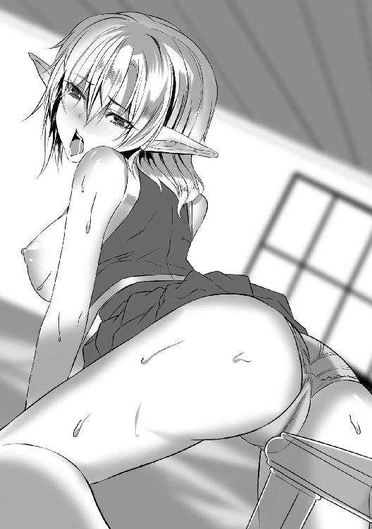

| 最凶魔術師の異常なる逃亡生活1 最凶魔術師の異常なる逃亡生活シリーズ (ビギニングノベルズ) | |
| ピンク色伯爵 | |
| (2015) | |
※本作品の全部あるいは一部を無断で複製・転載・配信・送信したり、ホームページ上に転載することを禁止します。本作品の内容を無断で改変、改ざん等行うことも禁止します。また、有償・無償にかかわらず本作品を第三者に譲渡することはできません。
※本作品は電子書籍配信用に再編集しております。
目次
プロローグ
暗い洞窟に淫らな水音が響く。
「んちゅ......、ちゅ、ちゅ......じゅ......」
断続的に続くそれは、お世辞にも劣情をそそるものであるとはいえなかった。
熟練の『戦士』ならば、奉仕する側が嫌々していることがすぐに分かるであろう、やる気のないフェラチオの音。
唾の量が足りず、舌の使い方もおざなりで、唇の締め付けもないに等しい。
「ちゅ......、ちゅ......、ちゅ......」
闇の奥──洞窟の中ほどにある巨岩には、座した一組の男女の影があった。
岩に背を預ける男と彼の股間に口を付ける女の影だ。
男はボロ布のようなローブを纏っていた。右肩の部分は大きく裂けており、左肩と腰まわりでどうにか衣服としての役割を保っている。人里外れた森の奥に相応しく、蛮人のような格好である。
女は普通の村娘のようだ。
服をすべて剥かれ、脇に捨て置かれている。
彼女の金の髪は解かれていた。
歳はなかなか若いが、特に見た目が美しいわけではない。
体は首の辺りや腕まわりがほっそりしている一方で、腹まわりや腿の肉がだらしなくたるんでいる。
折り曲げた腹には二段の脂肪の隆起ができていた。
肌の色は不健康そうな青白い色で、脇や陰部には金色の恥毛がびっしりと生えていた。
口を動かしているが、目は虚ろで反応も鈍い。
彼女が魔術で操られているのは一目瞭然だった。
「ちっ。やはり素材がよくないか」
闇の中で苛立たしげな男の声が響く。
声は若い。
張りのあるテノールで、どこか音楽的な美しさがあった。
「緊急事態ゆえ、対象を選べなかったのは仕方ないが、それにしても偶々近くにあった個体がこれだったとは。──いや、このような趣向の女で遊ぶのも好きではあるが、ともかく今は一番引いてはいけないカードだった」
男はブツブツと独り言を言っている。もしかしなくても人と話すのが苦手な人種──この男を分類するなら、これに入るに違いない。
彼は自分の考えをまとめるように言葉を重ねていく。
「しかも連れ去っただけで失神するとは思ってもいなかった。意識があればレイプするくらいの楽しみはあったのだが......。しかし嘆いたところでどうにもならない。魔力も回復していないが、仕方あるまい」
そう言って男は、ぐっと身を起こす。
洞窟内に忍び入ってきた月光がわずかに男の顔と体を照らし出した。
とび色の髪に若々しいライトブルーの瞳。
あまり整った顔立ちではなかったが、見るに堪えないほど醜悪というわけでもない。
せいぜい中の下くらいの凡庸な顔である。若く精悍な印象があるから相手を選ばない女子なら彼でどうにか満足するかもしれない。つまりはその程度である。
反面、体は鍛え上げられ引き締まっていた。腹の辺りは女のものと比べるのもおこがましいくらい筋肉の形が透けて見えていた。
がっしりとした青年の両腕が脂肪にたるんだ女性の腹を掴む。
そのまま仰向けに転がし、続いて柔らかい太腿の内側に手を当てて割り開いた。
むあっとした湯気が上がる。
女は興奮しているようだ。
手入れもろくにされていない毛は、サーモンピンクのクレバスから溢れる蜜に濡れて妖しく光っている。
毛は尻の穴まで続いていて、鼻を近づけると、つんとくる尿の香りがした。
割れ目ははしたなく開いてひくひくと蠢いている。覗き込んで観察する青年の息に触れ、小陰唇がぴくりと震えた。その上の──青年から見れば下であるが──肉の芽は既に包皮からわずかに露出していた。
「服に隠され目に見えないところはそれなりにいいものだったが、服の下は度しがたいほどに醜悪だな。──んちゅっ」
膣口に吸い付く。
ぴくりと女の体が跳ねた。
それを上から押さえつけながら青年は太腿を掴む手に力を込める。
尻から垂れ下がるような肉が指の間から漏れて、むにむにと形を変える。
女は刺激のあまりしゃぶるのをやめたようだ。
意識のない彼女は青年の魔術によって動かされているが、それに抗うほどの快感だったらしい。
クリトリスを嬲られ小陰唇を甘噛みされ、陰茎を口に突っ込まれた女はびくびくと蛙のように震え続ける。
やがて陰茎は涎とともに吐き出され、女の若々しい唇からは、か細い息遣いだけが響くようになった。
「はあ──、はあ──、はっ──」
女は頬を上気させ息を乱し続ける。
腹まわりや性器まわりの様子から怠惰で手淫漬けの生活を送ってきたのは明らか。この女が妄想をすればさぞかしいやらしいモノを脳裏に浮かべるに違いない──。
「ぷはっ。──性魔術、起動。【淫夢】」
男の声に女の額が淡く桃色に発光する。
すると途端にＭ字に開脚された股座から愛液が迸った。
ピュッ、ピュッ、ビチャ......。そんな音がした。
「あっ......、あ......、はあっ......」
艶っぽい息遣いの女。
彼女の呼吸に合わせるように膣全体を撫でさするように男の手が動き始める。
手の平でクリトリスや外陰部を大きく摩擦していく。
剛毛の生える恥骨の上部から当てて、尻の穴まで。
手が戻ってくるときは、人差し指と中指を折り曲げて尻の穴と膣の穴を深くゆっくりと抉ってやる。
ヌチュゥ......、ヌチュゥッ......、と粘っこい水音が繰り返される。
「あっ、あっ、あっ......。ふぐ!? じゅ、じゅぼ、じゅぼぼぼ!?」
剛直が女の口に刺さる。溢れた涎が突き出された舌とともにいやらしく肉棒に這い、彼女の眠れる欲望を増大させていく。
「んちゅ、じゅ、じゅぼっ、ずずッ！ じゅぼぼぼぼっ！ レロォ......、んぶぅ、じゅぼっ、ちゅっじゅぼ、じゅ、じゅ、はふ、じゅぼぼぼぼぼぼぼぼぼっ！」
貪欲な女の唇。
青年はわずかに顔をしかめながら女の割り開かれた膣に吸い付く。
シックスナイン。
男が上に乗り、女が下の少し変則的な型だ。
快感に震える汚い女体を上から押さえつけながら、青年は右手で女の腹の肉を揉みしだき、蜜壺を太い舌で抉って嬲る。女も蛸のように陰茎に吸い付いて下品に我慢汁を啜っていた。
女の震えがだんだん大きくなる。
男はクリトリスに吸い付き、両手の指で小陰唇や尻穴を細かく刺激し始める。
「じゅぼっ!? あ、あ、あ、あ！ あ、あっ！ あっ！」
鴨のように高い声。
「あっ、あっ、あひっ!? い、いっ、ああ！ あああっ！」
ガリ、とクリトリスに歯を立てる。
「゛あ♥」
女の声が濁った。
太腿のたるんだ肉がびくりと震える。
ピンクの膣肉がきゅっと締まり、
「゛あ゛あ゛あああああああああああああ！！！！！！」
勢いよく、クリトリスの下の穴から透明な液を噴き出した。
ジョボボボボと大きな音を立てながら温かい潮は迸り、洞窟の岩の床にビチャビチャと跳ねる。
女の痙攣は続く。
青年の力強い体に抱きしめられ、出鱈目に跳ねることも許されず、青白い肌を揺らして快感の波を外に逃がしている様子だ。
やがて大きな筋肉の動きがなくなったところで、青年は女を解放した。
彼女は大股開きのまま白目を剥いてびくっ、びくと震えた。
膣穴は空気を貪るように開閉を繰り返している。
「ふん、淫らな夢は楽しめたか、女」
男は冷たく吐き捨てると女を視界から外した。
魔力もなく、体の鍛えも足りない。
足手まとい以外の何物でもない。
「時間の無駄だった」
男は駆け出す。
洞窟を出て、闇に包まれた草木のうっそうと生い茂る森へ。
月光は届かない。
逃亡者に月の女神の加護はあり得ないからだ。
彼は逃げる。
一目散に逃げる。
やがて限界が来るだろうが、それまでに森の奥へとひた走る。
彼は逃亡者だった。
国を捨て、仲間を捨て、男──アール・ダークラットは、逃げる。
薄汚れた魔術師のローブを手で押さえ、ただひたすらに。
追手
次の日、アールが目覚めたのは森の開けた広場だった。
どこかから鳴禽類の高いさえずりが聞こえてきている。
視線を左右に振るとドングリや枯葉の散る腐葉土。
広場を囲うように乱雑に生い茂るのはブナやカシの木だ。
幹の細いものがほとんどだが、中には樹齢千年にもなりそうな巨大なものもある。
全長数十メートル。
鳥の鳴き声はそのてっぺん、緑の葉が生い茂る上から聞こえてきているようだった。
鼻を動かすと、わずかに栗の花に似た臭いを感じられた。精液の臭いでなければ、ドングリの香りかもしれない。
「────」
もう日は高く、影は真下に落ちている。
記憶が曖昧だが、どうやら昨晩はこの広場まで辿りつき、ここで体力の限界が来て大の字に倒れてしまったらしい。
せめて寝るなら木の上にすべきだったと後悔する。
こんな身を隠すことのできない広場に寝ていては魔獣に襲われても文句は言えない。
慌てて体を起こそうとして背中に激痛が走った。
背中に触れていた地面を見ると、草に赤茶けた血がこびりついていた。
何度か魔術が切れて背中の斬られた傷から出血したようだ。痛覚無視の性魔術を自身に使っていたことが裏目に出たらしい。
血が足りない。
腹も減った。
ぐぅぅぅと間の抜けた音が鳴る。
「天才ともてはやされたこの僕が、空腹に喘ぐ日が来るとは、な」
情けない。
誇りもプライドも粉々だ。
しかし、命が助かっただけましと言うべきか。
このままでは遠からず死体になるだろうが。
魔力があれば性魔術でローションを出して喉を潤すところなのだが、すっからかんの今ではそれも叶わない。
昨日の女から奪った生命力──魔力は傷をふさぎ続けるのだけでなくなってしまった。
相手が一般人だったから仕方がないと言えば仕方がないが、それにしてももう少し回復できる魔力袋であってほしかった。
これでは娘を攫っただけ損である。
「む──」
ふと、アールはぴくりと耳を動かした。
気配──というか、草の揺れる音の中に、わずかに鉄の擦れる音を聞いたのである。
本当にわずかだが、鍛えられた青年の聴覚はその音を逃さない。
森の浅層から何者かがこちらへやってくる音がする。
「まずいな。かなり近い」
呟くや否や、アールは立ち上がり広場を横切り木々の間に分け入った。昨夜よりさらにボロボロになったローブの端を手早く括って肩にかける。
「王国からの追跡者か。いや、ここは既に帝国領内だ。逃走経路は気取られていないはずだし、暗中模索の状態で敵対勢力の国境を越えて追跡してくるとは思えない。しかし後先考えぬ馬鹿なら勘だけで飛び込んでくる可能性もあるか」
木の枝を折って前へ前へと進む。
手を当てた大木の幹はアールの肩辺りまでの皮が剥がされ、橙色の肌が露出している。
革製品のなめし用に採取されたのかもしれない。
とすると、どうやらここはまだぎりぎり村の管理区域のようだ。
高所の樹皮が剥がされていないのは、村に若者が少ないせいだろうか。
管理区域なら追手も道を探しやすかろう。
これはいよいよまずいかもしれない。
苔むしたブナの倒木を跨いで奥へと進む。
細かい枝や葉、蔦が絡みついて鬱陶しい。
──今の状態で彼らと戦うのは自殺行為だ。
出会えば戦闘にすらならず惨殺される。
連中が痕跡を見逃してくれたらいいが、あいにく、ここに来るまで大量のヒントをばら撒きすぎている。
村で女を攫い洞窟でレイプして放置。森の中を荒らしながら移動して、広場に血痕を残しているというおまけつき。
これではそこらの狩人でも、あとを追うことは容易いだろう。
「うっ────」
足が止まる。
大きな木の枝を払いのけた先は、一気に視界が開け、緑の丘とその向こうに青い空が広がっていた。
緩やかな傾斜の丘には続きがないように思える。
まさか、切り立った崖があるのではないか──アールは舌打ちしながらも丘を早足で上っていく。
すると案の定、丘は途中からなくなり、先は急な崖になっているようだった。
高さ的には、性魔術で生み出した亀甲縛り用のロープを使えば崖を伝って下りられなくもなさそう。
しかし不運なことに、崖の途中にはビック・モスキートの巣があった。
この魔獣は百五十センチほどの大きな蚊のような虫で、主食は生物の生肉。今は新年から数えて五番目の月だから、ちょうど繁殖の時期に当たる。非常に危険だ。
ローブを捨てていなくてよかった。奴らは血の臭いに敏感だから。
ローブは臭い漏れを防ぐ魔法繊維で作ってあるのだ。
こいつを着ていなかったら、今ごろ集団でたかられ、麻痺毒を針から流し込まれて卵の苗床にされていたところだ。
気付かれないようにそっとその場を離れる。
しかし──、これでいよいよ逃げ道がなくなった。
行き止まりゆえ、少し引き返さなければならない。
追跡者と鉢合わせになる可能性が非常に高い。
というか、聞こえてくる鉄の音の大きさからもう間近にまで迫ってきている。
「......僕は王国一の天才。できないことはない。焦るな。焦らなければ必ず乗り切れる」
青年は深呼吸すると、そう言って自己暗示をかけるのだった。
※ ※
「リリナ、こっちに人が通った跡があるよ」
肩までの金髪を揺らし、緑色の軽装の少女は後ろを振り返った。
金糸のような髪は、側頭部の一部分だけ三つ編みに結われ、あとは木々の合間を吹き抜ける風にさらさらと宙を泳いでいる。
その髪の左右には尖った耳の先がぴょっこりと露出していた。
エルフだ。
彼女は獣道に横たわった大木に足をかける。
膝上までの緑のスカート──エルフの女性の伝統的な狩猟着──から細く健康的な足が太腿の裏までむっちりと露わになる。
「血痕のあった広場から一目散にここを通ったということかしら。シルウィ姉」
対して答えたのは黒髪を紫色のリボンでサイドテールに結わえた少女である。
黒髪は純粋な黒色ではなく、光の加減によって青い光が透けている。烏の濡れ羽──というのが正確な表現であろう。こちらの少女の髪は毛先が緩やかにウェーブしていた。
服装は着物と呼ばれる東方の伝統衣装を動きやすいように改造したものだ。
着物は薄紫色。胸や手首、腰まわりなどは鉄のプレートが覆っている。こちらも急所だけをカバーした軽装だ。腰には和装に似合わないロングソードが差してあった。
シルウィと呼ばれたエルフの少女が一つ頷く。
「たぶん。でも移動速度が女性一人を担いで逃げているとは思えないほど速い......。もしかしたら村長さんの娘さん、もう殺されて捨てられているのかも」
そう言ってエルフの美しい顔を歪ませる。
細い金の眉、アーモンド形の優しげな目、通った鼻筋に柔らかそうな唇──年のころは十代後半といったところか。
人の死に対してまだ慣れがないように見える。
「だとしても、せめて仇を取らないといけないわ。下手人には自分がしたことをしっかり反省しながら死んでもらう」
生真面目にそう返す黒髪の少女──リリナ。
白磁のような肌に、整えられた少し濃い眉、つり目がちの大きな目には、意志の強そうな黒目が光り輝いている。鼻梁も高く、唇は薄いが艶めかしい桜色をしている。東方の人を思わせる顔立ちだが、それを逸脱した魔性の美貌を感じさせる。人間にあらざる──なにか上位のモノの色香である。
ただ、成人したてなのか、近寄るだけでフェロモンが匂うような体つきではなく、熟れる前の青い果実を思わせる胸や腰をしていた。
「そだね。──足跡もだんだん新しくなってきてる......。私たちの初クエストも終盤に差しかかったってことか」
「気負うことはないわよ。私たちは村で一番の使い手だった。普通にやればそこらの賊程度は何人来ようとものの数じゃないわ」
「リリナは落ち着いているねー。シルウィお姉ちゃんは立つ瀬がありません......。昔はなにをするにも私のあとを雛鳥みたいによちよちと付いてきてたのに、今はもうこんな凛々しくなって。ちょっと寂しいよー」
よよよ、と泣き崩れる真似をするシルウィに、リリナは鬱陶しそうな視線を送った。
「シルウィ姉、私もう成人しているのよ。そんな何年も前のことを毎回毎回掘り返さないで。恥ずかしいし面倒くさい」
「......なんか最近リリナは私に冷たいよねー」
「────」
「えいっ」
シルウィは弾みをつけてリリナに抱きついた。リリナは豊満な胸に顔を圧迫され、「きゃあ」と年相応に可愛らしい声を上げる。
「し、シルウィ姉、なんなのよ！」
「んー？ んふふふふー」
シルウィはリリナの抗議も意に介さず、華奢な体を優しく抱きしめる。リリナの体は震えていたのだ。ゆったりとした着物のせいで分からなかったけれども、彼女もシルウィ同様初めてのクエストに緊張していたらしい。
──頭がよくてしっかりした子だけど、やっぱりリリナはリリナだ。
シルウィはくしゃりと艶やかな黒髪を撫でながらそう思う。
「シルウィ姉、は、離して──」
「リリナ。頑張ろうね」
唐突にシルウィが口にした言葉に、リリナの動きが止まる。
「え──。う、うん」
「初めての実戦だけど、焦らずにいこうね」
「うん......。それ、さっき私が言った......」
「リリナのことは、私が守るから」
「わ......、私だって！」
リリナは急き込んで続ける。
「私だって、シルウィ姉を守るわ！」
「ありがとう」
「うん......」
「────」
「────」
二人はしばしの間無言で抱き合う。
先に体を離したのはシルウィだった。
「行こっか。目標はだいぶん弱ってる。もうすぐそこだ」
「ええ」
リリナは頷く。
二人は地を蹴ると、それまでとは比べ物にならないスピードで森の中を駆けていく。
足跡には血が垂れていた。
これ以上ない目印に、二人は迷うことなく森の奥深くへと分け入っていく。
※ ※
そうして、シルウィとリリナは、森の中層で一人の男を追い詰めた。
木々がうっそうと生い茂る中、男はひときわ大きな木の陰に隠れて二人を窺っているようだった。
リリナがロングソードを鞘から抜き放って前衛に出る。
シルウィは木の陰に隠れる男に油断なく白銀色の弓を向けた。
エルフの技術の粋が集められた弓は、狙いをつければ寸分たがわず目標に命中する。木の陰から出てくれば次の瞬間には頭を矢で撃ち抜ける。
「大人しくそこから出てきなよ！」
キリリと弦を軋ませながらシルウィは大きな声で言い放った。
彼女は続けて叫ぶ。
「抵抗しないなら身柄を拘束して村まで連れていける。だけど、抵抗するならここで君を殺さなくちゃいけない」
村に引っ立てたところで村長の娘を攫った者の末路は石打ちだろうが、そこはあえて伏せる。
リリナが威嚇するようにブンとロングソードを振るった。
「『村まで』連れていく、だと？」
一拍置いて深いテノールが返ってきた。
黒龍王国の訛りのある帝国語だ──シルウィはそう思った。
しかし、訛りがあること自体は不思議ではない。
ここは白龍帝国の中でも黒龍王国との境界線に位置するエリアだ。たびたび割譲したり割譲されたりを繰り返しているので両国の人間が入り混じっており、男のように訛りのある人間も珍しくないのだ。
「そうだよ！ 誘拐したことを村長に謝ればきっと許してもらえる！ 攫った娘さんをどこに隠したか教えてよ！ 教えてくれたら私たちも君を弁護してあげるから！」
「......ではお前たちは、村長に雇われて僕を捕らえに来たのか？」
「え......？ それは、そうだけど......？」
男の質問の意図が分からずシルウィは首を傾げる。
村の娘が攫われたから村長が冒険者である二人にクエストを発注したのだ。娘を取り返し、下手人の身柄を押さえて来いと。
人違いということはあるまい。
森の中に人が住んでいるという情報は受けていない。
足跡だって正確に辿ってきたはずだ。
途中不自然に途切れていた部分はあったが、探索したらまた同じ足跡が続いていた。少なくとも眼前の男が下手人であることは間違いがない。
「シルウィ姉、あまり会話を続けないほうがいいわ」
リリナが前方に油断なく構えたまま小声で呼びかけてくる。
シルウィは頷いた。
敵は魔術師のローブを着ていたという。セオリーでは、魔術師と戦うときは喋らせてはいけないのだ。剣士が剣を武器とするように魔術師は言葉を武器にするから。
案の定、男はどう考えても罠としか思えないことを口にし始めた。
「見逃してはくれまいか。攫った女はもう解放してあるし、ここでお前たちと戦う意思もない。村長に示しがつかぬというのなら、首は無理だが髪の毛を差し出そう。それをもって僕を討伐したことにしてもらいたい」
「......娘さんは生きてるの？」
「シルウィ姉！」
リリナが鋭く呼びかける。
彼女は敵の言葉を鵜呑みにしてはいけないと激しく首を振った。
もちろんシルウィも男の言葉を信じて「はい、そうですか」と取引に応じるほどお人好しではない。しかし、どうにも男の声は必死のように聞こえて、嘘を言っているようには思えなかったのである。
──私の悪い癖だ。
シルウィは内心息を吐く。
思考が単純で楽天家。
リリナにはいつもそのことを咎められる。
「うむ、娘は生きているし、処女膜も無事だ。オーラルセックスにより何回か絶頂させたが問題あるまい」
「ぶっ!?」
「下品......っ！」
シルウィは思わず吹き出し──。
リリナは嫌悪感に流麗な眉をひそめた。
男の発音は優雅であったが、発言内容がまるきり女の敵である。
相対する女性冒険者二人の顰蹙を買ったというのに、男は気付かずにペラペラと言葉を続ける。
「意識もなかったので僕のチンポを咥えたという精神的ショックもない。多少淫乱になっているかもしれないが、まあ、嫁に行くにはむしろプラスとなろうよ。クックックッ」
「うわあ......」
「最低。死ねばいいのに」
「死ねばいいと言われても、僕はまだ死ねないのだ。お前たちの構えを見る限り、なかなかの使い手だと判断する。戦えば我々の内から犠牲者が出る。お前たちとてこんな森の奥で犬のように死ぬなんてごめんだろう？ 穏便にいこうではないか」
「......それで私たちが引き下がると思ってるのかなー？」
シルウィが男の足りない言葉と頭に幻滅しながらため息交じりの言葉を口にする。
対してリリナは凛と声を張った。
「私たちは死なない。死ぬのは貴方だけだわ。足跡に混じって落ちている血の量からして、相当深手を負っているんでしょう？ 下らない妄言を吐く暇があるなら懺悔しなさい」
「ではどうしても僕と戦うと？」
「君が諦めて投降してくれるなら縄で口と手足を縛るだけにしてあげるよ」
「しかし僕が村へ連行されたら石打ちの刑が待っているのではないか？ お前たちが──冒険者がクエストで追ってきたというのならば、僕が攫ったあの女は村の幹部クラスの血縁だったのであろう？」
大事になっているようだから、攫った娘はそれなりに重要人物だったのではないか──そう逡巡もなく答えを弾き出した男にシルウィはさらに呆れた。
──自分の身を守ることに関しては必要以上に頭が回る人みたいだ。
リリナがちらりと振り返って目配せをする。
もう言葉は不要だと言いたいのだろう。
シルウィも同意見だった。
どう考えてもあの男は屑で外道な破廉恥野郎である。
「どうしても僕とやるというのか？」
二人の放つ剣呑な雰囲気に男の声が冷たくなる。
「────」
「────」
シルウィ、リリナ共に無言。
「そうか。僕もみすみす殺されるわけにはいかないのでな。降りかかる火の粉は払わせてもらう」
男の声がフェードアウトする。
瞬間、シルウィとリリナは地を蹴った。
シルウィは右から木々の合間を縫って大樹に隠れる男を射線に捉えようと動き──。
リリナは正面から男の隠れる大木へと突き進む。
近距離で速攻をかける──それは魔術師に対しての基本的な戦術である。
シルウィは目にも留まらぬ速さで矢を三連射する。
エルフの弓術の奥義の一つ、『速射』である。
彼女の弓の腕は生まれた村では一番だった。
速射は通常精度が落ちるが、シルウィのそれは変わらない。弓を引けばその瞬間に勝手に当たるのである。
リリナの斬撃に先んじて三本の矢が男の頭と胸と足に命中する。
大樹の陰に隠れた男の影は衝撃に大きく揺らぎ──。
「え──？」
「なっ──!?」
腐葉土の地面に倒れたのは、人形をした木と岩の作り物だった。
エルフの聴覚であれば、声の主の位置を特定するのは容易いことであるが、男の間の抜けた対応と木々の間に反響する音のせいで、身代わりだとは気付けなかったのである。
初心者冒険者──その経験のなさが露呈した瞬間だった。
リリナのほうもダミーだと気付くや否や地面を這うようにして勢いを殺し、体を反転させていた。
そしてシルウィの背後を見て顔色を変える。
「シルウィ姉ッ！」
「────ッ!?」
声にシルウィは咄嗟に振り向く。
すると木から降りた蔦に掴まって一つの人影が振り子のように近づいてくるところだった。
人影はとび色の髪をした屈強そうな男だ。
着ているものは暗色のボロ布一枚と浮浪者のようにみすぼらしく、手に持っている武器も拳大の石だけと原始的。
しかし接近されて殴られれば死ぬ。
咄嗟に背中に手を回し、矢を掴んで速射の体勢に入る。
その間に男は手に持つ唯一の武器──石をシルウィ目がけて投げ放っていた。
「くっ！」
白銀の弓で石を弾く。ミスリルという特殊な金属でできた弓は石を難なく跳ね返す。
しかしそれで速射の体勢は崩れてしまった。
一瞬遅れて男がシルウィに飛びかかる。
──焦るな！
シルウィは自身を落ち着ける。非力とはいえ、こちらには技術がある。飛びかかってきた勢いを利用して背後に投げ飛ばせばいい──そう考えて即座に後ろに体を倒す。
男はライトブルーの目をわずかに見開いた。
そして、面白がるようにフッと口元を歪める。
「えっ......」
シルウィの目の前で男の体が器用に丸まる。そして、ぎりぎりまで重心を落とし、シルウィの腰に差してあるナイフ目がけて細い暗色の紐が投げられる。紐の先には小石が取り付けられており、ナイフの柄に引っかかって巻き付いた。
「シッ！」
男の歯の間から鋭い息が漏れる。鞘から抜き取られたナイフの刃を二本の指で挟んで捉え──、反動をつけて回して柄を握り、正眼に構える。
ここまで一挙動。
「──ッ！」
バランスを崩しながらも後ろに跳ぶシルウィに、逃さないとばかりに男は追いすがる。
後ろ向きに逃げる者と前向きに追いすがる者。
勝つのは誰が見ても明らかである。
銀の刀身が森の緑を跳ね返してエメラルドのように煌めく。
首の動脈を狙って正確に振るわれた刃は、しかし、
「シルウィ姉！」
後ろからシルウィの服を引っ張って位置をすり替えた、黒髪の少女の左腕によって防がれた。
ズチュッと鈍い音がして、赤い血が飛び散る。
リリナの腕に刺さったナイフに、宙に遊んでいた男の左手が添えられる。リリナはそのまま肘の上までの肉を斬り抉られた。
「あぐっ！」
苦悶に顔を歪めるリリナ。
決定的な隙であったが、追撃はなく、あろうことか男も一緒になって顔を歪めていた。
ナイフから手を離し、よろよろと彼は後ずさる。
「くそ......、傷がまた開いたか。修復を、早くせねば......」
シルウィがリリナに代わって前に出る。
「リリナ！ 下がって！」
白銀の弓は中心で二つに折れていた。エルフの技術で作られた弓はただの弓ではないのだ。接近されたときは、機巧を組み替えることで一対の双剣となる絡繰り武器なのである。
瞬時に双剣形態へ弓を転じ、よろめく男に斬りかかる。
男は舌打ちすると地面を蹴って大きく後ろに跳んだ。
そしてそのまま逃走を始める。
「リリナ！」
「ええ、大丈夫！」
リリナは既に服の一部を裂いて傷の上を縛り終えていた。
彼女は続ける。
「治療はあとよ！ 早く追いましょう！」
「で、でも！」
「大丈夫、血は出ているけれども、それだけだわ。普通に指は動くし」
「ごめん、私が油断したばっかりに」
「いいから。あいつを逃がしてはだめよ！」
「う、うん......」
二人は駆け出す。
リリナは興奮しているようだった。初めての戦いということもあるだろうが、斬られて血が出たということが大きいのだろう。
シルウィも戦闘による高揚は感じていた。同時に自身のせいでリリナが怪我をしてしまったということが精神を悪い意味で乱していた。
高揚し、乱れる。
最悪の状態である。
しかし、目標を前にして引き下がるわけにはいかない。
初クエスト。
冒険者としての最初の第一歩。
できれば、落胆ではなく、勝利の美酒で飾りたい。
二人は男を追跡する。
男の背は森の木陰に見えたり隠れたりしている。
非常に技巧的な動きであるが、そもそも前に進む速さが全然足りていない。
シルウィの鷹のような視力には彼が背中を庇うようにして走っているのが見えていた。
──背中に傷があるんだ。
双剣を接合し、弓の形態へと戻す。
矢は回収できなかったから、あと残り十七本。
手負いの獣を追い詰めるには十分すぎる量である。
シルウィは走りながら矢を放つ。
男は器用に身をひねって避けていく。
しかし、矢を避けることによって男は逃げる方向を誘導され、また余分な動きをさせられて体力を消耗していく。
彼の動きは目に見えて鈍っていった。
そして逃走劇は終局を迎える。
二人の視界が途端に開けたのだ。
木の枝を払いのけ飛び出したその先には──、緩やかな丘と青い空。
そしてその先に広がる低地の森。
崖だ。
丘の先に道はない。
切り立った崖になっていて行き止まりである。
シルウィはエルフ特有の勘でこの場所に男を誘導したのである。
目と耳を始め、五感が桁外れに鋭敏なエルフの第六感めいた狩りの術だった。
男は、崖を背にじりじりと後ろに下がっている。
二人は慎重に距離を詰めていく。
シルウィは矢をつがえ──。
リリナはロングソードを正眼に構える。
対して男は無手。
「いい加減、諦めなさい！」
リリナが頬を紅潮させながら言い放つ。
「悪いが──、はあっ、死ぬわけには、はあっ、いかない......」
男は肩で息をしている。もう幾ばくも体力は残されていないようだ。
リリナが勢いよく地を蹴る。
男がリリナの突進を身をひねって躱そうとするが、それを見たシルウィが速射で追尾する。
矢をすんでの所で躱した男は、地面に仰向けに倒れ伏した。
そして転がっていた石を掴む。
リリナの体が加速する。
小さな石程度では怯みはしないと凛と叫ぶように。
次の瞬間。
男は、背後の崖に向かって石を投げた。
「は──？」
リリナの剣先が驚きに鈍る。
シルウィはそれを見た途端駆け出していた。男が剣を逃れても、自身が止めを刺そうと。
案の定、男はリリナの剣を間一髪で避け──。
刹那、崖の下から無数の影が浮かび上がった。
リリナの顔が恐怖に染まる。
「ビッグ・モスキート!?」
先ほど魔術師に斬られた腕を反射的に見下ろす。
ビッグ・モスキートは血の臭いに敏感であるから──。
「リリナ！」
シルウィが叫ぶのと、ビッグ・モスキートの大群がリリナに殺到するのは同時だった。
「いやあああああああ!!」
リリナは絶叫しながら剣を振るう。
振って、首筋を庇いながら逃げ惑う。
シルウィはためらうことなくビッグ・モスキートの群れに突進した。
リリナは、私が守るから──。
そう誓ったリリナのためなら──シルウィは決死の覚悟で白銀の弓を振りかざして、リリナにたかる羽虫の群れに飛び込んでいく。
「ガッ、がひっ！ いだッ！ や、やめっ、やめでッ！」
リリナはロングソードでは虫を払いきれず、四方八方から襲いかかる麻痺針に全身を刺されまくっていた。
「あひっ、さ、ささ、刺さないでっ、や、やめっ、がっ......！」
細い麻痺針は、しかし、仮にも魔獣のものであるゆえ、一度刺したくらいで折れるものでは決してない。
「あ、あひっ、ひっ、いだ、────あれ？ きも、ぢ、いい？」
美しい黒髪の少女の顔が淫らに歪み始める。
麻痺毒特有の快感。
それがついに少女の全身に回り始めたのだ。
「リリナ！」
「シル、ウィ、ね。た、だず、げ......で......」
それが最後の言葉だった。
リリナの腕がだらりと下がり、首筋に虫の針が突き刺さる。
凛とした剣士の少女は、顔を快楽に歪ませ、舌を突き出して「いひっ」と体を震わせると、糸が切れたようにその場に倒れ伏した。
そこにビッグ・モスキートが何匹も覆いかぶさる。
「このっ......このっ......」
シルウィは半泣きになりながら弓を振るう。
しかし、奮戦虚しく、一匹のビッグ・モスキートが邪魔者を追い払うようにシルウィの腕に長い針を突き刺した。
「あっ......」
たった一刺し。
だけど、それだけでシルウィの腕は動かなくなった。
そして麻痺は全身に回り、体全体が火照っていく感覚。
──だ......め......。
膝が折れる。
目が霞む。
下腹部がきゅっと熱くなって、怖いのに、不快なのに、どうしようもなくエッチな気分になる。
──私、ビッグ・モスキートに卵を産み付けられちゃうんだ......。
リリナと仲良く。
そして麻痺した体のまま、子宮に産み付けられた卵にイかされ続けて、幼虫を産まされる。繰り返し卵を入れられて、体が使い物にならなくなったら、よってたかって肉を食べられて死ぬ。
──やだ、よう......。そんなの......。
頬に涙が伝う。
そのとき、
「おい」
力強い二本の腕が、後ろから体を抱き上げた。
突然のことにシルウィは悲鳴を上げそうになる。
しかし瞬時に口元を押さえられ、視界が黒い虫だかりから引きずり出される。
虫だかりからは、白くて細い引き締まった二本の足が出ている。
はしたなく広げられた足は、虫たちによってＭ字に開脚させられ、時折種付けの快感にびくんびくんと痙攣していた。
──リリナ。
意味のある声は出ずに、馬鹿みたいに「あー、あー」という音が漏れ出る。
「飛ぶぞ」
冷静なテノールが囁く。
瞬間、視界が空色に染まった。
浮遊感。
遠くなる崖の縁。
シルウィは最後にそれらの映像を見て──、意識を暗転させた。
性奴隷契約
シルウィが目を覚ますと、そこは見慣れない洞窟の中だった。
──確か、私は......。
頭を振って記憶を呼び起こす。
それで、快楽に歪んだリリナの顔を思い出した。
「リリナ！」
がばりと体を起こす。
しかし右足が強い力に引っ張られてシルウィはよろめいた。
咄嗟に手をつこうとして、両手も縛られていることに気が付いた。
見れば右足も縛られている。
体を支えることができず、そのまま顔面から岩の地面に突っ込みかけて──、横から力強い腕に支えられた。
「あ......、え......？」
「起きたようだな」
斜め上からよく通るテノールが響く。
その声には聞き覚えがあった。
「──ッ！ 君は......！」
シルウィは腕の主をねめつける。
とび色の髪、ライトブルーの瞳、がっちりとした体型の男。
クエストで討伐を依頼された、強姦殺人犯の魔術師だ。
服は脱ぎ捨てたのか裸だ。
平時なら頬を赤く染めていたかもしれないが、今のシルウィの中には男に対して抑えきれない憎悪しかない。
──こいつのせいで、リリナは......！
とび色の髪の男はシルウィの殺意など意に介さず、淡々と事務的に礼をした。左胸に右手を当てる──気取った貴族風の礼だ。それがまた嫌味たらしく思えて、シルウィには不快以外の何物でもなかった。
「改めて名乗ろう。僕はアール・ダークラット。呼び方はどのようなものでも構わない」
「............」
男──アールの言葉に、シルウィは沈黙を続ける。
アールは続けた。
「今からお前を犯す」
「────っ」
シルウィはびくりと体を震わせた。
──そうだ、私は男に捕まったんだ。だったら、犯されるに決まってる。
冒険者になると決めたときから覚悟していたことだ。野垂れ死にすることはもとより、盗賊の類に敗れてレイプされることも。
路銀に困窮すれば、自分の体を売ろうとも考えていた。リリナに内緒で。リリナのために。
でも、そのリリナはもういない。
彼女はビッグ・モスキートの卵の苗床にされた。
今ごろ巣に持ち帰られて、虫の出す汁を口に与えられながら、卵がもたらす子宮の疼きに精神を破壊されているに違いない。
守ると決めた可愛い妹分は、もう助からない。
「エルフであるお前は素材として素晴らしい。シックスナインでは終わらない。お前のおマ○コに僕のチンポを突っ込んでぐちょぐちょにする」
絶望に閉ざされた脳裏に、男の声が響く。
「............」
「どうした？ なにをそんなに落ち込んでいる？ 虫の毒でおマ○コが疼いて仕方ないか？」
「────っ！ あああああ！」
男の無遠慮な言葉に、シルウィは手近な石を掴んで殴りかかる。男はそれを右手でがっしりと受け止めた。
「リリナはッ！ リリナは君のせいでッ！」
視線だけで目の前の男を殺せたら──シルウィは整った顔を歪ませながら荒い息を繰り返す。
男は「ふむ」と顎を撫でた。
「察するに、お前は僕のせいで相方が死んだことに腹を立てているわけか」
「............」
答えない。視線で殺意だけ伝える。
アールも返答を期待していたわけではないらしい。
「なるほど、お前の気持ちはよく分かる。僕がお前でも同じように怒り狂っただろう」
「............」
──なにをいけしゃあしゃあと。
シルウィは奥歯を噛みしめた。
「しかし、僕は戦闘に入る前にきちんと和解を申し入れたはずだが？」
「────っ」
それは、その通りだった。
「それにもかかわらず、お前たちは僕に襲いかかった。僕は仕方なくお前たちの凶刃から逃れるために反撃した。それだけだ。お前の相方を殺さないように立ち回ったとしたら、僕は今ごろ首と胴とを分かたれていたはずだ」
「............」
シルウィは唇を噛みしめた。
アールの言うことは、心の奥底では分かっていたことだった。
先に襲いかかったのはシルウィとリリナなのだ。アールはそれに反撃したに過ぎない。
──君が村長の娘さんを強姦したから、リリナは死んだんだよ！
とは言えなかった。
それこそアールにとっては知ったことではないことだろう。東方の有名なフレーズを借りるならば、風が吹いて桶屋が儲かるようなものだ。
狭い村で二人で一番になって調子に乗り、若気の至りで村を飛び出して冒険者になった。
そして意気揚々と受けた初クエストで見事に失態を演じた。
それだけだ。
「レロ」
「ひっ」
不意に生温かいなにかが首筋を撫で、シルウィは跳び上がった。反射的に後ろを振り向くとアールが首筋に顔をうずめていた。
「や、やめ──」
やめて、と叫ぼうとして口を噤む。
冒険者として村を飛び出した日、母から受けた注意を思い出したからだ。
（もし、男に犯されることになったら、そのときは決して怯えないように）
怯えた声を出せば、男は調子に乗る。
ただ無言で、なんの反応も示さない人形を演じなさい。
そうしたら男は「面白くない」と放り出してくれるだろうから。
エルフは美しい。
特に金の髪を持つハイエルフであるシルウィはさらに他と一線を画す。
『面白くない』程度ではすぐには殺されない。
男たちが手をこまねいている隙に、なんとか逃げなさい。
「............」
シルウィは這い上がる嫌悪感を抑えつけながら首を前に戻す。アールは首筋の臭いを嗅いでいるようだ。変態だ。
やられていることは最低だが、彼が自分に価値を感じているのは確かだった。
人形になってもすぐには殺されない。
そう確信する。
「────っ」
だからシルウィは歯を食いしばった。
母によると、とても痛いらしい。
そして臭くて、汚くて、気持ち悪いらしい。
実際アールは臭かった。
何日も体を清めていないようだし、体に今まで嗅いだことのないようなイカっぽい臭いを纏っている。
でも、それは何故かお腹の下が温かくなる臭いだった。
──ビッグ・モスキートの毒が効いているんだ。
瞬時に原因に思い当たる。
発情してしまうのは業腹だが、これから乱暴に痛めつけられることを考えれば僥倖である。
麻痺毒で痛みが和らげば、きっと無表情でレイプを耐え抜けるはずだから。
ごつごつとした男の指が服の上からシルウィの胸を這う。
「性魔術起動。【魔力吸収】」
アールが未知の言葉を唱える。
途端、シルウィは全身から力が抜けていくような感覚に陥った。
「......私に、なにをしたの？」
「性魔術をかけた」
「聖魔術......」
シルウィは眉をひそめる。
そんな属性の魔術など彼女は聞いたこともなかったが、言葉の意味からしてこの男は神官の類かと当たりを付ける。
ならば、一日に何時間かは神への祈りを捧げるに違いない。その時間を狙って逃げれば追ってくるにも追ってこられまい。
逃走計画を練るシルウィの体に男の無遠慮な指が這う。
「────っ」
我慢だ、我慢──そう自身に言い聞かせる。
シルウィは深呼吸すると心を落ち着かせた。
緑色の軽装鎧の胸当ての部分──硬い鉄のアーマーの下にごつごつとした手が潜り込む。
鎧により押さえ込まれていたＤカップのエルフ乳がむにゅむにゅと形を変えられる。
暗緑色の鉄の装甲から豊満な乳肉を包むぴちぴちの服が漏れ出ていやらしく揺れた。
胸の下──汗の溜まりやすいところを服の上から優しく撫でられる。そのまま胸全体を包むように手の平が滑った。胸の上まで親指が移動したとき、小指の先が胸の頂点に当たった。
──んっ......。
ぴくんと体が跳ねてしまう。しかし声はぎりぎりで抑えた。
「ほう。この感触......陥没乳首か」
男の声が耳元で響く。嫌悪感しかない男の声だ。
「............」
無言。無言を貫く。人形女になる。
今のところ怖さと嫌悪感でいっぱいだ。だがそのおかげで物言わぬ彫像を演じ続けられている。
アールは乳首に興味を示した。
ということは、乳首を弄られるのか──シルウィは吐き気を感じながらも必死で耐える。
しかし、どういうわけか乳首への刺激はこなかった。
アールは乳首には触れずそれ以外の乳部をまんべんなく撫でていく。
乳の下を撫でられるときはややくすぐったさを感じるが、それ以外はシルウィにとってはどうということのない刺激だ。
そもそも、胸だけでイったことなどないのだから。
「シルウィ、見ろ。お前の胸がいやらしく動いているぞ」
思わず胸部を見下ろすと、男の手によって脂肪が生き物のように蠢いているのが見えた。
まるで服の中に触手が入って暴れているかのよう──そんな幻影を抱いて、シルウィはぞくりとした。
──私のおっぱいが、蹂躙されてる......。
それはふと出てきた謎の感想だった。
花を見て綺麗だと呟くのに似ている。
だけど、そう思ってしまったという事実が彼女の心をいたく乱した。
──全然、いやらしくなんかないっ。
生娘特有の焦り。
快楽を知らないから、それに対する恐怖も入っていた。
アールは胸を優しく揉みながら囁く。
「さっきの魔術がどういう効果か教えてやろうか？」
──さっきの......聖魔術のことか。
シルウィはエルフにもかかわらず魔法の素養がない。父も母も教えてくれなかったからだ。
だから先ほど青年が口にした魔法言語も理解できないでいた。
「さっきの魔術は、お前が淫乱になる魔法だ。エッチな気分になる魔法なんだ」
シルウィに魔法の素養がないことに気が付いているアールは口からでまかせを言う。本当はハイエルフの少女の内に眠る膨大な魔力を掠め取る魔術であるが、シルウィにはそれが分からない。
妙な脱力感や、気持ち悪いくすぐったさはすべてそのせいかと納得してしまう。
「そんなことをして私を感じさせて、男として恥ずかしくないわけ？」
勝ち誇ったように挑発するシルウィ。
アールは口元を歪めた。
「クク......。若いな」
指が胸から下にゆっくりと下ろされる。肋骨を撫で、脇腹を通過し──尻に触れるか触れないかというところでまた脇腹に戻ってくる。
──お尻、触らないんだ。
内心、安堵する。実は怖かったのだ。怖くてたまらなかった。
アールの指はそんな彼女の心情を汲み取ったように肋骨や腋の下、肩まわりなど当たり障りのないところを撫でていく。
胸には触れようともしない。
冷たい洞窟の中で、まるで体温を分け与えているかのような行為。
十数分それが繰り返されたところで、いい加減シルウィは結論を下さざるを得なくなった。
──このアールって男、度胸がない。
胸に触れない、尻にも触れない。
舐めないし、股間のモノを取り出そうともしない。
それどころか、体を這う手にも性的な意図が感じられなくなりつつある。
アールは背後にいるから顔は見えないが、息遣いはきちんと聞こえる。
彼は別段興奮した様子もなく、呼吸のリズムは一定だ。
「抵抗はしないのか？」
唐突に聞かれた。
「............」
無言で返す。
「なるほど、心得があるということか」
「............」
アールはペッティングをやめない。マッサージするように全身を柔らかに揉んでくる。
筋肉を解すように。
血行をよくするように。
事実、体は温かくなり、シルウィの体からわずかに汗が滲み始める。
「どうだ？ エッチな気分になるか？」
「全然。魔術使ってこれって、君はたいしたことないんだね」
「む......、もっとすごいやり方も知っているのだぞ。最初はお前を無理やり犯すつもりでいたが、それでは僕の目的を十全に達成できぬゆえ──」
拗ねたような声。それはシルウィからすれば負け惜しみにしか聞こえなかった。
「............」
無言で優越感に浸っていると、アールは耳元で低く囁いた。
「では、少し強めでいくぞ」
「────っ」
耳に当たる息のくすぐったさにぞくりと肌が粟立つ。
でも。
──好きにすればいい。どうせたいしたことない。
気丈な自分がそう鼓舞する。
怖さはもうなくなっていた。
「胸を揉むぞ」
アールはそう言うとゆっくりと乳肉に手の平を付ける。
依然陥没したままの乳首には触れず、指の間に避けるように。
そしてゆっくりと揉み始めた。
「────」
先ほどとほとんど同じ動き。それにわずかなくすぐったさが混じっている。
胸全体をゆっくりと大きく動かしていく。
違うのは、胸の下の揉み方。ゆっくりと──パスタの生地を棒で平らに伸ばすように──押し潰しながら揉んでくる。指先はくすぐるように手の平に遅れて触れてくる。
「んっ......」
小指が乳の頂点に引っかかった。
恥ずかしげに引っ込んだてっぺんを、小指が一瞬抉るように撫でていく。
かりりと。
引っ掻くような、鋭角な刺激。
虫に刺された痕を引っ掻かれたように、形容しがたい刺激はシルウィの胸に甘く残る。
──あ......、また。
かり。
──また、くる。
かり。
──また......。
かり。
気付けばシルウィはその刺激に集中していた。
──一往復するたびに、一回。
かり。
──必ず。
かり。
──くる。
かり......。
それは中毒性のある刺激だった。
何往復かしたころ、胸の下のくすぐったさもむず痒いようななにかに変わる。
「男女の性交を見たことはあるか？」
「............」
男の不躾な質問には当然答えない。
だけど、内心では彼女は密かに頷いていた。
──ある......。
お父さんとお母さんのを。
エルフは子を孕みにくい。
それは女性の膣に比べて男性のモノが小さすぎるということもあるが、一番の理由は性欲のなさである。
エルフの男性は性欲を感じる回数こそ他種族と同じくらいだが、その持続時間が少ない。他のこと──狩りや魔法の勉強や技術の研鑽に興味があるからだ。
だから、他のことを考えられなくするように交わるときは媚薬を使う。
我も忘れるほどの性欲の獣になるための薬。
それでエルフの女を満足させるのだ。
シルウィは一階の寝室で獣のように交わる父と母の姿を見たことがあった。あれだけに派手にやっていれば気付かないほうがおかしい。エルフの子共ならよっぽどのマイペースでなければ皆、男女の交わりを知っていた。
普段理知的な父が涎を垂らしながら腰を振る姿。
普段清楚な母が、淫らに髪を振り乱し、嬌声を上げる姿。
気持ちいいのかな？ ──そう疑問に感じたことは、確かにあった。
──あっ。
かり、とまた小指が乳首を引っ掻いて、シルウィは記憶の海から引き揚げられた。
「ハーフエルフが何故生まれるか知っているか？」
「............」
「不思議に思わないか？ 誇り高く潔癖なエルフが、薄汚い人間のモノを受け入れるなど」
「............」
「いまや強姦されたというだけでは説明がつかないほどハーフが溢れている。これは、何故か、分かるか？」
「............」
──知らない。
「それはな」
男が耳に口を近づける。
今度こそ、文句なしに、ぞくりと背筋にくすぐったさが這い上がった。
「人間の男とのセックスが、すごいからだよ」
すごい──声を潜めて内緒話をするように、アールはそう言った。
シルウィの耳が、かっと朱に染まる。
同時に男の中指が乳頭のくぼみに入り込み──ぐりぐりと隠された乳首を抉り始めた。
「ひっ、ああああ！」
声が上がった。
一瞬誰の声か分からなかった。
でもそれは、間違いなくシルウィ自身の声だった。
「鎧、外すぞ」
アールは低く囁くと鎧の留め具をパチパチと外していく。程なくして、シルウィの大きな胸が空気に晒された。
インナーの下にはおっぱいがある──そう思うだけで、シルウィは頬を染めた。
「腰のも外すぞ」
エルフの伝統的なミニスカート──緑色の膝上までの、なだらかな布のスカートが露わになる。
アールは腰のベルトだけは外さない。
鍛えられ、引き締まったエルフの肉を服の上から舐るように見つめている。
「ほう。綺麗な体をしているな」
「............」
「戦士なら当然か。真面目に鍛錬に励んでいたのだな。今まで見た中で最高の素体だ。健全な体には健全な精神が宿る。お前はすべてにおいて美しいエルフだ」
──そんなことない。
村で天狗になって、父と母に迷惑をかけて、妹分であるリリナを守ることができなかった、どうしようもないエルフだ──シルウィは憂鬱な気分になる。
忘我の境地にいるシルウィの腰に、アールの両手が伸びる。
腰、尻、腿......。
ねっとりとした愛撫だ。
岩の地面のせいで冷たかった脚が、硬くごつごつした男の指に撫でられる。
筋肉だけではなく、程よく柔らかさの残る肌を無骨な手が撫でていく。
「肌、少し日焼けしているな」
「............」
「綺麗だ」
ぞく......。
太腿の産毛が粟立った。
男の右手が上がる。
襟元からするすると中に侵入し、左の胸を横に引っ掻くように触り始める。右腕は右胸の頂点を押し潰すようにぎゅっ、ぎゅっと物足りない刺激を送る。
中指がくぼんだ乳首を引っ掻く。
手の平は往復しない。せわしなく乳首を引っ掻く。
「ん、あ、あ、あ、あ、あ、あ」
ついにシルウィは声を上げた。
白い喉を反らせて、肩を震わせながら。
乳首が、痒い。
でも気持ちいい。
もっと、触ってほしい。
「下も、触るぞ」
左手が腰を撫で、スカートの中に侵入する。
シルウィは両足を外に崩し、尻をぺたりと地面につける──女の子座りの格好。
短いスカートは尻の形を浮かび上がらせ、柔らかな腿の肉によって皺ができていた。
アールはシルウィの腿を撫でる。
彼は溜まった垢を擦り落とすように内股を撫で始めた。
※ ※
アールは鼠蹊部を撫でる。
太腿と太腿、そして下腹部の三角地帯を下着の上から撫でる。
「あ、あっ......。ぁ、ぁあ、んっ、あぁっ......」
目をやると、シルウィは胸を弄られる感触に頬を紅潮させて喘いでいた。
宝石のような翠緑の瞳は、快感に濡れ。
桜色の唇は開かれて端から涎が垂れ始めている。
──ずいぶん気持ちよさそうだな。
なかなか強情な娘だが、感度はいいらしい。
──一生忘れられない程の快感を覚えさせてやる。
アールは口の端をつり上げると指を一層細かく動かした。
胸を揉みながらインナーのボタンを外し、両胸を露出させる。
ぼろんと大きな乳が姿を現した。
それを荒々しく鷲掴みにする。
「あひっ!?」
シルウィの体が跳ねる。それを背後から抱きすくめて止める。軽くイかせることも許さない。体の痙攣を外部から押さえ、彼女の内部に眠る快感をわだかまらせる。
「どうした？ 気持ちいいのか？」
「────っ！ き、気持ち、よくなんか、ない......っ！」
「そうだな。この程度で気持ちよくなるなんて、淫乱だ」
「────っ!!」
シルウィの顔が羞恥に染まる。唇を噛みしめ、瞳に強い意志が宿る。
負けない──そう言っているようだった。
右手で胸を揉み続けながら、左手でショーツの両脇から指を入れる。
「──ほう。エルフも生えているのだな」
「────っ！」
指先で足の付け根──リンパの辺りを揉みしだく。
左右に割り開くように。
くにくにとしつこく。
パンティに包まれているはずのシルウィの膣から、クチ......、クチュ......、とはしたない音が漏れた。
シルウィは見た目によらず剛毛のようだ。手入れはきちんとしているのか、刈りそろえられているように思える。
アールは無造作に緑のスカートをめくった。中を覗き込もうと後ろから首を伸ばす。
「や、やあっ！」
シルウィの高い声が首筋をくすぐった。
閉じられようとする足を割り開く。
手探りでパンティを横にずらす。
細くくびれた腰から視線をゆっくり下へ。
緑のスカートの両脇には折り曲げられ、細いがむっちりとした太腿。
その中央は暗くてよく見えない。
アールはシルウィの体を少し後ろに倒した。
すると腰を突き出すような形になってスカートの中に光が当たる。
そこは──妖しく濡れそぼっていた。
びっしりと茂った金色の恥毛。
その合間に覗くピンク色の媚肉。
襞はめくれて、頂点の肉の芽は皮から出て膨れ上がっていた。
クリトリスがかなりでかい。パンティがクリに引っかかってずれたままだ。まったくもってはしたない陰核である。
しかし、昨夜犯した村娘のそことは違って、汚さは感じられなかった。
シルウィの陰毛が尻の穴のほうまで続いていないからだろうか。
鼻から息を吸い込むと、濃密な雌の香りが肺に満ちた。
獣臭いような──甘い発情の香り。
「～～～～っ」
ちらりと上を見るとシルウィは恥ずかしさのあまり、縛られた両手で顔を覆っていた。
敗北を認めたくない、しかし、自分は濡れてしまっていた──彼女は言い訳ができない状態になっていた。
だから、そこに理由を与えてやる。
「どうやら、淫乱になる魔術が効いてきたようだな」
「────っ！」
シルウィが両手を顔から離してアールを見下ろす。
美しい顔は怒りに染まっていた。
アールは口の端をつり上げる。
「意思に関係なく全身が気持ちよくなる魔術だからな。腹が減ったら腹が鳴るのと同じ──生理現象だ。所詮、純真なエルフといえども、一匹の雌だったということだ」
「魔術に頼るなんて、最低だよ」
「どうとでも言え。感じないお前が悪いのだ。だから無理やり魔術で感じたことにした。──さて、次はお前に淫らな声を出してもらいたいが」
「声なんか聞いて、どうするの？」
「無理やり声を出させてもいいが？」
「............」
アールはシルウィから目を離すと再びスカートの中に手を突っ込んだ。
スカートをめくり上げる。
白いうなじにキスしながら、右手で乳首を引っ掻き、左手で大陰唇をジョリジョリと揉む。金の陰毛が奏でる音に、シルウィの荒い息が混じる。
「はあ──、はあっ──、はあ......」
目を閉じ、快感に耐えるようにシルウィは唇を噛んだ。
右手の親指で乳首をぐりっと抉る。
「んひっ!?」
白い喉が反り返る。アールは白い喉にむしゃぶりつき、舌で優しく舐め始めた。
前開きのインナーからこぼれ出た乳首──親指で抉ったそこは、陥没から顔を出し、いまやびんびんにそそり立っていた。
「はあ、あっ、あぁ、ぁ、ぁんっ！」
乳首を嬲る。
つねる。
ひねる。
潰す。
乳輪を中指でマッサージする。
「あっ、あ、ぁ、あっ、ぁあ、はぁっ、んっ、んんっ」
右の乳首は勃起させた。
次は左だ。
アールは同じように左の陥没部も親指で抉る。
「はぁぁぁんっ!!」
シルウィ大口を開けて絶叫した。
唾液に濡れた桃色のいやらしい舌先は、唇から突き出し、空中で小刻みに揺れている。
アールは首筋から顔を離し、シルウィの耳元で囁いた。
「これは魔術なんだ。気持ちよくなるのは、当然だ」
「きもひ、よふなふの。と、ぜん......」
「そうだ」
言いながら大陰唇を愛撫する左手を、わざと媚肉のほうへ滑らせる。
揉んでいて、陰毛で指が滑って、間違えて入ってしまったように。
「んいっ!!」
シルウィが股を閉める。
腰が逃げるように浮く。
彼女は前に倒れ、両手を岩の地面に着いて四つん這いになった。
そこへアールが親亀に乗る子亀──実際には大きさ的に逆だが──のように覆いかぶさり、左手で陰部を嬲り始めた。
「ふーっ、ふーっ」
シルウィは項垂れて荒い息をしている。
アールの目の位置からは、項垂れる彼女の首筋がはっきりと見える。
さらさらの金髪の間から露出したうなじは桜色になっていた。
襞を人差し指と中指、薬指で撫でさする。中指を膣口に当て、人差し指と薬指は小陰唇が作る溝をなぞる。
「んあ、はあっ、あ、はあ、ふ──、んひっ、ふーっ。んあっ、あ、ああっ」
ジュポ、ジュポ、グチュ、グチュと豪快な音をシルウィの陰部は奏で始める。
蜜壺から溢れ出た健康なエルフの愛液がねっとりと白い内股を伝う。
程なくして涎を引くように膣穴から直接地面に滴り始めた。
「あ、あ、あ、あっ、あ、はあッッッ！ ──!? あ、だ、だめっ！ だめぇッ！ や、やめて！ もうやめてっ！」
シルウィの膣口がきゅっと締まる。
抗議の声を無視して、アールは締まる膣穴に人差し指と中指をぐっと突っ込んだ。
折り曲げ、Ｇスポットに指の腹を擦りつける。
瞬間、シルウィは背をのけぞらせて獣のように吠えたけった。
「゛あ゛あ゛ああああ頭、へんになるぅぅぅッッ!!」
がくがくと体を痙攣させる金髪エルフの可憐な美少女。
その顔は涎と涙でぐちゃぐちゃだった。
快楽に蕩けた目が虚空をさまよっている。
「よし、ではそろそろ、エルフマ○コにチンポぶち込んでやるか」
「────!? ま、待って、やめえぅぅぅぅぅうううううん!?」
アールの赤黒い剛直が止める間もなくエルフの処女マ○コに呑み込まれる。
グププとおならのような恥ずかしい音を上げて、シルウィの膣は十八センチの硬い肉棒を呑み込んだ。
愛液に純潔の証が混じる。
「性魔術起動。【部分修復】」
アールは低く唱える。
処女膜は再生させず、血を止め、傷を治す術である。
トロトロのぐちょぐちょになっていた肉壺からは、痛みが消え去り、快楽だけが残る。
「あああああああああああああっ!!」
パンパンパンパンと白い尻と野獣のように汚い股間がぶつかる。
「どうだっ!? シルウィ!? はしたない雌穴に僕のチンポを咥え込んだ感想はッ!?」
「ああああああ！ わ、わかんな、っいぃ、よぉぉぉぉぉぉ!!」
「では、分かるまでぶち込んでやるッ！」
「んおおお!? おおおおおぉぉぉぉ！」
「はっ！ これで本当に処女だったのかっ!? 感じすぎだろう！ お前は淫乱だなっ、シルウィ！」
「ち、ちが、これ、まじゅちゅの、せいでっ、んぉおっ!? やめ、お腹の裏、こすら、ああああああ!!」
「──は。そうだったな。魔術のせいだった。ならば、感じても仕方がないな」
右手で乳首を。
左手で陰核をひねり上げる。
シルウィは目を見開き、舌を突き出して「こひゅ」と空気を漏らした。
優しげで純真さを残していた顔──背伸びをしたお姉さんエルフの顔が、それでも快楽に耐えようと震える。
翠緑の瞳は快楽に染まりながら、理性の光を手放そうとしない──はずだった。
魔術のせいだという甘言にほだされ、シルウィの意識に火花が散る。
「え......？」
そして、いつの間にかアールの腰が止まったことに、彼女は驚愕していた。
アールは膝立ちしたまま、冷静な目でシルウィを見下ろしている。
「どうかしたか？」
「え、いや、その......」
──どうして、止めちゃったの？
そんなことは聞けず、シルウィは言葉尻をすぼませながら地面に視線を落とす。
しかし、そんな彼女の女の場所は正直だった。
今なお彼女の膣内にある逞しい肉棒を、くちゅくちゅと甘噛みしている。
「疲れた。もう体力の限界だ」
アールはそう言い捨てると乱暴に陰茎を引き抜いた。ペニスの笠の部分が膣壁を擦り、シルウィは口元を押さえる。しかし縛られていることもあり、口は覆いきれずに「ふぅん」という甘い声が微かに漏れた。
アールは気付かないふりをして岩の上に寝転がる。
剛直は依然として天高くつき上がっていた。血管が浮き出てびくびくと震えていた。
シルウィは、自身の愛液に濡れて妖しく光る赤黒い棒をぽーっとした顔で見つめた。
「だが、魔術でお前を淫乱にした責任がある。僕はこうして寝転がっているから、お前は僕の上に跨るなりなんなりして勝手にやれ」
「え──と。それは、この上に、座って、入れるってこと？」
「そうだ。我慢はよくない。やったほうがお前のためだ」
「そ、そっか......。なら、仕方ない、かな......」
シルウィは太腿を擦りあわせながら、ぎこちなくそう言った。
※ ※
「んっ、はあああぁぁぁぁ......」
アールの上で大股開きで腰を落としたシルウィは、頭をのけぞらせて大きく息を吐いた。
蛙のように足を折り曲げて肉棒をピンクの膣肉に咥え込んでいる。
アールの位置からはぐっぽりと美味しそうにチンポを呑み込むところも、びんびんに勃起したクリトリスもすべて丸見えだ。
大きめの乳輪を持つ陥没乳首おっぱいも恥ずかしがり屋な乳首をぴんと露出させていた。
アールのとび色の陰毛に、シルウィの金色の陰毛と真っ赤に充血したクリトリスがジョリジョリクチュクチュと擦りつけられる。
シルウィは恐る恐る腰を動かし──、すぐに頬を紅潮させながら、無心で上下運動を激しくさせた。
アールはペニスにシルウィの膣壁が包み込むように張り付くのを感じた。
魔導オナホールとは違う、生身の肉の感触。
「くっ......、一度目は締め付けるだけだったが、二度目はこうなるか......。これは、いいな」
シルウィは彼の呟きが聞こえていないらしく、虚ろな瞳で腰を振っていた。
「これは、魔術。魔術、だから。んはあっ。だからっ、仕方なく、やって、おっ、んぉ、おっ。仕方なく、してるっ、んぅっ」
もしかしたら、虫の苗床にされた仲間の惨たらしい姿を必死に脳裏から振り払おうとしているのかもしれない──アールは優しく射精を促してくる極上のエルフ雌穴に眉をしかめながらそう思考する。
「はあ、はあっ、はっ、はあ。気持ち、いい。あんっ！ ちが、気持ち、よくなんかない。んうぅ！ ああっ、やっぱ、だめえぇぇぇぇぇ！ いい、いいよお！ きもちいいよぉぉぉぉぉっっっ!!」
シルウィが両手を腹の上に乗せて、女の子座りになって腰を水平にグラインドさせる。
緑色の瞳は濁っていた。
舌は常時外に突き出され、犬のように荒い息が繰り返される。
アールは両手を伸ばすとぶるんぶるんと大きく震える胸の頂点──乳首を摘まんでやった。
「あひっ!? ち、乳首っ！ 乳首っ......！」
シルウィはぽろぽろと涙を零しながら狂ったようによがりまくる。
「んおおおおおおおお!! ぎもぢいいいいいいい!!」
洞窟に、淫らな水音と、獣になったシルウィの声が、遠く反響し続ける。
「くぅっ......、シルウィ、もう出る！ 出すぞッ！」
「ああああああ!!」
シルウィは聞いていない。
アールの中出し発言にもかかわらず、快楽を求めて腰を振り続ける。
びゅく、びゅるるるるる!!
白い濁流がシルウィの膣から爆発的に溢れ出した。溢れ出た白い精液はバチュバチュと粘っこい音を立てて、シルウィの腿の内側を汚していく。
「はああああああんっ!!」
シルウィは背を反らし、形のいい双丘をびくんびくんと震わせた。
そのまま、後ろにころんと転がる。
アールが立ち上がってみると、シルウィは快楽に溺れた目をして痙攣していた。
だらしなく広げられた脚の合間には、極太ペニスの形の黒い穴が開いたピンクの膣肉。
そこからゴポリと音を立てて白濁液が垂れ落ちる。
「あ♥ あ♥ あ......♥」
壊れた人形のような声が虚しく続く。
彼女は絶頂し、完全に気を失っていた。
「性魔術起動。【性奴隷】」
アールはひくひくと震える膣に手を当てて、そう唱える。
するとシルウィの下腹部──金色の陰毛の少し上辺りに魔法陣が浮かび上がる。
魔法陣の光はやがて収束し、黒いハート形のペイントになった。奴隷と主人だけに見える性奴隷の証である。
これは精液を媒介とした奴隷契約魔法。
奴隷紋が刻まれた相手は、刻んだ主が魔力をもって発した命令に逆らうことができなくなる。
「ククク......、一時はどうなることか思ったが、これで魔力袋は確保できた。ククク......」
アールの密やかな笑い声が洞窟に反響する。
神はまだ自分を生かそうとしている──そう確信する。
「しかし、死にかけていたからといって安易に女の確保に走ったのは失策だったか......」
アールは脳裏に蘇る血まみれの記憶を無理やり抑えつけた。
──いや、深く関わり合いにならなければよいのだ。この女もすぐに捨てればよい。
しばらくは魔力の補給手段として利用する。
だが、ある程度持ちなおしたら手切れ金を渡してポイだ。
今は手切れ金どころか無一文であるのが苦しいところだが。
ともかく、魔力だけは回復した。
次は治療だ。
アールはそう考えをまとめると、洞窟の入り口付近の岩にもたれて目を閉じた。
救出作戦（偽）
翌朝。
シルウィは洞窟内に入ってきた眩しい朝の光に目を覚ました。
「ん......」
ここは、どこ──と呟きかけて、昨日の記憶がフラッシュバックする。
──そうだ。リリナがやられて、それで男に捕まって、犯された。
シルウィは自分の体を見下ろす。
鎧は外れたままだが、衣服はきちんと整えられている。股間からわずかに自分の愛液の臭いがするが、それ以外に不快感はない。パンティもきちんと穿いている。
お腹の中に残るのは甘い疼きだ。
あさましい──シルウィは反射的に自分を恥じた。
犯されたというのに、最後は自分から腰を振っていた。
リリナのことを忘れられるならなんでもいいと快楽を貪った。
そして、今朝になっても下腹部がまだ快感を求めている。
──本当に、あさましい。
膣内の精液を掻き出そうと、緩慢な動作でポケットから布を取り出す。そして中を割り開いて見て、白濁液が溢れて出てこないことに首を傾げた。
ふと陰毛の生える上に目を移すと、見覚えのない黒いハートマークがペイントされていた。
指や布で擦ってもインクが滲まない。
刺青ではないようだが──、尋常のインクでないことは確かだ。
インクの正体に関しては立ち上がってみると判明した。
ちょうどシルウィの目線の高さの壁に、契約文書と思しき文字が彫られていたのである。
「これ......、冒険者ギルドで見たことある......魔術師の契約書？ あいつの仕業か」
岩壁には几帳面な文字でびっしりと契約条件が書かれていた。シルウィは文字を読むのは嫌いではなかったが、そのあまりの文字数にドン引きした。
──読む分にはいいけど、もしかしてこれ、あいつが彫ったの？
手作業でやったとすれば、なにか病的なものを感じる。
それはともかく、契約内容は簡単にまとめると次の通りだった。
・アールを殺してはいけない。
・アールの魔力のこもった命令には逆らえない。
・逃亡禁止。
・この契約は一週間で効力が消える。
所々魔法言語で書かれているところがあって読めないが、概ね要旨は読み取れたと思う。
最後に自分の手形とアールの手形と思しきものが、血を使ってぺたりと押してあった。
「壊そう」
と即座に判断するも、相棒たる白銀の可変武器──アイオンがないことに気が付く。
それでやる気がなくなってしまった。
投げやりとも言う。
リリナが死んでしまった今、自身が必死に生きることになんの意味があるというのか。
なるようになればいい──そう思った。
昨夜シルウィを縛っていた縄は既にない。
奴隷にしたから不要だと考えたのか、それとも非力な女とこちらを侮っているのか。
しかしそれも、今の彼女には結局どうでもいいことだった。
洞窟の外からいい香りがするのをエルフの鼻が嗅ぎつけ、シルウィはつられるように外へと歩み出た。
そして眩しい光に手をかざした。
目が慣れてくると、昨日交わったとび色の髪の男──アールが洞窟を背に座って、魔獣の肉を焼いているのが視界に収まった。彼は腰のまわりに葉っぱで作った前隠しを着けている。原始人のような姿である。
いや、こいつは事実原始人だ──とシルウィは思った。
彼には文明人の持つ一般的な倫理観がない。
なんと言っても強姦魔なのである。
「............」
たき火の横には血に濡れた白い毛皮と骨が転がっている。
その横には解体用のナイフと弓形態のアイオン、矢筒、そして塩の入った小瓶。これらはもちろん、すべてシルウィの持ち物だ。
わずかにやる気が戻る。
気付かれる前に、ナイフくらいは奪えるだろうか──。
しかし、アールは既に接近に気が付いていたのか、シルウィが二メートルほどの距離まで近寄ったところで悠然と立ち上がり回れ右をした。
「おはよう」
軍人を思わせるハキハキとした挨拶。
昨夜より血色がよい。落ちくぼんだ目も、黒く汚れた顔も綺麗になり、若々しい青年の顔になっている。わずかに水の香りがした。
近くに川があるのだろう。この男は早朝に狩りをしたあと、のん気に水浴びをしていたわけだ。
──私に逃げられるとは思わなかったの？
そうは思うが、やはりそれもどうでもいいことだった。
「おはよう、ございます......」
「敬語は面倒なのでやめろ。命令だ」
下腹部が疼く。
「はい」
気付けばシルウィは素直に頷いていた。彼女は顔をしかめる。
──これが、奴隷紋の効果か......。
「そこに座って朝飯を食え。それともこれも命令するか？」
「いい。やめて」
吐き捨てるようにそう言って、シルウィは石の上に腰かけた。膝をそろえて、スカートの上に手を置いて。
それはせめて素面のときはまともな自分でいようという精いっぱいの抵抗だった。
昨夜は魔術のせいで乱れたが、平時はそうはいかない。
心までこのゲスな男の奴隷になったわけではない。
リリナが死んだ今、その思いだけが寄る辺だった。
お礼も言わずに差し出された串焼き肉を頬張る。
肉に塩を振っただけのものだったが、美味しい。美味しくないはずがない。
「ふっ......、ひっく......、ぐす......」
気付けば涙がこぼれていた。
あさましい。なんてあさましいのだろうと自己嫌悪する。
姉妹同然に育った子が死んだというのに、こうしてお腹は減って、ご飯を食べれば美味しいと感じてしまう。昨日快楽を貪ったのと同じだ。
自分は、本当に薄情なエルフだ。
「..................」
アールはそんなシルウィを無言で見つめていた。
しかし、やがて盛大に舌打ちする。
「泣いていないで食べろ。内臓肉は優先的に食べないとすぐだめになってしまうんだ」
「うぅ......、ぐす......、ふぐっ......」
「食べたらお前の仲間を助けに行くんだから、さっさとしろ。僕は世界一理性的な人間であるが、怒るときは怒るんだぞ」
「ふぐっ............」
シルウィは八つ当たりのように肉を頬張る。
そして。
「..................え？」
アールが口にした言葉を聞きとれずに、訊き返していた。
一方のアールは眉根を寄せている。
「む......。もしや言葉が通じていないのか......。帝国語は最近使っていなかったからな。しかし意思疎通ができないとなると非常に面倒だ。筆記なら問題ないだろうから、なんとか筆談で補っていくしかないか」
シルウィは慌てた。
「い、いや、通じてる！ 通じてるよ！」
「ん？ おお、そうか。ならいい」
アールは顔を上げると肉を頬張り始めた。
夜盗の類にしてはとても品のある食べ方だ──とシルウィは思った。
「って、感心している場合じゃないっ！ あの、私の仲間を助けに行くって、もしかしてリリナのこと!?」
「そのようにお前は呼んでいたな。黒髪の、お前に負けずとも劣らぬ美少女だったと記憶している。お前の言うリリナと僕の認識とが合っていればいいが......」
「それ！ それだよ！ その子！ でも助けに行くってどういうこと？ リリナは──まだ生きてるの!?」
「分からない。ずいぶん麻痺針を刺されていたからな。普通はあれだけでショック死する」
「......そっか......」
「だが、そのあと虫たちは卵を子宮に産み付けるために群がっていた。ビッグ・モスキートは死体には産卵しないから、あの時点では生きていた可能性が高い」
「え、じゃあ......」
アールは次の串焼きを取り上げながら頷く。
「そろそろ一度目の幼虫が孵るころだが──、それで子宮が使い物にならなくなっていなければ、まだ苗床として生かされているかもしれない」
「────っ！ じゃ、じゃあ早く助けに行かなきゃ！」
「待て」
弾かれたように立ち上がるシルウィをアールが制止する。シルウィは、さっと葉っぱの上に置かれているナイフに目をやった。
──こいつが私を止めるつもりなら、ナイフで殴って気絶させよう。
目の前の男は手負いだ。
昨日は奇襲に驚いて不覚を取ったが、この距離での純粋な格闘戦なら十分にやれる。
アールはシルウィの透明な殺気に晒されながらまったりと肉を咀嚼し呑み込む。
「僕も行く」
「......止める気はないんだね？ じゃあ、すぐに行こう！」
「行動が早いのはいいことだが、勝算はあるのか？ まさか巣穴に正面から突っ込んでいくつもりではないだろうな。昨日のように針で刺されて終わるだけだぞ」
「じゃ、じゃあ、どうすればっ!?」
「穴を掘る」
「は？」
アールは白銀の弓──アイオンと矢筒を手渡しながら説明する。
「ビッグ・モスキートは崖に横穴を掘って巣穴とする。巣穴の中に彼女が囚われているなら、縦穴を掘って救出すればいい。上手く穴を開ければ、巣穴の虫を巻き込みながら助け出せる。救出対象は女の子だし、担いで全力で逃げれば奴らも諦めるだろう」
アールは続けた。
「お前は巣穴の外からリリナの位置を特定しろ。エルフの目を最大限に活かしてな」
「────。穴は手動で掘るの？ だとしたら崩落の危険が大きすぎるよ」
「僕が魔術で掘るから問題ない。性魔術以外の下等な魔術は使いたくないのだが」
「そっか、土魔術なら補強しながら掘れる！ 行こう！ 今すぐ行こう！」
シルウィはアールの手を取った。
「お願い、リリナを助けて！」
「うむ。言われなくても助ける。貴重な美少女マ○コだからな。魔力を取る分には別段見た目が悪くとも気にしないが、やはり一人の男としては美少女とエッチなことがしたい」
美少女なら男は選り取り見取りだろうから自身に依存することはないだろう──という彼の思惑は、シルウィには知る由もないことである。
シルウィは表情を固まらせた。
「それって......、リリナにも私と同じことをするってこと？」
「そう聞こえなかったか？」
「あの、助けてもらう手前、すごく厚かましいお願いなんだけど、できればリリナには手を出さないでほしいんだ。冒険者になった時点で貞操なんてあってないようなものだけど、それでも、失くしていいものじゃない。リリナには、初めては大切な人にあげてほしい」
「つまり、無償で助けろと？」
アールが静かな声でそう問いかける。
無償で助けることの意味を問うているのだ。
シルウィは頭を下げた。
「代わりに私が頑張ります。リリナの分まで、私を犯してください。お願いします」
──私は、なんて都合のいいことを言ってるんだろう......。
でも他にリリナの貞操に代わるものがない。
もう処女を失ってしまったけれども、頑張って奉仕して、満足してもらうしかない。
それしか、リリナの貞操を守れない。
「彼女は幼虫を産んだ時点で処女を失っていると思うが──」
「......それでも、リリナにこれ以上嫌な思いをさせたくないんです」
アールは首を傾げる。
「お前は、嫌だったのか？」
シルウィは迷いなく頷いた。
「とても」
「しかし、最後は──」
最後。
それを聞いて、シルウィは乱れに乱れた昨日の自分を思い出した。
「い、嫌でした！ とても！」
「そうか。すまなかった。性魔術の研究者として恥ずべきことだ。この失態はいずれ挽回させてもらう。次はお前がアヘアヘになって自分から『エルフマ○コにおチンポぶち込んでください♥』と言い出すほど気持ちよくしてやる」
「あ......、え......？」
──あれ？ なんか、私今すごい勢いで落とし穴を踏み抜いたような......。
謝りながらも尊大な態度を崩さない謎の青年をこわごわと見る。
アールは──いやらしい視線を送りながら怒っていた。
股間を大きく隆起させて、前を隠している葉っぱを押し上げている。
──アレが、昨日私の中に入ったんだよね。
お腹の奥が少し疼いた。
母には痛くされると散々脅されていたのに、そんなに痛かった記憶がない。
むしろ、粘っこいほど愛撫されて、入れられただけで──。
「────っ」
シルウィは慌てて首を振って懊悩から逃れた。
──私ってばなにを考えてるんだよ......っ。
「僕が攫った娘についてはもういいのか？」
「え？」
「お前たちのクエストだ。解放したという僕の言葉を信じるのか？」
「それは──。君が嘘を吐いているかもしれないから、まだ信じられない」
シルウィが迷いながらそう言うと、アールはからりと笑った。
「ビッグ・モスキートの麻痺毒はもう残っていないようだな。いいだろう、早速出発しよう」
※ ※
二人は洞窟をあとにし、昨日飛び降りた崖に向かった。
崖の前まで辿りつくと、シルウィが手近な木によじ登る。
巣の偵察だ。
アールはその間やることがなかったので、下からシルウィのパンティを眺めていた。
少し日に焼けているけれど、綺麗な肌をした脚だ。
東方の獣、カモシカのような太腿は、木の枝に足をかけるとき筋肉が浮き出て、ぎゅっと引き締まる。それでいて少女らしく柔らかな脂肪にも包まれているのだ。
白いパンティは、大きく開かれた足のせいで丸見えだ。
途中で視線に気付いたのか、シルウィが緑のスカートを押さえた。
意外にむっちりとした尻がスカートに浮かび上がった。縦の割れを見ていると、今すぐにでもペニスを取り出してぶち込んでやりたくなるのは性魔術師のサガだ。
──理性的な僕は安易にセックスには走らないが。
引き続きこの上なくいやらしい視線でシルウィを見ていると、彼女はするすると木から下りてきた。
「リリナの姿は見えなかった」
彼女は落ち込んだ顔でそう言う。
アールは眉をひそめた。
「ということは、巣穴の奥まで見えなかったということか？」
「ううん、奥まではちゃんと見えたよ」
「見えたのか。すさまじい視力だな」
「一応これでもエルフだしね。それより、巣穴にいなかったということはやっぱり食べられちゃったってことかな......？」
シルウィの長い耳がしゅんと萎れる。
「血痕は付いていたか？」
「たくさん。でも、たくさんありすぎるから、リリナのものって断定はできないと思う。巣穴に引き込まれた他の動物の血かも」
「食われているなら、近くに骨が落ちているはずだ。確認しに行こう」
「う、うん......」
アールはひたひたと崖に近寄ると、周囲に散らばる白い骨に目をやった。
骨は綺麗に肉がそぎ落とされて、たまにもとの生物の毛が張り付いている程度だ。
しかし、見たところ、骨は獣のものしかない。
「二足歩行の女性の骨は見当たらないな」
「じゃあ、やっぱり食べられていないってこと？」
アールは首を振った。
「分からない。腹が減っていれば虫も骨まで食うだろう。──聞くが、巣穴には他の獲物の影はあったか？」
「ううん。虫だけ」
「ああ、なら高い確率で彼女は生きている」
「ほ、本当!? どうしてそう言えるの？」
「繁殖期に苗床をゼロの状態にするのは変だからだ。普通は新しい獲物を見つけるまで古い獲物は置いておく。子宮が多少傷ついても酷使するはずだ。このような状態になった原因として考えられるのは──古い獲物が処分されたあとリリナが持ち込まれ、新しい獲物が見つかる前に、彼女が巣の外に出たということだ」
「リリナは自力で脱出したってこと!?」
「解毒魔術か耐毒魔術が使えるなら。しかし、失礼ながら、あの子にそれだけの素養があるように思えない」
「う、うん。当たり。リリナは魔術を使えないよ」
「そうか。ならば、彼女には自力での脱出は無理だろう。誰かに助け出されたということになる」
シルウィは眉根を寄せた。
「ん......。崩落している箇所はなかったから、助けた人がいるなら正面から突っ込んで救出したってことになると思うけど──。解毒魔法とかを使えても、正面突破はちょっと危ないんじゃない？ 本当にリリナは助け出してもらえたのかな？」
「確かにお前の言う通り疑問は残るな。なにか僕たちの想定外のことが起こって、リリナが瀕死の状態でそこらに転がっている可能性もある。──よし。では、彼女の身の安全を確認するために、引き続き周囲を探索するぞ」
「うん。──あの、アール君。ありがとね。私たち、君の命を狙ったのに、こんなにしっかり調査してくれて」
ひたひたと歩きだすアールに並走しながらシルウィが言う。
「別に。あとで体で返してもらうからそのつもりでいろ」
「......そうだったよ。この人強姦魔だった。私ってば、どうしてこんな人と打ち解けてるんだろう......。あー、もう......」
ブツブツ呟くシルウィを置いてアールは淡々と痕跡を探していく。
そして、巣の真下に来たところで、アールは目を細めた。
「シルウィ」
後ろのエルフを呼ぶ。
シルウィはアールの視線の先──地面についたブーツの足跡を見て目を見開いた。
「これ、リリナの足跡だ！」
「なんだと？」
「間違いない。リリナの足跡だよ、サイズもぴったりだし」
「おい」
アールは急に怖い顔になってシルウィの肩を掴んだ。シルウィはびくりと体を震わせ、腕を振り払って後ろに跳ぶ。
「な、なに......？」
「なにをそんなに警戒している。ここでお前を犯す気はない。それよりお前の相方について教えろ。──彼女は人間なのか？」
アールがそう尋ねると、シルウィはきょとんとした顔になって──、首を振った。
「違うよ。リリナはインキュバスの娘」
※ ※
「それを早く言え」
「え、なにか関係あったの？」
アールとシルウィは崖の下を静かに移動しながら囁きあう。
「インキュバスの娘とはなにか知っているか？」
アールの問いにシルウィは首を縦に振った。
「うん。夢魔──インキュバスが女性を孕ませてできた、女の子でしょ。男だったら知能のないインキュバスになるけど、女の子だったからそうならなかったっていう」
「そうだ。つまり、そういうことだ」
「え、どういうこと？」
金の髪をしゃらりと揺らしてシルウィが首を傾げる。
「インキュバスの娘はインキュバスと同じ能力を持つ。性別が男ではなかっただけで、その体はインキュバスという悪魔のものだからだ。分かるか、悪魔という上位種族の体なのだ。魔術耐性はもちろん、状態異常耐性も抜群にある。どうりであれだけ刺されながらも生きているわけだ。あと五年もすれば体ができて、ビッグ・モスキートの麻痺毒くらい完全に無効化し始めることだろうよ」
「そ、そうなんだ......！」
リリナ、すごーい、と目を見開くシルウィ。
──こいつは本当に初心者冒険者だったんだな。
アールは内心呆れながら言葉を続ける。
「僕としてはインキュバスの娘と旅ができるほうが驚きだ」
「どういう意味？」
一転、シルウィの声が冷たくなる。
アールは淡々と続けた。
「インキュバスの娘は物凄く馬鹿だ。僕も二十年くらい前に雇ったことがあったが、酷かった。三秒前に言ったことを忘れる、規律がなんなのか理解できない、頻繁に敵味方を間違えて斬りかかる。天然のサークルクラッシャーだし、平気で肉欲の宴を開催する。宴に関しては僕も参加させてもらったから文句は言えないが、それ以外はだめだ。あいつらとは仲良くできない」
「リリナは馬鹿じゃないよ。ていうか、二十年前ってアール君今何歳だよ？ 二十歳くらいにしか見えないけど」
「四十八」
「えっ？」
「だから、四十八だ。僕は今年で四十八歳になる」
シルウィはアールの若々しい体を上から下まで見たあと、ぽつりと呟いた。
「嘘、全然そうは見えない」
「そりゃ魔道の探究のために若返りの法の一つや二つ知っているさ。千年単位で生きるお前たちエルフや、殺さない限り延々と生き続ける悪魔みたいなトンデモ種族には関係のない話だろうが」
「マジで四十八なの？」
「そうだと言っている。何度言わせるんだ」
「アール君、おっさんだったんだ......」
「だったらなんだ、まったく」
「スカートの中を覗いてニヤニヤするような人だから実は私よりも年下なんじゃないかって思ってた」
「────覗いていない。ちょっと木の上が気になっただけだ。断じて覗いていない」
「うん、そうだね。──それはともかくリリナの名誉のために言っておくけど、あの子めちゃくちゃ賢いから」
「ほう？」
「村の日曜学校でも一番頭がよかったんだよ。読み書きも計算も私は全然かなわなかった。なんて言うか、すごく要領のいい──エリート様って感じ」
「にわかには信じられないな」
シルウィは苦笑した。
「だよねー。実際にリリナの能力を見ないとだいたいの人はそう言うよね。偏見ってやつ？ ──リリナがインキュバスの娘じゃなかったら、私も、リリナも、冒険者なんかしてなかったと思うし」
──ということは、もともと『インキュバスの娘だとばれたらだめな仕事』をしたかったのか。
そんな仕事はたくさんある。
というか、ほとんどがそうだ。
それほどまでに彼女たちの馬鹿さ加減は知れ渡っているのだ。彼女たちの持つ優秀な体質よりも。
アールは一拍置いて尋ねた。
「本来は、なにになりたかったんだ？」
「帝国軍の将校」
「インキュバスの娘は門前払いだろうが、エルフのお前は歓迎されるのではないか？」
アールがそう訊くと、シルウィは手を後ろで組んで歩きながら淡く笑った。
「それじゃだめだよ。私はリリナと二人で軍に入りたかったんだから」
「ふむ......」
「理由、聞きたい？」
「いや、別に」
「なんだよー。ノリ悪いなー」
「......お前は僕を友達かなにかだと勘違いしていないか？」
「え、アール君はただの変態でしょ？」
「────」
アールが急に立ち止まる。
それきり無言でその場に立ち尽くした。シルウィは能天気な笑みを浮かべていたが、すぐに戦々恐々とした顔になる。
「ご、ごめん。怒った？ そりゃ怒るよね......？ ごめん......」
「なにがだ？」
「いや、変態って言っちゃって......」
シルウィは申し訳なさそうに耳を下げる。
「強姦魔が葉っぱ一枚で歩いているのを説明するのに、これ以上にないほど適切な表現であると思うが。というかお前は僕にレイプされたんだぞ。間違っても謝っちゃいけないだろう」
「え？ あ、うん。そうだよね。そうなんだけど......。私、どうにも君のことが悪い人間じゃないように思えてきてさ......」
「なにを言っているのやら。それより──、見ろ」
アールは視線の先を指さした。
そこは、崖が縦に割れてなだらかな坂になっていた。
二人が歩いていってみると、坂は崖の上まで続いているようだった。
アールは坂道の脇にある大きな岩の陰を覗き込む。
「どうやら、お前の言ったことは正しかったようだ」
「岩の陰になにかあるの？」
シルウィもアールの横から覗き込んで──、目を見開いた。
無数の、親指ほどの大きさの、虫の卵の残骸。
白い殻はすべて踏みつぶされて壊され、周囲の岩には卵の中身が乾燥してこびりついている。汚れた岩の傍には、冒険者が使う水筒が空になって打ち捨ててあった。
その横には特徴的なぎざぎざの葉っぱが何枚か落ちていて、それらには小さな歯型が付いていた。
「この葉っぱ、麻酔作用があるやつだよ。エルフ族はこれで麻酔薬を作るんだ」
「ふむ。──お前の相方は卵の下し方を知っていたらしいな。麻酔作用のある葉を噛み、腹を軽く圧迫しながら水筒を使って吸い出したんだ。卵を一つ一つ」
「そんな──、できるものなの？」
「できる。冒険者用の水筒は通常そのように設計されている」
「じゃあ、リリナは──」
「命は無事だろう。麻痺毒がどの程度体に残っているかにもよるが──、卵の乾き具合からして、もう村に辿りついているのではないか？」
「よ、よかったぁー！」
シルウィが胸に手を当てて息を吐く。意外に大きな胸がゆさりと揺れた。
目じりに涙を浮かべている。
生きていると分かってもリリナのことが心配だったらしい。
アールは口の端をつり上げた。
「リリナ、か。話の通じるインキュバスの娘な」
闇よりも黒い笑みを浮かべる。
この上なく邪悪で淫靡な、欲情した顔である。
それは悪魔と呼ばれる種族よりも悪魔らしくて──。
シルウィは反射的に声を上げていた。
「あの、アール君？」
「卵の殻の状態からして挿入されたのはおマ○コではなく尻の穴か。クク、インキュバスの特性を持っているから、ビッグ・モスキートは男と勘違いしたわけだな。つまり、彼女は尻の穴からこの白い卵を挿入され、その後ここで産卵の真似事をしたということだ」
凛とした黒髪の美少女剣士。
髪を紫のリボンでサイドテールに結わえ。
見た目はこの上なく清楚。
それが──実は淫魔の類で。
この岩陰に隠れて、ウンコ座りをしてアナルを指で弄り、大便を捻り出すように入り口をくぱくぱと開閉させ、卵を排泄していた......。
そのとき彼女はどんな顔をしていたのだろうか──アールは黒髪の少女の顔を思い出して股間を隆起させた。
「シルウィ、今すぐ手紙を書け。『邪悪な魔術師に捕まって酷いことをされているから、早く助けに来て』とな。さり気なく裏に地図も描くんだ。急げ」
シルウィは怒鳴った。
「嫌だよ！ 書くわけがないでしょ」
「ほう。どうしてだ？」
「だ、だって、助けに来たリリナを捕まえて、その、え、えっちなこと、するつもりでしょ？」
「アナルが傷ついていないか触診してやるだけだ。全然エロくない」
「エロいよ！ ──あの、お願い。リリナにだけは手を出さないで。犯すなら私を犯してください。お願いします」
決然とした顔でシルウィはそう申し出る。媚びた風なところはなく、その姿は大切な妹分を想う姉のものだった。
「しかし、リリナが来ればお前は晴れて僕を倒して自由の身になれるかもしれないんだぞ。いいのか、こんなチャンスを見逃してしまって」
シルウィは冷静な目でアールの全身を観察する。
「昨日は、君が深手を負っていて、魔力もすっからかんだったからなんとかなった」
「そうだな。そう言いながらじりじりと間合いを詰めるのはやめろ」
「────ちっ」
シルウィは悔しげに顔を歪めた。彼女は魔力のこもった言葉により、強制的に後ろに下がらされる。
「分かった。そこまでの覚悟があるなら一つゲームをしよう」
「ゲーム？」
「ああ。僕が勝ったら命令でお前に手紙を書かせる。逆にお前が勝ったら解毒魔術と治癒魔術を教えてやる。どちらの場合もその後なにが起こっても恨みっこなしだ。どうだ？ 悪い話ではないだろう」
「解毒魔術と治癒魔術──。い、いいの!?」
シルウィは目を見開いて食いついた。
「ああ、お前が勝てたらな。魔術師は契約に嘘を吐かない。すぐに契約書作ろう。しばし待て」
「うん。ゲームで勝負できるだけましだよ。────って、あれ？ 待って。その条件じゃ、私が勝ってもリリナに手紙を書かされるんじゃ......。結局、『なにが起こっても恨みっこなし』にされるんだよね、最後には？」
手紙を書かせないことを約束したわけではない──シルウィがその重大な欠点を指摘すると、地面に契約文書を書き始めていたアールは忌々しげに舌打ちした。
「僕は勘のいいガキは嫌いだ」
「一瞬でもいい人だと思った私が馬鹿だったよ。やっぱり君はド外道なんだね......」
「ド外道でなにが悪い。──ちっ、興ざめだ。もういい。あい分かった。手紙は書かなくてよい」
苛立たしげにそう吐き捨てるアール。
シルウィは、ぱっと顔を輝かせた。
「え!? ほ、本当!? か、書かなくていいの!?」
「ああ。その代わり僕に尽くせ。満足させろ。これが最大限の譲歩だ」
不機嫌な振りをするアールに、シルウィは慌てて取り入った。
「う、うん！ 頑張るよ！ 私にできることならなんでもする！」
......そう、言ってしまった。
高くついた代償
「ね、ねえ、ほんとに、やるの......？」
「なんだ、怖気づいたのか？」
「......ううん、そんなことない。やるよ。やればいいんでしょ。リリナのためだもん」
金の髪を揺らし、緑のミニスカートに包まれた尻をもじもじと揺らすシルウィ。髪からひょっこり顔を出した耳は真っ赤に染まっており、大きな翠緑の目は羞恥に潤んでいる。
彼女が見下ろしている先には、腰巻き代わりの葉っぱに隠されたアールの股間があった。
いまや葉脈を引き千切って顔を出しかねないほどにぎんぎんに内部でそそり立っているそれは、びくりびくりと檻に閉じ込められた怪物のごとく大きく痙攣している。
シルウィは形のいい唇を真一文字に引き結んでその様子を注視した。細く高い鼻を震わせながら大きく息を吸っている。
アールは冷然とシルウィの顔を見下ろしながら言い放った。
「今いる崖の下から、昨日僕とお前がチンポセックスした洞窟まで、手でしごきながら帰ってもらう」
「チン......、セック......っ。事実なんだけどぉ......、どうしてそういう下品な言葉使うかなー？」
「チンポセックスした洞窟まで、手でしごきながら帰ってもらう。いいな？ 返事をしろ」
「はいぃっ！ しごかせてもらいますぅっ！」
シルウィは半ギレになりながら叫んだ。アールの股間から目を逸らし、細くたおやかな腕を葉っぱを留めている蔦に伸ばす。
アールの引き締まった腹筋に彼女の冷たくてしっとりした手が当たった。シルウィはすっと手を落とすと、蔦を解いて剛直を取り出した。
湯気が立つほど高熱化している陰茎にエルフの乙女の白魚のような指先が這う。
「チンポに触れた感想はどうだ？」
「......熱い。あと、硬い......」
「最初はしごかなくていい。歩きだすまでは感触をよく確かめろ。そうでないと上手くしごけないだろうからな」
しごけないわけはないだろうが、アールとしてはシルウィの羞恥心を煽るためにそう言った。
言ってしまえば嘘である。
しかし、モノをしごいたことなどないシルウィは、「そうなんだ。じゃあ、頑張らないと」と真面目に感触を確かめ始めた。
本当に感触を確かめるためだけの接触だ。指の先でつついたり、四本の指の腹で下から持ち上げるように裏筋を撫でたり、親指と人差し指で陰茎の付け根の辺りをくりくりと揉みさすってきたり。
アールがなかなか出発宣言しないため、シルウィは延々とペニスを揉み続ける。
次第に彼女は薄目を開けてペニスをちらちら見るようになってきた。顔から火が出るほど頬を真紅に染めて、ペニスを観察しながら様子を確かめる。
裏筋を指先で撫で、カリ首を人差し指と中指の先でやんわりと引っ掻くように刺激する。
亀頭のうち最も広くなったところ──亀頭冠は親指の腹と人差し指の第二関節で摘まむようにして刺激を与えてくる。
「チンポをちゃんと見るのは初めてか？」
アールが尋ねるとシルウィは首を横に振った。
重ねて尋ねる。
「例えば誰のものをどこで見た？」
「お父さんのものを、お風呂上がりとかに......。あと、村で私に、嫌がらせで見せてくる男の子がいた」
「そいつらのものと比較して、僕のチンポのことをどう思う？」
シルウィは慣れてきたらしく、興味深いものを観察するようにアールの赤黒い肉棒を弄っている。
「汚いと思う。色がなんか変だし、イボイボだし......。それに、太い......。お父さんのやつは、これと同じくらいの長さだったけど......、すごく、細かったし......、こんなグロテスクじゃなかった。──あ、てっぺんから透明なお汁が出てきたよ。もしかして、気持ちいいの？」
「お前はおマ○コが濡れるときは全部気持ちよくなっているのか？」
「そっか、じゃあ、これも単なる刺激に対する生理現象なんだ」
シルウィはそう納得するが、実はアールは彼女の指先に快感を覚えていた。
ぎこちなく、射精を促してくるような強引さはないが、柔らかな肌で優しく触れられて気持ち悪いわけがないのである。
いつしかアールとシルウィは向かい合って立っていた。
「シルウィ、スカートでチンポを包め。擦るんだ」
「うぇ!? で、でも、アール君のこれ、濡れてるし、汚いから、その、嫌────、じゃない！ ご、ごめん！ やります！ すぐやります！」
シルウィはトットッと足首までの茶色のブーツを響かせてアールの真正面に立ち、位置を調整する。それから、本人は意図していないのだろうが、上目づかいでアールを見ると、涎に濡れた下唇の内側を光らせながら、真っ赤な顔でこう言った。
「痛かったら、言ってね」
緑の膝上ミニスカートが持ち上げられる。シルウィの張りのある内股が、三角地帯のすぐ下の柔らかく膨らんだ部分まで露出する。
アールは一歩シルウィのほうへ踏み込んで彼女の背中を覗き込んだ。
背中の下──丸く突き出た尻にスカートの生地が張ってぴちぴちになっていた。
「擦るね」
シルウィの甘い吐息が首筋にかかる。
生地がチンポを包み込む感触。生地は──意外にも粗い。少しざらざらしている。
シュ......、シュ......、シュ......。
シルウィの優しいスカートコキが始まる。
裏筋に布が行き来する。
四本の指にやんわりと生地が押し付けられ、シルウィの細い腰とともにゆっくりとグラインドする。
アールも動きを補助するように腰を動かす。
シュ......、シュ......、シュ......。
我慢汁が垂れる。シルウィのライトグリーンのスカートに落ちて、ディープグリーンの染みを作る。
シルウィは右足をアールの左足に交差させるように前に出した。
膝上までの白いニーソックスがアールの日に焼けた茶色い肌に擦れる。
「はあ──、はあ──、すぅっ──、はあ──」
気付けばシルウィは熱のこもった呼吸を始めていた。
向き合った二人の間には吐息以外に空気の流れはなく、赤黒い剛直から立ち上る湯気のような臭いが二人の間に満ちていた。
立っている位置の距離は三十センチ以下。
そうでないと、スカートコキができないからだ。
アールが腰を突き出し──。
シルウィもそれに合わせて腰を突き出す。
緑のスカートが我慢汁に濡れながらグラインドを繰り返す。
シュ......、シュ......、シュ......。
「はあっ......、はっ......、はぁ......」
シルウィが上目づかいでアールを見上げる。
アールもシルウィを見下ろしていた。シルウィは、ごくりと喉を鳴らす。
「臭い......。アール君、臭い、よ......」
「そうか......っ。ふっ、僕はシルウィの臭いは嫌いではないぞっ、ふっ」
「────えええっ!! わ、私臭い!?」
シルウィが愕然としたような顔になる。スカートコキの動きが唐突に止まった。
いいところまで来ていたアールは思わず「おい！」と声を上げる。
「え？ あ、ご、ごめん。擦らなきゃ......」
シルウィは慌ててチンポを包み込む。しかしその横顔は完全に熱が冷めたのか、平時のシルウィの顔に戻っていた。
アールは息を吐いた。
「シルウィ、体臭は誰にでもある。汗の臭いとかいろいろあるが──、そういったものは本来同じ二足歩行の知的生命体に対しては不快に感じない。臭いとはっきりそう思うのは、汗に臭いのもとになる雑菌がわくからだ。お前自身が臭うわけではない」
「で、でも......」
「そして雑菌がわいたからと言って必ずしも臭いわけではない。僕はこの甘酸っぱい臭いが好きだ。だから気にせず続けろ」
「うん......。君がそう言うなら、続けます」
「それでいい。だいたい、冒険者やっていたら気にならないだろうが」
「うう......。そだね。ごめん......。え、えっと。気を取り直して、もう一回ごしごしするよ？」
「いや、いい」
「えっ？」
アールは、にやりと口の端をつり上げた。
「それより、もっと別のものでしごいてもらおうか」
※ ※
アールは爽やかな笑みを浮かべると、シルウィの肩に手を置いた。
「パンティを脱げ」
「えええ!? こっ、ここでするの......？」
シルウィは周りをこわごわと見回す。
崖の間にできた坂道には、虫の卵でぐちゃぐちゃになっている岩陰以外、身を隠せるところがない。
いくら人が来ないとはいえ、通常のセックスの領域を越えていた。彼女が驚くのも無理はなかった。
「お望みならぶち込んでやってもいいが、今回に限ってはセックスではない。パンツコキだ」
「ぱ......パンツ、こき？」
「そうだ。スカートではなく、お前のパンティで僕のチンポをしごいてもらう」
「へ、変態......っ」
さすがのシルウィもこれには我慢ならないようだ。顔を真っ赤にしてアールを睨みつける。
しかし、そんな行為もアールにとっては興奮のスパイスにしかならない。
ニヤニヤしながら、
「命令で無理やり脱がせてやってもいいが？」
とだけ言う。
シルウィは言葉に詰まった。
悔しげに唇を噛みしめ沈黙。
やがて、
「......分かったよ。命令されて脱がされるくらいなら、自分で脱ぐ」
そう言ってスカートの中に手を入れて、右足を上げた。
するり、と純白のパンティが細い脚に滑り下ろされる。ねじり鉢巻きのようになった薄い布生地は彼女の腿を這って、ふくらはぎを通り、ブーツを越えて取り払われた。
シルウィはねじれたそれをもとに戻す。
戻そうとして──、はっと目を見開いた。
「ほう。──濡れているな」
ショーツはシルウィのＩ字に沿って粘性の高い液が染み、黒く透けていた。
「────っ！」
かっとエルフの少女の頬が染まる。
「どうした、早くやれ！」
「──っ！ 分かったよ！ するよ！」
「よし、よし。クロッチの部分──お前の愛液で汚れている部分を僕のチンポの先に付けるようにしろよ」
「......っ！ ほんっと、変態だね、君」
「いいからやれ」
「────っ」
シルウィがパンティをペニスに被せる。
きちんと──縦線の形に濡れたクロッチの部分を鈴口に押し当てるようにして。
女性のデリケートな部分を守る、綿の柔らかな感触。シルウィの体温で温かく、汗を吸収しているのかほのかに湿気ている。ただの布なのに生き物の感触だ。
そして、亀頭に当たる、冷たい濡れた感覚。
これがシルウィの愛液。
興奮の証。
いけないモノに触れているという背徳感が興奮を増大させる。
「擦るよ」
ごし、ごし、ごしと。
シルウィの強めのパンツコキが始まった。
なかなか刺激は強いが──一定だし、技巧の欠片も感じられない。
まだ慈しみに溢れたスカートコキのほうが心地よかったように思える。
──快感はともかく、こちらからもシルウィの体に触れないと魔力を奪えないな。
アールはわずかな逡巡のあと、考えをまとめて一つ頷いた。
シルウィの耳に口を近づける。
「シルウィ、お前はフェラチオがなにか知っているか？」
「......知ってる、けど」
「どういう行為だ？」
シルウィはアールを一瞬睨むと視線を伏せて答えた。
「男の人のを、女の人が舐める行為」
「チンポだ。それと『舐める』ではなく、『しゃぶる』とか『咥える』とか言え。ほら、もう一回、フェラチオとは？」
「ち──チンポを、女の人が、しゃぶる、行為......」
「そうだ。恥ずかしい言葉もちゃんと言えたな。偉いぞ。──フェラチオはしたことあるか？」
「な、ないよっ！」
「なら今から練習しろ。しかしいきなりここでチンポを咥えろとは言わない。僕のチンポはパンティでふさがっているし、お前だって僕の臭い勃起チンポを咥えるのは嫌だと思うからだ。だから、まずは僕の指でしゃぶる練習をしてもらう」
アールはシルウィの右側に移動し、左腕で肩を抱くように彼女を引き寄せる。彼女の左肩から左手を伸ばし、桜色の綺麗な唇の前に持ってきた。
「えっと......」
シルウィは困惑した顔をアールに向ける。
「思うようにしゃぶれ。僕が指でサポートする」
「う、うん......。あむ......。ふへ、しおからい......」
「クク、すぐに癖になるさ......。ほら舌を動かせよ」
「ふ、ふん、ふぁふぁっふぁ」
シルウィの柔らかな肉の塊が動きだす。
アールは低く魔法言語を唱えた。
「性魔術起動。【魔力吸収】」
「ふへっ。──ぷはっ。ちょ、ちょっと、それって昨日のいやらしい魔術じゃん！」
──まだこれを発情の魔術だと思っているのか。
一瞬訂正しようかと思ったが、その場合はシルウィが性行為どころの精神状態ではなくなるだろうと思い至る。自分が淫乱だとは認めたくないだろうから。
──まあ、誤解される分には別に問題あるまい。
ばらすときは、もっと決定的なときでなければ。
まだまだ先の話である。
「──ああ、そうだ。いやらしい魔術だ。お前がやる気なさそうにチンポをしごいているからかけた。下手なのは構わない。上手くて適当にするのも別に構わない。でも、下手なのにいい加減にやるのはやめろ。僕はなにか間違ったことを言っているか？」
「話題が話題じゃなければ、とても正しい言葉だと思う。──でも、そっか。そうだよね。君を楽しませなきゃいけないんだから、いい加減にやっちゃいけないよね。ごめん」
「分かればいい。──パンツコキと指しゃぶり、しっかりやれよ」
「うん」
シルウィが柔らかに微笑む。
好意を向けた──のではなく、社交辞令で微笑んだというのが正しいだろうか。
しかし、百人の男が見たら、百人全員が恋に落ちそうな可憐な表情には違いなかった。
アールはそれをじっとりと見たあと、容赦なく人差し指と中指を彼女の口に突っ込んだ。
「ふごっ」
シルウィの美しい顔が歪む。しかしそれもほんの一瞬だ。すぐに彼女は目を閉じ、懸命に舌を動かし始める。
「ちゅ......、ちゅく......、ちゅっ、ちゅぱ......、じゅ......」
「よし、では歩き始めよう。出発進行だ」
「ん、ちゅ......」
二人は歩きだす。
奉仕するシルウィの顔にはなにも浮かんでいない。ただ、ひたすら目の前の指をしゃぶることに集中しているようだ。
アールは二本の指を蠢かせると、彼女の可愛らしい舌を左右から挟み込み、ぐにぐにと揉みしだき始めた。
「じゅぼっ!? お、レロ、お、じゅ、じゅぼっ」
指が動く。シルウィの口内に涎が溢れる。
シルウィが耐えきれず口を縦に大きく広げる。アールは指で挟んだ舌を前に引っ張り出すと、親指の爪先でこちょこちょとくすぐる。
「ほ、ほあ!? おお、おお......」
ピンク色の舌が蠢く。アールはそれに指を絡ませた。舌を指に巻き付かせる。
それでシルウィも合点がいったらしい。
自ら指に舌を絡めながら、舌先で親指の先をくすぐり返してくる。
挟んでいた舌を放してやると、シルウィはぬろりと二本の指を舐めあげる。そして口外に逃がすまいと舌を巻き付けてジュボジュボと下品な音を立ててしゃぶりだした。
一方パンツコキのほうも再開される。愛液で汚れたクロッチを手の平で亀頭に擦りつけ、亀頭冠を五本の指でくにくにと弄る。相変わらず緩い動かし方だが、それがかえって快感を蓄積させる。
ぎんぎんの野獣のようなペニスが、たおやかな手になだめられる。「まだですよ、もう少し気持ちよくなってから出しましょうね」と優しく囁きかけられているかのようだ。
亀頭を撫でていた手の平がするりと竿に下りてくる。裏筋をくすぐるようにパンティの生地が蠢き、摩擦音がコシュコシュと密やかな音を立てる。
純白の清楚な下着に閉じ込められた、狂暴な赤黒い肉の柱。
シルウィは、涎を垂らしながらそのグロテスクなモノを見下ろしていた。
「じゅぼ、じゅぼっ、んはあ、じゅぼぼぼっ。んふぅっ、じゅぼぉっ、んっ、ふーっ、ふーっ」
再び息が荒くなる。
「シルウィ、想像するんだ。この僕の勃起チンポを、お前がその口に咥えるところを」
アールは耳元で囁く。シルウィの瞳が情欲に蕩け始める。
チンポを見て、彼女は明らかに息を乱していた。
パンティに力がきゅっと籠もる。まるで膣壁が締まったような感覚だ。
「じゅぼっ、じゅぼぼッ！ じゅぼぼぼッ！ ずずずッ！ んはぁっ。......んぷぅ。ぶぷ。ジュゴ、じゅぼ、ジュボォォォォォォォォォ!!」
鈴口に吸い付くように、シルウィは口の中の指に吸い付いた。
いまやアールの左手は涎でべとべとに濡れていた。
「いいぞ、シルウィ。上手いじゃないか」
「ずじゅっ、んぷぅっ、ぶちゅぅぅぅぅぅっっ。んふぅっ、んっ、ちゅぷぷぅっ、ぷぅっ、んはあぁぁ。──き、気持ちいい？ その、赤黒くて大きい──」
「チンポ、だ。言え」
「......お。──おち、んぽ......」
「ああ、気持ちいい。シルウィは上手いな。手がすごく優しくてエロい気分が高まってくる」
「......こ、これで合ってるんだね？」
「ああ......」
シルウィは翠緑の瞳を妖しく光らせた。アールの耳元に唇を寄せ、お返しとばかりにそっと息を吹きかける。
「指、もう一回ナメナメするね？ ────はあぁぁむ。じゅぼっ、じゅぼぉっ、ずちゅっ、ずちゅううううっ。んあぁ、はぷっ、じゅぷ、じゅぞぉぉぉぉっ」
チンポを掴む手にも力が入る。
亀頭冠を親指でくすぐり、裏筋を四本の指で布越しにさすりながら手の平でチンポを包み込むように握りしめてくる。
慈愛に満ちた目でシルウィはアールを見つめる。いやらしく舌を動かし、指をねっとりと舐る様を見せつけながらの流し目。
クロッチの部分は我慢汁と愛液が混じりあってぐちょぐちょになっていた。シルウィは遊んでいた左手でアールの左手を掴むと、肩の上から腋の下を通すように移動させた。脇の下を通って、大きくて柔らかい胸の前を通り、シルウィの口に到達する。
彼女はアールの左腕で胸をぐにゅぅぅぅと押し潰す。まるで抱きしめるような胸オナニーだった。陥没乳首の辺りの布は、いまやびんびんの硬いしこりになっている。
左腕を抱きかかえ、自身の乳首を押し潰しながら、指の先を強烈に吸引する。
「じゅぼぼぼぼぼぼっっ。じゅぼっ。ずちゅうぅぅぅぅぅぅっ。んはあっ、んぶっ、じゅっっっぼぉぉぉぉぉっっっっ！！！！」
同時にペニスを締め付ける四本の指がぎゅっと締まる。
そして、親指は愛液の染みたクロッチを巻き込んで鈴口の中へと浅く押し込まれた。
「ぐっ！ すまん。シルウィ出るっ！」
「じゅずっ......。──ぷはぁっ」
シルウィの手の指がチンポの付け根の辺りから裏筋までを柔らかく撫で上げる。精液の流れを早めるような力の入れ具合に、アールの股間の先は白く爆発した。
びゅるるるるるるるるッ！ びゅッ！ びゅるるるるるるッ！！！！
白い液がシルウィのパンティの中に溢れかえる。シルウィは慌てることはなく、指先でペニスの裏を撫であげ続ける。
びゅくっ！ びゅるるるるるるっ！ びゅるるるるるる！！！！
二回目の射精。それでようやく勃起チンポは十センチくらいにまで萎びた。
「ふふっ、たくさん出たね」
シルウィが萎びたペニスをニチャニチャと弄びながら囁く。
「あ、ああ......」
「気持ちよくなってもらえてよかったよ。変な話だけど、ちょっと、嬉しいかな」
シルウィはそう言って「へへっ」と笑った。
その聖母ならぬ性母のような笑みに、
「え、嘘......」
アールのペニスはもとの十八センチに一瞬にして戻っていた。
※ ※
それから二人は素早くビッグ・モスキートの巣の下を通過した。
繁殖期の狂暴な虫魔獣に気付かれないように──というよりは、早く行為の続きをしたいからだった。
アールはへそに付くほどのペニスを、精液でどろどろにさせたまま早足で歩き。
シルウィはそんなアールのペニスを、潤んだ瞳で凝視しながら並走した。
「はあ──、はっ──、はっ──」
シルウィの息が荒い。
アールの息も荒かった。
崖から離れ、緑の生い茂る木々の中に入った途端、シルウィがアンデッドのように虚ろな足取りでアールに近寄った。そのまま倒れ込むように左腕に抱きつく。
「き、昨日のやつ、やって。い、入れるのはだめだよ。手で、弄って。ね？ お願い」
「僕はチンポをぶち込みたいんだが」
「それしたら、歩けないし、こんなところでしちゃうのは、変態だからだめ。その代わり──、おちんぽをこれでごしごしするから。ね？」
シルウィがポケットからハンカチを取り出した。
「エッチな気分になる魔術をかけたのはアール君だよ。はあっ、このままじゃ、はあっ、体に悪いから、しよ。気持ちよくなろ？ ね？ こ、これは、はあ、仕方ないことだから。ね？ しよ？ おちんぽハンカチコキするから、わ、私のを──」
「おマ○コと言え」
「お、おま○こ。おま○こ、指でくちゅくちゅして。私もおちんぽ気持ちよくしてあげるからっ」
欲情したエルフの雌がアールの左腕の筋肉に胸を擦りつける。
乳首は当然勃起していて、押し潰されて引き伸ばされるたびにシルウィが切なげな吐息を漏らしている。
これを見てなにもしないのは不能でしかあるまい。
アールは「おおおお！」と野獣のような声を上げてシルウィに密着し、ミニスカートの中に左手を突っ込んだ。
中は洪水だった。
太くびっしりと生えた毛は例外なくびちゃびちゃになっていて、よく見れば粘性の高い透明な液体がお漏らしのように地面に滴り落ちている。
さすがは性欲を抑圧された若い十代の少女だ。エルフの強靭な精神力を突き破って出たのは、すさまじい獣性だったわけである。
「んはあああああ！」
小陰唇を軽くなぞっただけでシルウィは喉を反らせて高く鳴いた。
がくがくと膝を揺らし、歯を食いしばって全身を駆け巡る快感に耐えている。
しかしそうしていながらも彼女の右手は止まらない。
白いハンカチを我慢汁と白濁液で汚しながらシルウィはぐりぐりとチンポの付け根を刺激する。
手を滑らせて竿を握り、大きく上下させてアールを絶頂に追い詰める。
しかし、百戦錬磨の性豪はその気になればなかなか射精しない。
アールはシルウィの膣穴に指を二本突っ込むと彼女のクリトリスの裏側──Ｇスポットをぐりぐりと刺激しながら前へと引っ張る。
「゛あ゛あ゛あ゛あ！」
シルウィは美しい顔を歪ませ、鼻水を垂らしながら悶え苦しんだ。
前後不覚になりながらＧスポットにかかるアールの腕力に引かれて前へと進む。
「お、おほっ！ しゅ、しゅごっ、しゅごいっ！！！ きもひ、いひっ！」
シルウィは舌を出しながらアールにしなだれかかる。
「あ、アール君もっ、気持ちいっ？ んっ。気持ちくないっ？ んおっ！ 気持ちくないなら、もっとごしごししてあげるからねっ。ほら、付け根ぐりぐりして。裏側、いい子いい子してあげるっ」
「うぅ......っ。やるじゃないかシルウィ。では僕はこうしよう」
言ってアールは指を三本も食い込ませていた膣口から離し、その上の硬くなった肉の芽をきゅっとひねり上げた。
「゛い♥」
シルウィの顔が、笑ったように歪む。横に広げられ、食いしばった歯の隙間から、喉が潰れてしまったような掠れた音を響かせた。
ショロロロロロロロ......。
透明の汁がアールの手の平に当たってぼたぼたと下に垂れていく。
シルウィが潮を噴いたのである。
臭いは特にない。
「あ♥ あひっ♥ いひっ♥」
「どうしたシルウィ。手がお留守だぞ」
「あ......、は、はひ。......んはあっ」
ジュボジュボとシルウィの割れ目を掻き混ぜる。
彼女はミニスカートごとアールの左腕を太腿で挟み込んでいた。
小ぶりだがきちんと筋肉と脂肪の付いた丸い尻を後ろに突き出し、体をくの字に曲げてアールに寄りかかりながら前に進んでいる。
スカートは、アールの腕ごと内腿に挟んで巻き込んでいるため、尻を覆う部分はぴちぴちだ。
しかも尻タブと太腿の肉が作る皺が見えるほどずり上がっている。
「弄ってほしいところはあるか？」
「しょ、しょこっ！ おまめさんっ......、ああああ！」
「クリチンポ、だ」
「く、くりちんほおぉっ」
「いい子だ。──卑猥な言葉を口にするお前は可愛いぞ、シルウィ」
低く囁きかけると、彼女はぞくりと背筋を震わせた。そして一層激しくチンポをしごき始める。
二人の性器が立てる、ぐちゅぐちゅという卑猥な音が木々の合間に反響する。
「んはあぁぁああ！」
またシルウィが気をやった。
貪欲に咥え込んだアールの三本の指を、膣肉が美味しそうにきゅっ、きゅっと締め付ける。
「クク、淫乱なエルフだ。どれ、そろそろぶち込んでやるか」
「だ、だめ......、せっくしゅは、だ、めぇえぇぇぇぇぇぇぇ！ んおおおおおおお!!」
シルウィを抱きかかえ、向き合う形で一気に挿し入れた。
既にぐちゅぐちゅだったエルフの割れ目は、大きなペニスをいとも容易く呑み込んでいく。
アールはシルウィが逃げられないように彼女の細い腰をがっちりとホールドする。
剛直がシルウィの最奥まで届いたとき、彼女はその衝撃だけでまた喉を反らせた。
「゛あー......。゛あー......。どうしてぇ。んはあ、こんなにぃ、きもひいいのぉ......」
白痴のように間抜けな顔でシルウィが呟く。
「くぅっ......。それはっ、体の相性がいいんだろうなっ。僕もシルウィのおマ○コはすごく好きだっ」
入れているだけで気持ちいい。
ペニス全体を複雑にうねる襞が柔らかに締め付けてくる。
優しい肉の抱擁だ。
「゛あー......。硬くてぇ......、大きくてぇ......、きもちいいよぉ......」
シルウィが舌を突き出し、アールの唇をべろべろと舐める。
アールも舌を出してシルウィの舌を搦め捕った。
互いの舌を舐めあう。
アールが口で舌を挟んでやると、シルウィも同じようにアールの舌を唇に咥えて丁寧にしごき始めた。舌先と舌先でくすぐりあいながら粘膜と粘膜の下品な接触は続く。
密着セックスをしながら森のお散歩。
一歩歩くごとにアールはすさまじい快感を覚えていた。
ペニス全体が膣壁にごりゅごりゅとしごきあげられるのだ。
ただ締め付けるだけではない──ぴったりと体の内部まで密着するようなセックス。
足を前に出すたびに視界に火花が散る。
シルウィのほうはもっと深刻らしく、ペニスに貫かれた体が揺れるたびに「んほおっ」と白目を剥いてイっている。
「そろそろ動くぞっ！」
「゛あー......、かひゅっ。゛あー......、んほっ」
涎を垂らすだけで既になんの反応も示さなくなっている。
頭がまともなら制止したかもしれない。
だけど、まともな彼女は既にない。
それをいいことに、アールは思いっきり割れ目を突き上げた。
「゛あ♥ ゛あ♥ ゛あ♥ んむっ」
口に吸い付く。
桜色の肉感的な唇を口全体で覆い。太い舌を伸ばして口内を蹂躙する。シルウィの虚ろな嬌声が脳内に直接響く。
ずおおお！ と思いっきり口内で息を吸うと、シルウィはぶるりと震えて目の光を失った。性器の接合部から温かい潮がまた噴き出す。
アールは彼女の折れそうな細い体を抱きしめると魂まで吸い尽くすような豪快なキスを続行した。同時に子宮口を突きまくる。
ずちゅっ、ずちゅっ、ばちゅばちゅばちゅばちゅっ！
そんな豪快な水音が響く。
そして、
「ぷはっ！ くぅっ！ 出るッ！ 出すぞ、シルウィ！ 中に全部注ぎ込んでやるッ！」
「かひゅっ。かひゅっ。かひゅっ......？」
「うおおっ！ 子種汁を喰らえ！ シルウィ！」
びゅくっ！ びゅるるるるるる！ びゅっ！ びゅるるるるるる！
どぷっ、どぷっと心臓の鼓動のリズムのように、シルウィの膣内から白濁液が溢れかえる。液は尻タブまでしとどに濡らし、ぼたぼたと地面に落ちた。
愛液と精液がぐちゃぐちゃになった汁が大地を点々と白に染め上げていく。
「ふぅっ。なかなかよかったぞ。これは久々に病みつきになってしまいそうなおマ○コだ」
「────。────」
シルウィは答えない。
既に気を失っているようだった。
「ふむ。ちょうど洞窟に着いたか。我ながら完璧な時間配分だった」
チンポを割れ目から抜きとり、お姫様だっこに切り替えながら呟く。
そのまま隠れ家に入ろうとして──、彼は体液でべとべとの自分たちに気が付いた。
「体、洗うか」
彼の呟きに答える者はいない。
一つ頷くと、アールは腕の中の眠り姫を抱えて木々の奥の沢を目指すのだった。
異界からの使者Ⅰ
夢を見ている。
洞窟の中で。
岩の地面に寝転がって。
たった一人で。
洞窟には明かりがない。外の光も夜半ではないにもかかわらず黒一色だ。
まるで黒い霧が立ち込めたよう。
アールはそんな中、目が覚めた。
いや、目が覚める夢を見た。
アールは半身を起こすと周囲を見回した。
「シルウィ！ シルウィ!?」
奥で眠っているはずの性奴隷の名を呼ぶが返ってくるのは沈黙だけだ。
ふと、頭上を見上げる。
闇の中で、なにかがこちらを見ている。
大きな赤い目だ。その周りには無数の黒い触手が蠢いていた。
黒い靄はソレから溢れ出ていた。
アールは──無意識のうちに跪いていた。
まるで臣下が王に対してするそれのように。
何故傲岸不遜な彼がそのような屈辱的体勢を取るのか──それは、眼前の存在が彼の信奉する神であるからだ。
齢二十八にして彼はこの神の啓蒙を受けた。
『世界がどのようにして成り立っているか』
『世界がどのようにして回っているか』
『魔道とは何か』
『魔道の理とは何か』
その答え合わせをされた。
そして理解を改めさせられた。
正しい真理を脳に焼きつけられた。
発狂するほど、優しく、残酷に。
ゆえにかの存在は神である。
彼は神の加護を得て使徒となったのだ。
「────────」
密やかな闇の中、アールは耳を澄ませる。
そこに音はない。
眼前の赤い瞳は意思伝達に音を介さない。
情報が脳に直接発信され、それをアールは受け取るから。
それがアールと神との会話であった。
脳内に送られた映像は、アールが女を攫った村での出来事だった。
月の欠けた夜、黒いローブの何者かが村人を虐殺する光景。
阿鼻叫喚の中、辺りにはいくつもの血の花が咲いていた。
「────────」
黒いローブに目を凝らす。
顔は見えない。
しかし、ローブから露出する手は見えた。
──獣の毛。
鉤爪のように伸びた爪には人の内臓が引っかかっている。
アールは空中を見上げた。
既にそこに神の姿はなかった。
「うっ......」
そうして──。
腹に鋭い痛みを感じてアールは現実世界に目覚めた。
先は夢の中であったが、今回は間違いなく現実である。その証拠に、洞窟の奥には緑の服を着たエルフの少女が、乾し草のベッドの上で体を丸めて眠っている。胎児のような寝相。幼子のように険のとれた幸せそうな寝顔である。
アールは長くため息を吐くと、自身が背を預けていた岩から身を起こした。
未明である。上空には白い満月が浮かんでいた。
彼は視線を自分の腹に落とし、わずかに目を細めた。
引き締まり六つに割れた腹筋。
その浅黒い肌が裂けて血が滲んでいた。
裂傷は無数にある。傷は時に交差し、時に絡み合い、俯瞰してみると魔法言語の文章となっていた。
『満月の次の夜、村に現れる使徒を殺せ』
「......神が僕を生かした理由はこれだったわけか。なるほど、好き勝手させてやる代わりにオーダーをこなせと」
理解不能な存在であり、ある側面では胡散臭い存在だと思っているものの、自身はアレの信奉者である。だから盲信する。この場は従おう。
──それに、軍人として無辜の民があのように虐殺されるのを見過ごせない。
アールは王国の軍人であったが、守る対象がたとえ帝国の民であったとしても変わらず助けるつもりだ。それが軍人の義務だと思うから。
「しかし、魔力が回復したと思ったらこれか。人使いの荒い神だ」
今のアールに敵を倒す力があると思っているのだろうか。
どう考えても難しいように思うが、死んだときはどのように責任を取ってくれるつもりなのだろう？
──いや、蜥蜴の尻尾切りか。
死んでも構わない。
逆らえば殺して傀儡にする。
そんなところだろう。神にとってアールとはその程度の存在だ。
「なら、尻尾にならないよう、必死になるしかあるまいよ」
彼はそう独り言を口にして、くつくつと笑う。
次の夜は長い夜になりそうだった。
※ ※
シルウィが目を覚ますと既に洞窟の外から魚の焼けるいい香りが漂ってきていた。
外から差し込んでくる朝の陽ざしにわずかに顔をしかめながら半身を起こす。体にだるさはない。たっぷりと取った睡眠によって体力はほぼ満タンまで回復していた。
「えっと、私は......」
昨日、あれからどうしたんだっけ──と首を傾げる。
一瞬の逡巡ののち、記憶は蘇る。
アールと一緒にリリナの生存確認をして、エッチな森の散歩をしながらこの洞窟まで戻ってきた──そのことを思い出してシルウィは顔から火が出るほど赤面した。
──私、またあんなに乱れて......！
アールのペニスをしごいて。
とてもエッチな気分になって、恥ずかしいおねだりもしてしまった。
最後は涎を垂らしながら何十回もイき狂った。
思い出しただけで下腹部がきゅんと疼く。
アールとの性奴隷契約は一週間続く。
今日はまだ二日目だ。
今日を含めて六日も残っている。
──これから、毎日あんなふうにエッチなことされちゃうのかな？
パンティの中がじゅんと湿り気を帯びる。
膣に、昨日のアールの感触はまだ残っていた。
大きくて、中のひだひだをいっぱいに伸ばしてくれて、ごりゅごりゅと壁を擦られた。
今日もまた、あんなふうに抵抗できないように抱きかかえられて、無理やり挿入されてべとべとにされてしまうのだろうか。
それで、行為が終わったあと、沢まで連れていかれて、優しく全身を綺麗にされる──。
壊れ物を扱うように肌を撫でて、お姫様にするみたいに髪を丁寧に梳いてくれる。
仕上げに力強い指でマッサージもしてもらって、乳首を抉られたり、クリトリスを愛撫してもらえたりする。それでまた気を失うのだ。気持ちよすぎて。
ぞくりと背筋が震えた。
脚をもじもじと動かすと、くちくちと恥ずかしい水音が鳴った。
強く腿を閉じればクリトリスの肉が潰れて性的な刺激がおま○こ全体に駆け回る。
シルウィの右手の指はそろそろとミニスカートの中へと伸びていった。
「えっ............？」
しかし、満を持してやってきたエルフの少女のクリトリスオナニーも不発に終わる。
彼女はスカートに手を差し入れた格好のまま硬直していた。
硬直してしまうのも無理はない。
一週間の性奴隷契約──その契約文書が彫られた岩の壁が、文字の判読ができないほどに削られ消されていたのだ。アールとシルウィの手形があったところは水で丁寧に流されている。
シルウィは咄嗟に自分のパンティの中を覗いた。
陰毛の上にあるはずの、ハートマークのペイントが、ない。
「────っ。あ、アール君っ!!」
シルウィはそう叫んで洞窟の外へと飛び出す。
しかし予想に反して彼女の求めた人物はそこに座っていた。
昨日と同じく葉っぱ一枚で。
鍛え上げられた逞しい背中をこちらに向けて。
「おはよう、シルウィ。よく眠れたか？」
「う、うん。おかげさまで。──じゃなくてっ！ アール君！ 壁にあった契約文書がすっかり消されちゃってるよ!? どういうことなの!?」
「どういうこともなにも僕が消したからに決まっているだろうが」
「どっ、どうしてっ!?」
「魔力が回復したからだ。もともとお前を性奴隷にしたのは魔力を奪うためだった。目的が達成されたから自由の身にした。それだけだ」
アールの簡潔な答えにシルウィは鼻白む。
──魔力を、奪うため......？
言われてみればセックスのたびに信じられないほど体力を消耗していた。セックスの快感で体が疲れたのだと思っていたが、それにしても不自然なくらいだった。体を洗うのですら、アールの介護が必要なほどになるなんてよくよく考えなくとも変である。
あれはアールに魔力──生命力を奪われていたからだったのだ。
「じゃ、じゃあ、私を犯したのは──魔力を奪う、ため、だけ......？」
「そうだ」
アールは立ち上がるとシルウィに向き合って傲然と言い放つ。
一瞬かっと頭に血が上るが、よく考えてみるとそれはおかしな反応だと思い至る。
シルウィはアールにレイプされただけなのだ。
それ以上でもそれ以下の関係でもない。
怒る理由がない。
いや、怒らねばならないのだけど、こうして用が済んだからとゴミのように性奴隷を捨てるアールの行動には怒ることができない。むしろ奴隷契約を切ってもらえるのだから喜び歓迎しなければならないのだ。
「朝飯にしよう。座れ」
「あ、うん......」
言われた通りアールの向かいに腰かける。
「昨日は一日肉だったから今日は魚だ。木の実と山菜もある。なにか嫌いなものはあるか？」
「ありません......」
「そうか」
アールはそれきり無言で魚の塩焼きを口に運ぶ。シルウィもそれに倣ってたき火の周りに差してある焼き魚を取り上げ、もそもそと咀嚼し始めた。
──美味しい。
表面はぱりぱりで、白身はふんわりとして柔らかい。塩加減も絶妙だ。
「処女を奪ってすまなかった」
「え？」
唐突に響いた声に顔を上げると、アールがライトブルーの瞳をこちらに向けていた。
綺麗な、吸い込まれそうな瞳だ。顔はいまいちだけど、彼の瞳は本当に綺麗だ。
「治癒魔術で膜は問題なく戻せるのだが、魔術的観点での処女性はもとには戻らない。この処女性をもとに戻すというのは性魔術研究の一つの分野であるわけだが──幸いにして僕はこの分野に関しても知見がある。時間と金さえあれば薬を用意できるので、冒険者ギルドの冒険者番号を教えてくれ。あとでギルドを通じて薬をお前に送るから。さしあたっては、形だけでも膜を戻しておく。飯を食べ終わったら沢に──」
「いい」
気付けばシルウィはぽつりとそう呟いていた。
アールが言葉を切ってまじまじと顔を見つめてくる。
「なんだと？」
「だから、処女膜とか、治さなくていい」
「しかし、今後魔術を学ぶなら処女性は取り戻していたほうがなにかとプラスになる。ハイエルフの生は長い。一生冒険者をするということはないだろう。どこかで研究者になるかもしれない。魔道の探究をするならば──」
「だからいいってば！」
思いのほか大きな声が出た。シルウィ自身理由も分からず、自然と。
彼女は、はっとなると慌てて笑みを取り繕った。
「あっ、ご、ごめん。──でも本当にいいんだ。研究者になんかならないし、私は一生冒険者するつもりだし。処女とか、わりとどうでもいいし。あっても面倒くさいだけだし」
「そうか......？ お前がそう言うなら施術はしないが......」
「うん、性奴隷にそこまでする必要ないと思う。ゴミみたいに捨ててくれたらいいよ」
言ってシルウィは淡く笑う。
アールは目を瞬かせると再び栄養補給に戻る。だが、また沈黙するということはなかった。
「一生冒険者をするというのは本当か？」
「あー......、半分、嘘かな。名声が溜まったら、リリナと一緒に帝国軍に志願しようと思ってるから。業績さえ上げれば偉い人たちも文句はないと思うし」
「そうか。しかしどうしてそこまで軍に拘る？ 軍になど入っても、あるのは権力闘争と殺人だけだ。命の危険も当然ある。適当な男と一緒になって村で平和に暮らすという選択肢はなかったのか？」
アール君には関係ないでしょ──という言葉は出てこなかった。
魚の油分が舌にたくさん付いてしまったらしい。どういうわけか口が滑った。
シルウィは真剣な表情で言葉を紡いでいく。
「東方に、邪神を信奉する魔族連合があるのは知っているよね？」
「ああ、この西方と遙か極東とを分かつ強大な国だ。あれのせいで東方の珍品も高い付加がかかり商人の懐だけが潤っていく」
「うん。交易とか経済とかは分からないんだけどね。でも魔族連合を統べる魔王のせいで、たくさんの人が苦しんでるのは知ってる。たびたび侵略してくる魔族たちに、私たちの同朋はたくさん殺された。私のお母さんは家を焼かれて財産を全部奪われて逃げてきたんだ。だから、同朋やお母さんのような人を出さないためにも、私とリリナは戦おうって誓ったんだ。魔王を倒して世界を平和にしようって」
「────────」
アールは批判も賛同もせずに黙々と魚を頬張っている。
シルウィは続けた。
「近く、この白龍帝国でも勇者召喚が行われるって聞いた。魔王を倒す伝説の勇者を異世界から呼び寄せるっていうアレだよ。勇者が召喚されて、魔王を倒しに行くお供は軍の人間から選ばれる。だから──選抜のときまでに冒険者として名を上げて、軍に採用してもらおうって思ったんだ。その後にどうにかして選抜メンバーに滑り込む」
「ずいぶん遠い目標だな。冒険者として名を上げるだけでも大変なのに、そのあと軍の中から選抜されなければならないのだろう？」
アールが片眉を上げてそう問うと、シルウィは首を振った。
「白龍帝国の帝都近辺の迷宮に『不死者の迷宮』というのがあるんだけど、知ってるかな？」
「いや、知らない」
「そこの最下層には多頭竜ヒュドラが潜んでいるらしいんだ。それを、私とリリナで撃破する。倒したら『龍卿』の称号を得られる」
「『龍卿』の称号は単独撃破のときのみではないか？ 複数メンバーでの撃破はただの『竜殺し』になると記憶しているが......」
アールが首を傾げる。
シルウィは、さらりと返した。
「私が手柄をリリナに譲れば問題ないよ」
「なるほど。お前は称号なしに軍に入れるから不要というわけか」
「うん。リリナが採用されたあと、彼女に推薦してもらえば私も力を認められる。裏口っぽいけど、その時点でヒュドラを倒しているわけだから実力は十分でしょ」
「そうだな。あとは選抜時に人間性を見られると思うが、これは問題ないだろう。真っ直ぐで優しい子は長旅をするパーティには必要な人材だから」
とくん──。
シルウィは心臓が跳ねる音を聞いた。
真っ直ぐで優しい──そんなふうにアールは評価してくれている。
それが、何故か嬉しかった。
「............」
黙って魚を頬張っていると、アールは静かな調子で続けた。
「しかし、ヒュドラを倒せる算段はあるのか？ ヒュドラというのは多頭竜という名の通り、竜の一種だろう。竜とはこの世界の神あるいは神に近い最上位の存在だ。鱗は鋼よりも硬く、殺しても死ぬことのない永遠不滅の生命だ。それをお前たちはどうやって仕留める？」
シルウィは少し考えて言った。
「隣の黒龍王国には『黒き輪廻のウロボロス』を単独撃破した『黒龍卿』がいるって聞く。冒険者なら国境を越えられるから、なんとか彼に会って竜の殺し方を訊こうと思う」
「そいつが方法を知らない場合はどうする？」
「まさか」
シルウィは笑った。
「殺したのに知らないはずないじゃん」
「偶然倒したのかもしれない。そうでなくても、『黒龍卿』に会ったが問題は解決しなかったという事態はありうると思うが」
「なら、殺したときの状況を詳しく教えてもらうまでだよ。──ここだけの話、彼は水銀を武器に使うらしいんだ」
「ほう」
「私の個人的な予想なんだけど、『黒龍卿』はウロボロスを水銀中毒で殺したんじゃないかと思うんだよねー」
「竜が水銀中毒で死ぬとは思えないが......。第一その手の『どうやって倒したかを彼に聞く輩』はたくさんいるだろう。それにもかかわらず彼の手段がいまだ分かっていないということは、彼自身が人に言えないような倒し方をしたか、どう倒したか分からないかのどちらかだろうと思うが」
「それは......そうだね。でもまずは聞いてみないと分かんないじゃん。無理そうだったら別の人に訊く。全員知らなかったら、気合いで倒す！ やってみれば案外簡単に倒せるかもしれないしね。だいたい、竜は殺しても死なないなんて眉唾物じゃない？」
「どうかな」
アールは否定も肯定もせずにそれだけ言って食事に集中し始めた。
話はそれで終わりだった。
シルウィは胸にできた謎の空白に違和感を覚えながらも、焼き魚や木の実に舌鼓を打つ。
その間も視線は幾度となくアールのほうにさまよっていた。
深い理由はない。
ただ、目の前で食事する謎の人物について知りたかったのである。
変態には違いないだろうが、意外にも深い思考をしていて現実主義者。判断力と問題解決能力の塊のような人間である。物言いも傲岸不遜であるが、性的なこと以外は間違ったことを言わないし、きちんと他人を慮って発言──はできていないが、他人を悲しませることは絶対に口にしない。
野蛮人みたいな格好をしているのに、立ち居振る舞いはきびきびとしていて、時に優雅ですらある。こうして魚をかじる仕草一つとっても下品なところはどこもない。
父や母から食事のマナーを叩き込まれたシルウィにはそれがよく分かった。
村にいたころ付き合いのあった近所のおじさんは、平気で油の付いた指を舐めたり、食事中におならをしたりしていた。シルウィはそれが嫌いだった。おならは当然のことながら、指を舐めるのは生理的に受け付けなかった。
おかしな話だ。昨日あんなにもアールの指を舐めたというのに。
「────っ」
思い出したらまた下腹部がじゅんと熱くなった。
シルウィは食べかけの魚を地面に差すと慌てて立ち上がった。
このままではスカートに恥ずかしい染みが付いてしまう。
「どうした？」
「ううん、なんでもないよ。──ちょっと、お花を摘みに行ってくるね」
シルウィは笑顔でそう言うとお尻を払う振りをして濡れていないかを確かめた。
──よかった。濡れてない。
ちょっとだけ。
ちょっとだけ、沢のほうへ行って、してこよう。
今ならアールも食事中だから沢にはやってくることはあるまい。
そう思って踵を返そうとした、そのとき、
「──シルウィ姉！」
二日ぶりの懐かしい声がその場に響いた。
シルウィが振り返ると、そこには命よりも大切な義妹──リリナの姿があった。
木々の間を強行軍してきたらしく、黒髪や紫色の鎧のいたるところに木の葉が絡みついている。きりりとしたつり目は安堵に下がり、唇はふるふると震えていた。
彼女はまごつきながら足元の蔦をかき分けて洞窟前の開けた場所に出てくる。
「リ......リリナ!?」
シルウィは叫んで駆け出す。
リリナも少し歩きにくそうにびっこを引きながらシルウィのほうへとやってくる。
「シルウィ姉っ！」
リリナがシルウィに抱きつく。彼女の声は涙に濡れていた。シルウィの胸に顔をうずめながら鼻を啜る音を響かせる。
シルウィはリリナの体をあちこち触りながら同じく涙を滲ませた。
「リリナ、よかった。本当によかったよ。ビッグ・モスキートにたかられるのを見て、死んじゃったんじゃないかって心配してたんだ。生きててよかった。本当によかった。──体は大丈夫？ どこも痛いところはない？」
リリナはシルウィの胸元から頭を離すと、涙でぐしゃぐしゃになった顔で笑みを作った。
「大丈夫なわけないわよ......。最っ低な思いをしたわ。だけどなんとか助かった。これも神様のご加護あってのことだわ」
「虫の卵は体の中に残ってない？」
「大丈夫。一応卵下しを村で貰って使ったから。お腹に違和感はないし、食欲だってちゃんとある。診てくれた錬金術師にはその後の経過に注意しろって言われたけれど、今のところ体の痺れが取れないくらいで問題ないわ。痺れも毒が代謝されたら完全に取れるだろうって」
「そっか。よかった。本当によかったよ。リリナが大丈夫そうでよかった」
言ってシルウィははらはらと涙を流しながら何度も頷く。
リリナは指で涙を払うと破顔した。
「精神的にはいろいろボロボロだけれど。でも、シルウィ姉の笑顔を見たら全部吹き飛んじゃったわ。本当、無事でよかった」
「うん......、うん......」
「クク、感動の再会か。美少女二人が絡み合う姿は誠に眼福であるな」
そこで唐突に第三者の声──というかアールの声だが──が割り込む。リリナはシルウィからさっと体を離すと、重心を低くして腰のロングソードの柄に手をかけた。
彼女は目の前の葉っぱ一枚の変態に油断のない視線を送った。
「あいや、待ちたまえ。僕にお前たちの邪魔をする気はない。僕は路傍の石のように黙しているから存分に絡み合い互いの体を弄るがいい。僕はそれを視姦させてもらうが、気にする必要はまったくない」
「相変わらず品性の欠片もない人ね」
リリナが固い声でそう吐き捨てる。
シルウィは慌てて二人の間に割って入った。
「り、リリナ待って！ この人は変態だけど悪い人じゃないんだ！ ──あれ？ いや、結構いっぱい悪いことしてるか。強姦魔だし。で、でも──ほら、なんて言うの？ あれだよ！ 心根はすごく優しい人なんだよ、たぶん！ ちょっと鬼畜でドＳだけど──なんというか、その──ごめん、やっぱりどうしようもないド外道だと思う」
「シルウィ姉、なにを言ってるの？」「お前は一体なにが言いたいんだ？」
リリナが首を傾げ、アールが呆れたようにため息を吐く。
「いや、と、とにかくっ。喧嘩はやめて......って言いたいんだけど......」
シルウィが尻すぼみに、もごもごとそう言う。
リリナはそんな義姉を見て毒気を抜かれたのか、眦を下げてため息を吐く。
「別に、そこの変態野郎に襲いかかるつもりはもうないわよ。ビッグ・モスキートをけしかけたことは、一生忘れる気はないけどね。そいつのせいで数十の気持ち悪い虫がうぞうぞと動き回るところに、私は連れ込まれたんだから」
「それに関しては正当防衛を主張する」
黙っていればいいのにアールがわざわざ口を開く。シルウィはリリナがブチ切れないかびくびくしながら彼女の顔を窺った。
が、リリナは静かに目を閉じて「そうね」と頷いた。
彼女は深呼吸すると、烏の濡れ羽色の髪をさらりと揺らして一歩前に出る。剣の柄から手を離し、両腕を体の側面につけて──勢いよく頭を下げた。
「ごめんなさいっ」
リリナはよく通る声でそう叫ぶ。
「ほう？」
「リ、リリナ？」
アールとシルウィが目を見張る中、リリナは顔を上げてアールを見つめた。
「昨日の昼頃、村長の娘さんは村に戻ってこられました。魔法言語が刻まれた珍しい盾を手に持って。娘さんも特になにかされたわけでもなく、とてもお元気です。......貴方は確かに人攫いかもしれない。だけど、結果的に娘さんには手を出さなかったし、賠償の品まで納められました。クエストは中断。村長さんと娘さんは貴方を許すとおっしゃっています。裁判の開廷もあり得ないそうです」
「そうか。それはよかった。この期に及んで僕を引っ立てるというならかなり面倒なことになっていただろうからな。あの盾は武器屋に見せても高値では売れないだろうが、魔を祓う金属でできたとてもよい品だ。大切に使ってもらえたら嬉しい。ただ──一点だけ、魔術師には見せるなと伝えてくれ。一定以上の階位の連中ならおそらく騙し盗りに来る。力で無理に奪いに来た場合は弾けるが、詐欺ばかりはどうしようもないからな」
「分かりました。村長さんたちには責任をもって伝えます」
リリナは生真面目な表情で頷いた。
彼女の大人びた態度に、アールの目がさらにいやらしくなる。
東方風だが、東方人離れした美しい相貌。
サイドテールにきっちりとまとめられた艶やかな髪。
膨らみかけの未成熟な胸。
細く引き締まった腰。
そして最後に形のいい耳──彼は粘つくような視線で黒髪美少女の体をなぞる。
リリナが視線に気付いて目を険しくした。
するとアールは一瞬にして視線に混じるいやらしい色を消して、理性的で柔和な眼光を彼女に向けた。
リリナはそれにも敏感に気付いて柳眉を逆立てる。
アールはにこやかに彼女の敵意を受け流しながら口を開いた。
「虫にやられた傷は本当にもう大丈夫か？ よければ僕が今から診察するが」
「ちょ、アール君！」
シルウィの叫び声にリリナは一瞬驚いたような目を向けたが、すぐに視線をアールに戻して冷たく言い放った。
「結構よ。下心が透けて見える貴方よりも、よっぽど信用できる方に薬を処方してもらいましたから」
「村の錬金術師では限界があるだろう。専門的知識のある人間が触診したほうが信頼性はあると思うぞ」
「お気持ちは嬉しいけれど、お構いなく。男の人には体に触れられたくもありませんので」
「ほう？ まさか、お前、女性にしか興奮しない性質なのか？ 男は嫌いだと」
「お好きなように想像してくださって結構よ。でも、もしそう思うのならこれ以上私の胸を見ないでくださると嬉しいわ」
「────僕はお前の胸など見ていない。お前の胸当ての精巧さに見惚れていただけだ。断じて『未成熟な胸がとてもエロいな』などと思って鼻の下を伸ばしていたわけではない」
アールが真顔でそう主張すると、リリナは鼻で笑った。
「はっ。語るに落ちるとはこのことね」
「ていうか、誰がどう見てもガン見してたでしょ」
シルウィが肩を竦める。
アールは女性陣の厳しい表情もどこ吹く風。
ニヤニヤと気持ちの悪い笑みを浮かべている。
──さっきまでの自分がどうかしてた。この人は、やっぱり馬鹿で最低な野蛮人だ。
シルウィは眼前のとび色の髪の青年に内心失望する。
なんかもういろいろ醒めてしまった。
今リリナにしているように軽いノリで自分にエッチなことをしたと思うとそれだけで気分が悪くなってくる。事実、彼も言っていたことだが、魔力を回復さえできれば、本当に誰でもよかったのだろう。
通り魔のようにレイプして、悪びれた様子もなくニヤついている──まさに外道であった。
──一周まわって憎めない奴に思えてきたよ......。
ため息が出る。
リリナがシルウィに目で合図した。
「シルウィ姉」
「うん、そうだね。行こうか」
頷いて手早く鎧と持ち物を身につけていく。
リリナはアールに向き直ると言った。
「一応、シルウィ姉に手を出さなかったことは感謝しておくわ。ま、単に手を出せなかっただけなのかもしれないけれど。シルウィ姉はきっちりした人だし、貴方は一晩女性といてもなにもできないヘタレ野郎ですものね」
「────────」
シルウィは驚くほど冷静に真面目な顔を取り繕った。
一切の動揺を出さず、まるでリリナの言うことを肯定するように。
──リリナに、知られるわけにはいかない。
自分があんなに乱れたこと。
自分からおま○こを弄ってほしいと懇願したこと。
おちんぽをおま○こにずぼずぼされてだらしなく涎を垂らして感じていたこと。
すべて──封印されるべき過去だ。
もちろん今も自分がしっとりと秘所を濡らしていることも。
肋骨を心臓がばんばん叩くのを感じながらシルウィは清楚で凛とした顔を保つ。
しかし彼女は無意識のうちに両脚をぎゅっと閉じていた。
こうすると、秘所が左右から押し潰されるように圧迫されて、気持ちいいから。
シルウィはリリナの前でこっそりと唇の間から湿った息を吐いた。
リリナは完璧に取り繕われたシルウィの顔を見て、一瞬勝ち誇ったような笑みを浮かべた。笑顔というか、シルウィに対する厚い信頼のこもった表情である。
シルウィは理由の分からない掻痒感が膣奥に満ちるのを意識した。
「り、リリナ、もう行こう！」
「ええ、シルウィ姉。──それでは」
リリナが慇懃にお辞儀して踵を返す。
シルウィはアールを視界に収めないように細心の注意を払いながらリリナの横に並んだ。
「シルウィ！」
びくんと心臓が跳ねる。振り返るとアールが手でこっちへ来いと合図している。シルウィがアールのもとへ──あくまで厳かな面持ちを崩さずに──戻ると、アールは葉っぱに包んだ四角くて平べったいなにかを差し出してきた。葉っぱは蔦で器用に括られている。
「これを持って行け」
「なにこれ？」
「解毒魔術と治癒魔術の魔法陣を彫った石板だ。血を一滴垂らせば血液の所有者を自動で癒す」
シルウィは目を見開いた。
「い、いいの!? こんなの貰っちゃって!?」
「ああ、お前のために作った」
「えっ......」
「魔力の礼だ。誇りある魔術師は等価のものに対しては等価のものを支払う」
「あ、うん」
「上が解毒魔術、下が治癒魔術だ。使用時は使用者の魔力を大量に吸うので、お前の場合は鍛えない限り一日二回が限度だ。使用後は水で綺麗にすすぎ、天日干しにすれば再び使用できる」
「あ、ありがと。こんなすごい物貰っちゃって、なんてお礼を言えばいいか分かんないよ」
「魔力の礼だと言っておろうが。──それより、あの子にあとで解毒魔術を使ってやれよ」
「リリナに？」
「ああ。痺れもそうだが、体内に虫の細胞が残っているといけない。きちんと解毒魔術で分解しておけ」
「分かった。寝ている間にでもやっておくよ」
アールは「よし」と頷くと、声を低くした。
「あと、これは最重要命令だ。今夜、日が暮れる前に必ず村を出ろ。絶対に村には居残るな」
「え、どうして？」
「どうしてもだ」
「う、うん......？」
言われなくともすぐに発つつもりだった。
リリナに関してはアールのことを毛嫌いしているから、出会う可能性のあるこの近辺からはさっさといなくなりたいことだろう。
シルウィも、理由は分からないがこの男と同じ空間にはなるべく一緒に居たくない気分である。
「絶対だぞ。絶対に居残るなよ」
「うん、言われなくても出ていくつもりだよ」
と答えながら、シルウィは違和感を覚える。
──あれ、もしかしてアール君がエッチな態度を取ったのって、もしかして。
私たちを、ここから追い払うため──？
「シルウィ、聞いているのか？」
「──っ！ 聞いてるよ！」
「よし。ならいい。短い間だったが世話になったな。達者で過ごせよ」
「あ、はい......。どもです......」
アールは偉そうに腕を組んで「うむ」と頷くと背を向けて、たき火のほうへと戻っていく。
シルウィは気の利いた言葉を何一つ思いつくことができず、結局リリナに呼びかけられてその場を離れた。
彼との関係がこんなにあっさりと終焉を迎えてしまったことに、一抹の寂しさを感じながら。
黄昏の森へ
「ねえ、シルウィ姉、聞いている？」
「え？ あ──ごめん。なんだっけ？」
そうシルウィが聞き返すのはこれで三回目だった。
村の小さな酒場兼宿屋の二階。
その一番小さな部屋でシルウィとリリナは机に向かい合って座っていた。
リリナがため息を吐く。
「次の私たちの行き先について話していたのよ。ほぼ私が一方的に喋っているだけで相談になってないけれど。──それで？ 不死者の迷宮でヒュドラ倒しに行く前に、黒龍卿を訪ねましょうってことでいいのよね？」
「う、うん......」
「そう。じゃ、私は今から冒険者ギルド行って国境を越えるための証書発行してもらってくるわね」
「うん......」
「受付でちょっと時間かかるかもしれないわ」
「うん......」
「お腹減ったら先に食べてて」
「うん......」
「──あの男のことがそんなに気になるの？」
「うん............。あ、えっ!? ち、違うよっ！」
反射的に頷いたあとシルウィは慌てて首を横に振る。しかしそれは肯定も同義だった。
リリナは再度ため息を吐く。
「シルウィ姉、ちょっと頭を冷やしたほうがいいわ。あんな得体の知れない奴になにを思うところがあるっていうの？」
「え、いや、思うところは別にないんだけどね......」
──嘘だ。
心の中で正直な自分があざ笑う。
思うところありまくりではないか。
リリナは手を腰に当てた。
「だったら彼のなにを気にしているのよ」
「──なにも気にしてない。ごめん、彼のことは忘れるよ。そうする」
「そうしてもらえると助かるわ」
彼女はため息交じりにそう言うと、立ち上がってドアのほうへ歩いていく。
「え？ リリナ、どこ行くの？」
「冒険者ギルド。黒龍王国へ行くんでしょう？」
「あ......、わ、私が行くよ！」
「いいわよ。ゆっくりしてて」
「そ、それはこっちの台詞だよ！ リリナのほうが大変な目にあったのに！ むしろ私は精神的に疲れるどころか──」
「いいから。──私が外に出たいの。巣に捕まってから、どうにも狭いところにいると落ち着かなくて」
リリナはそう言うと足早に部屋を出ていく。
ちなみにこうしてリリナが理由をつけて外の空気を吸いに行くのは四回目である。
つまり二人してまともな精神状態で話し合いができていなかった。
ドアが閉まってシルウィはため息を吐く。
──私はなにしてるんだろう。
たった二日ほど一緒に居ただけの男が脳裏から消えなくて。
うじうじ悩んでリリナに迷惑をかけている。
──このままじゃだめだ。
「──うしっ。武器の手入れをして気分を入れ替えようっ！」
ルーチンワークをこなせばうじうじも直るだろう──そう考えた彼女は、勢いよく椅子から立ち上がった。
そして、思いっきり机の裏に膝を打ち付けてよろめいた。
「あっ......」
か細い声が漏れる。
シルウィの体は制止していた。
古びた木の机に両手をついて。
緑のミニスカートの──股間の部分を、机の角に押し当てて。
「............」
クリトリスに、鋭角な刺激が加わった。
ぞりりと削り取るような荒々しい衝撃だった。
アールのごつごつとした指と結構似た感触だった。
でも、あの気持ちのよい指のように摘まんでしごいてはくれない......。
シルウィはスカートをめくると純白のパンティを見下ろした。
クリトリスの部分は大きくなっていた。長さはだいたい二センチくらい。自分でもかなり大きいことは分かっている。小さいころはこれのせいで意図せずいろいろなところで気持ちよくなってしまっていた。
彼女はパンティを横にずらして自身のクリトリスを露出させた。
──皮、すっかり剥けちゃってる......。
昨日、沢でアールと弄りあいっこしたせいだ。
二人で横に並んで座って、ベロチューしながらチンポコキとクリチンポコキをしあった。
アールはなかなか許してくれなくて──クリが痛くならないように治癒魔法をかけながら三時間くらいずっとシコシコされていた。最後は膣穴に指を三本突っ込まれてグチュグチュにされながら、手の平でクリを大きく摩擦されて気を失った。
あれから全然もとに戻っていない。ずる剥けのままだ。アールのことを言えないくらいグロテスク。とっても巨大。
「でも......いいかも......」
摘まみやすいし。
大きさは、シルウィの母もクリトリスは大きかったから遺伝なのだろう。
ならば、こうして大きくなった肉の芽が気になって弄ってしまうのも遺伝なのだろうか。
「ごめん......。ごめんね、リリナ」
シルウィは呟きながらも息を荒くしていた。
スカートから手を離す。
机の上に尻を乗せる。
はしたなく股を広げて、右足は内側に折りたたみ、左足は机から垂らしてぶらぶらさせる。
それはまるで男性の自慰のような体勢だった。
女の子なのに。
男じゃないのに。
村の日曜学校では、明るくて女の子らしいとどんな男の子からも憧れの眼差しで見られていたのに。
あのころからオナニーの仕方は変わっていない。
表で明るく快活な女の子をやって、夜は一人ベッドに座ってクリトリスをしごいて息を乱していた。
そのときから変わらない。
いつものように──まるでチンポセンズリをするように彼女は股の間に右手を差し込む。
背中を丸めてミニスカートの端を口に咥えて、秘所を覗き込む。
「ふーっ......。ふーっ......」
パンティは勃起して突き出たクリトリスに引っかかって横にずれていた。
──ごめん、リリナ。エッチなお姉ちゃんでごめんねっ。............んっ。
クリトリスを右手の人差し指と親指で優しく摘まむ。
アールのものとは違う女性の手だ。手豆の出来具合もアールの手とは比べ物にならない。
でも、気持ちいい。
「ふぐっ......」
トロリと愛液を滴らせながら、クリトリスを指でしごき続ける。一度目の絶頂で口に咥えていたスカートが落ちる。スカートに隠された自分の手がせわしなく動いて、中にチンポが生えたようにもこもこしている。
──私は、今、どんな顔......？
机の正面には大きな鏡。
机の上に座ったのはこのためだ。
姿見に映った自分が見えるから。
──うわ......。
「はあっ──、はあっ──、はっ──。んほっ。はあ──、はあぁぁ──」
鏡には──顎を突き出して、翠緑の目を半分上に向けて、手を上下に振る金髪の女の子。
胡坐をかいて前かがみになっている。
「ふくっ......。ん、んっ、んんっ。んはっ......、ぁっ......」
叫び声は上がらない。
オナニーは静かにするものだから。
体に染みついた習性は大きな声を出すことを抑えてくれている。
「あぁー......っ。あ......、あっ......。ああー......。ふっ。ああぁぁぁぁ......」
クリトリスを人差し指のデコピンでぴんぴん弾く。
──き、も、ち、い、い、ぃ、ぃ、ぃ............。
また摘まんでくりくり弄る。一定のペースで先っぽを撫で撫でする。それだけで愛液がまた噴き出した。
「ん......」
体勢を変えようと体を起こす。
足をぶらぶらさせていたことを忘れていた。そのせいで机からずり落ちるようにお尻が滑る。
「あっ♥」
机の角がお尻の穴に当たった。
それで次の行動は決まった。
「んぅ」
四つん這いになってお尻を突き出す。
机の角にちょうど気持ちいいところが当たるように。
スカートがめくれて腰まわりから重力にしたがって下に垂れている。
パンティが丸見えだ。
──エッチな、かっこおぉ♥ えへへへへぇ......♥
アナルの皺が一本一本伸びるようにお尻を動かす。
パンティ越しにおマ○コを角に、ごりゅごりゅと擦りつける。
「んぁ......、ぁ、ぁあ......、゛あ─......♥」
時折お尻の穴から膣口を擦ってしまう。そのたびに激しくイった。
「おぉぉ......。おおぉぉ......」
お尻の穴に深く布と角が食い込む。右手はクリトリスに伸びた。
クリをしごき、お尻の穴を抉る。
抉り込む刺激に飽きてきたら、お尻の穴の入り口を引っ掻くように上下する。
鏡を見れば犬みたいに手をついた格好で、必死に腰を上下に揺するお間抜けな自分がいた。

「お、おひりぃぃぃ......」
顔は悦楽に蕩けていた。
鏡を覗けば、そんな情けない自分の後ろに、リリナが愛用しているロングソードが立てかけてあるのが見えた。
いつもリリナが腰に下げているロングソード。
──もしロングソードに口があったら、きっと告げ口されちゃう。
シルウィ姉は尊敬に値しないただの変態女だって。
情けない雌豚だって。
シルウィは無言で体を震わせた。
※ ※
──三つ編み、邪魔......。
シルウィは髪の一房を括る萌黄色の紐を引っ張って解く。
──服も、邪魔。
リリナが帰ってくるかもしれないのにどうかしている──と叫ぶ自分は、すぐに消えてなくなる。鎧もインナーもスカートもパンティも全部脱いでしまう。
生まれたままの姿になったシルウィは、またもやその場で四つん這いになった。汚い木の床に白い頬を擦りつけ、部屋の入り口に向けて高く尻を上げる。
──もし途中でリリナが帰ってきたら、私のおま○こと対面。
変態だ。
私は変態だ──シルウィはもうわけが分からなくなっていた。
知られてはいけないのに。
でも、知ってほしいという矛盾。
シルウィはぶるりと体を震わせる。
膣穴に、人差し指と中指と薬指を勢いよく突っ込む。
「んおっ」
ジュプ、ジュプ、ジュプ、ジュプ、ジュボ、ブププッ！ グチュグチュ......。
三本の指でがむしゃらに掻き混ぜる。
床に頬をつけているおかげで鏡に映る自分が見える。
細く引き締まった脚。
高く上げられた小さく丸いお尻。
その下から見える、びんびんに勃起したクリトリス。
腰はくびれている。
胸は大きく、乳輪も広い。乳首は、クリトリスみたいにびんびん。
大きな胸の横からは、欲情しきった自分の顔が見えた。翠緑の目は相変わらず半分上を向いていて、半開きの口から涎を床にとろとろと垂らしている。
「゛あー......」
ジュコジュコジュコ！ ジュブ、ジュププ、グチュ、グチュ、ブプ。
膣を掻き混ぜる。
膣肉は綺麗なサーモンピンク。
膣口は縦の黒い楕円のように大きく開いて三本の指を愛液でべとべとにしながら美味しそうにしゃぶっている。
「゛んうー......、゛おほ♥ ゛ん゛んぅ......。゛お、゛お、゛お。......゛あぁぁぁぁ......♥」
グチョグチョ、ジュプ、グチョ、ジュボ、ジュボ、グチュゥゥ、ブプゥ......、ブポ、グチュチュ。
指が膣壁を擦る。Ｇスポットをぐりぐりと押さえつける。
「゛お゛お゛お゛お゛お゛お゛お゛お♥」
黒い膣穴から泡立った白い愛液がどろりと垂れて太腿を伝う。それでも掻き混ぜるのをやめない。
仰向けになる。腰を回転させて。
そして大きく足を開閉しながらジュボジュボと掻き混ぜる。
閉じて。
開いて。
閉じて。
開いて。
その間も三本の指は膣肉を抉る。膣口からは相変わらずザーメンじみた白いマン汁が垂れ流されていた。
「あっ、あっ、あっ、あっあっあっあっああああ。──゛あ゛あ゛あああああああ」
シルウィは足先を床にぴんと立て、狂ったように浮いた腰を指にぶつける。三本の指はもはや根元まで膣穴に呑み込まれていた。
「おぉぉぉぉぉぁぁぁぁぁ」
どんどんブリッジのような体勢になっていく。
腰を高く突き上げ、シルウィは背骨を限界まで弓なりに反らせる。
白い喉がのけぞり、びちゃびちゃとマ○コが潮を噴く中、指はさらに加速する。
そして、
「゛いっ────んんんんんんんん!!」
なけなしの理性で左腕を噛みしめる。
指の動きが次第にゆっくりになっていく。
そして、シルウィはぱたりと力尽きた。
びくびくと体を痙攣させることはない。
他の女の子がどうかは分からなかったが、シルウィのオナニーはいつもこのように静かに終わっていた。──今日はちょっと、途中で予想外に乱れてしまったけれど。
彼女はしばらく肩で息をしていたが、やがてもそもそと起き上がってその場に女の子座りをした。
鏡には、見たことないほど色っぽい自分の姿があった。
金の髪は汗で頬に張り付き、頬は紅潮して、足の付け根はびちょびちょ。
完全に事後の女の姿だった。
「はあぁぁ......、すっごく気持ちよかった......」
こんなことは今までなかった。
せいぜい一、二回軽くイく程度だったのに。
アールのおかげ、だろうか。
自身の気持ちのいいところを余すところなく知ることができたのはやっぱり大きい。
本当に気持ちよかった。
「──そしてやっちゃったよ......。私の馬鹿......」
軽く自己嫌悪に陥る。
幸いリリナは帰ってこなかったが、一歩間違えばとても大変なことになっていた。
我がことながらばれたらどう言い訳するつもりだったのだろう？
エルフ生の汚点である。
黒歴史である。
アールとの性奴隷生活といい、この村に来てから黒歴史が増えている。
「服......、着ないと。あと、換気......」
窓を開け、いろいろな液体でぐちゃぐちゃになった床を綺麗に掃除し、最後に一番に優先すべきだった着衣を行う。
順番が無茶苦茶であったが、シルウィはなんとかすべてをやり終えることができた。
その後、ベッドの隅に座って膝を抱えていたが、オナニー疲れのために瞼が重たくなってきた。アールにイかせてもらったときと同じく、けた違いの疲労感に彼女の思考が曇りに曇っていく。
そしてリリナは帰ってくる気配がない。
「......だめだ。寝よう」
シルウィは回らない頭を軽く振ると、机の上に『寝ます』と書いた羊皮紙片を放り出し、リリナに心の中で謝ってベッドに倒れ込んだ。
眠りに落ちる前、彼女の目に光るものがあった。
──ほんと、私は最低のエルフだ......。
※ ※
意識が落ちて──。
幼いころの夢を見た。
夕暮れの中、リリナと手を繋いで家に帰った記憶。
これは一体いつのことだったか。
思い出がいっぱいありすぎて分からない。
それくらいずっと昔からリリナとは一緒だったのだ。
でも──。
最初から彼女と仲がよかったわけではなくて。
なにか仲良くなる決定的な瞬間があったはずなのだけど、それは思い出せない。
たぶん夢の中だから。
起きたら思い出せるだろうけど、起きたあとには夢を覚えていない。
──ただ、彼女と一緒に居たかった。
きっと理由はそれだけなのだろう。
だからリリナを説得した。
そして、気付けば二人で村を飛び出していた。
村を去るときは手を繋いで去った。
脳裏にそのときのリリナの横顔が再生される。
彼女の凛々しい美貌は──霞むように十歳くらいの子供のものへと変わる。
それで思い出した。
彼女と姉妹になったあの日のことを。
──ああ、そうだ。私は......彼女のことを......。
※ ※
「重い......」
次にシルウィが目を覚ましたとき、宿の中には西日が忍び込んでいた。あと二時間も経たないうちに日暮れという時間である。アールにくれぐれも日暮れまでに村を出るよう厳命された彼女だったが、狂ったように指ズボオナニーをしたことでこのとき最重要命令は思考の外へ追いやられてしまっていた。
シルウィは寝ぼけ眼でお腹の上で寝ている人物を見やる。
「すぅー......、すぅー......」
そこには、天使のようなあどけない表情で眠る悪魔の娘──リリナの姿があった。
シルウィは息を吐いたあと、猫のようにすやすや眠る彼女を撫でた。
──ごめんね、無理させちゃって。
彼女は指で烏の濡れ羽色の髪をやんわりと梳く。
艶やかな髪は本当に綺麗だ。
だけどリリナはこの髪が嫌いらしい。
インキュバスの娘だと特定されるからだとか。
正体がばれたら、たとえ冒険者パーティという小さなコミュニティでさえ追われることがある。
リリナは、自分のせいでシルウィまでもが爪弾き者にされてしまうのが我慢ならないらしい。
だから彼女はいつも和装をしている。
和装をしていたら、相手が東方人だと間違ってくれるから。
服を器用に仕立てる彼女に、別にそこまでしなくてもいいじゃないかと言ったことがあるが、彼女は無言で首を振るばかりだった。
──別に、私たち二人でパーティ組んでいればそれでいいと思うんだけどね。
リリナと自分ならどんな困難も乗り越えられると思っているから。
......実際は、アールの罠にはまって、ビッグ・モスキートに散り散りにされてしまったけれども。
──あ、そうだ。ビッグ・モスキートといえば。
リリナが寝ているうちに、アールに貰った解毒の魔法陣だけ使っておこうと思い立った。
シルウィはリリナの下からそっと抜け出ると、アールが包んでくれた葉っぱを紐解いた。
下から出てきたのは鼠色の石版。
そこには複雑な陣と魔法言語が書かれている。
──うわあ、綺麗......。
その幾何学的な紋様にシルウィは目を見張る。
魔法陣の完成度は美しさに比例するという定理が魔術師たちのうちにはあるのだが、彼女はそれを知らないにもかかわらず、ハイエルフのサラブレッド特有の魔法適性により最初から理解していた。
この魔法陣、相当高度な術式が組まれている──シルウィはごくりと喉を鳴らした。
アールがこれを書いたのだ。口先だけのヘボ魔術師だと思っていたが、彼はもしかしなくても結構すごい魔術師だったのだ。
変態だけど。
「血を一滴、だよね」
シルウィは弓形態のアイオンを取り上げると、尖った先端でリリナの指を軽く突いて血を滲ませた。
それを石板に一滴落とす。
「──へ？」
するとパキッと乾いた音が響き、解毒魔術の石版が紫電を散らしながら粉々に砕けた。
「え？ あ、あれ......？」
シルウィは目を白黒させる。
──わ、私、なにか間違ったことした!?
アールは血を垂らせば自動で回復してくれると言っていた。しかし──回復どころか一瞬にして土くれだ。これはどういうことだろう？
──あ。
アールが言っていたことを思い出す。
確か、インキュバスの娘は高い魔術抵抗力を有しているとか。
リリナの体が勝手に反応して、魔術のおおもとである石板を壊したのか。
──えぇー......。
こんな不具合があるなんて聞いていない。アールがリリナに使ってやれと言っていたから使ったのだ。彼は不具合を見逃していたというのだろうか。
しかし、奴隷契約文書一つを取ってみても、几帳面で完璧主義者の性質が透けて見える彼が、そんな安っぽいミスなどするとは考えにくい。
「そもそも、魔術抵抗って言うくらいだから、本人の体が抵抗しないと力は発動しないんじゃ......」
つまり、リリナの体は解毒魔術を有害なものとして弾いたということに。
しかも抵抗──レジストするだけにとどまらず、石板を壊しまでした。
──解毒魔術に対してどうしてそんなに過敏に反応したんだろう？
疑問に思うが、魔術の素養のないシルウィには答えの出ない命題だった。
「ん............、ふあぁぁ......。おはよ、シルウィ姉」
あれこれ考えている間にリリナが目を覚ました。
「あ、うん、おはよう、リリナ」
「んー、私どれくらい寝ていたかしら？」
リリナが伸びをしながら尋ねてくる。
「分かんない。起きたら私のお腹の上で寝ていたよ」
「そう。冒険者ギルド行って、頭がぼーっとしてきて、それで帰ってきてベッドに直行したんだったわ」
「頭がぼーっとって。大丈夫？ ビッグ・モスキートの毒が抜けてないんじゃ......」
「大丈夫よ。錬金術師さんにお薬貰ったから」
リリナが頭を振りながら言葉を続ける。
「そう言えばそろそろ次のお薬の受取時間だわ。取りに行かなきゃ......。うー......」
彼女はふらふらと立ち上がると覚束ない足取りで自身の荷物に近寄っていく。そして床の溝に足を引っかけて盛大につんのめった。
「ちょ!? リリナ！」
慌てて助け起こす。
リリナは眉間を押さえながら呻いた。
「そうだった、水筒、捨てたんだった。お水飲もうと思ったのに......」
「私のを飲みなよ。ちょっと待ってね。──ほら」
「ごめん......。シル......、ごほっ......！ げほっ、げっほ......！」
なんの前触れもなく彼女は咳き込む。
「リリナ!?」
「大丈夫。お薬、お薬取りに来いって言われているから......。もう、行かなきゃ。呼んでる......」
「────────」
どう見ても大丈夫ではなかった。
リリナは今にも死にそうな青い顔をしている。
「じゃ......、ちょっと、行ってくるわ」
「待って。その錬金術師はどこに住んでいるの？」
シルウィがリリナの体を触診しながら問う。
体温は平熱。
脈拍、心拍共に異状なし。
顔色が悪いだけで、おかしいほどに正常だ。
「森の......、中。逃げるとき出会って......助けてもらって......。銀は要らないからって。人助けが趣味だって。すごく......、立派な人だった。私の、理想の、人だった......」
そう虚ろな瞳で語る彼女の首筋になにかがきらりと光る。
──虫の針？
しかし触れようとした手は空を切る。
リリナが立ち上がったのだ。シルウィは慌ててリリナの首筋を目線で追った。
──針が消えている......。
「どうかしたの、シルウィ姉？」
リリナが振り返っていつものようなはきはきとした声でそう聞いてくる。
「え、あ、ううん。──リリナ、急に血色がよくなった？」
「────？ そうみたい。私の体は特別製だし、なにか体に悪いモノを分解してくれたのかも」
悪魔だしね、とリリナはなんでもないようにそう言う。
先ほどの青い顔が嘘のように頬には赤みが差している。
健康そのものといった肌の色だ。
シルウィは首を傾げた。
──さもありなん......なのかな......。
「まあ、リリナが元気ならいいけど......」
「ええ、体が軽くなったみたいだわ。──でも一応お薬を貰いに行かなきゃ」
「私も行くよ。森に行くんでしょ？ 病人を一人で行かせるわけにはいかない」
「────────」
「リリナ？」
「うん。分かった。一緒に行きましょう、シルウィ姉」
リリナはそう言って微笑む。
彼女はそのまま部屋のドアへと歩いていく。
「リリナ、待った。その前に鎧を着よう。ちゃんと帯剣もして」
錬金術師が住んでいる森ということは、たいした魔物も出ることはあるまい。
というか、そもそも村近辺に危険な場所などない。
しかし、シルウィは何故か肌が粟立つのを感じたのだ。エルフ特有の第六感である。
強力なエルフの戦士はこの第六感を意識して使えるそうだが、シルウィにはまだそこまでの心得がない。
だがまったく使えないというわけではなかった。
むしろ時を選ばず頻繁にこの感覚が押し寄せるのだ。しかも思い違いや勘違いがたくさん混ぜ合わさって。
だからいつもは無視するところなのだが──、今回ばかりは無視してはいけない気がした。これも勘であるが。
「アイオンの調子は及第点。弓矢はあいつに補給してもらった。傷薬もある」
淡々と持ち物チェック。
思えば、アールを信用するにあたってもこの感覚が働いていたように思える。処女は失ったが、彼と話をできたのは決してマイナスではなかったのだから。
「シルウィ姉、まだかしら？」
鎧とロングソードだけという最小限の準備だけ整えたリリナが急かす。
「待って。──よし。いいよ」
シルウィは白銀の弓を背負うと立ち上がる。
「じゃあ行きましょうか」
「うん」
頷きながら、シルウィは再三リリナの首筋を見ていた。
サイドテールに結わえられ、むき出しなっている彼女のうなじ。
その白いうなじには、やはり何度見てもなにもなかった。
──おかしいな。さっき見たときは針が見えたんだけど......。
首を傾げながら、リリナのあとに続いて部屋を出る。
『キチキチキチ......』
「え？」
「なに？ どうしたの、シルウィ姉」
訝しげな顔で振り返るリリナ。シルウィは眉根を寄せた。
──部屋の中？
さっき、確かに虫の鳴き声のような音が聞こえたような......。
「もう、どうしたって言うのよ」
リリナが呆れたような視線をシルウィに送る。
「いや......、なにもいないみたい」
「────？ 行きましょう。時間に遅れちゃう」
「う、うん。ごめん」
言って部屋の扉を閉めながら中を窺う。オレンジ色の光に溢れたなんの変哲もない宿屋の一室である。怪しい影はどこにもない。
──聞き違いってことはなさそうだけど......。
訝しげにシルウィは目を細める。
部屋のほうに何度も視線を送る。
だが最後には彼女も諦めてその場をあとにした。
※ ※
......シルウィは気付かない。
部屋の中を覗いている間、背後に控えていたリリナの鎧の背中が、もぞもぞと蠢いていたことに。
気付かないまま──夕闇の森へと足を向けるのだった。
異界からの使者Ⅱ
夕闇の向こうで、誰かが虫のように嗤っている──。
※ ※
村を出たシルウィとリリナは村はずれの森へとやってきていた。
森の小道を行くこと三十分。
腐葉土のこげ茶色の道が終わって、青々とした夏草の茂る開けた広場へと出る。
夕日の光を反射して黄金色に揺れる草原を二人は進んでいく。
広場の中央付近には名も知らぬ白い花が群生していた。
まるで白い絨毯みたいだ──などとシルウィは己の乏しい美的センスで直喩する。
「ここだわ」
リリナがそう言って周囲をきょろきょろと見渡す。
彼女は眉を下げた。
「でも錬金術師さん、まだ来てないみたい」
シルウィは風に揺れる白い花から目を離し、うっそうと生い茂る周囲の木々を見やった。
森は深い。
木々が牢獄の檻のように周りを囲んでいる。
「......その錬金術師は、この広場の奥に工房を構えているの？」
シルウィが尋ねるとリリナが頷く。
「ええ。そうらしいわ」
「ふぅん」
──ずいぶんな引き籠もりだ。
シルウィはそう思った。
こんな森の奥では村人も気軽に訪ねられまい。
生活必需品の取引はどのようにしているのだろうか。まさかすべて森で採れたもので補っているわけではあるまい。
「ごめんなさい、シルウィ姉。少し待つことになっちゃいそう」
「え......」
シルウィは眉をひそめた。
オナニーしていたことでぶっ飛んでいたアールの言葉は、森に来るまでの時間に彼女の脳内に戻ってきている。
日暮れまでに村を発つように──。
彼はそのように言った。絶対に村に居座ってはいけないと。
しかし、言葉をそのまま受け取ると今の状況は彼の言うことになんら反していないようにも思える。二人は確かに村の外にいるのだから。村を発ってはいないが、村には居残っていないのだから。
どうして村に居残ってはいけないのだろうか──とシルウィは逡巡する。
アールはエッチなこと以外では意味のないことはしない男だ。
彼が村で乱交パーティでも開催しない限り、村に居残ってはいけない理由が存在するはずなのだ。
「シルウィ姉？」
「うん、聞いてるよ。薬を受け取る約束をしているなら待つしかないね」
頷いてシルウィは休めの姿勢を取った。
リリナは棒立ち。
その状態で錬金術師を待つ。
待つ。
待つ。
待つ......。
しかし、件の錬金術師はまったく来る気配がなかった。
時間だけがただ過ぎていく。
やがてリリナが草原に腰を下ろし、シルウィもその横に座った。
いつしか二人の手は重なっていた。
幼い日──二人で過ごしていたときずっとそうしていたように。
「ねえ、シルウィ姉」
「なに、リリナ？」
「遠くまで来たね」
「そだね。──昔は、あの小さな村でさえすごく広く思えたのに」
「────」
「────」
草原にザァと強い風が吹き抜けた。二人の背後──森の小道のほうからの風である。風は草原に座る二人の髪を宙に遊ばせる。シルウィは頬の横で乱れる髪を耳の後ろにかけた。
リリナは膝を抱えてきゅっと背を丸めた。それまで会話が続いていたように自然な流れで彼女は言葉を紡ぎだす。
「国境を越えるための証書は途中で発行を中断してもらったわ」
「え......。なんで？」
「勝手なことをしてごめんなさい」
「いや、別に構わないけど......。ていうか宿で居眠りしていた手前なにか言える立場じゃないし。でも理由は聞かせてほしいかな」
シルウィはリリナの横顔を見つめた。普段の凛とした雰囲気が薄まり、吹けば消えてしまいそうなほど儚げだ。
リリナは暗い顔で続けた。
「ギルドで情報を聞いてきたのだけれど、黒龍王国の『黒龍卿』が先日行方不明になったんだって」
「えっ......」
ヒュドラを倒すための方法を訊く相手が──行方不明。
シルウィは急き込んで訊き返す。
「確かなの!?」
「ギルドの情報板に書いてあった。情報屋と何人かの王国から流れてきた商人にも訊いてみた。どうも本当のことっぽいわ」
「で、でも、聞き伝手じゃ情報が不確かだよ。行ってみないと分からない」
とは言ったものの、ギルドの情報板にあったということはかなり信憑性の高い情報であろう。シルウィは気分が沈んでいくのを感じた。
リリナは頷く。
「そうね。だけど一旦様子見をしたほうがいいわ。王国までの旅費だって馬鹿にならないし。とりあえずもっとたくさん人が行き交う街まで行って、そこで情報収集するのが賢いと思う」
「分かった。それじゃ次の街は、もうちょい北上して──」
「シルウィ姉」
リリナが言葉を遮る。
少し大きめの声だった。
それにいつもよりも数段真剣な声音である。
彼女は続けた。
「北上して次の街を目指すのは私だけ。シルウィ姉は南に戻るべきだと思う」
「南──村へ帰れって言うの？」
「────」
リリナは無言で頷いた。シルウィは眦を上げた。
「どうしてさ!? ここまで一緒にやってきたじゃん！ どうしてそれを今になってまた村へ戻れなんて言うの!?」
「じゃあ訊くけど、シルウィ姉はどうして私と一緒に旅をしてくれているの？ 軍人になって魔族連合を倒すため？」
「そうだよ！」
「それは嘘でしょう。勇者ご一行に加えてもらうためなら、早いうちに軍に入ったほうが絶対いいに決まっている。もう遅すぎるくらいなのよ。とっくの昔にレッドゾーンだわ。だのにシルウィ姉は私とあてのない旅をしている。──もう一度訊くわね。本当にシルウィ姉は軍人になる気があるの？」
「あるよ！」
「なら村へ戻って」
リリナは膝から顔を上げてぴしゃりと言った。
「シルウィ姉のお祖父様の口添えがあれば、ハイエルフの貴女はすぐに幹部候補生よ。勇者一行にも十分採用される可能性がある」
彼女の言葉にシルウィは下を向いて唇を噛みしめた。
「それは──嫌だよ。私はリリナと一緒に軍人になりたい」
「どうして？」
リリナはシルウィの顔を見つめた。黒い瞳は哀しげに揺れていた。
彼女は続ける。
「どうして私と一緒なの？」
「それは──」
言葉が浮かんでこない。
どうしてと言われても、リリナと一緒に軍人になりたいからと答えるしかない。
でもそれは答えにならない答えだ。
理由の説明になっていない。
「私は怖いの。私のせいでシルウィ姉の未来までが閉ざされることが。こんな根無し草の放浪生活、普通の女の子がするべきじゃない。危険がいっぱいで、安息の地もない。お嫁にだって行けなくなる。今回はなんとかなったけれど、魔獣に殺されて骨も残らないような死に方をする可能性だってすごく高い。実際、魔獣に攫われたのが私じゃなくてシルウィ姉なら、シルウィ姉は今ごろ死んでいたわ」
「......そう、だね......」
「私ね、冒険者ギルドから帰ってきて、シルウィ姉の幸せそうな寝顔を見て、ああ、もうだめなんだって思った。私はもうこれ以上シルウィ姉が傷つくことに耐えられない。シルウィ姉が不幸になるのを見て見ぬ振りはできない。──村に戻って、シルウィ姉。お願いだから、私を見捨ててよ......」
「嫌」
シルウィは自分でも驚くほど冷たい声で答えていた。
「絶対に嫌。リリナを見捨てるなんてできない」
「......どうしてよ？」
「それは──リリナが私の義妹だから」
言葉に迷うように発せられたその台詞は、
「私はシルウィ姉の義妹なんかじゃないッ！」
烏の濡れ羽色の少女の、血を吐くような声によってかき消された。
リリナはぽろぽろと涙を零しながら続けた。
「私は貴女のお父さまに拾われた使用人でしょう!? シルウィ姉以外に私のことを義妹だって認めている人は皆無よ！ 五歳のときに道楽でパンを与えられて、掃除と料理が他の使用人より上手くできたから捨てられずに済んだだけ！ このリリナって名前もそう！ 私には本来名前もない！ 皆『おい』とか『そこのお前』って呼んでいた！ シルウィ姉が勝手に私のことをリリナと呼んでいるだけ！ 奥様が流産された、シルウィ姉の本当の妹──リリフィルナ・カリナリエンの名前を取ってね！」
「......私は死んだあの子をリリナに重ね合わせているわけじゃないよ」
シルウィは絞り出すようになんとかそれだけ言った。
言ったことは事実だ。
シルウィはこれまで一度たりとてリリナを死んだ妹の面影に重ね合わせたことはない。冷たいかもしれないが、物心つく前に死んだ妹に思うところなどない。
リリナと言えば、シルウィの中では、目の前の黒髪の少女以外にあり得ない。
これまでずっとそうだった。
そしてこれからもずっとそうであり続ける。
「じゃあ、どうして私のことを愛してくれるの？」
リリナは壊れてしまいそうな顔でそう訊いた。
「そんなの分かんないよ」
「分かってよ！ ──理由もなく、愛さないでよ。私が、シルウィ姉のこと信じられないわよ！ 私はインキュバスの娘だから、無意識のうちに魅了してしまっているのかもしれないのよ!?」
「────────」
シルウィは目を見開いた。
リリナは肩で息をしている。
二人はいつの間にか立ち上がって、向かい合ってお互いを見つめていた。
また強い風が二人の間を吹き抜ける。
先ほどよりずいぶん強い風だ。
リリナの心象を具現化したように。
シルウィの心を現実化させたように。
風は逆巻くようにして二人の髪を激しく揺らした。
広場の中央に咲き誇る無数の白い花の花弁が巻き上げられる。
黄金色の夕日は、既に沈みかけていた。
艶やかな紫色に染まった空から、散った白い花弁が風に遊ぶように緩やかに落ちてくる。
あたかも白雪のように、二人の周りをひらりひらりと舞い踊った。
「────錬金術師さん？」
ふと。
唐突に、リリナのか細い声が上がった。
彼女はシルウィから視線を外し、白い花の絨毯のほうを見ていた。
遅れてシルウィもリリナの視線の先を追う。
そこには──。
踊り子衣装の美しい女の幻影があった。顔の上半分に仮面を着けており、肌は青い。唇には紫色の口紅を塗っている。
舞い散る花びらに紛れて彼女の体が残照のように霞む。
シルウィは目を瞬かせた。女の姿がエルフの視力をもってしても視認できない。
上手く、目に像を結べない。
──背中に、虫の翅......？
女は体が透明化しきる直前に、そっと右手の人差し指を唇に当てた。
紫色に艶めく唇の端はきゅっとつり上がり、まるで人を魔境へと誘うかのようで──。
「あぐ、あああああ......！」
突如として、横からリリナの苦しげな声が上がった。
シルウィが目を戻すと、彼女は頭を抱えて体をくの字に折っていた。
「り、リリナ!?」
慌てて近寄ろうとするものの、リリナは追い払うように片手を激しく宙に振り、シルウィからよろよろと後退していく。
「あ、がああああああああああ!!」
「リリナッ！ リリナッ!?」
「いやあああ！ 私の中に、入って、来ないでええええええ!!」
リリナは狂ったように喚きだした。
「いやッ！ したくないッ！ そんなことしたくないッ！」
尋常ではない彼女の様子にシルウィは目を見開いて硬直する。
シルウィが混乱している間に、リリナは背をのけぞらせて絶叫した。
「やめて！ いやッ！ ああ、ああああ！ あああああああああああああああああああああああああああああああＡＡＡＡＡＡＡＡＡＡＡＡＡＡＡＡＡＡＡＡＡＡＡＡＡＡＡＡ！！！！！！！！！！！」
最高位の魔術適性を持つエルフの目には、バチバチと少女の体の周囲に紫の雷光が散っているように見える。
解毒魔術の石版が砕けたときにも見えたものだ。
雷光は彼女の周囲で明確に二つに分かれてぶつかりあっているようだった。
しかし──どんどん一方が小さくなっていき。
やがて、完全に、押し潰された。
放電が終わる。
悲鳴がやんだ。
リリナは、頭をのけぞらせたまま、だらりと両腕を下に垂らした。
シルウィは下腹部に熱さを感じた。
アールに散々精液を注ぎ込まれた子宮だ。それは目の前のリリナの存在を拒絶するように発熱していた。
『白』色の魔力がリリナを中心に立ち籠める。
同時に。
『黒』色の魔力がこちらを守るように周囲に漂うのを幻視した。
「り、リリナ......？」
シルウィは動かなくなったリリナにこわごわと近づいていく。
「────」
リリナは人形のような動きで、かくりとシルウィのほうに顔を向けた。そこにはなんの感情も浮かんでいない。
「リリナ......、大丈夫？」
「しル、うィ、ネえ」
リリナはふらりふらりと近づいてくる。一直線に切りそろえられた前髪が目元を暗く隠している。紫のリボンに括られた長いサイドテールが風に揺れた。
リリナがぽふりとシルウィの胸に抱きついた。
「リリナ？」
「────」
リリナは胸に顔うずめたまま、答えない。
彼女の腕が、触手が巻き付くようにゆっくりとシルウィの背中に回った。
「ど、どうしたんだよ、リリナ？」
「────」
そして。
シャッと鋭い音がして。
シルウィは腰の解体用のナイフの一本が抜かれたことに気が付いた。
「────ッ！」
瞬間、シルウィはリリナを突き飛ばしていた。
突き飛ばして、なにも考えずに後ろにできるだけ大きく跳ぶ。
間髪容れずにナイフの投擲が追尾してくる。
シルウィはそれを超感覚をもって認識し、後退時に既に抜いていた白銀の弓──アイオンで弾き飛ばした。
「────」
リリナが無言で腰のロングソードを抜き放つ。よく手入れされた鉄が剣呑な光を帯びる。リリナは無表情で構えを取った。
左手を前に出し。
右手のロングソードを水平に寝かせて剣先をシルウィへと向ける。
『キチキチキチ......』
虫の音があざ笑うようにリリナの頭上を浮遊した。
そして、黒髪の少女の体が流れる。
一切の無駄なく、完全に彼女の本気の速度をもってシルウィに肉薄してくる。
「────ッ！」
袈裟に振るわれた一撃をアイオンで受け止める。
甲高い金属音。
シルウィは弾き飛ばされる力を利用して後ろに跳び、リリナは地面を蹴ってそれを追いかける。
リリナの腕が横なぎに払われる。
ヒョウ、ヒョウと鋭い風切り音。
首と足を狙った二連撃を、しゃがんで、跳んで躱していく。
「リリナッ！」
鍔迫りあいになる。
白銀の金属光沢と鈍い鉄色の間に火花が散る。
火花に照らされる黒髪の少女の目には理性の光がない。
──操られている......ッ！
シルウィは叫んだ。
「リリナ、目を覚ましてッ！」
ガキンと大きな音が響き、競り負け、体勢を崩す。リリナが胴を抜こうと跳び込んでくる。
「リリナッ！」
アイオンを抱きしめるようにして横からの一撃を受け流す。
──だめだ、平地では受けきれない。
瞬時にそう判断し、シルウィは剣を受け流しつつ、木々の合間に跳び込む。
手近な大樹の幹に腰のナイフを突き刺し、反動をつけて跳び上がる。二歩で地上十メートルの枝に両足を乗せる。
眼下のリリナが加速する。剣を真横に構えながら彼女は木の幹を走った。まるで曲芸師のようにシルウィのいる枝目がけて駆け上がる。木の虚に足をかけて跳躍。そして一気に宙に身を躍らせる。
シルウィの目の前に、冷たい殺意を帯びたリリナの顔が浮かび上がる。
時が制止する。
ロングソードを構える右手の拳は、左側頭部サイドテールの奥。
鈍色の剣の刃は、半身をひねる彼女の背に暗器のごとくその大部分が隠されている。
刹那、リリナの腕が異様な勢いをもってしなる。
一撃で首を刎ねようとする剣は、しかし、寸前で後ろに跳んだシルウィに躱された。
シルウィは空中を跳びながらアイオンの形態を変化させる。ガキガキと鉄の擦れる音を前方に置き去りにしながら、弓は一対の双剣へと転じた。
ヒュッと音がしてリリナが眼前に出現する。
彼女の肩の向こうには大きく揺れる枝が見える。
シルウィは交差させた双剣で、胸を貫かんとする鋭い突きを頭上にずらした。ギャリギャリと耳障りな音を立て剣が逸れる。リリナは左手を剣に添えると、突きの一撃から縦の斬り下ろしに力を変化させた。
鈍い金属音とともにシルウィは地面に叩き落とされる。落ちた先は腐葉土の地面。咄嗟に腕の力だけで跳ぶ。一瞬前に転がっていた地面を、空中から飛来したリリナが深々と突き刺した。
「────────」
後ろに跳ぶ。
跳んで後退するしかない。
前に出てリリナを斬ることは、自分にはできないから。
反撃すれば、義妹を殺してしまうかもしれないから。
──すべて躱しきるしかない。
とにかく、森を抜けて街道に出る。
そうしたら通りがかった人が冒険者を呼んでくれるかもしれない。それで皆で取り押さえればなんとかなるかもしれない。代わりに、見知らぬ人が死ぬかもしれないけど。
──私は......っ。
迷いを振りきるように背を向けて木の枝を跳んだ彼女は、
「え？」
同時に開けた視界に唖然とした。
そこは広場だった。
夜の闇に染まる小さな草原である。
中央に、白い花の咲き乱れる、見覚えのある広場だった。
──もといた場所に戻ってきてる......！
冷たい血が体中を駆け巡るのを感じた。再び森に飛び込もうと走るが、広場を囲う白い霧が物理的な硬さをもって彼女を弾き返した。
後ろで木々の合間の蔦を弾き飛ばす音。
振り返るとリリナが広場に着地していた。
ヒュン、ヒュンとこちらのタイミングを音で外すように剣を振りながら彼女は悠然と間合いを詰めてくる。
白い霧は彼女から渦巻くように発せられていた。
──逃げられない。
絶望。
第六感だけで剣を体の前で交差させる。
一瞬遅れて重い衝撃が双剣に響く。
「殺し、て......」
眼前に出現した端正なリリナの顔に涙が滲む。
相変わらず理性の光はない。
「シル、ウィ、ね。わたし。殺し、ちゃう」
はらはらと涙がこぼれる。嗚咽もなしに彼女は泣いていた。
「だから──、殺し、て」
「────ッ！ そんなの、できるわけがないでしょッ！」
「殺、して......」
シルウィは瞬きもせずに首を振った。
──武器を、壊せば......ッ！
ミスリルの姉妹剣に力を込める。
向こうはよく手入れされているとはいえ、所詮は露店で買った中古品だ。
ビッグ・モスキートの全身を覆う甲殻すら満足に突破できない粗悪品。
カリナリエンの家に伝わる至高の武器──アイオンには圧倒的に耐久度も劣る。
しかしこちらの意図に気付いたリリナの体が即座に反応する。
鋭い足蹴り。シルウィは剣を交差させたまま、宙を一回転して勢いを殺す。
着地。
広場の中央のほうへ駆ける。
視界の向こうのリリナは、シルウィの動きに追随して並行に走り始める。そして直角に折れ曲がり、地面を滑るように接近してくる。
鉄の剣は体の真横で、鳥の片翼のように鈍く輝く。
「────シッ！」
リリナが鋭く息を吸った。
瞬間、シルウィは歯を噛みしめた。
──まずい。アレが来るッ！
艶やかな黒髪が風にたなびく。
獣のような低姿勢から、眼前の少女剣士は裂帛の気合いで右足を踏み込んだ。
一瞬にして間合いを詰めた彼女は、影が持ち上がるようにシルウィの頭上から襲いかかった。
リリナの右手がぶれた。
「────────ッ」
東方の『黒龍帝』の舞踏剣術──彼女の扱う剣術の奥の手の一つ。
旅の剣士から彼女が策を使って盗み取れた唯一の技。
確殺する相手にしか絶対に使用しない初見殺しの秘剣である。
咄嗟にシルウィは剣閃から逃れるように身をひねる。
刹那。
放たれた矢のごとく、二十以上の斬撃がシルウィを襲った。
※ ※
眉間、首、胸、腋の下、小手、胴、股間、太腿。
急所を狙った斬撃が闇の向こうから殺到する。
まともに一発一発受けてはいけない。手数が多くて反応しきれないから。
相手の剣の先が描く曲線を意識して一回の行動でまとめて対処するように動く。
シルウィは最初に迫る三つの斬撃を右手のブレードで叩き落とす。
続く四撃は左手のブレード。
剣閃に隠れるように下段から迫る一撃は風切り音だけで当たりを付けて躱した。
しかし本番はここからだ。
リリナの体が跳ねる。
魔鳥のように空間を舞う彼女は、幻惑するような太刀筋で五回の斬撃を行う。
空間をもめった切りにするような剣筋のうち、体に受けていい攻撃とそうでない攻撃とを瞬時に見分ける。
リリナがきちんとした師について学んでいないことが幸いした。技の完成度がまだまだ低いのである。
肩口や腕の皮膚を切り裂かれながらも、シルウィは絶対に受けてはいけない首への一撃と太腿の大動脈を狙った二撃を確実に弾く。
──あと七回。
六連撃のあとの、終わりの一撃。
これを防ぎきればなんとかなる。
六撃の軌跡は知っている。
リリナの腕がぶれ始めるころには既に回避運動に入っている。
──行けるッ！
これは絶対に躱しきれると確信したときだった。
リリナが剣を投げた。
「なっ──」
回避先の座標目がけて、正確に。
既に六撃を意識した回避運動に入っているため、体は止められない。
必死に両腕を持ち上げ、喉を狙ったロングソードを交差した刀身で受ける。
瞬間、鳩尾に思い衝撃が走った。
げふ、と体内の空気が叩き出される。
リリナが懐に飛び込んで肘で当て身をしたのである。
──操られても、機転は変わらず利くんだね。
視界に映るリリナの瞳に涙が滂沱と溢れる。
彼女の心に反して、右手は腰の解体用のナイフに伸びた。
──私と、おそろいのナイフ。
シルウィはすべての動作が遅く感じられる中、ぼんやりとそんなことを考えた。
ナイフが、斬り上げられる。
そして、血の花が咲いた。
視界は、暗転した。
※ ※
あれはいつのころだったか──とシルウィは回想する。
そうだ、七歳のときだ──と思い出す。
父がペットを拾ってきたのである。
家の座敷に飼われたその愛玩動物ちゃんは、とても汚い見た目をしていた。
泥が滲んだ黒い髪。
痩せこけた体に、不健康そうな青白い肌。
臭いも酷かった。
ろくに水浴びもしていないのだろう。
もしかしたら生まれてから一度も体を清めたことがないのかもしれない。
父によれば、その子は街道に行き倒れていたという。
何故拾ったのかと訊いたら、面白そうな目をしていたからだと答えが返ってきた。厳格で理知的で無表情でなにを考えているか分からない父が余計に分からなくなった。
だけど──その子を実際に見て、初めて父に共感した。
女の子の黒い瞳。
黒曜石のように綺麗な瞳には、見たこともないほどの強い光が溢れていたのである。
凛とした意志のこもった目。
その目を見て最初に抱いたのは好奇心だった。
母や周囲の女性のように愛情を孕んだ視線ではなく、女の子はとても透明な視線を送ってきたのである。
このすごみのある少女がなにを考えているのか気になった。自分のことをどのように見ているか気になった。
そういうわけで、今なにを考えているのかと本人に聞いてみたら、「この人はパンを恵んでくれるだろうかと考えています」という嘘偽りのない真っ直ぐな答えが返ってきた。
つまるところ、彼女にとってシルウィとはその程度のエルフだったのである。
それが我慢ならなかった。
注目されることが、愛されることが当然の環境で育ったのに、その子は自分に愛か、それに類似する感情を向けてくれなかったから。
それだけの理由で、彼女を目の仇にした。
死んじゃえ、とも思った。
だけど、彼女はまた路頭に捨てられるどころか、家の中でめきめきと才覚を現し、他の使用人の誰よりも機敏に仕事をこなせるようになった。
それがムカついた。
日曜学校にまで通いだした名無しの女の子に炎のような対抗心を燃やした。
あらゆることでボコボコに叩きのめした。嫌味も言った。──だけど、彼女はへこたれることなくシルウィに追いすがってきた。
やがてあらゆることで能力が並んで。
勝ったり、負けたりした。
そんな状態に、さらに腹が立った。
ずっと嫌いなままだと思った。
でも、転機は訪れた。
ある日──。体格にものを言わせて剣術道場でぎったんぎったんにしてやった夜、シルウィは見たのだ。
黒髪の少女が父の書斎から持ち出したと思しき武術の本を片手に、一人剣術の稽古をしているところを。
それを見て衝撃が走った。
彼女がやっているのは、ただの自主練ではなかった。
彼女はシルウィの太刀筋を意識して、体の小さい自分でも勝てる剣術──『黒龍帝』の舞踏剣術を選択して、練習していたのである。
今まで何故彼女に負けるのか理解不能で、それがゆえに苛々していた心が、すとんと物が落ちるように納得した。
彼女はすごいのだ。
真面目で。
努力家で。
溢れる才能にかまけていなくて。
いつも一生懸命で。
だから負けた。
自分にはないものを持っているのだから負けて当然である。
シルウィは彼女が自主練をしている道場にどかどかと上がり込んだ。
そして床に這いつくばって今までの非礼を詫びた。謝っていると何故かリリナも土下座して謝ってきた。二人で十分くらい土下座しあったあと、一緒に剣術を練習した。
彼女はシルウィに腹を立てていなかった。始めこそ不快な気分になっていたそうだが、毎日律儀に様子を見に来ては嫌味をしこたま言って帰っていくお嬢様を見ているうちに、不思議な親近感を覚えていたらしい。
「決めた。君、今日から私の義妹ね」
「え──、なんでそうなるんですか？」
「君みたいなすごい奴は私の妹になるべきなのよ！」
「意味が分かりません。あと暑いのであっち行ってください」
「え、やだ。それより君、いい匂いがするね」
「気持ち悪いです」
子供の会話だったと思う。しかしシルウィは、拙い言葉でしっかりと、「お前は尊敬に値する奴だ」と言いきった。
次の日、姉と呼ぶことを賭けて川原で決闘した。
紙一重で勝って、その日からリリナは義妹──いや妹になった。
彼女はすごいのだ。
なんでもできて、公正で、真っ直ぐで──。
それを誇りに思った。
自慢の妹だった。
妹には名前が必要だったから、エルフの酋長がせっかく名前を考えたにもかかわらず、使われることのなかった名──リリフィルナ・カリナリエンの名前で彼女を呼ぶことにした。
川原に二人並んで夕暮れを眺めて。
その横顔を見つめながら、彼女に名前を与えた。
その日から彼女はリリナになった。
それからの日々は、二人は本当の姉妹のようにいつも一緒に行動し、なにをするにも互いを正面から意識しあった。
なんでも勝負した。
勉強。
剣術。
弓術。
料理。
裁縫。
素潜り。
男の子に告白された回数。
だけど、そんな子供っぽいところも次第に鳴りを潜めてくるわけで──。
勝負しなくても、互いを意識しなくても、二人はずっと一緒に居るようになった。
やがて互いを姉妹のように思うことが、少なくともシルウィには当たり前になった。
そんなふうに仲良くしていたものだから、リリナが村を出ることにした本当の理由も知っていた。
魔王を倒したいというのは嘘じゃない。
世界平和や民衆の救済も嘘じゃない。
だけど、彼女の夢には続きがあったのだ。
リリナは、魔族連合が消えて東方と西方の世界が入り混じり、インキュバスの娘である自身が目立たなくなることを望んでいたのだ。
インキュバスの娘は殺されない限り永遠に生き続ける。
その永遠の生を差別に苦しみたくない。
それが彼女の本当の望みだった。
それを知った日から、シルウィの望みもリリナと同じものになった。
リリナみたいなすごい奴が差別されるのは我慢ならないから。
魂の価値を認めた相手を否定されるのが嫌だったから。
一緒に、居たいから。
だから、リリナが酋長の息子に懸想され、それがもとで追放処分を受けたとき、手を繋いで一緒に村を出た。
そっか──とシルウィは茫洋とした思考の海の中で得心する。
リリナが義妹というのは間違いではないが、正解でもなかったのである。
彼女は自分が姉として守るだけの存在ではなかったのだ。
存在の価値を認めた、一番の朋友だったのである。
だから共に──肩を並べて、未来へと続く道を歩んでいきたかったのだ。
※ ※
視界が闇から回復する。
夜空には、いっぱいの星と少し欠けた月。
シルウィは広場の白い花の中に寝かされていた。
薄目を開けて周囲を探ると、リリナが白い花の周りを徘徊していた。
「あの方に出会える......。もうすぐ出会える......」
彼女は虚ろな瞳で、地面に魔法陣を描いていた。
シルウィは目線を下げる。
服が血で汚れている。
緑の革鎧は胸のところが大きく裂けていた。
しかし──、斬られたはずの胸の傷は、跡形もなく消え去っていた。
「────っ！」
シルウィは弾かれたように上体を起こし、前に大きく前転する。
一拍遅れてリリナのロングソードが白い花を何輪か刈り取った。
シルウィは立ち上がる。
二人は白い花畑を挟んで再び向き合った。
『キチキチキチ......』
「生きてる......。生きてる......。どうして......？」
「さあねー。見当も付かないな」
シルウィは無手で重心を低くしながらそう嘯いた。
実は心当たりがあった。
腰の大きめのポーチに横目をやる。
ポーチは血に濡れていた。
この中には、アールから貰った治癒魔術の石版がしまってある。
即死でなかったのが幸いしたようだ。
血に触れた石板が自動で傷を癒してくれたのだ。
──ありがとう、アール君。
そう心の中で感謝を述べながら、シルウィは周囲の状況を確認する。
場所はさっきの広場。
森は相変わらず白い霧で覆われて撤退不可。
双剣形態のアイオンは右手斜め前方の地面に二本とも突き立って放置されている。
リリナとの間合いは、二十メートルちょいくらい。操っている奴が警戒しているのか、彼女は剣を構えたまま、じりじりと後退している。
『キチキチキチ......』
それと虫の音が聞こえる。心が落ち着いて感覚が鋭敏になったおかげだ。
「────」
覚悟は決まった。
──私は、リリナを信じる。
長く息を吐いて。
ぎんと、双眸に殺気を乗せる。
シルウィは相対する『敵』を見据える。
「────本気でいく。リリナなら、死なないよね」
その言葉を置き去りにして、シルウィは駆け出した。
今までよりずっと速く。
円形の広場を円かに回るように。
明確に攻撃の意思をほのめかして。
加速する。
シルウィの体が霞む。
地面に突き立ったアイオンを風が攫うように引き抜き、さらに加速してリリナに突進する。視界の中でリリナが剣を構えて迎撃態勢を取る。こちらの一撃を受け流して、返しの刃で急所を狙うつもりだ。
──一瞬で決める。
足に力を込める。
踏み込みは刹那。
シルウィの両手のアイオンが月光を反射して闇に銀の光を残す。
振り下ろした右手のブレードをリリナはロングソードでぬるりと受け流し。
左のブレードを半身になりながら避ける。
剣が前に泳ぐシルウィに対し、すれ違いざまに腋の下を切り裂こうとリリナが自身の肩にロングソードを移動させる。
それを読んでいたシルウィは、瞬時に宙に身を躍らせていた。
人間ではできないような一瞬の跳躍だ。
リリナの肩まで両足を浮かび上がらせたシルウィは、左足の踵をリリナの右肩にかける。続いて左足で肩のロングソードを払って同じように肩に置く。
頭を両足首で挟むような体勢。
そこから彼女は双剣を逆刃に持ち替え、リリナの首の付け根を抉らんとブレードを振り下ろした。
完全に殺しにいく一撃。
それを、リリナは体を限界までのけぞらせて避ける。彼女の足と頭が同時に地面に着き、体は綺麗なアーチを描く。猫のようにしなやかな体を持つインキュバスの娘の、あり得ない回避運動である。
シルウィは宙で身をひねる。
後転しながら逃れようとするリリナを追って、空中を飛ぶ。
逆刃持ちの双剣をもとの持ち方に戻しながら、シルウィは剣を交差させた。リリナが反撃するよりも先んじて、首をかき切ろうと交差させた刃を振り抜く。
リリナは攻撃動作を中断させ、髪を一束犠牲にしながら後方に大きく下がった。
その間にシルウィは着地し、双剣形態のアイオンを一つに接合する。
機巧が組み変わる。
新たにできたのは両刃の槍のような形状の武器──両刃剣である。
シルウィは両刃剣の中央の持ち手を握り、ヒュンヒュンと風切り音を響かせながら両端のブレードの部分でリリナの間合い外から薙ぎ払いの連撃を浴びせかける。
リリナはついに防御一辺倒になった。
両刃剣で疾風のように畳みかける。
ロングソードを弾き、回転の勢いを利用してリリナの体躯を蹴り飛ばす。リリナは剣の刀身でシルウィのブーツを受けながらさらに後方に跳んだ。
再度機巧を組み替える。
白銀の可変武器──アイオンの形態は五つある。
次が四つ目──錫杖形態だ。
本来魔術行使用の形態であるこれは、白兵戦には向かない。シルウィはリリナのほうへ間合いを詰めながらアイオンを最終形態へと移行させる。
ガキン、ガキンと硬質な音を響かせて、アイオンのミスリルのボディが細長く、平べったく変わっていく。
シルウィは不規則なステップを踏みながら、錫杖を一回転させた。
錫杖の頭の部分を握る。
そこが、最終形態の武器の柄となるからだ。
「────はっ！」
シルウィがアイオンで風を切る。
アイオンは錫杖から、見るも麗しい銀色と金色でできた長剣となっていた。
アイオンの最終形態──『茨の剣』。
シルウィは、その美しい長剣でもう一度風を切る。
長剣に外に向かっての力が加わり、内部の機巧が音を立てて変化する。
ジャッと耳障りな音を立てて、剣の表面にびっしりと銀の棘が生えた。
宝剣と言って差し支えないこの美しい『茨の剣』はその実、醜悪な棘の姿を内包する異形の剣なのである。
リリナはそれを見た瞬間、間合いが離れているにもかかわらず力いっぱい地面を蹴って後退した。
──そう、それが正解の動き。
リリナは知っているのだ。この剣の恐ろしさを。
「はあっ！」
気合いとともに腕を振るう。
『茨の剣』がギチギチと金属を擦り合わせるような不快な唸り声を上げる。
次の瞬間、『茨の剣』が、解けた。
無数の棘の中央にはワイヤーが通っており、それが無限の長さに伸び続ける。
ワイヤーの周囲にはびっしりとした銀の棘。
それがしなりながらリリナのほうへと飛んでいく。
その様はまるで銀の茨の蔦。
『茨の剣』と呼称されるゆえんである。
荒れ狂う銀の茨は難なくリリナを囲い込む。
逃げられないように。
包み込むように。
「────────ッ」
シルウィはさらに力を込める。
茨の蠢くベクトルが大きく変化する。
鞭のようにしなる『茨の剣』は──。
リリナの脇を素通りして、背後の空間を囲い込んだ。
なにもないはずの空間。
なにも見えないはずの宙空。
しかし、シルウィの手には確かな手ごたえがあった。
『キチ!? ギィィィィィィ！！！？？？』
苦悶を漏らすように虫の音が響く。
同時に銀の茨ががんじがらめにした、なにもない空間に、浮かび上がる影があった。
踊り子の衣装に身を包んだ仮面の女。
先にリリナが「錬金術師さん」と呼びかけた青い肌の美女である。
「クィーン・モスキート......！」
シルウィは眉をひそめて漏らす。
ビッグ・モスキートの女王で、人型に虫の翅が生えた女怪である。
戦闘能力はないが、隠形と対象を操作し支配することに長けた比較的知能の高い魔獣だ。
「シッ！」
鋭く息を吐いて、剣の柄を手前に引く。
それだけでクィーン・モスキートの体はズタズタの肉塊へと変わる。
『ギィィィィィィィィィ!!』
断末魔の声が響く。
クィーン・モスキートは緑の体液を噴出させながら白い花の上へと引き戻され落下した。
ドチャリと血に濡れた肉が地面に落ちる音。
遅れて、憐れな獲物を牙にかけた『茨の剣』がシルウィの手元に収束していく。
硬質な音を響かせ茨の鞭は異形の長剣へと姿を戻す。
彼女は剣先を地面に強く叩きつけた。
ジャキリと大きな音がして棘が引っ込み、またもとの美しい長剣の姿となる。
銀の刀身には、仕留めた魔獣の体液が幾筋にもなって垂れていた。
まるで──狂暴な本性を隠し損ねたかのように。
シルウィは死に絶えた魔獣の亡骸を一瞥すると正面に目を戻した。
「あ────────」
魔獣の完全な絶命とともに、リリナの体が糸の切れた操り人形のように制止し、その場に崩れ落ちる。
「リリナッ！」
シルウィは慌てて彼女に駆け寄って抱き起こした。リリナは薄目を開けた。
「う......、シルウィ、姉......」
「無事!? 骨が折れちゃっているところない!?」
そう訊くとリリナはうっすらと笑った。
「大丈夫......。酷いわ、本気で殴るんだもん......」
「気分はどう!?」
リリナは緩慢な動作で自身の首筋に手を触れた。そしてなにかを引き抜く。
彼女が引き抜いたのは茶色い虫の針だった。リリナは首を左右に振る。
「思考に靄がかかっていたのがもとに戻ったわ。────もう、虫はこりごりね......」
「よかったぁ～！」
シルウィは、がばりとリリナの体を抱きしめる。
「シルウィ姉、暑い......」
「うん、うん......」
「あと汗臭い」
「うん......、って、ええっ!? ほ、本当!?」
リリナは眉を下げた。
「嘘」
「なんだよ、もう......」
肩を落とす。リリナはクスクスと笑った。
そんなやり取りをしてシルウィの緊張は解けた。
助かったのだ。
親友を守りきったのだ。
シルウィは目の端に涙を滲ませながら滔々と言葉を紡ぎだす。
「私の本気、受け取ってもらえたかな？ リリナは私の義妹。それは絶対に変わらない。でもそれ以上に尊敬できる友達なんだよ。ずっと一緒に居たいと思う」
「シルウィ姉......」
「さっきは本気で殺しにいった。粗悪品の武器使ってるリリナ相手に本気だよ？ インキュバスの娘の魅了なんて、効いているわけがない。──いい、リリナ。私は、私自身の意思でここに居るの。来るなと言われてもついていく。私は、ずっと、ずーっと、リリナの味方だよ」
「......うう......」
リリナは嗚咽を漏らした。シルウィはリリナを優しく抱きしめる。
「リリナは私の妹。他ならないリリナが『シルウィ姉』って呼んでくれるから」
「......ありがとう......。ありがとう......っ」
少女二人の啜り泣く声は満天へと昇華していく。
二人の仲直りを祝福するように、広場の白い花が輝き始めた。
「花、輝いているわ......」
リリナがぼんやりとそう呟く。シルウィは振り返って背後の花の絨毯を見やった。
「ほんとだ。綺麗だね」
「うん......」
二人が見ている傍で光はどんどん強くなっていく。
やがて広場全体が白く発光し始めた。
「────ねえ、なんか、光りすぎじゃないかしら？」
リリナが身を起こす。シルウィも眉根を寄せて立ち上がった。
「あっ......」
それで気付いた。
リリナが描いていた魔法陣は完成していて。
白い花の上に倒れている魔獣の血が、陣全体に行きわたっていることに。
広場に風が逆巻き始める。
暴風と言っても差し支えない風の奔流は、白い花弁を一つ残らず空へと巻き上げていく。
「シルウィ姉っ！」
リリナは既にロングソードを拾って構えていた。
「────っ」
シルウィもアイオンを正眼に構える。
直後、白い花を巻き上げた竜巻の中央に、白い穴が開いた。
異界からの使者Ⅲ
風が徐々に治まる。
しかし上空に出現した白い穴は消えない。
ドクドクと心臓のように脈動を続けている。
あれはヤバイ──シルウィは額に汗が滲むのを感じた。
放っておくとこの辺一帯の生き物が全部死ぬ──第六感がそう告げる。
ビッグ・モスキートの大群よりはるかに恐ろしいモノがあそこから這い出ようとしている。
穴をふさげばいいのだろうが、方法が分からない。
斬ればいいのか、突けばいいのか──。
しかし、近寄ること自体が死に直結することもあり得る。
「シルウィ姉、私が付けちゃった傷、大丈夫？」
リリナが隣で大きく深呼吸をしながらそう尋ねてくる。
「うん。アールく......、例の魔術師から貰った魔法陣が全部回復してくれたんだ。リリナも回復させたいところだけど、一回洗わないといけないから無理。ごめんね」
「ううん、私はおかげさまで大丈夫だから。──そうか、それで生きていたのね。よかった......、シルウィ姉を殺すなんてしたら、一緒に天国行けなくなっちゃうわ」
リリナはロングソードを構える手を震わせながら穴を見上げている。彼女もあそこから出てくる存在に自身が殺されるだろうことを予感しているのだ。
逃亡は不可能だ。
おそらく向こうのほうがずっと速い。
「リリナ」
「逃げろ、なんて言わないでよ」
「そんなこと言わないよ。──一緒に戦おう」
「──っ！ ええ！」
風がやんだ。
そして白い穴から絶望が顔をのぞかせる。
いや──、顔ではなく正確には手だ。
獣のような体毛の生えた鉤爪の手。それが白い穴の縁に掴まった。リリナが素早く踏み込んでナイフを投擲する。ナイフは獣の手に当たって玩具のように弾かれた。
全然効いていない。
ナイフであれだから損耗の激しいリリナのロングソードでは事実上傷を付けられないだろう。どこかの粘膜を狙えばあるいはいけるかもしれないが、都合よく当たるわけがない。
つまり、この場においてまともなダメージが期待できるのはシルウィの武器だけということになる。
──頼むよ、アイオン。
『茨の剣』は使うべきではない。
掴まれて奪われる。
堅実にやるしかあるまい。
白い穴が広がる。
縁を掴む獣の手にぐっと力が入り──、すとんと暗色のローブを着た人影が花の散った広場の中央に降り立った。
背はアールより少し大きいくらい。いかつい両手をしている割には小柄に感じる。
「人狼？」
呟いてリリナが目を細めた。
「どうだろう。臭いからじゃ分かんない」
ローブの人影は二人を見ようとすらせずに魔法陣の傍らにボロ布のように打ち捨ててあるクィーン・モスキートの遺骸に近寄った。
そして震える爪で彼女をすくい上げ、筋肉で盛り上がったローブの胸にぎゅっと抱いた。
──死を悼んでる......？
「チャンスだわ。狙うは目ね。あるのかどうか分からないけど、他は弾かれる可能性が高い」
「分かった。一斉に行くよ。────今ッ！」
二人は同時に地面を蹴る。
しかし最初の一歩をシルウィが踏み出したとき、クィーン・モスキートを抱えていた怪人が猛獣のような素早さで顔を上げるのが見えた。
そこから先はなにが起こったのか分からない。
気が付けばシルウィは背後の木の幹に叩きつけられていた。
肩に焼きつくような痛みを感じて見てみれば、木の枝が貫通して血が滲んでいた。肺の空気がない。口からは「こひゅ」という乾いた音が漏れる。
──吹き飛ばされた......!?
意識が白く明滅する中、どうにか思考を巡らせる。
なにはともあれリリナだ。彼女の姿を必死で探す。するとすぐ後ろの地面にリリナがボロ雑巾のようになって倒れているのが分かった。
彼女はうつぶせに倒れ伏したまま動かない。体の下からは赤い液体がどくどくと滲み出ている。
──うそ......。
モズの早贄にされているシルウィは動けない。
悲鳴を上げることもできずにただ呆然とするしかない。
獣の唸り声が前方から響いた。
反射的に視線を向けるとローブの異形は地面に叩きつけた拳をゆっくりと引き上げたところだった。驚くべきは怪人が直径五メートルほどのクレーターの中に片膝をついているということだ。先ほどまでクレーターなどなかったわけで、どう考えても彼が即席で作ったものに違いなかった。
シルウィはようやく事態を把握する。
二人で同時に前に飛び出し、敵はそれを察知。シルウィよりも初速があったリリナに向けて、右拳で殴りつけたのだ。
リリナは身をひねって避けたが、攻撃の際に発生する二次的な衝撃に吹き飛ばされた。それにシルウィも巻き込まれたということらしい。
ゆえにこの惨状。
たった一瞬。
たった一撃で二人は戦闘不能になってしまった。
予感していたことだが、やはり勝てない。
今はまだ、あれに太刀打ちできない。
「────」
怪人が立ち上がる。
そしてシルウィを見た。
ぞわりと背筋に冷たいものが走った。
死ぬ。
食肉のように無惨に解体されて死ぬ。
自分も、リリナも。
──誰かッ！ リリナだけでも助けてッ！
シルウィはぎゅっと目を瞑る。
そこへ、
「────やれやれ。日が暮れるまでに村を発てと言っておいたはずだが？」
なんの脈絡もなく救世主の声が響き渡った。
「え──？」
空を見上げる。
ローブの怪人もまた空を見上げていた。
皆が注目する中、夜の帳が下りるように空から一つの人影が下りてきた。
その人物は怪人と相対するように──シルウィとリリナを背中に庇って着地した。
屈強な男の背中だ。白いシャツに暗色のベスト。下はスリムなパンツに革靴を履いている。
小奇麗な印象のある服装だとシルウィは思った。彼女は田舎育ちだからワイシャツにスラックスという格好を知らなかったのである。
これが魔術師の服だということももちろん知らない。
魔術師といえばだぶついたローブを着ているものだから。
ローブの異形は突如として現れた男を恐れるように後ろに後ずさっていた。
シルウィは一拍置いて恐る恐る男の背中に呼びかける。
「アール君、なの......？」
答えは治癒魔術で返ってきた。
シルウィの背後の木の枝が砕け、傷口はすぐさまふさがっていく。リリナも同じ。彼女は「かはっ」と軽く咳き込むと両肘を震わせ顔をあげた。
「私、生きてる......？」
自身のぶちまけた血溜まりを見ながら顔をしかめる。
「シルウィ」
と張りのあるテノールが彼女の名を呼んだ。
「は、はいっ！」
「友人を連れて下がっていろ。すぐに片づける。あと──」
「う、うん？」
男──アールは照れるように頬をかいた。
「無事でよかった」
優しい声音にシルウィは心臓が一段跳ねるのを感じた。
ぽっと体が熱くなり、頬に意図せず朱が差す。
下腹部がきゅっと疼いた。
アールは真面目な調子で続けた。
「貴重な美少女エルフマ○コだからな。やっぱり捨てるのはもったいない」
「だよねー！ アール君ってそういう奴だもんねー！」
お姫様の絶体絶命のピンチに助けに来る騎士──という女性なら誰もが憧れる幻想を正面からぶち壊され、シルウィは半ギレになって叫んだ。
「冗談だ。──さて」
アールはライトブルーの瞳をきらりと光らせる。視線の先はローブの怪人だ。
彼は右腕を顔の横に掲げた。
袖の下から銀色に光る液体がどろりと溢れ出てくる。
シルウィは退避することも忘れて見入った。
──あれは......。
「水銀」
同じく横で食い入るようにアールを見つめていたリリナがポツリと呟く。彼女はいまやらんらんと輝く瞳を男の頼もしい背中に向けていた。

「これを取ってくるのに手間取ってな。魔力の消費は激しいし、普通に持つには重すぎるから途中で埋めて隠しておいたのだ」
水銀はどんどん溢れ出してくる。
シルウィは首を傾げる。
──あれ、水銀を扱う魔術師って......。
「だが、これさえあればたいていなんとかなる。それにどうも予想していたより敵は弱体化しているらしい。──おい、錬金術師、触媒に『粗悪品』を使うのはやめたほうがいいぞ」
アールはクィーン・モスキートの死骸を見て冷然と言い放った。
果たしてその言葉が呼び水となったのか。
異形が吠える。
そしてなんの技巧もなしにアールに突進した。
振るわれる致命的な鉤爪を魔術師はひらりひらりと最小限の動きで躱していく。土埃や衝撃も上手く魔術で抑え、危ないところなど一つもない。
エルフのように超人的な感覚とスピードがあるわけでもなく、インキュバスの娘のようにあり得ないほど器用な体をしているわけでもない。
あるいはドヴェルグのような怪力を持っているわけでもない。
あくまで人の範疇の動きで、最大限洗練された動きを行っていた。
「すごい......」
リリナがぽつりと漏らした。
常に怪人に密着した状態で攻撃を回避していく青年の動きに感銘を受けたような顔である。
一方シルウィには驚きはなかった。
何故なら、あの男は最初に出会ったときに百発百中のシルウィの矢を十数本も難なく避けていたのだから。
思えば射程範囲内の相手に対し矢を外したのは、あれが初めてだった。
崖に追い詰めることは可能だったが、結局当たらなかった。
全部あわよくば当てるつもりだったのにもかかわらず、だ。
精神的動揺もあったが、それでもあれは驚愕すべき出来事だったのだ。
──アール君は知っているんだ。
どのような法則でどのような動きがどのようになされるか。それが分かっているのだ。
おそらく、それはこの世界の理のようなもの。
だから、どう動けばいいかという最適解を弾き出せる。
──ただのエッチな魔法使いじゃなかったんだ。
アールは大振りな一撃を避け、懐に潜り込む。
そして、いつの間にか右手の先で鋭い剣になっていた水銀の切っ先を、毛むくじゃらの胸元に突き立てた。水銀の超重量と敵の動きも利用した致命の一撃だ。
がくりと獣が膝をつく。
「ふふふふふ！」
アールは悪魔のように笑っていた。
「はははははは！」
水銀の質量が増大する。貫かれた胸元に、銀の液体はどんどん入り込んでいく。
「あはははははは!!」
哄笑とともにローブ全体に水銀の棘が内側から破れ出る。体の内部を蜂の巣にされた敵は為す術もなく生命活動を停止させていく。
アールは仰向けにゆっくりと倒れていく残骸に背を向け、指を鳴らした。
炎が燃え上がる。死んだ異形の体を焼いているのだ。
「はっははははははははは！ はっははははははははは！」
ごうごうと燃え盛るオレンジ色の炎を背にアールは発狂したように笑い続ける。
「『黒龍卿』......」
リリナが憧憬を孕んだ瞳を青年に向けて囁いた。
「え？」
「シルウィ姉、私が迎えに行ったとき、あの変態のこと『アール』って呼んでいたわよね？」
「え、あ、うん。アール君はアールって名前だよ」
「『黒龍卿』アール・ダークラット──隣の黒龍王国に出現した『黒き輪廻のウロボロス』を単独撃破した人だわ」
「へ？」
シルウィの目が点になる。リリナは唇を噛みしめた。
「くっ......、まさか憧れの人があんなキモくて汗臭くて不潔でデリカシーなくて葉っぱ一枚の変態だったなんて......！ 認めたくないわ......」
現実との乖離に顔を歪めるリリナ。冗談で言っていることではないとシルウィは悟って、いよいよ驚愕した。
「ええええええ!? ど──、どうして先に名前教えてくれなかったの!?」
「ごめんなさい、忘れていたわ。村を出てからごたごたしていたから......」
「ええええええ!?」
リリナの抜け具合にも驚愕しながら、シルウィは頭の中でピースがはまっていくのを感じた。
超然とした態度、軍人を思わせる鋭い物腰、そして先日『黒龍卿』が行方不明になったというニュース。
『黒龍卿』はここにいるのだから、王国では行方不明で当然なのである。
「くっそ......！ 悔しい......！ でも節操なしのほうが技術は盗みやすいわ」
リリナは大きなつり目をアールに向ける。その瞳は嫌悪感に端を発する嗜虐の笑みに染まっていた。
「私もインキュバスの娘よ。あんな童貞野郎、手の平の上で踊らせてやるんだから」
シルウィは慌てた。
「えっ、それはやめたほうがいいよ......」
「なんでよ。私これでも村ではシルウィ姉の次に男の人にたくさん告白されているんだから！」
その発言の時点でだめそう──とはシルウィも言えなかった。
間抜けなやり取りをしていると、アールが腰に手を当てて近寄ってきた。
ずいぶん走ってきたのか、かなり汗臭い。
シルウィは彼の汗の臭いの中に股間から発せられている臭いが混ざっていることに気付いて赤面した。しかし炎が燃えているおかげでばれないで済みそうだ。
シルウィはアールにはにかみ、リリナは面白くなさそうに右ひじを左手で掴んだポーズのまま視線を背けた。
「アール君、助けてくれてありがとう。なんてお礼を言ったらいいか」
「危ないところを救っていただき感謝します」
どちらも本心からの感謝だったが、二人のテンションの差は明白にあった。
アールは首を振った。
「僕は神の御心に従っただけだ。たいしたことはしていない」
「天下の『黒龍卿』様がどうしてこんな辺境の地にいらっしゃるんですか？」
リリナの問いにアールは少し間を置いて答えた。
「何者かに命を狙われてな。弟子とかいろいろ全部失くしてしまった。上司である国王も僕を助けてくれる様子はなく、仕方ないので魔力を回復し、傷を癒すために白龍帝国へ亡命することにしたのだ」
「魔力の回復──そっか、それで村長さんの娘さんを強姦したってわけなんだ？」
シルウィが尋ねると、アールは頷いた。
「うむ。たるんだ肉だったが、たまにはああいうのを味わうのもいいものだ」
「手を出せてない癖に......」
リリナがぼそりと呟く。
「あ、アール君はどうして追放されちゃったのかな？」
シルウィがリリナの足を踏んづけながら尋ねる。
「────分からない。僕は日々性魔術の研究に二つの意味で精を出していただけなのに、どういうわけか追われてしまったのだ。もしかしたら大臣の娘たちを呼び寄せて乱交パーティを開催しようとしたことが不興を買ったのかもしれない」
「ぶほっ」
リリナがむせた。シルウィはもう慣れたもので普通に会話を続ける。
「そっかー、それじゃ仕方ないね。たぶんアール君のことだから他にも知らないうちに酷いことたくさんしちゃっているんだろうね。乱交パーティだけでも醜聞中の醜聞だと思うけど」
「どうしてそんな馬鹿なことしようとしたのよ......」
リリナがもはや敬語を使う気も失せたのか力なくそう尋ねる。
「決まっているだろう。僕がモテないからだ。研究室に籠もってずっとエロいセックスの研究をしているというのに女性に縁がなくてな」
嘘だな──とシルウィは内心苦笑した。
彼の手練手管はどう考えても熟練のものだ。
モテないとか、女性に縁がないとかシルウィからすればあり得ないことだった。
一方リリナは氷点下の視線を向けていた。
先ほどのアールの発言についてはスルーするつもりらしく、彼女は声のトーンを変えて事務的に尋ねる。
「コホン。──それで、アールさんはこれからどうするつもりなの？」
「ひとまず正体を隠して帝都に向かおうかと思う。そこで人に紛れながら情報収集する。これからの人生の方針を立てるのはそれからだな。やることはあるのだが、今の僕は金も部下も地位もない無職であるし」
「て、帝都ってことはもしかして私たちと一緒に旅をしてくれるってこと!?」
シルウィはぱっと顔を輝かせた。
アールは一瞬口ごもった。
「......いや。僕と一緒にいることでお前たちに危険が及ぶということもありうるからして──」
「え......」
「私は多少の危険くらい構わないわ、アールさん」
リリナが笑顔でそう言う。
下心丸出しの笑顔である。悪魔の少女はアールから戦闘技術を盗み取る気でいるのだった。
彼女は続けてこう尋ねた。
「一緒に旅をしませんか？ シルウィ姉も構わないわよね？」
「う、うん！」
ぶんぶんと頭を縦に振るシルウィ。
アールは無表情になって硬直した。
この場で別れないと本格的に情が湧いてしまう──と彼は思うものの、すぐに断ることができない心理が働いていたのだ。
これはアールの欠点である。モテないというのは実は本当で、数度抱いたシルウィに早くも情が湧き始めていたのである。
ここまで関わり合いになって、ラブラブセックスもしておきながら、これきりでさようならというのは少し薄情ではないか──と。
しばしの沈黙のあと──、結局青年は折れた。
「分かった。ではご一緒させてもらおう」
「うん！ よろしく！ アール君！」
「よろしく、アールさん」
※ ※
にこやかに握手を求めてくる二人の美少女に、アールは内心複雑な気持ちだった。
追われる身である。
彼女たちに火の粉が降り注がないとは限らない。帝都に入ってしまいさえすればいくらでも隠形の方法はあるが街道ではそうはいかないだろう。
とはいえ、白龍帝国では黒龍卿の顔を知らない者がたくさんだ。事実二人もアールの象徴的武器である『水銀刀メルクリウス』を見るまで気が付かなかった。そうそう面倒事には巻き込まれないだろうが──、やはり心配だ。
──しかし傷つくことを恐れていつまでも単独行動するのは効率が悪いか。
シルウィとリリナは今のところ仲間にする気はないが──、情報収集するにもなにをするにも、彼女たちといることで得られる利益は大きい。
また魔族連合を滅ぼすことは彼の神の悲願だが、このようになにもかもを失ってしまったのも、見方を変えれば加護をくれなかった神のせいなのである。多少油を売ることにためらいはなかった。
糸くずほどの綻びであるが、アールは神に疑問を抱き始めていたのだ。
──ともかく、王国での過ちを繰り返さなければいいのだ。
思考はまとまった。
あとは気楽にいこうではないか。
──さて、それでは。
アールは分子操作の魔術を起動させ、水銀に力を込める。
前を談笑しながら歩くシルウィとリリナに視線を移す。
そろそろと銀色の触手の先をシルウィの尻に伸ばした。
「ひゃん!?」
シルウィが可愛らしい声を上げて立ち止まった。お尻を押さえて耳の裏まで真っ赤にしている。
「シルウィ姉？」
「──ううん、なんでもない。なんでもないの」
「そう？」
リリナが首を傾げて歩きだす。
シルウィはリリナに遅れる形で歩きだした。
アールはシルウィの後ろに着くと、左手で柔らかな尻を揉んだ。
「んっ──。んんっ──。あ、アール君っ。だめだよ。リリナがいるんだよ」
「リリナが寝たら村の外に来い」
「んぅっ......」
シルウィのスカートの中に手を差し入れる。下着を横にずらしてクチクチと膣を指でなぞった。
「はあっ......、んっ。呼び出して、私になにをするつもりなの？ んんっ」
アールは膣口に中指をつぷっと差し込んだ。シルウィは歩きながら軽く喉を反らせる。くにくにと浅く抉りながら彼女の尖った耳を甘噛みする。ぞわりとシルウィの首筋に鳥肌が立つのが見えた。
「お前が知る必要はない」
「い、いやだよ。イきたくない。......はあんっ！」
クリトリスを指で潰す。
「シルウィ姉？ どうしたの？」
「な、なんでもない。なんでもないよ！」
親指の先を浅く尻の穴に差し、中指と人差し指の腹で小刻みに膣全体を嬲る。真っ赤になったシルウィの耳を舌でぺろぺろと舐める。
「ぁ、ぁ。ぁっ。ふぅー、ふーっ、ぁ、ぁっ......」
「──魔力が足りないんだ。寄越せ」
「ま、りょく」
「そうだ」
耳の穴に舌を入れる。
「ゃぁ、ぁ......っっ」
「どうだ？ 来る気になったか？」
アールは指を引き抜く。シルウィは肩で息をしながら俯いた。
「はい......」
「いい子だ。シルウィ」
エルフの美少女を強引に振り向かせ唇を奪う。
シルウィは抵抗するどころか自分から舌を絡めてきた。
しかし前にリリナがいるから一瞬のキスだ。
「では村の出口で待っている」
「リリナには、なんて書き置きを？」
「アールに弓術を教えていると書け。朝帰りになると。それ以外の書き置きは許さない」
「は、はい......」
シルウィは従順に頷くと足を速めてリリナに並んだ。
何事もなかったように談笑を再開するシルウィ。
しかし夜目がある程度利くアールには、シルウィの内腿につぅっと透明な雫が垂れているのが見えた。
※ ※
夜半、アールが村の外で待っているとシルウィがしずしずとやってきた。
真っ赤な顔で少し睨むようにアールを見たあと、「さ、さっさと行こ！」と言って歩きだす。またパンツコキさせながら歩かせるのも一興だが、時間は限られているため無駄にはできない。
アールはシルウィの手を掴まえると、体の横に抱き寄せ、豊満なエルフ乳を揉みながら森の中へと入っていった。
シルウィは胸を揉まれても抵抗する様子はなく、顎を上げて快感に身をゆだねていた。
「クク......シルウィ、お前今すごく汗臭いぞ」
「──っ！ アール君だって、臭いよ」
「ああ、シルウィ......いい香りだ......。この発酵したような汗の臭いがたまらないな」
「変態」
嫌悪感の滲んだ声音ではなかった。諦観の念に似た色が混じっている。
「シルウィ、お前は知り合って五日も経っていない男と夜に会っているんだぞ。自分のことをはしたない女だとは思わないのか？」
「思う......」
「うおぉ、腋の下の臭い強烈だな。嗅いでいるだけでチンポが勃ってくるぞ」
「く、くすぐったいよ......」
「あとでその蒸れ蒸れのブーツも嗅がせろよ」
「え......、本当に臭いよ？」
「構わない。シルウィの臭いがいいんだ」
「な、なんか今日のアール君変だよぉ......」
シルウィが身をよじって逃れようとするがそれをがっちりとホールドする。耳を噛んでやると、かくんと力が抜けて従順になった。
「おマ○コの臭いも嗅がせろよ」
「ま、毎回嗅いでんじゃん。私の許可なしにさ」
「尻の穴もだ」
「だから本当に臭いよ？ やめたほうがいいよ......」
ひたすらシルウィといちゃつきながら歩く。
崖の間のなだらかな坂を下り、どこかへ消えてしまったビッグ・モスキートの旧巣穴の下を通過する。
臭いを嗅ぎすぎてシルウィが本気で嫌がり始めたのでご機嫌を取るために体がすごく綺麗だと褒めた。シルウィは黙っていたが手ごたえはあったとアールは感じる。
やがて二人は二日一緒に過ごした洞窟へと辿りついた。
「ここでするの？」
シルウィの問いには答えずアールは右手を前に上げる。彼の手から紫電が散り、洞窟の天井が割れて左右に開いていく。
わずかに欠けた月の光が洞窟の中を白く照らした。
「わあ......」
シルウィは目の前に広がる光景に目を見開いた。
そこは洞窟の中を改造して作られた風呂場だった。
無骨な黒一色であるが、天井を取り払ったことで月を望める露天風呂となっている。清潔な白い布が二枚手前の岩の上に置いてあった。
「すごい！ 湯殿だ！ うわあ......」
「今から僕と一緒に入るのだ。朝になったらリリナも呼んでやれ。明日一日は疲れを癒すのだろう？」
「うん。──うわあ、湯殿に入れるんだ。嬉しいなあ」
シルウィは目をきらきらさせている。
「今まで入ったことがなかったのか？」
「うん。身を清めるときは沐浴か蒸気を利用したお風呂だったから」
「ほう？」
シルウィは遠い目をした。
「エルフは木を大事にするから、薪を無駄にしないためにパン焼き竈の上にお風呂を作るんだよ。竈の上に石を置いて、熱くしてそこに水をかけるって感じ。湯気でいっぱいになったら椅子に座って汗を流して──。最後は水浴びして上がるんだ。パンのいい香りがして私もリリナも大好きだった」
「そうか。ならば今からでもサウナに変えるか？」
「い、いいよ。それに魔力が足りないんでしょ？」
アールは口元を歪めた。
「ふっ、お前はまだそれを本気にしているのか？ 今宵は魔力など要らん。存分にお互いの肉体を貪りあおうではないか」
「えっ──？」
アールは素早くシルウィに背後から抱きつき、右手でクリトリスを、左手で胸を揉む。シルウィの形のいい尻にぐりぐりとペニスを押し付けた。
「まさか、今更帰るなどと言うなよ」
耳を舐めながら囁く。
シルウィは太腿を擦り合わせ、観念したように体の力を抜いた。
しじまの性愛
風呂を前にして服を脱がずにシルウィと身を寄せあう。
お互いの左手を肩に置き、右手は腿の横辺りでぎゅっと握りあった。
「あむ。......んちゅ。......ちゅ、......ちゅ......ちゅぱっ」
シルウィは目を閉じてキスに応じている。初恋の相手に捧げる初キス──そんな様相を呈していたが、彼女の初キスはとっくの昔にアールによって強奪されていた。
体はもはやビッチと言って差し支えなかったが、心はいまだに乙女のまま。そんなアンバランスさを表すような口づけに、アールは股間の一物をさらに巨大化させた。
「ちゅっ、ちゅっ、んはあ、ちゅっ。──ね、ねえ......。ここ。またおっきくなってるよ......」
「シルウィがエロいからだ。クク、もっとエッチなお前を見せてくれ」
「やだ、見ないで。............ちゅっ。んちゅっ、ふーっ、ちゅっ、ちゅぱっ、ちゅぅッ、んふーっ、ちゅっ、ちゅっ、ちゅうっ......」
シルウィは、ますます体を寄せる。
繋いでいた右手と肩に置いていた左手をアールの首の後ろに回し、さらに密着する。胸がむにゅっと潰れた。アールの口の中にシルウィの舌が入り込んでくる。
「ぢゅっ、ぢゅぱっ。ぢゅっ、ぢゅるるるるるっ、んふぅっ、んっ、んんっ、ぢゅっ、ぢゅぅぅぅぅっ」
アールは両手をシルウィのスカートの中に差し入れ尻を揉んだ。張りのある肉がもにゅもにゅと手の平の中で形を変える。シルウィが「んふっ」と息を漏らし、蕩けた顔になった。
「おいおい、もっと嫌そうな顔をしろよ。さっきまではいい感じにつんつんしていたのに豹変しすぎだろう？」
「う、うるさいなあ......っ」
シルウィはアールの言葉を封じるように口づけを重ねていく。彼女の右手は、いつの間にかアールの硬い尻を撫でまわしていた。
エルフの少女の股間はアールの太腿に擦りつけられている。
くちくちと淫らな水音が緑のミニスカの下から響き始めた。アールはスラックスがべちょべちょに濡れていくのを感じた。
「僕の一張羅を汚しているぞ」
「あ、ご、ごめん」
「いいや、許さない」
力強い腕でエルフの少女を抱き寄せる。硬い胸板に彼女の小顔を押し付け、金の髪を優しく愛撫する。
アールは低い声で囁いた。
「服を洗い終わったあとは、乾くまでずっとお前を可愛がってやるからな」
「............っ」
シルウィはびくりと体を震わせたあと、腕の中でもぞもぞと体を動かし潤んだ瞳でアールを見上げた。もはや顔どころか耳まで真っ赤だ。彼女は翠緑の瞳を情欲に潤ませていた。
「なんだ、その物欲しそうな顔は」
「はあっ──、はあっ──、はっ──、はあ──。ごくっ......」
「だらしない顔だな。舌を出して、涎を垂らして。まるで犬のようではないか」
「う......、うぅ～～～」
シルウィはアールの胸板にぐりぐりと真っ赤な顔を擦りつけた。
彼女の甘えるような動作の最中、アールは右手で尻を撫でながら、左手で尖った耳を弄ぶ。
「シルウィ、可愛いぞ」
「────っ。や、やめてよ、そういうこと言うの。アール君は、私のこと性欲処理の道具くらいにしか思ってないでしょ」
「最初はそうだったが、あれだけたくさん行為をすれば愛着も湧くものだ」
「────！ そ、それって、私のこと、好き......ってこと？」
ためらうような、答えを訊くのを恐れているような──そんな問い。シルウィは瞳の奥に諦めの色を滲ませていた。性欲処理係でも自分は別に構わないと。
それに、アールは迷いなく言葉を返した。
「お前は僕の女だ」
シルウィは目を見開いた。
「────う、うれしい、かも」
「お前こそどうなのだ？ 僕のような外道のどこに惚れる要素があった？」
「ないね。アール君最低の変態野郎だもん。女の子にモテないのも分かるよ。──だからたぶん、私は君のおちんぽに惚れたんだと思う」
「なんだって？」
「だから、おちんぽ。私、アール君のおちんぽ大好きなの」
「ふっ、とんだ淫乱エルフだ」
アールがそう言うとシルウィは翠緑の目を妖しく光らせた。
「ふふ......。ねえ、服脱ごうよ。お風呂、一緒に入ろ？」
是非もない──とアールは引き千切るような勢いで服を脱ぎ捨てた。一方シルウィは一枚一枚丁寧に脱いでいく。
服のボタンを外し、乳首の屹立する大きな胸を露わにして。
腰のベルトを外し、すとんとスカートを足首に落として。
アールの粘つくような視線にちらちらと時折顔を上げながら、愛液に溢れた白いショーツを片足を上げて抜き取る。
クロッチの部分には透明な糸が何本も引いていた。
シルウィはパンティを丁寧に畳んで置くと──、「きゃっ」とはしゃぐような声を上げてアールの体に飛びついた。
「おいおい......、どうしたんだ？」
「わかんないっ、はあっ、すごく、すごくエッチな気分なのっ。──んちゅっ」
シルウィはアールの体を押して浴槽まで誘導する。
「シルウィ、桶と石鹸はそこにある」
「せ、石鹸......!? わ、本当だ。こんな高価なものどこで手に入れたの!?」
「錬成した。固まらせるのにお前の持っていた塩も使ったがな。カリウム石鹸だから一応もう使えるはずだ」
「す、すごいねー。アール君はいろんなことができるんだ。......あ。じゃあー、私がアール君の体洗ったげるね」
「タオルはそこだ」
「要らないよ」
「なんだと？」
シルウィはアールの耳を唇に挟んだ。
「ねえ、アール君......。寝っ転がって」
「あ、ああ......」
「ふふっ、いい子だね」
シルウィはアールの陰毛の上に腰を下ろすと桶で湯を掬って体を流した。ちょろちょろと垂らすように自身の体とアールの体を濡らしている。右手で桶を動かしながら、彼女は左手でアールの大胸筋を撫でまわしていた。
「すごく......硬いね......」
「それなりに鍛えているつもりだからな」
「かっこいい」
シルウィは妖艶に笑うと石鹸を自らの体に擦りつけ始める。大きな胸をぶるぶると揺らしながら白い泡を大量に作り出していく。
そして──、
「えい」
声を弾ませて抱きついてきた。張りのある、ぬめぬめの柔らかい乳肉の感触。それが胸板にいやというほど密着してくる。
「うおお、これは......っ」
「ふふっ、一緒にきれいきれいしようね」
風呂場にハーブのいい香りが満ちる。
シルウィはヌチョヌチョと卑猥な音を立てながらアールの体を清めていく。
泡が足りなくなったら石鹸を自分の体に擦りつけて補充。
補充が終わったら石鹸を放り出してアールの背中に腕を回し、がむしゃらに体をなすりつける。
ヌチョッ、ヌチョッ、グチュ、グチュと卑猥な音を立てながらエルフの柔らかい肉が溶けるように体に合わさった。
「んっ、んっ、んぅっ、んっ、ねえっ、ど、どう？ 気持ちい？ んっ、んっ、んはあっ、んんっ、痛かったら言ってね」
「あああっ、柔らかくて気持ちいいぞっ、ぬちょぬちょのぐちゃぐちゃで、シルウィと合体してしまったみたいだっ！」
「おちんぽも一緒に洗ったげるからね」
彼女ははむはむと耳を甘噛みしながらそう吹き込んでくる。次の瞬間、アールはぬめぬめの細い指が肉棒ににゅるりと絡みつくのを感じて思わず腰を浮かせた。
「おおっ」
「気持ちいい？ はあっ、わ、私も気持ちいいよっ。おっぱいの先擦れてっ。はあっ。も、もっとごしごししてあげるっ」
シルウィの五本の指がカリの部分をくりくりと撫でてくる。続いて鈴口を手の平で強く押すようににゅるにゅると。手の平はさらにスライドして竿を大きくしごき始める。
アールは彼女の背中に手を回した。腕に力を込めるとシルウィの温かい体がぬるぬると腹の上で横にスライドした。
「んああっ。あ、アール君、く、クリ擦れちゃうよぉっ！ んちゅっ、ちゅっ、ちゅっ、んふぅ、ちゅ、ぢゅううっ」
彼女の抗議を口でふさいで止める。
舌を濃密に絡ませあいながら体もどろどろに密着させる。二人でウナギがのたくるように体をくねらせる。シルウィのくぐもった嬌声が口内を通じて直接脳に響いてくる。
アールはシルウィの膣穴に人差し指と中指を突っ込んだ。
「んぶっ、んもおっ!!」
口内でシルウィが叫ぶ。しかし吸い付くアールの口が許さない。
「んもおお！ おおおお！ んふ───っ、んふううっ、んおおおおっ」
浅く小刻みに抉る。イかせないように。
シルウィは鼻で荒い息をしながらペニスをしごく手を早めた。
「んんーっ！ んぅぅぅぅっ......！」
シルウィが瞳に涙を滲ませて首を振る。彼女はチンポの根元を掴むとぐちょぐちょの膣穴に一気に挿し入れた。
「んふぅぅぅぅぅ!?」
シルウィが気をやる。
膣穴はいやらしく蠢きながら赤黒い剛直をずっぷりと呑み込んだ。肉棒の到来に喜ぶようにクチュクチュと甘噛みしている。
アールはシルウィごと体を起こすと、対面座位の形になりながら、彼女を強く抱きしめて腰を振った。性器のみならず体全体が粘性の高い淫らな音を奏でる。
青年はエルフの乙女の尻穴に小指を突っ込んだ。
シルウィは声にならない声をアールの口の中に響かせた。アールはシルウィの鼻息の臭いを鼻いっぱいに吸い込みながら大きく下から陰茎を突き入れた。
ずちゅうううッとシルウィの子宮口を強く圧迫する。
「んぉ、ぉ、ぉ、ぉ、おっ............！！！」
シルウィがぷるぷると体を痙攣させた。
そして──、くたりと体の力が抜ける。
「ぷはっ。おいおい、僕はまだイっていないというのに自分だけイってしまったのか？」
「はあーっ、ご、ごめっ......。きもひ、はっ、よふぎへ......」
「早漏クリチンポだな。どれ、しごいてやろう」
「や、やめっ！ あぁんっ」
胡坐をかいて座り込むシルウィの股間に手を伸ばす。びんびんに勃起した、ずる剥けのクリトリスを親指と中指でシコシコと揺する。人差し指はクリの頭を一定の速度で撫でまわす。
「あっ、あっ、あっ、あんっ、んあぁっ、あっ、あぁっ、あ......っ」
白い膣液がピンクの肉の作る黒い肉穴からとろとろと流れ出るのが分かる。
シルウィは瞳を半分上に向けながら顎を突き出して荒い息を繰り返していた。彼女の右手をアールの肉棒に絡みつきシコシコと上下に刺激を加え始める。
クリをひねり上げるとシルウィは首を振ってアールに飛びかかった。石鹸に濡れた体をアールに押しつけながらぬるりと背中に回り込む。
「だ、だめっ。私が、アール君を気持ちよくさせるんだからっ」
背中に豊満な乳袋の感触。
乳と乳の間にはぬるぬるとした固形物──石鹸が挟んであるようだ。
あれよあれよと言う間に乳肉が上下に大きく動き始めるのを感じる。
シルウィはアールを後ろから抱きしめながら彼の広い背中を揉み洗いしてくれているのだ。
青年の腰に彼女の長い足が巻き付いた。
尻にはシルウィの濡れた陰毛の感触。
背中にはむにむにと押し付けられる乳の感触。
勃起した乳首が肌に擦れるのが分かる。彼女は獣のように荒い息を耳元で吐き出していた。息に甘い発情の香りが豊潤に混ざり始める。
「はむ」
耳が粘膜に包まれる感触。
続いて鼓膜を襲うぴちゃぴちゃという音──耳を舐められている！
シルウィが唇で甘噛みしながら、耳の後ろ、耳たぶ、耳の溝の一つ一つをちろちろと舌先でくすぐってくる。溝を舐め終えると舌を細くして耳穴を抉るようにほじほじと。
「ちゅっ、ちゅっ、ちゅっ......んはあ......。おちんぽっ、おちんぽしごいてあげるねっ」
シルウィの手がまたペニスに絡まる。耳をペチャペチャと舐めながら上下に優しく肉棒が擦られる。
「タマを左手で揉めっ、下から持ち上げるようにっ」
「は、はむっ。んちゅ、ちゅ、ちゅ......っ」
陰嚢を左手でやわやわと揉まれる。体から力が抜けていく感覚に陥る。陰茎を握る右手は強めの握力だ。ふぅー、ふぅーという荒い鼻息とピチャピチャと耳を舐める音が脳の動きを蹂躙した。
アールは腰の筋肉に濡れた肉が押し付けられるのを感じた。シルウィの膣だ。
悩ましげに動く腕と足しか見えないが、彼女がクリトリスとマ○コを押し当てて気持ちよくなっているのは明らかだった。
「あんっ、一緒に気持ちよくなろうね。こうやって、こしこしこし」
親指でカリをくりくりとマッサージされる。四本の指は強く締まり竿を豪快にしごきあげてくる。左手は陰嚢を持ち上げ、時に揉んだり、時にくすぐったりを繰り返しながら射精を強く促してきた。
胸は相変わらず密着してヌチョヌチョといやらしくスライドしていた。耳舐めも垢を擦り落とすような、こなれた動きになり始めている。
腰に当たる彼女の女の部分は肌に吸い付くようだ。
シルウィの鼻息が徐々に余裕を失くしたものになってきた。
全身が彼女の甘い匂いに包まれている。
親指が裏筋を撫で上げ、鈴口を押し広げる。鋭角な刺激のあと、玉袋が大きく揉まれた。ペニスの根元に精液が溜まる。それを四本の冷たくしなやかな指が導くように上に向けてさすった。
「くっ......。出るぞ！」
「んちゅっ、はあっ。わ、私もっ、イきそっ。んん～～～～っ」
びゅる、びゅるるるるる！ びゅくびゅくびゅくびゅくっ！！！
白い液が迸る。液はシルウィの両手をしとどに濡らした。彼女はアールの肩に顎を乗せて、はあはあと荒い息を吐いている。
「ふう。なかなかのお手前だったぞ」
「そう......？ よかったぁ」
シルウィは精液でどろどろになった手で尖った耳を掻いた。髪にジェル状の白濁液がねっとりと絡みつく。
「ああ、こら。せっかくの綺麗な髪が汚れるだろうが。まったく......」
言ってアールは桶で湯を掬うと、足を崩してへたり込むシルウィを丁寧に洗い清めていく。
「んふふー」
「なんだ、その顔は」
「んーん。なんでもないよ。ただ......、アール君の手が優しいなって思って」
「女性を乱雑に扱うわけにはいかない。セックスに付き合ってもらえる以上、きっちり気持ちよくなってもらってアフターケアまでさせてもらう」
「あははっ、なにそれ。男娼さんみたい」
「僕のようなブ男はそれくらいしないと相手が見つからないのだ」
アールはよく泡立てた布でシルウィの体を丁寧に擦りながら憂鬱そうに顔をしかめた。
シルウィは首を後ろに向けた。
「本当に王国では相手に困ってたの？ 嘘だと思ってたけど」
「────────。......本当だ」
「ふぅん？ じゃあ、溜まったときはどうしてたの？」
「腋の下洗うぞ」
「あー！ 誤魔化したっ！」
「うるさいな。そんなの決まっているだろう。自分で処理していた」
「娼館は利用していなかったんだ？」
「いや、付き合いでたまに......」
「そっか」
シルウィはそれで会話を切り上げ、鼻歌を歌い始めた。
故郷で習った歌なのか、アールには未知のものだ。だが美しい旋律だった。彼女の歌声は高く澄んでいて感情に溢れている。聴く者に歌い手と同じ情景を想像させる──密やかな魔力に満ちていた。
「髪はどうする？ 自分で洗うか？」
「アール君に洗ってもらう！」
シルウィは三つ編みを解きながらにっこりと笑う。
アールはまた無言で洗い始めた。石鹸の泡で揉むように手を動かす。シルウィは岩の地面にぺたんと座ったまま、両手を股の間について気持ちよさそうに目を細めている。アールがシャカシャカともみあげを洗ってやると、彼女はコロコロとくすぐったそうに笑い声を上げた。
「流すぞ。木の実で作ったリンスもあるからちょっと待て」
「うん。はあ......、髪を他人に洗われるのがこんなに気持ちいいと感じるなんてねー。リリナには、髪洗うときくらいは一人にしてほしいって毎回言ってたくらいなんだけど」
「意外だな。お前たちはもっと仲がいいのかと思った」
「ああ、確かに普段のスキンシップは多いかもね。でも水浴びのときに髪を洗われるのはあんまり好きじゃなくてさ......」
変な話だよねーとシルウィは苦笑する。
憐れリリナ──アールは心の中で彼女に同情しながら金の髪にリンスを塗り込んでいく。リリナにしてみればいつもべったりな姉貴分が、髪を洗うときだけ急に冷たくなったように感じていることだろう。実はこっそり傷ついているのではあるまいか。
しばらくして髪の手入れが終わった。
甘酸っぱい香りが浴場に満ち始めたところで、今度はシルウィが立ち上がった。
「もう動いて大丈夫なのか？」
「うん。次は私がアール君の髪を洗うね」
彼女はそう言って金の髪を手早く後ろに束ねポニーテールを作った。彼女の細い首筋が露わになる。一回抜いていなければ危うく勃起するところだった。
シルウィに髪を洗ってもらい──。
そのあと仲良く二人で浴槽に浸かった。
縦長の長方形の浴槽の中で向かい合って座る。
アールは股を広げ両腕を浴槽の縁に乗せて。
シルウィは体育座りをして太腿の裏を両腕で抱え持って。
彼女は膝をぴっちりと合わせ、両足首を広げて内股になるように足を折り曲げていた。
夜目の利くアールには、彼女の脛と脛の隙間から股間の部分がよく見えた。閉じられた太腿の間から金色の剛毛が漏れ出て水に揺れている。クリトリスは見えなかったが、彼女の膣口付近の毛は刈りそろえられているので閉じられた膣肉の様子が手に取るように分かった。
アールがシルウィの股間を視姦していると、シルウィは視線に気が付いて頬を染めた。
「わ、私のおま○こに興味あるんだ？」
「────────」
「そ、そっか......」
「シルウィ」
「なに？」
「腕や足など細かいところにまだ汚れが残っている。もう一度僕の体を洗え」
「ん。いいよ。じゃあ布取ってくるね」
「待て。──布じゃなくておマ○コで洗え」
「え────」
シルウィは一瞬硬直したあと、
「う、うん......。分かった」
期待に満ち溢れた、淫らな笑みを浮かべた。
※ ※
「ん......、ん......、だいぶん泡立ってきたかな？ んっ、それじゃ、そろそろ洗うね」
シルウィが石鹸で両手と股間を泡まみれにしながら微笑む。暗い中で彼女の翠緑の目は欲望に濡れ光っていた。
アールは岩の上に大股開きで腰を下ろしてふんぞり返って彼女を待っていた。
エルフの少女がつま先立ちでそんな彼の股の間にしゃがみ込む。彼女の膝頭は大きく広げられ、飛び出た陰毛やクリトリスが丸見えだ。
彼女はウンコ座りに似た卑猥なポーズを維持したまま、大きな胸で肉棒を挟み股間に密着した。
アールは少女の白い顎を持ち上げ、唇を奪った。
じゅるじゅると舌と涎を互いの口内に送り込むディープキス。
その間に彼女は挟み込んだ肉棒を胸で丁寧に洗っていく。
泡立った手を腰に回し、男の硬い尻の皮や逞しい太腿の裏、膝裏から足の指の間まで隈なく手を走らせる。
「ぢゅ、ぢゅるっ、ぢゅるる、んはあ、れろぉ......。はむ、ぢゅる、ぢゅぱっ」
肉棒を挟み込んだ乳肉に両手が当てられる。むにむにと大きな胸が形を変え、間に挟み込んだグロテスクな剛直は先が見えたり見えなくなったりした。
「ぶは、クク、ずいぶん機嫌のいいキスじゃないか。最初の可愛らしい口づけはどうした？」
「んー？ んふふ......。ぢゅっ、ぢゅぱっ、ぢゅ、ぢゅ、ぢゅ、んふう、ぢゅううう、ぢゅぱっ、ぢゅぱっ、ぢゅうううっ」
激しくキスを繰り返しながらシルウィが太腿の上に乗る。
そして──、泡にまみれた恥毛をブラシ代わりに肌を磨き始めた。
「ぢゅ、ぢゅ......、どう？ んっ、チクチクしない？ 気持ち悪かったらすぐ言ってね」
ジョリジョリと腿の垢を削り落としながらシルウィが淡い笑みを浮かべる。彼女は腰をうねらせ、腹の肉を盛り上がらせたり引っ込ませたりしている。うっすらと割れた腹筋に水とも汗とも判断がつかない雫が付着していた。
「あんっ、ご、ごめんっ、クリが擦れて、おま○この入り口もぐにぐにされて、お汁、混ざっちゃう」
「汚れは石鹸が包み込んで新たな石鹸となる。気にするな」
「ひ、ひどっ、んっ。それじゃ、私のおま○こが汚れでべとべとみたい。んっ」
「いいから腰を動かせ。腿が済めば脛だ。その後は足の指先だ。早く洗わねば体が冷えてしまうぞ」
「んっ、はあい......」
シルウィの股の下は火傷しそうなほど熱い。それに明らかに石鹸とは違う粘性の高い液体が糸を引きまくっている。
足の先を洗うとき、指先で割れ目を弄ってやるとすぐに気をやった。びくびくと震えながら彼女は反対の腿に乗る。そして同じように洗っていく。
「んあっ、こす、こすれるう......。クリ、つぶれて、あんっ、おま○このひだ、めくれて、んああ」
終わったら右腕だ。右肩を挟み込むときにお尻を向ける。エルフの染み一つない尻がアールの眼前でダイナミックにグラインドする。石鹸の泡からはハーブの香りが消えてシルウィの愛液の臭いになっている。淫らな雌の香りだ。彼女はそのことに気付かずに一心不乱に腰を振り続けている。
「んおっ、腕の筋肉、きもちいい。かたくて、ごりごり、してる、はぁぁぁ......」
舌を出しただらしないエルフの横顔。
太腿は腕をしごくようにぎゅうぎゅうにしまっている。
アールは右手の中指と人差し指を細かく動かし始めた。
シルウィは素早く前後する太い指にごくりと喉を震わせた。
「はあっ──、指、速い......。はあっ、はあ......っ、じゃあ、洗う、ね。指」
そして彼女は洗っていた腕から股間をスライドさせて、ゆっくりとアールの手の平に割れ目を押し付け、クリトリスを太い指に──。
「ん、あ、あ、あ、あ、あ、あ、あ、あ、あ！ お、おおおおおお！ だ、だめ、だめっ。あっ、くっ、はあっ、ああああんっ！」
クリ弄を親指の腹に。
人差し指と中指で膣穴を掻き混ぜる。
「はあああああっ！ かきまぜ、ないでえぇぇっ、────────ひっ、くぅっ......」
唐突な絶頂。
ぴくっ、ぴくっと白い尻を震わせている。
なおも指でクリトリスを優しくくりくりと弄ってやると、彼女は両手で指をクリに押さえつけてきた。
彼女の重ねられた白い両手の下で、太く骨ばった指がぐりぐりと動く。びんびんに勃起したクリの密着しごきにシルウィは自分から腰を押し付け続ける。
「゛あ～～～～」
「いつまでイっているつもりだ。淫乱女」
「あひっ、ご......、ごめ、なしゃっ。......んっ......しょ......」
今度は左肩。
左肩はシルウィの花びらのほうがアールの顔に向けられる形で擦られた。
赤くなって飛び出たクリトリスが鼻先に触れるか触れまいかというところまで近づき、また遠ざかっていく。もはや石鹸はどこにも残っていない......。
アールが太い舌を突き出してやると、シルウィはそこにクリトリスをぶつける。
「クリ、クリっ」
「クリチンポだ」
「クリチンポッ！ クリチンポッ、きもち、いいっ、おっ、おぉっ、ひっ！」
肩の筋肉を柔らかな太腿がぎゅっと締め付ける。
二センチの巨大なずる剥けクリトリスがぐりりと硬い皮膚に押し付けられ潰れた。
「゛おっ......」
絶頂。
鼻の下を伸ばした、美少女とは思えない下品な顔だ。
「はあっ、はあっ......。な、流すね......」
タワシ洗いだけで合計四回以上イったシルウィが息も絶え絶えになりながら桶で湯を掬う。
「気持ちよかった？」
湯を流しながらシルウィが汗に濡れた顔で覗き込んでくる。額に張り付いた前髪を横に流しながら爽やかに微笑んでいる。長距離を走り終えたあとのような邪気のない笑顔だったが、その実彼女は性的な刺激を求めてもじもじと太腿を擦り合わせていた。
「流し終わったところすまんが、まだ一か所残っている」
「ど、どこ？」
「チンポを洗え。お前のおマ○コでな」
「あ......」
シルウィは股間の一物を見て顔を赤くする。
恥じらっている顔。
しかし──アールはシルウィが唇をぺろりと舐めあげたのを見逃さなかった。
彼女は従順に頷くと、大股開きで接合部を見せつけるようにペニスの上に跨った。
「んっ、はあぁぁぁぁぁ............」
鼻から抜けるようなため息。
長い耳はすっかり萎れて力なく垂れていた。快感に心底参っているらしい。
根元まで剛直を呑み込んだあと、しばらく項垂れて肩を震わせていた彼女だったが、すぐに大きく腰を振り始めた。
「んっ、んっ、んっ、んはっ、んぉっ、んんっ！」
アールが後ろに手をついて体を倒すと、彼女はのしかかるように両手で肩を掴み、バチュン、バチュンと豪快に腰を打ち付け始める。
「ずいぶんとがっつくじゃないかっ」
「はっ......、んはっ......、おま○こ、擦れて、じんじんしてて。んはあぁっ、切なくてっ！」
バチュバチュバチュと腰の動きが速まる。アールの快感を考えていない、完全に自分が楽しむだけの動きだ。ぶぴっ、ぶぱっ、と屁のような汚い音を立てながら彼女はそそり立った肉棒でオナニーをする。
オナニーだ。
口を開けて、涎を垂らしながら、岩の上に乗っかった肉棒で自分の膣穴をほじって気持ちよくなっている。
「゛んお。いひっ。ん゛お゛お゛お゛お゛お」
舌を突き出して大きな胸をぶるぶると乱暴に揺らしながら。
アールも彼女の動きに合わせて下から腰を突き上げる。
バチュウウッ、バチュウウウッ、と一回一回が重みのある挿入。膣奥まで一気に貫かれる衝撃に、シルウィは目を上向かせてよがった。
完全なアヘ顔。
彼女は誇り高いエルフであることを忘れて、獣のように腰を打ち付け続ける。尻の穴をひりだして、ほぼ四つん這いになって喉を反らせる。
「゛お゛お゛お゛お゛お!!」
アールを逆レイプするかのような見た目。
「゛あひっ、゛お、おご゛お、゛あっ、゛んひっ」
そしてイくときは奥まで思いっきり肉棒を沈ませて、背を丸め痙攣。
「゛おっ、゛おっ、゛おっ......！」
アクメ顔でしばし恍惚となり──。
「お゛お゛お゛お゛お゛お゛お゛お」
また腰を激しく打ち付け始める。
快楽以外のすべてを忘れ去っている様子だ。
「────っ♥ ────っ♥ ────っ♥」
次のアクメは無言。
歯を食いしばり、眉を上げて唇を震わせながらの絶頂。
そしてまた腰を無茶苦茶に振り始める。
「゛ん゛お゛お゛お゛お゛お!!」
アールは無造作にクリトリスに手を伸ばすと指でぎゅっと握り潰した。
「゛あ♥」
宙を泳いでいたピンク色の舌がだらりと力なく垂れ下がる。
「マ○コを締めろ。ほら！」
「あ、あひっ。はひ......♥」
「ちっ、相性がいいからまだよいものの、自分だけイき狂うとはとんだ雌豚エルフだな。『私は雌豚エルフです』って言ってみろ」
「いひっ、わ、わらひはっ、めしゅぶだっ、えりゅふ、でしゅっ、あひっ」
「『どうぞ雌豚のおま○こを使って気持ちよくなってください』」
「めしゅぶたのおま○こ、きもひよくしてぇっ」
そこには「私がアール君を気持ちよくするんだからっ」と健気にも言い張った少女の姿は飛既にない。完全に快楽に飲まれた卑猥な雌が、膣穴をくぱくぱと開閉させながら肉棒を咥えているだけだった。
アールはシルウィを抱えると岩から跳び降り、岩の地面に押し倒すとマングリ返しの格好にさせた。
膣肉はむあっと白い蒸気を立たせ、泡立った愛液でぐちゃぐちゃになっている。巨大なずる剥けクリトリスが膣穴の開閉に連動してぴくぴくと震えていた。
下の菊門はよく見ると形が崩れている。どうやら最近尻穴でオナニーをすることを覚えたらしい。
アールはマングリ返ししたエルフの少女にのしかかると、ズブゥゥゥゥと深くペニスを突き刺した。
「んおおおおおおお!!」
ぶぴ、ぶぴぃっ、ぶぼぼっ、ぶおっ、とマン屁を鳴らし、エルフの膣肉は剛直を受け入れる。
シルウィは舌を唇の端からだらしなく垂れさせて「おっ、おっ、おっ......」と薄い反応を繰り返していた。アールは彼女の可愛らしい舌を口に含むとちゅうちゅうとそれを吸った。同時に腰を強く振り始める。
シルウィが潮を噴く。
締まりが悪くなったのでクリトリスをひねる。
膣肉が締まる。
また潮を噴く。
クリトリスをひねる。
「かひゅっ......、こひゅっ......、............かふっ」
「うっ、出すぞっ、シルウィ！」
「────────」
びゅる、びゅるるるる！ びゅるるるるる！ びゅっ、びゅっ。
「ふはっ。──おっと気絶していたのか。少々やりすぎたな。性魔術起動【精神分析】」
シルウィの頭に手をかざす。体温や脈拍などを調整し、快楽に狂った思考を自然回復させる。ついでに治癒魔術もかけておく。
数秒してシルウィの濁った翠緑の瞳に光彩が戻ってきた。
アールはシルウィの膣内から精液と愛液にまみれた肉棒を引き抜く。少し萎びたが、まだまだ元気なペニスだ。
「おひっ......。ア......ル君？」
「休んでいる暇はないぞ。ペニスをしゃぶれ」
「ん......、は、はひ」
シルウィは緩慢な動作で体を下にずらしていく。
そしてぐちゃぐちゃになって萎びているペニスを口に含んで舐り始めた。
「じゅ、じゅぼっ、じゅぼぼぼぼぼっ、れろぉ、ちゅぱちゅぱ、えろえろえろ......、はぁぁむ。じゅぼ、じゅぼぼ、んぷう、ずちゅ、じゅぼぼぼ、じゅぶ、じゅぼ、じゅぼぉっ」
「おおっ、吸い出されるっ！ 一回練習しただけなのにずいぶん上手いな」
「んぶ、んぶ、んぶ、ぷはっ、ぴちゃぴちゃぴちゃ......」
シルウィはペニスの先を細い舌先でちろちろと舐める。治癒魔術と性魔術でも絶頂の余韻だけは回復できない。彼女は何度も軽くイきながらチンポをいやらしくしゃぶっていた。
「じゅずずずずっ、じゅつ～～～～～～～～っ。んおっ。じゅずずずずっ」
「うおおおっ、また出る！」
白濁液が音を立てて噴出される。
シルウィは頬いっぱいに子種汁を受けると、それをゴク......、ゴク......、と嚥下した。
「んはあ......。おちんぽ汁......おいし......」
エルフの淫らな乙女は、手に着いたザー汁までも綺麗に舐め取って飲み込みながら、マ○コから黄色い液体をジョボジョボと漏らすのだった──。
※ ※
「ご、ごめんね、アール君」
激しい交わりを終えてから一時間後。
ようやく快楽から回復したシルウィが、アールの股の間──ペニスの横に頬をつけて再三の謝罪を述べた。
彼女が言葉を発するたびにアールの萎びたペニスに彼女の吐息が当たっていた。
「構わん。セックスを覚えたての初心者なのだから気を失っても仕方がない。僕のセックスは娼婦も泣かせてしまうほどの激しいものだそうだからな。よく出禁にされていたものだ」
「で、でも......。私ってば途中で我を忘れて腰振っちゃってた......」
「気持ちいいことを覚えたら誰しも猿のようになるさ。オナニーの覚えたてもそんなもんだっただろう？」
「オナっ......。な、なんのことか分かんないなっ。女の子にそんなこと訊くなんてアール君はやっぱり最低だよ」
シルウィはジト目になって萎びたペニスを唇ではむりと甘噛みする。それから弄ぶように赤黒い皮を引っ張った。
「はは。まあ、シルウィはエロいし才能あるから直に僕にもついてこられるようになるさ」
「ほんふぉふぁなあ......。ぺっ......。この可愛い奴、こうして見ると大人しそうなのにすっごく狂暴なんだもん。私、一生勝てる気がしない。......はむ。ちゅく......、ちゅ......」
「そんなことはない。この僕を射精させるマ○コだ。相性がいいにしてもポテンシャルはやはり高い。セックスの強さに関しては僕が太鼓判を押そう。お前は凄腕の娼婦になれる」
シルウィは陰嚢を優しく揉みながら頬を膨らませる。右手は裏筋を丁寧に撫でていた。
「娼婦には、なりたくないなあ」
「ほう？ しかし金に困ったらどうする？」
「アール君に弟子入りする。それでぇ......、専用の精液便所になる」
「冗談はやめろ」
「ふふっ。そだね......。重い女だって思われたらヤだから、あんまり言わないでおく。でもお金に困窮する前にどっかの迷宮で野垂れ死にしてそう、かな......」
「────────」
「ねえ、アール君。私たち、ヒュドラを倒せるのかな？」
「僕にどう答えてほしいのだ？」
「んー？」
シルウィは人差し指でチンポの付け根をぐりぐりと刺激する。
一拍置いて彼女は言った。
「正直に、かな」
「無理だろうな。少なくとも今の状態で行けばヒュドラに辿りつく前に迷宮に殺されるだろう」
「そっかー......」
「優秀な魔術師と優秀なサポーター、それと盾役の誰かがいれば、部屋の前まで連れていってもらえるかもしれないが」
「そんなの野良で掴まるわけがないじゃん。私たち、お金もコネも名声も実績もないし」
「無理なら諦めて村に帰ればいい。別に勇者のパーティに入らなくても、放っておけば勇者が勝手に魔王を倒してくれるかもしれないぞ」
そう言うとシルウィは眉根を寄せた。
「んー......。ここだけの話、私は勇者が信用できないって考えてるから......」
「ほう？」
「勇者は皆の願いを背負って魔王を倒しに行くわけじゃない？ 異世界からいきなり召喚されてさ。私だったら絶対気が狂うよ。魔王討伐どころじゃなくなる。家に帰してってなる。きっとそれは、普通の人なら皆考えることだと思う。それは勇者だってあんまり変わらないんじゃないかな？」
「そうかもな」
「仮に心が強い人が召喚されても、彼らにしてみれば究極的には他人事でしょ。呼ばれて魔王倒してくださいって言われて本気になる奴なんて絶対いない。そんな奴に討伐を任せるなんて国の偉い人たちは冷静に狂っていると思う。こういう大事なことはやる気と覚悟のある人がやらないと絶対失敗する。私は政治とか難しいことは分からないけど、それくらいは分かるよ」
「お前とリリナはやる気があると」
「少なくとも勇者よりは。あと村の人や軍人であるおじい様、それと勇者召喚しようとしている国の偉い人よりもね。ていうか勇者に国家予算使うくらいなら、私たちに使えばいいとさえ思ってた」
つまり、リリナはともかくシルウィは勇者をまったく信用していないということだった。
それにもかかわらず勇者一行に加えてもらおうと考えているのは、おそらく国の強力なバックアップを受けたいからなのだろう。
金銭面や人材面ほか、国のバックアップがあれば戦力は桁違いになるはずだから。
簡単に言ってしまえば「魔王は私とリリナが倒すから、国のお偉いさんたちはそれを大人しくサポートしてなよ」というのが彼女の考えであるわけだ。
「ふっ......、これはまた、素晴らしい驕りだな」
「まあね。魔王を倒せるなら、私かリリナしかいないって思ってた。そう思ってたからヒュドラに挑もうなんて考えていたんだよ」
「なるほど、若気の至りか」
「うん......。つまりそうです。ちゅっ」
シルウィが竿に舌を這わせる。桃色の肉が通った跡は、てらてらと月光を跳ね返す光の筋ができていた。
「しかし思いだけでは目的を果たせないのも事実だ。少なくとも僕なら、未熟な者より熟練の者にたくさん金を与えてやる気にさせた上で魔王討伐を任せる」
「だよねー。アール君に助けられて目が覚めたけど、私たちは結局井の中の蛙だったわけだ」
「────」
シルウィは陰茎にフッと息を吹きかける。
「リリナ、ね。もう帰る場所がないんだ。あの子は村に帰っても追い返される。私は──おじい様に一発殴られるくらいで済むかもだけど」
「なるほど、つらつらと行間を読むに彼女は村を放逐されたのだな。装備に違いがあったのはそういうことか。リリナの和装──あれは自作だろう？ 器用に作ってあるが、所詮見様見真似の素人作品だ」
「よく分かったね」
「分からいでか」
シルウィが目を伏せた。
彼女の口元に浮かんだのは寂しげな笑みだった。
「リリナは──自分の夢に向かって突き進むしか、もう道が残されていないんだ。あの子の夢は私の夢でもあるから、二人で討伐隊に入って魔王を倒す」
「リリナと二人で安住の地を探す選択肢はなかったのか？ 例えば魔族連合を横断して東方へ向かうとか」
アールは静かにそう言った。
彼が提案したのは第三の道である。
逃げの道ではあるが、少なくともリリナとシルウィの居場所の確保はできるかもしれない選択肢だった。
しかしシルウィは首を振る。
「前にもちょこっと言ったけど、私はリリナ云々とは別に帝国の人や大地を魔王から守りたいって思ってるから。リリナと一緒にいることと、国を魔王から守ること、その両方を取りたい欲張りさんなんだ、私。リリナも、自分の居場所を確保できればそれでいいとは──たぶん思っていないんじゃないかな？」
「ふむ？」
「あの子は正義感とか義務感みたいなものから魔王を倒そうとしているところがあるから。帰るところのない自分だからこそ、命を張って魔王と戦えるんだって。その結果、望んだ世界になったらいいって、そう考えているんだと思う」
「そうか。──東方から魔王の脅威が迫る今、誰もが志士であらねばならないときが来ている。若者なら我こそは英雄にならんとするものなのだろうな」
「うん。アール君はたまに難しいことを言うね」
「そうか？」
「うん。──ちゅっ、ちゅううううっ！」
「あっ、こら、シルウィ」
「んー？ なあに、アール君」
シルウィがとろりと蕩けた瞳でアールを見上げる。
刺激を与えられて再びそそり立ったペニスに彼女の左目が隠されている。
左手で絞るように陰嚢を下から締め上げ、右手でペニスの根元を揉みながら、彼女は竿を唇で挟んで舌でくすぐった。
「シルウィ、真面目な話、本当にヒュドラに挑むつもりか？ 冒険者として細々と魔族連合に嫌がらせするだけでは気が済まないのか？」
「国のバックアップなしにそんなことして、なにか意味があるの？」
「ない。少なくとも魔族連合にとっては羽虫ほどの害もないだろう。要はお前たちの気持ちの問題だ」
「じゃあ、そんな下らないことしている間に修業するよ。それでヒュドラを倒せるまで進化する。そしたら魔王だって倒せるようになってるはず」
「進化、か......。普通の人間がお前と同じようなことを言った場合は一笑に付して『家に帰れ』と言ってやるところだが、お前とリリナなら十分にそこまで強くなれる可能性があるからな......」
「ふぅんでもヒュドラには勝てないんでしょ？」
「今はな。桁外れの魔力量を持つハイエルフに、知能を持つインキュバスの娘など、将来性の塊だ。潜在能力は十分ある。加えて世を憂う志士となれば、強くならないはずがない。お前たちこそ勇者一行に相応しい者なのかもしれない」
「ふぅん？」
「どうしてもヒュドラに向かっていって自殺するというなら、僕からはもうなにも言えない。ただ、治癒魔術も解毒魔術も知らずに迷宮に潜るのだけはやめろ。帝都までの道中それくらいは教えてやる」
シルウィは勃起したペニスを横に放り捨てると顔を上げた。
「ほ、本当!? で、でも......、私たち魔術を教えてもらえるだけの銀を持ってないよ......？」
「体で払え」
「わ、私の体なんかでいいの......？」
「お前は自分の体の価値をきちんと把握していない。ハイエルフの美少女の肉体など万金を積んでも普通は手に入らない」
「そっか。だからレイプ中に人形になってもすぐには殺されないんだ」
「知能のあるインキュバスの娘もレア中のレアだがな。いろいろな技術を仕込めるのなら文字通り搾精器械となることだろう」
「り、リリナの貞操は──」
「分かっている。僕から進んで彼女の処女膜を傷つけるつもりはない」
シルウィはほっとした顔になった。
「ありがと、アール君。その代わり、これから毎日私がアール君を気持ちよくしてあげるからね」
「むしろお前が気持ちよくなっているがな」
「ご、ごめん。──でも、頑張るから。手始めに元気になった、このおちんぽの面倒をみるから」
シルウィはそう言ってポニーテールを解きながら腰を上げる。
アールは傍らから水筒を手繰り寄せるとシルウィに投げて寄越した。
「脱水症状にならないように水分補給はしっかりしろ」
「あ、うん。ありがとう」
シルウィは水を飲んだあと、水筒をアールに手渡す。アールも喉を潤すと水筒をもとの位置に戻した。
「ねえ、アール君」
「なんだ？」
「────ちゅ」
シルウィがそっと口づけをしてくる。髪を耳の後ろに掻きあげながらのキス。彼女が掻き上げなかった右側の金の毛先がアールの頬をくすぐった。
頬を桜色に染めながら、エルフの少女ははにかんだ。
「私、アール君のこと、好きかも」
「僕のチンポが、だろ」
「おちんぽも大好きだよ。でも、アール君も好きかな。すごく気持ちいいおちんぽセックスしてくれるから」
「──それは本当に僕のことを好きなのか？」
「ふふっ、なに言ってんの」
シルウィは微笑んだ。
月光の下、大輪の花が咲いたように笑った。
「おちんぽから始まる恋も、あるんだよ。きっと」
「なんだ、そりゃ。僕には理解不能だ」
「ねね、セックスしながらでいいから、アール君の好きな食べ物とか趣味とかいろいろ教えてよ」
「はあ、何故だ？」
「知りたいんだよ。アール君のこと」
「まあ、別に教えてやってもいいが......」
「やった」
「お前は変なエルフだな」
「アール君ほどじゃないよ」
シルウィはケラケラと笑った。
......闇の中で、二人の男女の談笑する声が途切れることなく続いていく。
やがてそれはパンパンという腰を打ち付ける音になってずっと夜のしじまに響き渡っていた。
エピローグ
昼過ぎになって、アールとシルウィはようやくセックスを切り上げ、村はずれの街道を目指した。
シルウィの話によると、宿代節約と今後の旅の予定などを、アールを交えて三人で話をしたいからと言って、リリナが昨夜のうちに待ち合わせ場所を指定していたらしい。
連絡はシルウィがすることになっていたからちょうどよかったというわけだ。
衣服も洗って体も清めてすっかり綺麗になった二人が街道へ出ると、道の脇を流れる川の横でリリナがたき火をして待っていた。
彼女はたき火に向かって膝を抱えて寂しそうに黄昏れている。たまに炙っている魚の具合を確かめているようだ。
「おい、お前姉貴失格なんじゃないのか？」
「それを言わないで、アール君。私も今絶賛自己嫌悪に陥っているところだから」
話しながら近寄っていくと、足音を聞きつけたリリナがぱっと立ち上がって手を振ってくる。シルウィは罪悪感に涙を滲ませながら、リリナに駆け寄って抱きついた。
「リリナ！」
「わぷっ!? し、シルウィ姉、どうしたのよ」
「ご、ごめんね。ごめんね！」
「なにがよ。それより暑いから離して────ん？ なんかシルウィ姉いい香りしない？」
「うぇ!? そ、それはぁ......」
「弓術の稽古のあと、僕が用意した湯殿で湯浴みをさせたのだ」
アールが歩み寄りながらさらりと虚言を織り交ぜる。
「ゆ、湯殿!?」
リリナが目を見開く。
「ああ、僕が魔術で作った。あとでお前も入ってくるといい。布と石鹸もあるから遠慮なく旅の汚れと疲れを落とせ」
「石鹸......、シルウィ姉からいい匂いがするのは香りつきの石鹸を使ったからなのね。──アールさん、何から何までありがとうございます。変態なんて言って本当にすみませんでした」
「誤解は誰にでもあることだ。認識を正してくれたのなら僕はそれでいいと思う」
シルウィが複雑な顔になる。
否定したいけど、否定できない──そんな顔である。
リリナはそんな彼女に気付かずに、にこやかにたき火の周りの腰かけを勧めた。
「どうぞ座って。お魚焼いたから一緒に食べましょう」
「いただこう」
「いただくね。リリナ、ありがとう」
「気にしないで。──というか、さっきから思っていたのだけど、シルウィ姉、声変じゃない？ なんかガラガラよ？」
「うぇぇぇぇっ!?」
シルウィが口を押さえる。
「風邪引いてないわよね？」
「え、う、うん。引いてない！ 全然引いてないよ！ 私はこの通り元気だから！ 声嗄れたのは──、そう、夜通しアール君と練習して、いっぱい声出しちゃったからで......」
「そう言えば書き置きしてあったっけ。夜中に弓の稽古なんて、なかなかハードなことするのね。今までずっとしていたの？」
リリナが疑うこともなくそう尋ねる。
これにはアールがにこやかに答えた。
「ああ、朝になったから帰ろうと言ったのだが、シルウィが『もう一回だけしよ？』と言いまくったせいでこの時間になった」
「ちょ、ちょっと、アール君！」
「事実であろう？」
「うぐ......」
リリナは首を傾げて二人を見ていたが、すぐに興味を失って焼き魚を取り上げる。
「ふーん？ それにアールさんは付き合っていたんですか。意外と真面目なのね。少し見直しました」
「クク......、いやいや」
アールは魚を齧りながら邪悪な笑みを浮かべる。
「それで、これからの予定なのだけど、帝都に向かうってことでいいわよね、シルウィ姉」
「う、うん！ 私は問題ないかな！ 『黒龍卿』にも会えたし」
話題が逸れたことに、これ幸いとシルウィが食いつく。
「そうね。黒龍王国へ立ち寄る手間は省けた。──アールさん、改めて聞きたいのだけれど、貴方は『黒き輪廻のウロボロス』を単独撃破されたのよね？ どうやって倒したのかしら？」
「そ、そうだ！ 私もそれを聞きたかったんだよ！ アール君、倒し方教えてくれないかな!?」
アールは少し考えるように目を閉じたあと、短くこう言った。
「倒し方は、僕自身も分かっていないというのが本音だ。奴には僕の攻撃が一切通じなかった。倒せるはずがなかったのに、どういうわけか倒すことができていた」
「どういうことなの？」
シルウィが首を傾げる。アールは肩を竦めた。
「どういうこともなにも、そういうことだ。僕は竜の殺し方など知らない。それは僕の信仰している神にでも訊いてくれ」
「じゃあ、勝算もなしにウロボロスに挑んだということなのかしら？」
リリナが眉をひそめる。
アールは頷いた。
「ああ、少なくとも僕には勝利のビジョンが見えなかった」
「なるほど......、ではどんな状況で倒せたか、立ち回りとか聞かせてもらっていいかしら？」
「構わないが、それは今のお前たちにとって利益のあることか？ 非常に言いにくいことだが、お前たちの場合はまず基礎的な力を上げないとお話にならないと思う」
アールがそう言うと、リリナは悔しげに目を伏せた。
自身の発展途上の剣技。
ゼロに近い魔術の知識。
ごくわずかの戦闘経験。
そんな半端者が攻略法を研究しても、まともな発見があるわけがない。彼女にはそれが分かっていたのである。
アールは続ける。
「あと竜の殺し方なら他の『龍卿』に聞けば教えてくれるかもしれないが、ほぼすべて役に立たないと考えていいだろう。彼らは規格外の存在だ。僕はこの通りなんの変哲もない矮小な人間族であるが、他は拳の一撃で山を消し飛ばしたり、指先一つで湖を蒸発させたりするような化け物たちだ。竜の倒し方を訊いても『殴っていれば死んだ』くらいにしか答えてくれないのではないかと思う」
「山を消し飛ばすって......」
シルウィが青い顔になる。アールは魚の頭まで綺麗に食べ終わると串をたき火の中に放り込んだ。
「まあ、そんなもんだ」
「あの、アールさん！」
リリナが身を乗り出す。
彼女は急き込んで続けた。
「私とシルウィ姉を弟子にしてくれないかしら？」
「うむ、分かった。帝都に着くまで間仮弟子にしてやるから、存分に励め」
「ええっ！ いいの!?」
リリナが目を見開く。どうやら二つ返事で承諾してもらえるとは思っていなかったようだ。
頬は興奮しているのか紅潮していた。
アールは頷いた。
「ああ、構わない。さっきシルウィに交渉を持ちかけられてな。僕は渋々許諾したというわけだ。義姉に感謝しろよ」
「え、ええ......！ さすがはシルウィ姉ね！ ありがとう！」
「え、うん......。た、たいしたことはしてないよ」
「クク、やったことは枕営ぎょ──おい、足を踏もうとするな」
「アール君、ちょっと黙ろうか」
「シルウィ姉、アールさんが黙ったらお話が前に進まないわ」
「ぐ......、すみません」
シルウィは赤くなったり青くなったり顔色を忙しく変えている。
アールはそんな彼女をよそに真面目な顔になった。
「しかし、僕は追われる身だ。帝国も僕が『黒龍卿』だと知った場合どのような手段に出てくるかも分からない。その他さまざまな危険がお前たちに付きまとうが、本当にいいのか？」
本当にいいのか──それはアール自身に向けて発せられた疑問でもあった。
王国では弟子を殺されて、すべてを奪われている。また同じようなことが起こるかもしれない。
（逃げてください、マスター！ 生きて！ 生き延びてください！）
そう言って死んでいった弟子の顔が思い浮かぶ。
しかし──、アールのそんな逡巡を断ち切るように力強い手が彼の手を掴まえた。
見上げるとシルウィがアールの手を握っていた。
「私たちは冒険者だよ。その程度の危険、冒さずにどうするのさ」
「そうやって突っ込んでいってシルウィ姉はあとでいっつも後悔するんだけれどね。──私も構わないわ。強くなるには危険はつきものよ」
リリナの手も重なる。
アールはしばし重ねられた二組の白い手を見下ろし──。
一つ頷いた。
「そうか」
シルウィとリリナが顔を見合わせてハイタッチする。アールは観念したようにため息を吐いた。
話が一段落ついたところで、リリナが「そう言えば」と呟いて腰かけの後ろに置いていた羊皮紙を取り上げた。
「それなに？」
「ああ、うん、行商人の交易記録の写し。私たちには直接的に関係ないこともない話、かしら。あの森で出てきた暗色ローブの獣とクィーン・モスキートのことが気になってね。ほら、最初出てきたとき、クィーン・モスキートを大事そうに抱えていたじゃない？ なにかあるんじゃないかって思って、あの森について調べてみたのよ」
「ほう？」
アールが片眉を上げる。
リリナは続けた。
「結論から言うと、あの森にはなにもなかった。誰かが住んでいたという記録すらなかったわ。村の人たちも、あの森には昔から誰も住んでいないって。でも、私は、クィーン・モスキートに操られているとき、確かに森の奥の洋館を見ているのよ。そしてクィーン・モスキートがご主人様である錬金術師を召喚しようとしていたことも知っている」
「うむ、確かにあれは召喚陣だった。僕は専門外なのだが、なかなか高度な技術で括られた術式であった」
シルウィは考え込むように顎に指を当てた。
「えっと、つまり。いるはずの錬金術師と、あるはずの洋館がなかったことにされていたってこと？」
リリナは頷く。
「虫が見せたまやかしの類にしては、情報量が多く、確かなものが多すぎる。召喚陣の知識なんて通常のクィーン・モスキートが持ち得ないものよ。それで、なにかがおかしいって直感的に思って、ギルドの人に頼んで行商人の交易記録を何年分か引っ張り出してもらったの。それがこの写し」
リリナが羊皮紙をアールとシルウィに差し出す。
彼女は続けた。
「見てくれたら分かると思うけど、十年前の年末から三年前の年始まで、ヒ素と緑青の取引がされているわ」
「ヒ素、緑青──強力な毒薬だね。暗殺なんかに用いられることがあるやつだ」
「ええ。──それで、代価は銀、金、それに金貨。麦や木材などの物々交換はされておらず、この辺りでは見かけない中央の金貨が使われていることからおそらくお得意様は中央の貴族よ。名前なんて残すポカはしてないから特定まではできないけど」
「ふむ、つまり？」
アールは静かに続きを促す。
リリナは考えをまとめるように一拍置いて話し始めた。
「つまり──。確かにここには錬金術師が存在したということよ。皆が何故か全部忘れちゃっているだけでね。で、その錬金術師は、どういうわけか中央の貴族の何人かと知り合いってわけ。順当に考えるなら、彼はもともと中央にいて、そこで貴族たちと知り合っていたということになると思うわ。で、ここからが核心部分なんだけれど──。十年前の秋に、一斉に中央の錬金術師と魔術師の大半が処分される事件が起こっているの。だいたいは処刑されているのだけれど、一部の者は生かされて山深い辺境に飛ばされ帰ってこられないようにされている。この錬金術師もそんな一人だったと考えられるわ」
「ふぅん。大事件だね。──ってちょっと待って。十年前って、確か......」
シルウィが眉をひそめる。
リリナが頷いた。
「そう、帝都で第一回目の勇者召喚がされたとされる年よ」
シルウィは顎に指を当てた。
「勇者召喚は今まで成功した前例がないんだったよね？」
「正確には『前例が報告されていない』、であろう。成功したからと言って馬鹿正直に教える国ばかりではあるまいよ。秘密にするメリットも、公開するメリット同様当然あるのだからな」
「えっと、そうかもしんないけど、一応、公式の記録では失敗したってことになっていたはず、だよね？」
シルウィがリリナを見てそう訊く。リリナは頷いた。
「そう、勇者召喚の儀が行われて、公式記録では失敗したことになって、そのあと、大粛清が行われた」
「────」
「────」
アール、シルウィが共に黙り込む。
リリナは続けた。
「そこで、この錬金術師の話に戻るけど、クィーン・モスキートの知識は十中八九、主人である錬金術師の知識よ。つまり錬金術師は高い確率で、あの召喚陣を描くスキルがあったということ。そしてそれは──中央から持ち帰った知識である可能性が非常に高いわ。こんな辺境じゃ文献もなにも手に入らないから」
シルウィは難しい顔になって言う。
「リリナが言いたいのは、あの召喚陣は──錬金術師が持ち出した『勇者召喚の研究知識』の産物だってこと？ だいぶん論理に飛躍があると思うけど......」
「まあね。でも、もし推測通りあの召喚陣が勇者召喚と同種あるいは近いものだとしたら──、勇者召喚がなにか胡散臭いものに思えてこない？ よく分からないところからあんな化け物を呼び寄せてくる術に、国の中央部が関わっているのよ？ もちろん邪推って可能性はあると思うけれど──。ねえ、アールさん、『勇者召喚』って一体なんなのかしらね？」
リリナの冷ややかな問いかけに、シルウィの視線もアールに向けられた。
彼は少し黙考したあと、おもむろに首を振った。
「分からない。異世界から勇者を召喚するとしか聞いていない。原理的なものも基礎的な部分しか知らない。──なにせ僕は、勇者召喚反対派だったからな」
「反対派って？」「反対派？」
二人の少女の声がユニゾンする。
アールは新しい魚を齧りながら答えた。
「そのままの意味だ。異世界から無理やり人を拉致してきて、帰す算段もなしに『さあ、魔王を倒してこい』と命じるなど犯罪者の行為だ。強姦を働いた僕が言うのもなんだが、著しく人道に反した所業だと思う。だから僕は勇者召喚に対してずっと反対を唱えていた」
今度はシルウィとリリナが黙りこくって顔を見合わせる番だった。
やがてシルウィがおずおずと切り出す。
「アール君、それってさ......」
「貴方は勇者召喚に反対したから王国を追放されたのではないのかしら？」
アールは眉根を寄せた。
「かもしれない。しかし断定はできない」
彼の言葉に沈黙が流れる。
時折たき火が弾けるパチパチという音と小川の水音がやけに大きく響いていた。
やがてリリナが口を開いた。
「まあ、最初に言った通り、私とシルウィ姉にはあまり関係ない話ね。どの道やることは変わらないし、あれこれ考える前に強くならなきゃ。でも──、アールさんは、頭の隅っこくらいには、さっきのことを置いておいたほうがいいかもしれないわ」
「忠告感謝する。それとわざわざ調べてくれたことに礼を言う」
「別にたいしたことないわよ。命を助けてもらったのだし、これくらいして当然だわ」
リリナはさらりとそう言うと魚をもぐもぐと食べ始めた。
替わってシルウィが心配そうな目をアールに向ける。
「アール君。君、帝都へ向かって大丈夫？」
「大丈夫とは？」
「危険がないかって意味」
「危険などそこらにいくらでも転がっている。それより今は情報が欲しい。情報がないと動くに動けないからな」
「そっか......。なんか、私たちよりよっぽど冒険者らしいね」
「どうかな。冒険者らしいかどうかは分からないが──、ただ、いい加減腰を上げて自ら動かねばならないと感じているのは確かだ。僕は『黒龍卿』なんてたいそうな肩書を持っていたが、実際は研究室に閉じこもって性魔術の研究をしていた引き籠もりにすぎん。弟子のことも、軍のことも、大臣どものことも全部興味がなかった。その結果が今のこの状態だ」
「ふぅん？」
「これでは死んでいった弟子や慕ってくれていた部下たちに示しがつかない。別に復讐しようとか物騒なことは考えていないが、せめてなにが起こってどうなったかくらいは知っておきたいと思う。──それだけの話さ」
アールはそう言うと、魚を持った手から街道のほうに顔を向けた。
一台の馬車が轍を残しながら帝都方面へと走っていくのが見えた。
彼は馬車が小さくなって消えていくのを目を細めて眺めていた。
旅が、始まる──。
ただなんとなくそう思った。
青く晴れた空の下、進むべき道はどこまでも、どこまでも、続いているような気がした。
プロローグ
洞穴の中でうぞうぞと蠢く虫の影──。
その圧倒的な不快感に、リリナは額に滲んだ汗を飛ばしながら目を覚ました。
「──っ。──はあっ、はあっ、はあっ。──はっ」
視界は闇一色。しかし淫魔の娘という闇に属する者である彼女には、周囲の状況が手に取るように分かった。
小さな半球形のシェルターの中。
左側には義姉であるシルウィが背を向けて眠っていた。インナーに包まれた華奢な背中が呼吸に合わせて深く、ゆっくりと上下している。
──よかった。夢だったのね。
リリナはほっと息を吐くと右側に立てかけてあった愛用のロングソードを手繰り寄せた。
持ち上げるときにわずかに高い音が鳴ったが、シルウィは耳をぴくりと動かしただけでまた深く呼吸を繰り返し始めた。
どうやら起こさずに済んだようである。
這うようにしてシェルターから出ると、外は満天の星だった。
街道から少し外れた草原。
周囲に旅人のたき火はなく、人影らしい人影は見えない。
時折吹き抜ける夏の風に草の葉がサワサワと揺れている。
リリナはできるだけ気配を殺してシェルターの後ろに立っている細い木に目をやった。
枝の上には外套に身をくるんだ大きな影が一つ。影はリリナに気付いた様子もなく、死んでいるかのように枝の上で少しも動かない。
──今夜もあそこで寝ているのね。
どうやればあのような細い枝の上で眠れるのかリリナには分からなかったが、つい二週間前に知り合ってから、彼は間違いなく毎晩ああやって仮眠を取っていた。本当は自分たちがシェルターの中に入ったあとに下に降りて寝ているのではないかと疑っていたが、こうも証拠をまざまざと見せつけられては、いい加減信じざるを得ない。
あの男は間違いなく獣の類だ。
そこらで冒険者をしている者たちよりもよっぽど自然に溶け込んでいる。
慣れたらできるようになると彼は言っていたが、仮にできるようになってもあんな眠り方はしたくない。
木の上で寝るなど獣のすることだ。
人の眠り方ではない。
──そんなふうに『人』ぶっている私は、これから獣みたいなことをしに行くのだけれど。
暗い気持ちでじくじくと疼く尻に手をやる。
弄りに弄りまくった尻は、インナーの上から一撫でするだけでも身を震わせるようなむず痒さを背中に伝える。昼間は気にならないのだが、日が暮れて夕食を腹に入れたあたりからもうだめだった。
──お尻の穴がむずむずする。
中になにか入っている気がする。
痒い。
たくさん指で触りたい。
「──はあっ」
リリナは小さく首を振ると身をかがめて草原を横切り、木々の間に分け入ってその先の小川を目指した。
──触りたい触りたい触りたい触りたいっ！
ぐちゃぐちゃに弄りまわして、膣壁の裏側の筋肉をゴリゴリと抉るように指で揉んで、腸液で濡れた人差し指と中指とをゆっくりと引き抜いてまた思いっきり奥まで差し込みたい。
着物をひっくり返すように、お尻の穴の中身も一緒に出てきて──それが、すごく気持ちがいいのだ。
リリナは小川の横に跪くと、まごつく手で短パンとパンティを引き摺り下ろした。
パンティにはねっとりとした透明な液が付着していた。
液体はリリナの女部分──膣から糸を引いて滴っている。
間違いなくそれは愛液だった。
荒い息を繰り返しながら、左手を川の中に沈んだ石の上に落とす。パシャリと小さな音がして、水面に映った白い三日月に波紋が走った。......頬を上気させた自身の顔にも。
はしたない顔だ。
いつもはサイドテールに括っている髪がストレートに下ろされていて。
幼さが残るものの和風美人を体現したような顔立ちが、欲望にどろどろに溶けてしまっている。
烏の濡れ羽色の髪が艶やかに揺れ、彼女の桜色の薄い唇に口内から出てきた赤い舌がぺろりと這った。
「────ぁんっ」
ずぼりと人差し指と中指とを尻の穴に突き差す。
沈ませるのは第一関節までだけだ。
浅く抉るように中の筋肉を揉みほぐす。
最初は引っ掻くように無茶苦茶に掻きまわしていたが、それよりもこちらのほうが得られる快感が大きいことに気が付いた。
二週間前に虫に犯され、たくさんの卵を産んだそこはクリトリスよりも感度が増しているような気がした。
オナニーなど今までしたこともなかったリリナだったが、ビッグ・モスキートの媚薬めいた麻痺毒に中てられて、尻の穴が信じられないくらいの性感帯に変貌を遂げていたのである。
「はあ──っ、はあ──。............んくっ、ふ──っ、ふ──っ、ふぐ......」
菊門の周囲をなぞるように指を動かしながら水に濡れた左手でパンティを掴み取り口の中に押し込む。生臭い雌の臭いが喉から鼻に抜け、リリナの脳内に理性が戻ってくる。
──情けない......っ。
じわりと目じりに涙が滲んだ。
──恥ずかしい......！
喉の奥から嗚咽が漏れ出てくる。
──こんな私が、大嫌い！
必死に理性にしがみつこうとする脳とは対照的に、淫魔の体はどんどん勝手に高まってゆく。
望んでいないのに、気持ちよくなんかなりたくないのに、ぴったりと閉じた膣穴から蜜が溢れ出し、手入れなどまったくされていない陰毛をしとどに濡らしていく。
「んぅ......」
しかし自身の卑猥な肉体を否定すればするほど指は的確に括約筋を揉みしだいていく。
リリナの足は既に閉じられ、黒い陰毛の中からひょっこりと顔を出したクリトリスを両腿が挟んで押し潰していく。
肉の芽が小さく、おまけに皮をかぶってくれていたおかげであまり刺激はない。
リリナは手の平で口を押さえながら尻から指をゆっくりと引き抜いた。
「......っ。ん......」
下品な声は上げない。
もともと耐え忍ぶことは得意だ。快楽に顔を歪ませようとも蛮人のように吠えたけることは決してない。
「んはぁ..................。んっ！ んんっ！」
また尻の穴に指を入れる。入れたのは二本。やはり先ほどと同じ人差し指と中指。
今度はそれに加えて親指の先で会陰を擦った。
昨夜は尻の穴を弄りながらクリも弄ってイった。
その前の晩は膣穴でイこうとして失敗した。膣穴に指を入れてみたけれど、気持ちよさがよく分からなかったのだ。人差し指を突っ込んで、指の先が空洞っぽいところに出たのでそこで適当にぐにぐに動かしていたのだが、結局痛みを感じてやめた。
やはりクリトリスが一番気持ちいい。
その次が──この会陰。
膣穴と尻穴の間。
穴がなくて、繋がっているところ。
「んっ......。ん......。ふうぅぅぅぅぅ......」
擦ったあとに、つっと爪先を当ててゆっくり一撫でする。くすぐったさを感じるこの行為は、癖になる刺激をリリナに与えてくれていた。
──あぁ......、気持ちいぃ......。
いまやリリナのピンク色の尻の穴は、丸い硬貨が入ったように黒い穴が開き、膣穴から湧き出した白い本気汁でべとべとになっていた。突っ込んだ二本の指を動かすたびにブブッ、ブプゥとおならのような音が鳴る。
二本の指を広げる。
リリナが逆さの視点から覗き込むと、指は白い糸を引いてにちゃりと尻穴の中を見せてくれていた。そこはピンク色の肉がぴくぴくと動いていて、内部は腸液とも愛液とも判別のつかない液体によって指の間同様、幾筋もの糸を引いていた。
「んぅっ」
ポコポコとお腹が鳴る。
慌てて尻穴から指を抜こうとして、失敗した。
ぶぷぅー......と。
今度こそ本物のおならが鳴ってしまう。
「────────っ」
それで目が覚めた。
リリナはかっと頬を染め、四つん這いの姿勢から尻を地面に着ける──女の子座りになった。
尻穴からはひりひりした快感が依然として伝わってくる。このひりつくようなこの快感は生傷によるものだ。リリナが尻から引き抜いた二本の指を見つめる。
指には白い膿と赤い血が、愛液やら腸液やらに混じって付いていた。
「ぐす......」
怖くなって鼻を啜る。
目に浮かんだ涙が頬を伝ってぽろぽろと零れ落ちる。
──こんなの、シルウィ姉に言えないわ......。
自分が尻穴を弄って感じている不潔な女だということ。
魔獣に挿入されたときからずっと血と膿が止まらないこと。
怖いのに、止めないといけないのに、淫魔のこの体は明日も再び尻穴オナニーをするように求めている。
「ぐす......。恥ずかしい......」
──手を、洗わないと。
尻穴を触った手で皆に触れるわけにはいかない。無論綺麗に洗ったからといって抵抗は当然あるので、食事の支度はシルウィに頼りっぱなしだった。リリナは毎回薪拾いである。
彼女はのそのそと動きだすと、枯葉を集めて無言詠唱で炎を点けた。
奇妙な同行者に教えてもらった魔術だ。
飲み込みの早いリリナは、既に初級魔術のほとんどを無言詠唱でできるようになっていた。
もともと暗記は得意なのだ。
生来の生真面目さゆえ、天才肌のシルウィよりも安定して結果を出し続けられるのである。
もっとも、魔術に関しては才能に差があるのでいずれは追い越されるだろうが。
──シルウィ姉はいつもそうだ。
リリナはゆらゆらと立ち上る火柱を見つめながら、きゅっと膝を抱いた。
彼女はリリナが持っていないものをたくさん持っているのだ。
それがすごく羨ましかった。
妬ましいと言ってしまっても過言ではない。
全部全部奪ってしまいたくなる。
優しくしてくれるシルウィから。
──私は最低だわ。
しばらくして枯葉が燃えて灰になったので、それを集めて手を洗う。
アルカリのせいで皮膚が溶けてがさがさになるかもしれないが、汚いよりは絶対にいい。リリナは時折嗚咽を漏らしながら、憑かれたように爪の間まで念入りに清めていった。
そこにいつもの彼女の姿──凛とした少女剣士の影は一切なかった。
「指を洗う前に下着を履いたらどうだ」
「────!?」
不意に響いた深いテノールにリリナは驚いて顔を上げ、背後を振り返った。
三日月の光がぎりぎり届かない細い若木の隣、微妙に陰になったところに、とび色の髪の青年が寄りかかって彼女を見ていた。彼のライトブルーの瞳が獲物を誘う光のようにちろちろと明滅している。
「アール、さん......」
「いかにも」
暗がりから男がひたひたと歩み出てくる。
リリナは絶望した。
──見られた......！
反射的に息を吸い込み、叫び声を上げようとした。
しかし──、それも素早く間合いを詰めた青年の大きな手によって遮られる。
リリナはもごもごと口を動かしながら、彼を突き飛ばそうと腕を伸ばしかけ──そこで、自分の指が灰で汚れていることを思い出し、動作を中断させた。
その間にアールはリリナを抱きすくめ、その場に押し倒していた。
リリナの耳元に青年の熱い息が当たる。
「尻の穴を見せろ」
「────っ!? ふっ、ふぐぅぅぅぅ!!」
──犯される。
そう思った。
自分がいかに男の劣情を誘う格好をしているか、鏡を見るまでもなく分かる。
ホットパンツもパンティも脱ぎ捨てて上のインナー一枚なのだ。
ペニスの付いている男なら襲わない手はないだろう。
リリナは恐怖すると同時に、わずかばかりの黒い感情も抱いていた。
──私を襲って、一緒に病気になっちゃえばいいわ。
血膿が出ているのだ。異常がないはずがない。
二週間いろいろと世話になった男だが、リリナにとっては所詮世話になっただけの男だった。
もともとこのアールのことは野蛮人のように思えて嫌いだったのだ。
襲ってきた現時点で内心の評価はマイナスの値に逆戻りだ。
ずぼり──と。
太くてごつごつした指が一本尻の穴に入ってきた。
「あぅん......っ」
それがちょうどよい硬さ加減で。
ちょうどいい感じに直腸の壁をごりゅっと擦ってきて。
リリナは思わず背を反らした。
──無理やり犯されて感じるなんて......っ。
どこまで自分は節操がないのか。
「痛むか？」
無言で啜り泣くリリナに低い声がかけられる。
声をかけられて分かったのだが、痛みはどういうわけか消えていた。
今まで膣を濡らしていた痛みによる快感は消え──、丁寧に直腸を揉む優しい快感だけがリリナを満たしていた。
「手を離すが、叫び声を上げるなよ」
アールの冷静な声に、どうやら自分は犯されているわけではないらしいとリリナは理解し、こくこくと数回頷いた。
「ぷはっ！ ......あの、アールさん、これは......っ」
「触診だ」
アールは事務的にそう答える。
実は注意深く彼の股間を観察すると大きく隆起していることが分かるのだが、リリナは今それどころではないので当然気が付かない。
実際アールが触診していると言うのは紛れもない真実であった。
「え......、触診......？」
「そうだ」
しかしそこでリリナが身じろぎしたせいで、彼女の足とアールの股間が触れてしまった。
硬い一物に触れたことで、リリナの表情が氷点下のものになった。
アールは真面目な顔で言葉を続ける。
「治癒魔術をかけつつ、体に異常がないか調べている。お前の場合は二週間前に虫に犯されて腸内に産卵されているからな。見た感じ問題はなさそうだが、指を突っ込んでみないと分からないものは分からな──ぶっ!?」
リリナは言葉の途中で変態男を張り飛ばすとゴミを見る目を送りながら立ち上がった。
「最低」
吐き捨てるようにそう言う。
アールは頬に赤い手形を浮かび上がらせながら首を傾げた。
「まだ痛むか？」
「え......、それは」
痛まない。
アナルの痛みどころか不快感も一切消えてしまっている。慌てて「む、むこうを向いていなさいよ、変態！」と叫び、アールが後ろを向いたところで恐る恐る患部に指を触れてみる。
切れ痔になっていたところがなくなっていた。
膿も血も指に付いていない。
「どうやら治ったようだな。虫の細胞も残っていないようだし、単なる弄りすぎだろう」
「あ......う......」
上手く言葉が出てこないリリナに、アールは立ち上がって背を向ける。
ぽーんと、革袋に入ったなにかが宙を舞ってリリナの両手の間に収まった。
中を検めてみると、たくさんの苔が入っていた。
「大便したあとはそれで尻を拭くようにしろ。インキュバスの娘なら放っておいても大丈夫かもしれないが、念のためだ」
「............」
「苔がなくなったら言え。あと──ケツを弄りたくなっても僕に言え。天にも昇る気持ちにさせてやる」
──天にも昇る気持ちって、どんなのかしら？
と一瞬考えてしまうが、リリナは慌てて首を振ると叫んだ。
「け、結構よ！」
「そうか。僕は別に構わんのだが」
アールはそれだけ言うとそそくさと林の中に戻っていく。大方気まずいから先に帰って寝ていようという魂胆なのだろう。
気まずいのは私のほうよ──とリリナは暗い気持ちで革袋を見下ろす。
いつもきっちりしている自分の、これ以上にないくらい卑猥な一面をあの男に見せてしまった。
尻穴をずぼずぼして感じているところを見られてしまった。
これが皇族なら、そのまま入水自殺コースだ。
リリナはもちろん自殺しないが。
「手、洗おう......」
彼女はぽつりと呟く。
灰をまた集めようと林のほうへ近寄り──。
そこで破廉恥男が寄りかかっていた木の下に、小さな酒瓶が置いてあることに気が付いた。
結構度数の高い酒だ。そう言えば五日前通った村でアールが購入していた。あのときはなんとも思わなかったが、今こうして酒瓶が置き去りにされているのをみると、彼がリリナのために買った物なのだと理解できる。
──あいつは気に入らないけれど、貰えるものは貰っておこう。
そう思って瓶を取り上げる。
リリナは酒を手に念入りに揉みこみ、ついでにもう一度灰で手を洗ってからシェルターに戻った。
シェルターの中は相変わらずひんやりしていて、少しだけ変な臭いがした。
布をかぶって眠っているシルウィを見るとわずかに耳が赤らんでいる。
おでこに触れてみたが熱はない。
どういうわけか額は汗ばんでいるようだが。
リリナは首を傾げると横になって布をかぶった。
──散々な夜だった。
目を閉じながらそう思う。
尻を自分で弄り始めた時点で羞恥心とかプライドとかは吹っ飛んでいたが、こうしていざ人に見つかるといろいろとくるものがある。
幸運だったのは、リリナの秘め事を目撃したのがシルウィではなく、あのヘタレ童貞だったことだ。
いや、彼は尊敬すべき黒龍卿なのだけれど、彼女の中では少なくとも犯罪者予備軍のクソ野郎だった。
──明日からはアールって呼び捨てにしてやろう。
彼の扱いを心の中で一ランク下げて、リリナは疲労による眠気に身を任せるのだった。
『青』の誘いⅠ
リリナの切れ痔を治し、いきり立った息子をシルウィにぶち込んで慰めてもらったあと、アールは再び眠りに就いていた。
息子には包み込むようなシルウィのマ○コの感触が残っている。途中でリリナが帰ってきてしまったため不完全燃焼で終わってしまったが、それなりに気持ちよくなれたのでよかった。
やはり対面座位でシルウィに抱擁してもらいながら精液をぶっ放すのは格別だ。
あの大きな陥没おっぱいに顔を埋め、「いい子、いい子」してもらいながら、優しく膣を締められ搾り取られるのだ。
突然襲ったにもかかわらず後半はぐちょぐちょに濡れていたシルウィの秘所の感触はすさまじく、射精する気満々だったとはいえ簡単に果ててしまった。
最後は仲良く舌を絡めあってのディープキスでお別れした。
お掃除フェラをしてもらえなかったせいで息子はシルウィの愛液でべたべただが、それもまた趣がある。
幸せな気分だった。
軽い運動のあとの賢者タイムである。
そんな心地よいまどろみの中で──、彼はいつもの黒い夢の中に落ちていた。
「む......」
夢の中で目を覚ます。
目が覚める夢を見るとも言う。
背を預けていた木から身を起こすと、少女二人が眠っているはずのシェルターがない。
無明の闇と天に向かって葉を伸ばし死んだように動かない草があるのみである。
「────」
前回は久々だったため声を上げたが、今回はそういうこともない。
アールは落ち着いた心のまま自身の右斜め上を見上げた。
そこには──いつもの『神』はいなかった。
黒龍王国、そして国境を越えてから見た夢に出たあの気持ちの悪い触手の目玉は見当たらない。しかし靄は確かに存在していて、その奥に名状しがたい威圧感を発する巨大な存在が息づいているのを感じる。
アールは──跪かない。
──どういうことだ？ 何故、神は姿を見せない？
ただ、そんな困惑だけがそこにあった。
いつもならビジョンが飛んできて『会話』がなされるのだが、それもない。
闇の向こうの邪な気配は、当惑の極みにあるアールをあざ笑っているような節さえあった。
そうしてなんの交信も行われないまま黒い夢は終わっていく。
アールは首を傾げながら木の幹に背中を預けた。
※ ※
「いっつ......。って、なんだ、これは？ やりすぎだろう......」
夢から覚めて本当の現実世界に戻って来たアールは腹の上にぶちまけられた惨状に顔を歪めた。
彼が嫌悪を顔に浮かべるのも無理はない。
一張羅のワイシャツは血で真っ赤に汚れていたのだ。
赤い染みができているとかそういう可愛いものでは断じてない。
腹全体が朱に染まっているのである。
アールはため息を吐きながら血でべとべとになり肌に張り付いたワイシャツを水銀の刃で切り裂いて剥ぎ取っていく。すると下からは長々と細かい魔法言語で綴られた文が出てきた。
『月が死んでまた蘇るとき、死を知らぬ者たちの仮宿で、新たな青の使徒が産声を上げるだろう。殺したまえ、彼女を。幻のごとく消えてしまう前に。彼女が貴方を殺してしまう前に』
「────。文言が、おかしい」
木から飛び降り、白い三日月に腹を晒してアールは眉をひそめる。
今までは夢でビジョンを見せて、その後に現実世界で血文字によって明確な指示を送ってきていた。
『○○を殺せ』
『○○を守りきれ』
『○○を奪え』
などというように一方的な命令だけで終わっていたのだ。
それが、今回は洒落た詩のような文になっている。
最後のフレーズは今までと比較して特におかしい。
この詩に出てくる『彼女』を殺さねばお前が殺されるぞという脅迫めいた一文になっている。親切にそんな文を引っ付けなくてもこっちは従うと言うのに、だ。
「あれは──僕の崇拝する『黒の世界竜』ではなかった？ しかし、だとすると、あの大いなる存在はなんだったというのだ？ 実際こうして啓示は来ているわけだし、『世界竜』の代理と考えて従うべきなのか？」
分からない。
しかし、啓示に出てくる『彼女』を放っておけば、自分は殺されてしまうという。
これは当然無視できるものではなかった。
──ふむ。どうしたものか。
従わねば死ぬことになるのだから『彼女』を殺さねばならないのだろうが、それにしても夢に出てきた新しい『神』の存在が気になる。
何故ビジョンを伝えなかったのかというのは、もっと気になる。
「『神』が何者かは分からないが、ビジョンを伝えなかった理由は二つに一つだ」
すなわち──。
ビジョンを伝えるだけの力がなかったか。
あるいは、ビジョンを伝える気がなかったのか。
特に後者の場合は何故ビジョンを伝える気がなかったのかが問題になってくる。ただの気まぐれならともかく、見られたらまずいものがビジョンに混ざるから意図的に隠したというのも十分にあり得ることだ。
──もしくは、その両方か。
判断材料が全然足りないせいで地に足のついていない推論しかできない。
とにかく、保留。
『彼女』は始末するというのも、状況を見てからにしたほうがよさそうだ。
アールはひとまず考えをまとめると、ボロ屑になってしまった血染めのワイシャツを見下ろした。
「喫緊の問題は服をどうするかだな......」
気に入っていたワイシャツなのに酷いことになってしまった。
裸ネクタイにスラックス（その上から外套を羽織る）という格好でもアールとしては構わないのだが、社会通念を鑑みると変質者と判断される可能性が高いのではないかと思う。
なにより一緒に旅する二人の少女に多大な迷惑がかかる。
今からボロ布にしてしまったワイシャツをもとの形に錬成しなおす外ない。
専門ではないから出来はお察しだろうが、ベストを着ればなんとか誤魔化せるだろう。
「天才と呼ばれたこの僕が、夜中に内職をすることになるとは......」
帝都に入ったら、まず金を稼ごうと固く心に誓う。
考えてみれば、黒龍王国の情報を集めるにしても金がなければ話にならないのだ。手っ取り早くまとまった金が要る。
金稼ぎと言えば迷宮に潜ることだろう。
危険は大きいが、その分見返りは大きい。
討伐依頼をこなしながら素材を集めれば当座の資金はすぐに貯まりそうだ。
できるだけ迷宮の奥に潜って普通の人ができないような依頼をこなしたい。
どこかのＳ級冒険者パーティの攻略組に交ぜてもらうか──。
簡単には見つからないかもしれないが、魔術師を欲しているＳ級組がいないことはないはずだ。自身が黒龍卿だとばれない程度に実力を示し、上手いこと自身を売り込んでいけば行けないことはないはず──。
思案しつつも、長年鍛えられたアールの魔術はワイシャツの血を分離し、破れた箇所を丁寧に縫合していく。
白いシャツが一応元通りになるころには、もう東の空が白み始めていた。
※ ※
リリナが再び目を覚ますと、隣では相変わらずシルウィがすやすやと眠っていた。
土で作ったシェルターの入り口からは淡い朝の陽ざしが差し込んできていた。
外からは鳥のさえずりが聞こえてきている。
リリナはシルウィを起こさないようにシェルターから抜け出ると林に向かった。林の中で用を足しあと、アールに貰った苔で尻を清める。苔はとても柔らかくていつまでも尻穴を撫でていたくなる魅惑の刺激を与えてくれた。もちろん朝っぱらからする気は毛頭なかったが。
埋めて木の枝を立てて、小川に向かう。
そこで、全裸の変態と遭遇した。
「ぁ......」
「おう、リリナか。おはよう」
とび色の髪とライトブルーの瞳を持つその破廉恥野郎──というかアールだが──は、己の肉体を恥じることなく、小川の中ほどで手に腰を当てて振り返った。
リリナは、かっと頬が赤くなるのを感じた。
「────っ！！！？？？ へっ、変態っ！ 信じられない！ ほんと、信じられない！ は、早くその汚いものをしまいなさいよ！」
慌てて手で目を覆いながら顔を逸らせる。
「おお、すまない。すぐに服を着るゆえ、しばし待ってくれ」
「～～～～っ。ほんっと、信じられないくらいの破廉恥男だわ、貴方」
リリナはぎゅっと目を瞑ると背を向けた。背後で衣擦れの音が響き、やがてネクタイをきゅっと結ぶ音が聞こえた。リリナの身まで引き締まりそうな清涼な音だ。
目を開けて振り返ると、白いシャツとスラックスを着た品のよい格好のアールが立っていた。
長旅でボロボロになった和装を着ているリリナよりはるかに文明人的な出で立ちである。
「お、おはよ。アール、............さん」
リリナは後ろ手に手を組み、ふて腐れたように挨拶する。
とび色の髪の男は「うむ」と偉そうに一つ頷いた。
「お前も水浴びをしに来たのだろう？ 邪魔したな」
「別に。先に使っていたのは貴方だし。それに大人げなく声を荒らげて非難した私のほうが、何様って感じだし」
「そうか。──お前はやはりそこらのインキュバスの娘とは違うな。分別があるのもそうだが、こうしてきちんと会話が成立していることに驚きを隠せない。本当にインキュバスの娘なのか怪しいところだ」
「変な体をしていることに変わりはないわよ」
「あまり自分を卑下するな。戦いのときのように凛としていろ。お前は十分に美しい」
「ぁ......」
アールがリリナの両手を素早く捕まえ、大きな右手で握りしめる。
──私の手、汚いのに......。
リリナが呆然としている間に、彼の左手は艶やかな黒髪に伸びていた。
肩の下で一直線に切りそろえられたロングヘア。
暑くなり、ウェーブしていた毛先を切ったので今は完全なストレートである。
今まで大事に手入れしてきた髪は朝日を反射して青く幻想的な光を放っていた。
雄を無意識のうちに引き寄せる魔性の輝きである。
髪にアールの無骨な指先が触れたところでリリナははっと我に返った。
「髪に触らないで」
一瞬調子は狂ったが、すぐにいつもの調子になって男の手を弾く。パシリといい音がしてアールの手ははたき落とされた。彼は赤くなった手の甲をぷらぷらと揺らした。
「これは手厳しいな」
「────」
──昨日、いきなり人のお尻の穴に指を突っ込んだ変態がなにを言っているのかしら。
無視して横を通り過ぎようとする。
しかし途中で声がかかった。
「お前、布はどうした？」
言われてシェルターを抜け出るときに手ぶらだったことを思い出す。
「......しまった。またやっちゃった......」
いつもの悪い癖である。
なにかに思い悩んでいると、心に余裕がなくなりポカをやらかす。
シルウィには「リリナは時々すっごい抜けてるよねー」と笑顔で言われる。実は言われるたびに密かに傷ついていた。
「僕の布を使え。この前、酒と一緒に買った布だ。まだ一回も使用してない」
アールは淡々とそう言って白い布を懐から取り出す。
リリナは胡散臭いものを見るような目を向けた。
「......なにを考えているの？」
「そう構えるな。ほら、これもやるから機嫌を直せ」
そう言って差し出されたのは石鹸だった。
今のリリナには喉から手が出るほど欲しいものだ。
ますます警戒した目になるリリナに、アールはついに苦笑を漏らした。
「なにがおかしいの？」
「いやいや、前から思っていたことだが、本当に活きのいいお嬢さんだと改めて思ってな。──いいから受け取れ。それと、もうちょっと笑え。シルウィが心配していたぞ」
「シルウィ姉が......」
「そうだ。──それに、十代の女子に限って言えば、憂いのある表情よりも笑顔のほうが魅力的だ。笑顔の魅力は自信にも繋がる。自信はさらにお前の中の女を磨くことだろう。いい女になりたければ笑うことだ」
アールはそれだけ言うと、ひらひらと手を振って木々の向こうへ消えていく。
「変な人......」
リリナは手渡された石鹸に鼻を近づけて、ぽつりとそう呟いた。
※ ※
リリナが水浴びから帰ってくるのと、シルウィが寝床から這い出てくるのとはほとんど同時だった。シルウィはそのまま林の中へと消えていき、リリナはいつも通り火起こしをする。
今朝はアールが獲ってきた魚がメインである。
しばらくして帰ってきたシルウィを加え、三人で火を囲んで朝食を取った。
「もうすぐ帝都──アイボリーポリスに着くわ」
朝のけだるい食事の雰囲気の中、リリナがそう切り出した。
アールと出会った辺境の村を出て二週間。
三人──というかリリナとシルウィは、帝都近郊にある『不死者の迷宮』を目指して北上していた。迷宮の最奥に潜むヒュドラを討伐し、その戦功によって軍に入るためである。
あの辺境の街から帝都まではずいぶんと距離があったが、道中を急ぎに急いだため気が付けば帝都近郊のエリアに入っていたのである。
ハイエルフのサラブレッドに悪魔の娘、それに黒龍卿という構成員だったからこそできた強行軍だった。
シルウィは幸せそうに身の引き締まった塩焼きの魚にかぶりついていたが、それを聞いた途端しゅんと耳を下げた。
「そっか。もうこの旅も終わっちゃうんだね」
「ええ。予想以上に早く着けてよかったわ。なにせ勇者召喚がいつ行われるか分からない今、早いことヒュドラを倒して軍に入らないと間に合わなくなるかもしれないから」
リリナの目標は軍に入り、魔王を倒す勇者一行に加わることである。勇者が召喚された時点で少なくとも軍に所属していなければ叶わない夢なのだ。
「間に合わなかったらどうするのか──と訊いても構わないか？」
アールが魚を上品に咀嚼しながら尋ねる。シルウィが、にっと笑って親指を立てた。
「そのときはアール君に弟子入りするよ！」
「僕は無職で金も持っていないんだぞ」
「あー、じゃあだめだね。お金持ってない男の人はモテないよー？」
「余計なお世話だ。──真面目な話、どうするつもりなのだ？」
アールの真剣な声にシルウィは少し黙ったあとリリナを見ながら言葉を返す。
「次の勇者召喚がされる国に行って自分たちを売り込む──かな。そのためにヒュドラを討伐して英雄になる。やることはあんまり変わらないと思う。リリナの意見はどう？」
水を向けられたので、リリナは口をつけていた焼き魚を膝の上に下ろした。
「正直な話、間に合わなかったときのことなんて考えたこともなかったわ。そのときはそのときで臨機応変に動くことになるのだろうけれど──、現時点では私もシルウィ姉と同じく、方針を変えずにヒュドラを斃すってことに賛成かしら。究極的には、私たちは魔王を倒しに行くための大規模なサポートが欲しいわけで、サポートを受けるためにはなにか偉大なことをして名声を上げないといけないから」
「ふむ、勇者召喚に間に合わなくても諦める気はないと？」
「ええ。魔王を必ず倒すというだけの覚悟が、私にはあるから──倒すことは私にしかできないと思ったから、こうやってここまで旅してきたのよ」
リリナが淡々とそう言った。
「そうか。お前はいつも冷静なようで、実は体の内に熱い想いを秘めているのだな」
「リリナは燃える女だもんね！ ねー！」
「ちょ、シルウィ姉、暑苦しい......」
リリナは抱きついてくるシルウィを追い払う。
シルウィは「ちぇー、久々にリリナ分を補給できると思ったのに」と口を尖らせながらもとの席に戻っていった。
「ひゃんっ」
石の上に腰を下ろしたシルウィから素っ頓狂な声が上がる。リリナが驚いて見ると、彼女は顔を赤くしながら首を振った。
「な、なんでもないよっ。ちょっと、風にお尻を触られただけで」
「風なんて吹いたかしら？」
リリナは首を傾げる。
仮に風が吹いたとしても、アール、シルウィ、リリナの順で半円を描きながら腰かけているのだからシルウィに強い風は当たらないはずだが──。
リリナはシルウィの緑のスカートから目を離す。
シルウィは荒い息をしながらも、もそもそと魚を食べるのを再開している。
アールは何食わぬ顔で極めて冷静に言葉を発した。
「迷宮内をエルフの伝統装束で探索するのは感心しないな。狭い場所で跳んだり跳ねたりするのだから、下着や足が見えてしまうかもしれない。男に見られたら襲われるかもしれないぞ。最低でも短パンにでも穿き替えろ」
「あんっ。......は、はい。アール君のっ、んぅ......、言う、通り、だね。短パン、私持ってるから、穿き替えとくよ。......ん......、はぁん......」
「シルウィ姉？」
リリナは眉をひそめる。
なんだか、シルウィ姉のスカートの中からブィィィンという謎の音が聞こえるような──リリナは内心首を傾げた。
シルウィは笑顔を保ちながらも時折艶やかな唇を半開きにして、そこからピンク色の舌を突き出している。鮭が産卵するときの顔のようにだらしない。
が、それもすぐに終わった。
低い重音がやみ、シルウィはもとの表情に戻った。股をきつく締めて、時折ぴくぴく震えているが、それだけだ。
「アール君、水飲む？」
「いただこう。......それはそれとして僕の足を笑顔で踏みつけるのはやめろ」
「んー？ なんのことかな？ ふふふふふふふ」
バカップルのようにいちゃつく二人から目を離し、リリナは自分の服装を見下ろした。
自作の和装はもうボロボロだった。
辺境の村から強行軍したせいである。
シルウィの服とは違い、やたらめったらひらひらの多いデザインだったのが裏目に出たようだ。
──まあ、見た目がみすぼらしくても別に構わないわ。
インキュバスの娘である時点で低能の淫売と見られる。
見た目のマイナスなど些細なものだ。
「では、お前たちは予定通り帝都に着いたら不死者の迷宮に挑むということだな？」
「ええ、そうね。そういうアールさんはどうするの？」
「僕も金が欲しいからな、不死者の迷宮に潜ろうと思う」
「えっ!?」
シルウィが目を見開く。
「あんっ......。それって、私たちと一緒に迷宮攻略を、んぅっ、してくれるってこと？ あっ......」
「お前たちの冒険者ランクは？」
「Ｆランクだわ」
リリナはポケットから冒険者証を取り出してみせる。
「そうか。初心者冒険者なのだからＦランクで当たり前だな。──僕は、どこかのＳランクパーティに混ぜてもらって迷宮の深くに潜ろうと考えている。難しかったらＢランクまで目標を下げて金稼ぎだな」
「え......」
シルウィがあからさまに沈んだ顔になった。
それから彼女は取り繕うように彼女は笑顔を浮かべる。
「そ、そっか。それじゃ、本当に帝都に着いたらお別れになっちゃうんだね」
アールは厳かな表情で首を振った。
「なにを言う。これだけ長い間一緒に居たのだ。これで帝都に着いたらさようならというのは少し薄情であろう。──お前たちさえよければいつでも僕を訪ねてくるといい」
「ほ、ほんとっ!?」
シルウィが、ぱっと顔を輝かせる。
アールは頷いた。
「ああ。ただし、お前たちに害が降りかかりそうだったら前触れもなく消えるかもしれないが......」
「嬉しいっ。アール君とまだ一緒に居られるんだね！」
ぴょんとシルウィがアールに飛びつく。リリナは目を見開いた。
「し、シルウィ姉!?」
シルウィがリリナを振り返り、気まずげな顔を作った。見られてはいけないものを見られてしまったという顔である。
「あ......。えと......。ご、ごめん、ちょっとスキンシップが過度だったかな？」
「これくらい普通だと思うが？」
アールがさらりとフォローする。
落ち着いた対応だ。
リリナはそれでシルウィの突飛な行動がどうでもいいものになった。
それよりも問題は迷宮に着いてからのパーティ勧誘である。
ただでさえインキュバスの娘と一緒にパーティを組みたくない人ばかりだというのに、そこに『ヒュドラを倒したという戦績はすべてリリナに譲る』という条件までつく。これではまともに人を捕まえられるわけがない。
──最悪、シルウィ姉と二人で潜ることになるかもしれないわね......。
二人でも行けないことはないだろう──とリリナはタカを括る。
念入りに準備し、ヒュドラの弱点（そんなものがあるのなら、だが）を突けばいけるはず。
古来より英雄と呼ばれる人々は不可能を可能にしてきた。
大志を抱く自分なら、あるいは──という驕りがあった。
「────っ」
しかし──、そこで二週間前に味わった屈辱の光景が脳裏をよぎった。
小さな村で一番になって、高くなった鼻をめちゃめちゃにへし折られた。
今も生々しく蘇る、あのおぞましい種付けの感覚。
「うぷっ......」
「リリナ？」
心配そうにシルウィが顔を覗き込んでくる。
リリナは口を押さえながら立ち上がった。
「ご、ごめんなさい。ちょっと──気分が悪いから吐いてくるわ」
「あ、うん。大丈夫？ 一緒に行こうか？」
「平気。──ごめんなさい、行ってくるわね」
リリナはそれだけ言い捨てると林の奥へと駆けていく。
そして木々の合間に入り、腐葉土の地面に手をついて思いっきり胃の中身を逆流させた。
「おぇぇぇぇっ。おえぇぇぇぇぇっ......」
嘔吐の際に体の反射で涙もこぼれ出てくる。
脳裏に虫の巣穴に引きずり込まれたときの映像がフラッシュバックした。
「───────────っ」
朝ごはんに食べた魚をすべて戻し、胃の中になにもなくなってもひたすら胃液を吐き続ける。
──辛い......。
ただ、そう思った。
心の奥底に潜む弱い自分が、ビッグ・モスキートにやられる奴がヒュドラを倒せるのかと嘲笑を始める。
「......負けない」
ふらふらと小川に倒れ込み、流水で口をゆすぎながら呟く。
「絶対に負けないっ」
口元を乱暴に袖で拭って立ち上がる。
立ち上がった視線の先に──フードをかぶった背の低い影が立っていた。
「え......？」
──子供？
フード付きの上着に、膝丈までの短パン。色はダークグレー。色が色なのでどこか薄汚れた印象がある。背丈はだいたいリリナの胸の上くらい──百三十かそこらだろう。
少年だ。
手足の印象から少女ではない。
フードの下からは白い肌と赤い唇が覗いている。
ずいぶん肌が綺麗だ。
もしかするとどこかのお金持ちの子かもしれない。
その彼は、流水の上に濡れることなく棒立ちしていた。
ジジッと少年の像が歪む。
リリナは目を瞬いた。
次に見たとき、少年の姿は消えていた。
「え......？ え......？」
目を擦って、また見る。
しかしそこにいたはずの少年の姿は間違いなく消えてしまっていて──。
「──お姉さん」
不意に右横から響いた声に、リリナは小さく悲鳴を上げた。
見ると先ほどの少年がすぐ近くに立っていた。
「あ......、え......、あ、貴方、確か、今さっきそこに？」
震える指で川の中ほどを指さす。
フードの少年は首を傾げた。
「俺は、ずっとここにいましたが？」
「え......、そ、そうなの......？」
なにかの見間違いかしら──リリナは眉間を揉んだ。
少年は背中の後ろに組んだ手から、一輪の青い花を取り出した。
「これ、使ってください」
「そ、それは......？」
「胃腸の不調に効く薬草です。真っ青な顔して戻していたでしょう？」
「────」
差し出される青い花。
リリナはそれを受け取るとどうにか笑みを浮かべた。
少年の頭に手を乗せて撫でる。
──実体がある。幻影じゃない。
冷静にそう判断しながら、リリナは言葉を紡いだ。
「あ、ありがとう、ボク。この薬草は、ありがたく使わせてもらうわね」
「そうしてください」
「それより、貴方はどうしてこんなところにいるの？ 周りに民家とかはないわよね？ お父さんたちとはぐれちゃったの？」
ここは街道の近くの水場だ。
少年の父と母が旅芸人で、休憩に立ち寄った川で水遊びをしているうちにはぐれたというのは十分にあり得る話だった。
「ええ、そんなところです」
少年の答えはシンプルなものだった。
リリナは眉根を寄せた。
思いっきり胃の中身をぶちまけたことで気分の悪さは治りつつある。思考能力ももとに戻ってきていた。
まずは川のほうへ足を踏み入れて上流と下流を目視。
少年の保護者と思しき大人の影を探す。
しかしそれらしき人影は見当たらなかった。
「どっちから歩いてきたか分かるかしら？」
「はい、あちらです」
言って少年は上流のほうを指さす。
帝都アイボリーポリスの方角だ。
「そう。とりあえず私と一緒に林から出ましょうか」
リリナは腰のナイフで近くの木に『我、少年預かる。近くの草原』と彫り込んでいく。
これで両親が足跡を辿ってきたとしても迷うことはないだろう。
「器用なんですね」
手際よく木に傷を付けていくリリナに、少年は目を丸くして言った。
「私はインキュバスの娘だから、生まれつき手先は器用なの」
「インキュバスの娘？」
少年が訊き返してくる。わずかに笑いを含んだ語調だった。
嘲笑ではないようだが──。
「大丈夫よ。いきなり斬りかかるような分別のないことはしないから」
「こうして会話が成立している時点でとてもインキュバスの娘であるとは信じられませんが」
「────ふふっ」
どう答えたらいいか分からなかったので、リリナは淡く微笑んだ。
この子にあれこれ説明することでもないだろう。
どういうわけか自分は知能のあるインキュバスの娘なのだと言っても、少年にしたら難しい話だろうから。
それより自分は害をなす気がないと行動で示したほうが手っ取り早い。
リリナは几帳面に文字を彫ったあと、近くの蔦を巻き付けて目立ちやすいように細工していく。
少年はその間じっとリリナの顔を見つめていたが、やがて脇を通り過ぎて上流へ歩きだした。
リリナは慌てた。
「あ、ちょ、ちょっと、ボク!? どこ行くの!?」
「美しい花に出会えたことですし、満足したのでもう帰ります」
少年は振り返ることなく歌うようにそう答える。
「え、ええっ!?」
「また会いましょう、お姉さん」
彼はそれだけ言うと、森の中をエルフのように軽やかに駆けていく。
あっという間に小さな後ろ背は見えなくなった。
「帰り道......分かるの......？」
一人虚しく呟くも、少年に声が届くはずもない。
呆然としていると、林の向こうからアールの大きな声が聞こえてきた。
こっちへやってこないのは、リリナを慮ってのことだろうか。
リリナは少年の消えていった方角を眺め首を傾げると、アールの声に返事をして草原のほうへ戻っていく。
彼女の右手にある青い花は、誘蛾灯のようにほのかに発光していた。
施術
少年から渡された青い花は月影草という薬草だった。
リリナがアールに聞いたところ、野山に詳しい者からすれば定番の整腸薬だという。
水の近くに群生しているらしく、実際少年が手折ったと思しき月影草の群生地もすぐに見つかった。
生では食べられないそうなので、帝都に着いてからありがたく使わせてもらうことにした。
その日は帝都の間近まで迫り、また街道から外れた草原で野宿することになった。
昼間は駆け足をしながらアールの魔術講義を聞き、日が暮れ始めて、寝床を作ってからはシルウィと模擬戦形式で体を鍛えるという、いつもの一日。
だけどそんな日々も今日で終わりだ。
──明日からは、迷宮攻略に精を出す日々だ。
夜、寝る前に武器の手入れをしながらリリナは気を引き締めた。
当然、迷宮に潜れば魔獣との戦闘──命のやり取りが待っている。
失敗は自身の死を招く。
帝都に入る前に体は十分に休めておく必要があるだろう。
そういうわけで、リリナは食事のあと早めにシェルターに潜り込んで横になった。
一緒に床に就いたシルウィはすぐに寝息を立て始め、リリナもそれにつられて意識を飛ばした。
しかし──、彼女が眠りに落ちた瞬間、またいつもの虫の夢が襲いかかってきた。
「────っ。はあっ......、はあっ......」
先日と同じく荒い息とともにリリナは目を覚ます。
──まただ。
またあの虫に卵を産み付けられる夢。
お尻がむずむずする。
なにかが中に入っているような気がして弄りたくて仕方がない。
淫魔の体も尻を弄る快感を想像して喜びに震えているようだ。
リリナはおぞましい感覚と背筋を這い上がる快感に居ても立ってもいられなくなった。
「────っ」
そして今日もシェルターを抜け出す。
今夜は護身用のロングソードも持たずに。
木の上で眠っているアールの姿を確認することもなく、一目散に水場へと駆けていく。
今夜のキャンプ地には林がないので走ればすぐそこに土手があり川がある。
そこへ真っ直ぐ転がり込んでいく。
しかし、
「ほう。今夜も来たのか」
川原には先客がいた。
リリナは額に汗を滲ませながら眼前の人物を睨みつけた。
「アールさん......！」
「いかにも」
柔らかな月光が照らす川原の土手の陰から、とび色の髪の男が悠然と歩み出てきた。
※ ※
親の仇に出くわしたような少女の視線を、アールは悠然と受け流す。
──これはまた、ずいぶんと欲情しているようだ。
口の端をつりあげながら、眼前の悪魔の娘を観察する。
髪を解かずに床に就いたのか、艶やかな黒髪はサイドテールのまま。
瞳は普段の凛とした印象を消して情欲に潤んでいて、薄い唇は半開きで荒い息を吐いている。
一方で全身からは明確な敵意が発せられている。
彼女は無言だが、近寄ったら殴り倒すとでも言っているようだった。
アールは両手を広げた。
「勘違いするな。別に僕はお前の邪魔をしようというわけではない」
「じゃあ、寝床に戻りなさいよ」
「まあ待て。僕は別にそうしても構わないのだが、お前の悲惨な状態を慮ってこうして出張っているのだ」
「余計なお世話よ」
リリナは取り付く島もなく、ぴしゃりとそう言う。
「では訊くが、明日帝都入りしてから今夜のような状態になったらどうするつもりだ？」
「────っ」
リリナはバツが悪そうに顔を背けた。
彼女とシルウィの所持金では上等な部屋には泊まれないから、自然トイレは備えつけのオマルにすることになる。
そのこと自体が問題ではなくて、少女の悩みは用を足すための個室がないということだった。
個室がない状況ではオナニーの場所は外に求めるしかない。
しかし、宿屋を抜け出したところで一人になれるようなところはそうそう見つからない。
まさか路地裏に入って一人で尻を弄るわけにはいくまい。
そこらのごろつきにでも見られたらどうなるか分かったものではなかった。
アールは続けた。
「お前の体の不調は薬草を飲んでどうこうなるものではない。心の問題だ。大方、ビッグ・モスキートに連れ去られてから毎晩虫の夢を見ているのだろう。産卵された直腸になにか詰まっているのではないかと夜になるたびに憔悴しているのではないか？」
「────────」
「僕はお前のその症状を治してやれるかもしれない」
「────!? ほ、本当なの!?」
リリナが目を剥く。アールは頷いた。
「ああ、なにか入っているようで気になるのなら、いっそのこと中を綺麗に洗浄してしまえばよいのだ」
言って後ろに持っていた大きな革袋から注射器やらバケツやらを取り出す。リリナはそれを見てアールの意図を汲み取った。
「洗浄って......、か、浣腸する気!?」
「嫌ならやめるか？」
リリナは鼻白んだように言葉を詰まらせた。しかしやがて唇を噛みしめながら言葉を口にする。
「────......。いいえ。こんな恥ずかしい体のままいるわけにはいかない。施術をお願いするわ」
「クク、お前のように冷静に損得を勘定できる女は好きだぞ。──そこに寝転べ」
言ってアールはリリナの背後を指さす。そこにはアールがいつも着ている外套が広げてあった。下には乾し草が敷いてある。
「夕食の準備のときいなくなったと思っていたら、こんなものを作っていたのね」
「女性を石ころの地面に転がすわけにはいかないからな。乾し草にはあらかじめ熱風を通して殺虫してある。気にせず身を任せるがいい」
「......仰向けに寝ればいいの？」
「いや、できれば四つん這いだ」
リリナは無言で外套の上に手をついた。
薄い桃色のタンクトップに包まれたＢカップの胸が申し訳程度に揺れる。
タンクトップの胴は彼女のくびれた腰に張り付いて体のラインを強調していた。
弓反りになっている腰の曲線の手前には、意外とむっちりとした尻。
薄黄色のホットパンツに包まれたそこは、つんと高く掲げられている。
尻の下には白く細い脚が伸びている。
成長過程の少女らしいきゅっと引き締まった腿。
膝のところで肉はなくなり、その下のふくらはぎでわずかに筋肉が膨らんでいる。
抱きしめて匂いを嗅げば、いい香りが鼻いっぱいに満ちてきそうな少女の体だ。
「ちょっと、なに見ているのよ」
長いサイドテールを背中のほうへ払いながら、リリナが憮然とした声を上げた。
「いや、狙いをつけていただけだ。気にするな。それより施術内容を説明する。まず、お前のケツマ○コを揉みほぐす」
「ケツマン......ッ。待ちなさいよ。そんな必要ないでしょう。普通にその注射器で液を入れるだけでいいじゃない」
「僕はそれでも構わないが、下手をして括約筋を切ってしまったら大変なことになるぞ。具体的に言うと、そこらにクソを際限なく垂れ流すことになるな」
治癒魔術で治せばよいだけだが、あえてそれは言わない。
リリナは顔を歪めた。
括約筋を切られたら、治癒魔術でくっつけろとお願いする羽目になることが分かっているのだ。
四つん這いになって大便を垂れ流しながらの懇願──尻穴を弄られることも大概だが、こちらは辺り一帯が本当に汚いことになる。
リリナは夕食の焼肉を食べ過ぎたことを今更のように後悔していた。しかし食べなければ強行軍で失ったカロリーを補えなかったのだ。仕方がないとも言える。
年頃の少女には非常に難しい選択だったが、
「分かったわよ......」
結局彼女は尻穴を揉みほぐしてもらうことを選んだ。
アールはにんまりと悪魔のような笑みを浮かべる。
「クク......。いいぞ。揉みほぐしたあとは、いよいよ浣腸液を注入する。この注射器で」
アールは極太の注入口の付いた注射器をリリナの目の前にかざす。
彼は続けた。
「そして注入する液体はこれだ」
彼が掲げたのは酒瓶に入った無色透明の液体だった。
リリナは眉根を寄せる。
「水......？」
「いや、違う。グリセリンだ」
「グリセリン」
「そうだ。こんなこともあろうかと石鹸を錬成する際についでに作っておいたのだ。こいつを注入されたらお前の腸は浸透圧により刺激され、蠕動運動を活発に開始する」
「浸透圧......昼間の魔術講義で習ったところだわ」
リリナが興味深そうにグリセリンを眺めている。怒りや羞恥心が一時的に飛んでしまっているようだ。好奇心が強い彼女らしい反応だった。
「要するにお前の尻穴からクソがブリブリとひり出てくる薬だと理解しておけばいい」
「────っ」
アールの下品な物言いにリリナの羞恥心が戻ってくる。彼女は、かっと頬を染めて俯いた。目を見開き、引き結んだ唇をふるふると震わせている。
「では脱がすぞ」
「え、ちょ、待って」
「なんだ？」
「ずらしたら、見えちゃうわ」
「なにが？」
「わ......、私の女の部分が」
「そうか。では見えないように布を被せて施術しよう」
おマ○コと言わせてもよかったが、あんまりいじめすぎるとただの痴漢行為だと思われる。そうなれば尻の診察も終わりになる。越えていい線と悪い線の見極めは大切だ。
アールはポケットからハンカチを取り出すとリリナの尻に被せた。しかしハンカチは面積が足りないので彼女の股の間は丸見えのままである。もちろんそのことを親切に教えてやる気はなかった。
今度こそリリナの薄黄色のホットパンツを下のパンティごとずらす。
「ん......」
尻タブをアールの指が擦り、リリナはぎゅっと目を瞑った。
アールの視界にリリナの生の股間が大写しになった。
白い大陰唇と黒い陰毛。
シルウィのもののように襞が露出し巨大なクリトリスが自己主張する淫らな秘所ではない。
尻穴の形こそ崩れて中の肉が盛り上がり飛び出てはいるが、それ以外の形や色は完璧だった。
ピンク色の菊門、細いＩ字のライン。
縦筋からは皮に包まれたクリトリスが少し漏れ出ていて、膣の部分はぴったりと閉じている。
周囲には手入れされていない黒い恥毛が全体的に生えている。
少し盛りマン気味だろうか。
太腿によって寄せられた媚肉はぷにぷにと柔らかそうだ。
陰毛を刈り取れば美しいパイパンマ○コになることだろう。
アールは革袋からローションの入った小瓶を取り出すと指先に丹念に塗りつけていく。液を人肌に温めると、早速リリナの尻タブに触れた。
「────っ。なに、このぬめぬめは!?」
「潤滑剤だ。あまり大きな声を出すとシルウィが起きてしまうぞ」
「............！」
リリナが口を噤む。
アールは柔らかい尻タブに指をうずめるとゆっくりと左右に割り開いた。
「うぅ......」
リリナの口から泣きそうなうめき声が漏れ出る。
二週間の間乱暴に弄られまくった尻の穴は、くぱくぱと開いたり閉じたりしている。一度開閉するたびに直腸の中の空気が押し出されているように思えた。
アールが鼻を近づけると、もったりとした独特の香りが鼻を突いた。
一日走り回ってしっかり排泄もした不浄の穴。
シルウィのものほど臭いは強くないが、リリナのものもなかなか熟成された臭いがした。
体臭があまりないリリナであるが、この部分だけは別のようだ。立派に鼻にくる臭いがする。
その下の膣穴はまったく濡れていない。いやらしさの欠片もない清純なるマ○コだ。
アールは雌穴には触れないように細心の注意を払いながら菊門に右手の人差し指を沈めていく。
浅く穴に突っ込んだところでリリナはぴくりと身を震わせた。
入り口の肉をふにふにと揉んでいく。皺を伸ばしたり、内壁にぐにょりと指の腹を沈ませたり、時にゆっくりと引き抜いたり。
引き抜くときは内臓まで引き出すようにゆっくりねっとりと指を動かす。
タンクトップの裾から露出した引き締まったお腹の白い肌がぞわりと粟立つのが見えた。
ローションを指に追加し、人差し指を出し入れする。
ヌチョ......、ヌチャ......、という粘性の高い音がピンク色の肉穴から指が出入りするたびに響く。
細い腰の向こうで項垂れる少女の顔に目をやると、恐怖に耐えるように歯を食いしばっていた。
「痛いか？」
「う、ううん。痛くないわ......」
「どうして歯を食いしばっているのだ？」
「アールさんの指を汚しちゃうかもって......」
「便は付いていない。とても綺麗な尻穴だ」
「────んぅ......」
リリナの肩の力が抜ける。凝り固まっていた尻穴の肉がほんのわずかに緩んだ。
アールは人差し指の第二関節まで指を押し込み、直腸の内部の筋肉に大きく振動を与えていく。腰まで響くような刺激だ。
リリナは「あぉ......」と気持ちよさそうな声を出し、慌てて指を噛んで淫らな鳴き声を抑え込んだ。
親指の腹で入り口を撫でさすりながら内部をぐりぐりと揉んでいく。リリナの直腸の筋肉を麻痺させるように、腰の骨をがくがくと揺らす。
リリナの膝が急に震え始めた。もっちりとした白く細い太腿が痙攣を始める。
デリケートゾーンを挟む、膨らんだ柔らかい内腿の肉に、彼女の蜜がねっとりと伝う。
「はっ......、は......、はぁ......、あぅ......、はあっ......」
指を噛んでいたはずの薄桃色の唇は半開きになって涎に濡れている。
彼女の眉間の皺だけが理性の存在を訴えていた。
「腰の辺りが抜けるように気持ちがいいだろう？」
「んぅうぅぅぅ......。んんぅぅぅぅぅ......」
サイドテールが左右に揺れる。彼女が激しく首を振っているのだ。
人差し指に加えて中指も差し込む。
ニジィッと膨らんだアヌスから水気を含んだ空気が漏れる。
「゛ん......」
リリナがくぐもった声を漏らす。
イったわけではなく、強い刺激に対して背中が跳ねただけだ。
にゅぽんっと二本の指を抜くと、リリナは腰から崩れ落ちて、筋肉の反射でびくびくと下に敷いた外套の上で尻を痙攣させた。
力なくだらりと開かれた両足。
その間の女性器からとろとろと愛蜜が垂れている。
アールはアヌスを揉んでいたのとは反対の手で膣全体をゆっくりと撫でさすった。皮下脂肪たっぷりの大陰唇がぐにぐにと蠢く。
「あ......。あっんぅ。あぅう......」
リリナが虚ろな目をして喉を反らせる。気持ちよさそうに口角が上がっている。
しかし、それでも彼女は強い理性で快感の波から戻ってきたようだ。
アールは素早く膣から手を離した。
酒で両手を洗い、解毒魔術をかける。一方で彼女の耳元で囁いた。
「よく解れた。もう大丈夫だ。浣腸を行うぞ」
わずかにリリナが身を固くするが、肩を強く揉んで無理やり力を抜かせる。
注射器にグリセリンを入れて、再度左手の指でリリナの尻タブを割り開く。足が半開きということもあって、特に苦労なく内壁がめくれた卑猥なアヌスが露わになった。
くぱくぱと開閉するそこに、タイミングを見計らって極太の注入口を差し込む。
「あんっ」
リリナが高い声を上げた。
構わずピストンをゆっくり押し込む。内部のグリセリンがどんどん目減りしていき、リリナの薄い腹が少しずつ膨らんでいく。
「あぅ、つ、つめたっ......」
「大丈夫だ」
落ち着かせるように耳元で囁く。
リリナの頬がぞわりと粟立つ。菊蕾がぷるぷるとゼリーのように動いている。
「あぁ......。んふぅぅぅぅ......」
リリナの力が抜けるようなため息。
ピストンをどんどん押していく。
すると、グリセリンを四分の一ほど残した辺りでリリナの額に汗が滲み始めた。
「あ、アールさっ......。ま、まだ......っ？」
「まだだ。もうちょっとだ」
「んいぃぃぃ......」
リリナが歯を食いしばる。鼻息はフーフーと荒い。
ギュルギュルギュルギュルと彼女の飛び出たお腹の辺りから大きな音が響く。しかし恥ずかしがる余裕もないくらいにリリナは苦痛に顔を歪めている。
湧き起こる排泄欲求に必死に耐えているのだ。
やがて注入を終えると、リリナが必死な声で懇願し始めた。
「と、トイレっ！ トイレに行かせて！」
「よかろう。ここにバケツがある。この中にしろ」
「えっ!?」
リリナはアールが差し出したガラス製のバケツを見つめて目を白黒させる。尻穴に両手を当て、それを太腿で挟み込む格好でふらふらと立ち上がる。
「嫌ならそこらで野グソでもするか？」
「～～～～～～っ！ か、貸して！」
引っ手繰るようにアールの手からバケツを受け取ると、彼女はバケツにぴったりと尻肉を嵌める。そして申し訳程度に両手を前にやって股間部分を隠す。しかし面積が面積なのでほとんど隠れていない。
「む、むこう向いて！」
「だめだ。患者から目を離すわけにはいかない」
「そ、そんなっ......、ひうっ」
リリナの顔が歪む。
アールは目を離さない。
リリナが耐えるように、ぎゅっと目を瞑り──。
それもすぐにへにゃりと力の抜けた表情になる。
排泄欲求にリリナの理性が敗北した瞬間だった。
断末魔の叫びのようにリリナは身をよじり、刹那──。
ジョバババババババッ！ ブッ、ブポォッ、ブゥゥゥゥゥゥゥ！！！ プッ、ブゥゥゥゥゥッ！ ブピィィィィィィッッッッ！！！！
バシャバシャと液体がガラスの底を跳ねる音。
可愛らしい黒髪の美少女の豪快な排便。
リリナの菊門からは透明なグリセリンが吹き出し、一瞬つっかえるように液体が止まったあと、大きな屁の音とともに拳大の茶色い固形物がガラスに発射された。
ブボボ、ブゥ、プゥ～と昼の間溜めていた臭いおならが大便に混じって下品な音楽を奏でる。
リリナは羞恥に顔を染め、涙を零しながら排泄を続けた。ピンク色の小さかった蕾は、いまや直径四センチほどの黒穴を開けている。
「ひっく......。ぐす......。ひぅ......」
啜り泣きくリリナを優しく抱きしめ、アールは汚れた尻穴とバケツの処理をした。
処理が終わると、外套の上で膝を抱えているリリナの肩を抱きしめる。
「よく頑張ったな。人前で排泄するなどという拷問に耐えきったお前は偉い。僕がこれまで見てきたどの女子よりもへぶッ!?」
「うっさい、死ね、変態！」
言葉の途中でリリナが頬を思いっきり張り飛ばす。それを甘んじて受けたアールはもんどり打って後ろに倒れた。
リリナは真っ赤な目でアールを睨みつける。
「信じられない！ むこう向いててって言ったのに、ずっと見て！ ほんと、最低！」
「しかし、見られて気持ちよくなるということもあるわけで──」
「あるか！ あんたやっぱり最低よ！ あんたなんか『アールさん』じゃなくて『アール』で十分だわ！ 変態！ 変態！ 最低！ 死ね！」
「素晴らしい罵声をありがとう。──しかし、これだけすっきり出して、なおも虫の卵が体内にあるとは到底考えられまい。どうだ？ 虫の細胞は腹の中になかったという事実を客観的に受け入れることができないか？」
「それは......」
リリナは細いお腹に手を当てる。
「これだけ気持ちよく出したのだから、卵なんてあるはずないわ。確かに──、私は今事実を客観的に受け入れている」
アールは、にっと笑みを浮かべた。第三者から見たら悪魔のような笑みだったが、彼にとっては最大限爽やかな笑みである。
「よかったではないか」
「なにがいいのよ、アホ」
リリナがアールに石を投げつける。アールはそれを手の平で受け止めると、素早くリリナに近寄って押し倒した。彼女は腰の力が抜けて立てない状態だ。為す術もなく組み伏せられる。
「......なによ、変態」
「いや、話にはまだ続きがあるということだ」
アールはそう言うとポケットからウズラの卵くらいの大きさのビーズが数珠のように連なった棒状の玩具──アナルビーズをリリナに突きつけた。
「それは......？」
「アナルビーズだ。尻に入れて遊ぶ」
「────ぶっ!?」
「先端のビーズには魔法陣が描いてあり、魔力を込めることによって激しく振動させることが可能だ。震えるのは先端だけだが、振動は根元まで細かに伝わる。──このように」
アールが魔法陣に力を込める。途端、アナルビーズは激しく振動しながらうねうねとくねり始めた。
彼は続ける。
「性魔術で僕が錬成した至高の一品だ。──その名も、『アナルナーガ』！ 尻穴の龍という意味だ。僕は中途半端が嫌いだから、今日はこれでお前を最後まで導いてやる」
「や、やめっ──、ふぐぅっ！！！？？？」
素早くホットパンツとパンティを脱がされ、パンティは口の中に突っ込まれる。
リリナは鼻に抜けるような自分の雌臭に、反射的に抵抗を弱めてしまった。
毎回のアナニー前にパンティを咥えることが常態化していたため、体が勝手に反応してしまったのである。
「──暴れるなよ」
ドスの利いた低い声。リリナが肩をびくりと震わせ、体の力を抜いた。
アールはアナルビーズに薄いゴム膜──コンドームを穿かせる。
それにたっぷりとローションを塗りつけ、リリナの尻穴にあてがった。
「ひぅっ」
少女の喉が震える。しかしそれも一瞬、直腸に差し入れられたアナルビーズに細い腰が反り返った。アールは柔らかな乙女の体を強く抱きしめながら、アナルビーズに弱く魔力を注ぐ。
「んっ......」
リリナが頬を染めて喉を反らす。
しかし赤面したのは羞恥によるものではなく、別のなにかによるものが大きいようだ。
別のなにか──それは言うまでもない。
「ククク......。リリナ、お前は可愛いな」
アナルビーズが駆動音を響かせてリリナの腸壁をゴリゴリと抉る。無造作に広げられた彼女のすらりとした足が笑い始めた。
アールは隆起した股間をリリナのクリトリスに押し当てた。
「んぅ......」
リリナの鼻から、はっきりと甘い声が飛び出た。
アールは指を鳴らすと地中から土の腕を出現させリリナを拘束した。
身動きの取れない彼女を再び四つん這いに押さえつける。
その際手を離したアナルビーズだが、リリナの尻穴に刺さったまま卑猥にぐにぐにと円を描くように動き回っていた。
それに合わせてリリナの白い尻もくねくねと揺れていた。
月光を浴びて青白くさえ見える卑猥な尻タブ。
アールはそれをパンと一発叩くとアナルビーズの取っ手を掴んだ。
「んぉっ!?」
引き抜く。
アナルからどろどろのローションが糸を引いて流れ出てくる。
また押し入れる。
「んっ......」
今度はゆっくり、直腸の肉を引き出すようにアナルビーズを引く。
「んぉ、ぉ、ぉ、ぉ、ぉ」
ギュポンと音がして大きなビーズが抜ける。そのあとブブゥッと大きな音が鳴った。リリナがおならをしたのだ。さっきから空気を入れまくっていたせいである。
菊の蕾は、いまやまん丸い穴に変貌していた。そこからローションやら溜まった空気やらが漏れ出てきている。
アールはリリナのクリトリスを探り当てるとゆっくりと親指と中指で愛撫を始めた。
「んっ、あぅ、あんっ、あ、あ、あんっ、あふぅ。や、やめ......、あひぃっ!?」
クリトリスの皮を剥く。恥垢に汚れたそこに舌を這わせる。
「んひぃっ」
リリナは黒い瞳を一瞬白目にした。
アールはべろべろと肉厚の舌でクリトリスを舐めあげる。押し潰すように上から下に舐め、唇で吸い付き、舌先で存分にくすぐる。
「あぁんっ」
咥えていたパンティを放し、舌を突き出すリリナ。
アールは容赦なくクリをしゃぶりながらアナルビーズを出し入れする。
ブボッ、ギュポン、ニジュ、ブボンッ。
腸内の臭い空気を吐き出しながらリリナの尻がダンスをする。
アールはそのまま少女の体の下に潜り込むと、顔の下まで移動し、レイプ目で虚空に揺れる少女の頭を抱き寄せた。
唇を奪い、ジュゥゥゥゥゥゥッと音を立てて小さな舌を吸い上げる。
リリナの口内の発情した獣のような臭いが鼻に抜けていった。
青年は股間をクリトリスに擦りつけ、壊れるほど彼女を抱きしめながらアナルビーズを一気に引き抜いた。
「ぶ゛もっ!?」
雌牛のような鳴き声が口内に響く。
リリナの体がだらりとぶら下がった。
「クク、お前は最高の女だ......」
アールはそう何度も甘く少女の耳に吹き込みながら、力の抜けた薄い唇をいつまでもしゃぶり尽くす。
リリナの虚ろな瞳には──、淫らな喜色が浮かび上がっていた。
「お前が動けるようになるまでずっとアナルを舐め続けてやるからな」
アールがまた体を移動し、少女の下から抜け出る。
アナルビーズが抜かれた桜色の尻穴は、いまや巨大な黒い穴を作っている。ひくひくと開閉するそこにアールは深々と舌を突っ込んだ。
「゛あっ♥ ──あんっ♥ あんっ♥ はあんっ♥ ゛あー♥ あんっ♥」
光彩を失った瞳のままリリナは薄い反応を繰り返す。
アールはぬめぬめと直腸の内壁を舐る。
「おぉぉぉ......♥ あんっ♥ あはぁっ♥ んおぉぉぉぉぉ......。んお、んおぉぉぉぉぉ♥」
リリナは涎をだらだらと滴らせていた。
薄い唇にはもはや理性の影はなく、ケツ穴を舌でほじられる快感に身を任せる本能だけが残っているようだ。
黒髪の可愛らしい悪魔の少女の体に、指ズボアナルアクメの禁断の快感が深々と刻み込まれていく。
アナルのもたらす独特の快感は、既に彼女を特殊性癖の持ち主へと変化させつつあったのだった。
四つん這いで大きく開脚するリリナ。
そのケツ穴に舌を突っ込み、へこへこと卑猥に揺れる尻タブに合わせて顔を動かし続ける。
逃がさない。
びくんびくんと痙攣するリリナの尻を舌で嬲りまくる。
「ぁあっ......♥ あぉ♥ ぉおおお......♥」
その後リリナのアナル開発は午前四時ごろまで延々と行われた。
黒髪の清楚な少女は最後、盛大に潮を噴きながら、腰をがくがくにさせてイき狂っていた。
不死者の迷宮（受付）
翌日、リリナが目を覚ますと地面が揺れていた。
揺りかごに揺られているような安心する揺れ。少女の心臓の鼓動に合わせてゆったりと大きく上下している。
両腕は太くて硬いなにかにしがみついていて。
視界の端には、とび色の髪が映り込んでいた。
──おんぶ......されている？
でも、一体誰に？
リリナはとび色の髪の主をしょぼしょぼとした目で覗き込み、
「──────っっっっ!? あ、アアアアアア、アールぅ!?」
「む、目が覚めたか」
おんぶしてくれていた男が首を回す。
リリナは弾かれたように背中から跳び降りた。
「な、なななななな、なにしてんのよ！」
「あ、リリナ起きたんだね。おはよう」
気色ばむ彼女の横からのんびりとした声がかかる。
隣には短パンに穿き替えたシルウィの姿があった。
リリナは、きょろきょろと周囲を見回す。
地面はいつの間にか舗装された石畳に変わっており、周囲には黄金色の麦畑が広がっていた。
もちろん日はとっくに昇っている。
「あ......、え......？」
「気持ちよさそうに眠っていたから、背中に負ぶって運んでやることにしたのだ。ここは昨日の野営地から五キロばかり移動したところだ」
とび色の髪の男──アールが右手を腰に当てて説明する。彼の後ろで、麦畑から出てきた小鳥がさえずりながら羽ばたいていった。
リリナは目を瞬かせる。
「あ......、うん......。そうなの......？」
「ふふっ、寝ぼけてるんだね。かわいいー！」
シルウィが抱きついてくる。リリナはそれをステップで躱しながら自身の体を確認した。
ボロボロだった和装が少し綺麗になっている。
荷物もちゃんと背中に背負っていて、腰にはロングソードが下げてあった。
体の調子はすこぶるいい。
久々に熟睡したことで気分は爽快だ。
便秘気味だった腸もすっきりしている。
不快な汗の臭いもなく、肌も水浴びをしたあとのようにすべすべしている。
ただ髪だけは少しごわごわしていた。
──あ......。
そこで昨日の浣腸プレイを思い出す。
虫の夢のせいで精神的に参っていたところをつけこまれ、いいように弄ばれた──。
「............っ」
リリナは射殺さんばかりにアールをねめつけた。
「クク......、そう睨むな。僕のせいでお前の体の調子は悪くなったか？」
「......体の調子はまあまあいいわ。でも貴方に与えられた屈辱は忘れない」
「んー......。なにかあったの？」
シルウィがリリナの顔を覗き込んでくる。
リリナは首を振った。
「なにも。......おんぶされたのが気にくわなかっただけ」
「それよりあちらを見てみろ、シルウィ、リリナ」
アールが大きな声で割り込んで前方を指さす。
「いや、最初に見つけたのは私だからね」
シルウィの突っ込みを無視してアールは続けた。
「あれが帝都アイボリーポリスだ！」
リリナは、つられて前方を見やる。
黄金の麦畑たちの向こう、青い空との地平線上にうっすらと白い城壁が見えた。
目を凝らすと高い尖塔やゆっくりと回転する巨大な風車の幌まで確認することができる。
遠目からも分かる巨大な街。
城壁は山に隠れて両端が見えないが、きっと左右にどこまでもどこまでも広がっているに違いない。
──少なくとも直径二十キロ以上はありそうだわ。
リリナは目を細める。
シルウィとともに育った村とは比較にならないほどの規模だ。
胸の内に言いようのない高揚感が満ちた。
ついにやってきたのだ。
白龍帝国の中心──アイボリーポリスに。
「アール君、帝都に入るときに身分証明書の提示を求められると思うけど、どうするの？」
「お前たちの連れということにしてくれ。旅の吟遊詩人で将来有望な冒険者にくっついて一緒に旅をしている──とかな」
「いいけど、そんなふうに名乗ったら詩を歌わされると思うよ。詩は知ってるの？」
「そう言えばこっちの詩はあまり知らないな」
「じゃあ私が教えてあげるよ。あとはその帝国訛りの発音をどう言い訳するかだね」
「嘘は得意だから任せろ」
「本当かなあ......」
シルウィが心配そうな目でアールを見つめる。
「帝都に入る前にまず迷宮に行くのはどうかしら？」
リリナは二人に言う。
彼女は淡々と続けた。
「宿も一緒に組むパーティメンバーと一緒のものにしたほうがいいと思うし」
「え、でもそれじゃ、アール君が困るんじゃない？ 私たちの連れだって言って入るんでしょ？」
「アールはアールでパーティメンバーを探せばいいじゃない。私たちは私たちよ」
リリナがそう言うとアールも頷いた。
「ふむ。それもそうだな。何から何までお前たちにおんぶだっこというわけにもいくまい」
「で、でも......」
「シルウィ姉、アールは黒龍王国の人間よ。一緒にいることで余計な面倒事に巻き込まれるかもしれないわ」
「そんな言い方しなくても......っ！」
シルウィが眉根を寄せる。
そこにアールが静かに割って入った。
「リリナはなにも間違ったことは言っていない。お前たちが僕といることで発生する不利益も確かに可能性として存在するのだ。お前たちはきちんと白龍帝国の者とパーティを組んだほうがいい。時間は限られているのだから僕なんかに構ってないで己の道を突き進め」
「う......、うん」
シルウィが、しゅんと耳を下げる。宝石のような翠緑の瞳が悲しげに揺れている。
アールはにっと笑みを浮かべた。
「そんな顔をするな。同じ迷宮を攻略するのだから、これからも出会うことはたくさんあろう」
「うん......」
「アールには感謝しているわ」
リリナは真面目な顔で異国の魔術師を見つめた。
酷いこともされたが、この男のおかげで自分たちはこうして生きていられているのだ。そもそも彼がいなければビッグ・モスキートにやられることもなかったのだが、天狗になっていた鼻を折ってくれたというだけでも十分、実のある出会いだった。
また彼のおかげで初級魔術もだいたいマスターすることができた。魔術の理に精通した彼の講義は非常に分かりやすかったのである。
リリナはぺこりと腰を折った。
「二週間、いろいろ教えていただきありがとうございました」
「......ありがとうございました」
シルウィも続いて頭を下げる。
アールは鷹揚に手を振った。
「対価は貰っている。礼を言う必要などない。それより迷宮に行くなら急ぐぞ。今日は街に入って終わりだと思っていたからゆっくりしていたが、迷宮へ行くなら、あの城壁を迂回しなければならないからな」
「そうね」
リリナは淡白に頷く。
彼女の中に未練はない。
アールからは幾ばくかの技術を学び取ったし、これからも知り合いとして知識を貰いに行く権利も得た。
彼と一緒に居ることで出てくる危険を回避しつつ、果実だけはこれからももぎ取っていく──なにも間違ったことはしていないだろう。
流れ者の冒険者として当然のことをしているに過ぎない。
ただ──少しだけ。
昨夜の強烈な快感を体が思い出して、お腹の奥がきゅんとなった。
腰ががくがくになるあの感覚──。
想像を絶するものだった。
クリトリスでイくときとは、また別のイき方。
癖になりそうな、ケツ穴愛撫。
特にアナルの中を太い舌で蹂躙されたときはすごかった。
指ズボは自分でも再現できるが、アナルを舐めるのは自分では難しい。
男娼を雇えばしてもらえるかもしれないが、リリナは春を買うことに対して強い抵抗感があった。インキュバスの娘がしているような行為をしたくないのである。
──私はあいつらとは違う。
そんな、同族に対する蔑視の感情も混ざっていた。
あの淫魔どもと体は同じでも心までは一緒ではない。
貞操は心から愛する人に捧げたい。
淫魔として生を受け、冒険者になっても、十五歳の少女の脳内にはいまだに物語に出てくるような美しい恋の幻想が根づいているのだった。
──お、お尻は、ノーカンだから。
リリナはアールを再度睨みつけた。
アールは視線に気が付いてこちらを見下ろしてくる。
「────っ」
目が合ってしまったので反射的に目線を下に落とす。
すると彼のごつごつとした右手が視界に入った。
──あの指で、お尻の穴を弄られたのね......。
ごりゅごりゅと。
すごく気持ちがよかった。
文字通り、天にも昇る気持ちだった。
しかもタダであの感覚を味わわせてもらえたのだ。
「なんだ？ 僕の顔になにか付いているか？」
「なっ、なにも付いてないわよっ」
この変態男、顔はいまいちだ。
それは間違いない。
村にいたエルフたちのほうが百万倍はかっこいい顔をしている。
だけど──。
アールは、村にいたエルフの誰よりも、エッチな指の形をしている......。
よくよく考えてみれば、顔が綺麗でも気持ちよくはなれない。
でもエッチな指があれば、お尻の穴を弄ってもらえて昇天できる。
変態の臭いブサ面野郎でも指がぶっとくてごつごつしていたほうがよいのではないだろうか......？
そこまで考えてリリナは、はっと我に返った。
──私、今なにを考えてっ。
「リリナ？ どうかしたの？」
「な、なんでもないっ！ なんでもないわっ！」
リリナは努めて笑顔でそう言うと、肩を怒らせてずんずんと歩き始める。
......変態魔術師の見透かすような視線が、いつまでも背中に絡みついてきているように感じながら。
※ ※
それからリリナたち三人が不死者の迷宮に着いたのは三時間後のことだった。
帝都アイボリーポリスに向かって右手側、約二キロの地点にあるこの迷宮は、外見だけは神事を行う神殿のように荘厳だった。
直径数メートルの太い大理石の柱があちこちに乱立し、地面も同じく大理石。天井はなく野ざらしである。昼の明るい太陽の光が神殿全体を照らし、乱立する柱は濃い黒い影を落としていた。
しかしよく見ると所々に罅の入った柱が倒れていて、冒険者と思しき男女がそれに座って談笑している光景が散見された。
使われなくなった大きな神殿──そんなイメージがある。
「ここが不死者の迷宮なの？」
シルウィが行き交う重装備の男たちを見回しながら尋ねた。
「そのはずよ。昔皇帝が祭事に用いていたのが、いつのころからかモンスターの住処になってしまったらしいわ」
リリナは事前に手に入れておいた情報を口にする。
アールが神殿の奥の巨大な祭壇のほうを指さした。
「あそこが入り口らしいな」
リリナはアールの視線を辿る。
白い柱が両脇に一直線に並ぶ奥の空間。
柱と柱の間はだいたい五十メートルくらい。
奥行きは二百メートルくらい。
その空間の最奥に、日の光を浴びて白く輝く大きな直方体の台と、その後ろに客席のような無数の段差があった。
その段差には全長二十メートルほどの四足歩行の蜥蜴の骨が飾られていた。
聖体だ。
吟遊詩人の話では、白龍帝国の皇帝が信仰する『白の世界竜』の遺骸──といわれているらしい。
青々とした蔦や白い花に囲まれた蜥蜴の骨。
その手前、段差の一番下の床が外されている。
一辺十メートルほどの四角い穴がある。どうやら穴の中には階段があるらしく、今も重装備の集団が穴の中にゆっくりと沈んでいくところだった。
「皆、重装備だね」
シルウィが横を通り過ぎていった巨漢の集団を見ながらそう言う。
言われてリリナも周囲を見回した。
白い全身鎧、黒い全身鎧、金色の全身鎧、赤色の全身鎧。
男も女も皆、全身鎧だ。
リリナやシルウィのように軽装の人物は一人も見当たらない......。
「僕は普段着だが？」
アールが何故か自慢気な顔でそう言った。
「アール君は中に水銀の鎧を着込んでるじゃん。下手な重装備よりよっぽど硬いと思うよ」
「しかし見た目は誰よりも紳士だ」
「うん、そうだね。だからなに？」
「えっ......」
シルウィの天然鬼畜な言葉にアールが愕然とする。
「とりあえず迷宮の中に入りましょう」
リリナの冷静な一言で、一行は冒険者たちの合間を通り抜け聖体の下の階段から地下へと下りていく。
白い大理石の階段は途中で茶色い岩の階段に変わり──。
左右の壁も土が露出し始める。
階下から熱気と湿気を多分に含んだ強風が吹き上がってくる。
階段の終わりの広い空間はまさに迷宮といった趣だった。
茶色い土と岩の露出した地下空洞。
周囲の壁にはいくつも松明と通気口が取り付けてある。
オレンジ色の光が満ちる百メートル四方の広場には、相変わらず重装備の冒険者たちがせわしなく行き交っていた。
奥には冒険者ギルド仮設支部があるらしい。
ギルドの紋章である甲冑の鎧の絵が見える。
その下ではギルドの受付の制服を着た女性たちが臨時窓口で荒くれ者たちの対応に右往左往していた。
三人は階段から広場の空いているスペースに移動する。
「ではここでお別れだな」
アールが淡々とそう言う。
彼の言葉にシルウィは眉を下げた。
「そっか。そうだね。ここからは別行動だもんね。──アール君、今まで本当にありがとう。私、君のことは一生忘れないよ」
「いや、迷宮攻略するなら死なない限り明日からも頻繁に会う可能性が高いからな？ そういうことを言うとあとで出会ったときに物凄く気まずくなるからやめろ」
「あ、うん。そだね......」
アールは外套をバッと翻すと──、リリナにも微笑んだ。
「では、いいパーティに入れてもらえよ」
「あ......、ええ......。どうも」
予想外に爽やかな笑顔が送られたことにリリナは動揺する。
アールは最後に二人を一瞥すると人ごみの奥に消えていった。
まるで風のよう。
いや、嵐のようだ。
出会いも突然だったが、別れも唐突。
結局彼はリリナにとってよく分からない男だった。
ぼんやりと青年の後ろ背を眺めていると、シルウィが気持ちを入れ替えたような声音で尋ねてきた。
「それじゃ、私たちもパーティ探そうか。ギルドの掲示板を当たる？」
リリナは少し考えて首を振った。
「私たちは二人ともカテゴリーでは剣士になると思うから、供給は飽和状態だと思う。それよりはこっちから募集をかけたほうがいいわ」
シルウィは、ほっとした表情を浮かべた。
「よかったぁ。二人で迷宮攻略しようなんて言い出したらどうしようかなって思ってたんだ」
「ビッグ・モスキートにやられてしまうようじゃ二人で攻略なんて絶対無理だわ」
「だよねー。この二週間アール君と模擬試合を何度かしたけど、剣術でもまったく相手になんなかったもん」
シルウィが苦笑する。
二人は道中三度ほどアールに二対一かつ魔術なしでの勝負を挑んでいたのだ。
アールはその場で急遽錬成した岩の剣一本で二人に圧勝した。
魔術を扱うのが本職の人間に、剣士の二人が鎧袖一触にされたのである。
──相手は黒龍卿だから。
そんな言い訳はできたが、心の深いところでは自身の力量の足りなさに絶望していた。
プライドを粉々に砕かれ、理不尽さに腹を立てた。
剣術に関しては技術を盗むどころの精神状態ではなくなっていた。
何故、こんな変態に手も足も出ないのか──まずその事実に納得ができなかったのだ。
「──とにかく、攻撃を受けずに倒せる相手ばかりではないと思うから、専門の治癒魔術師か薬をたくさん持っているサポートがいるわ」
「私たちは簡単な治癒魔術と解毒魔術しか使えないもんね。盾役は要らないかな？」
「もちろん欲しいわ」
「んじゃ欲しいのは治癒専門の人と盾役の人だね。その方向で募集かけよっか」
「そうね」
二人でギルドの受付へ行ってパーティ募集の紙を出した。
『目的：ダンジョン攻略、最下層のヒュドラ討伐まで。
募集：治癒専門の魔術師ないしはサポーター。敵のヘイトを引きつけられる盾役。
現在のパーティメンバー：剣士二名（いずれもＦランク）。
集合場所：受付広場出入り口階段横のスペース。金髪のエルフが目印。
報酬の分配等：集合してからお話しします』
条件はこれである。
掲示板に張り出してもらったあと、一応他の募集も確認してみる。
やはり、求められているのは魔術師や治癒のできるサポーターばかりだった。
剣士が欲しいという張り出しは一つもない。
二人で「やっぱりだめだったね」と頷きあい受付をあとにする。
その後、集合場所に指定した階段横のスペースで希望者を待った。
干し肉で簡単に昼食を取りながら待つ。
しかし──、二時間ほど待ったところで一向に誰かが来る気配がなかった。
募集主の顔を確認しに来る輩すらいない。
募集をかけ始めてから三時間経ったところで、ついにシルウィがもたれかかっていた壁から背中を離した。
「来ないね」
「ええ......。掲示板を見ている人はたくさんいるのに、私たちの募集用紙には目を滑らせるくらいにしか見ていないわ。Ｆランクの剣士じゃ治癒の専門家は来てくれないということかしら」
「よし、それじゃこっちからアタックしに行こう！ 暇そうな人を見つけて、実際に私たちの腕前を見てもらってさ」
「結局そうなるのね」
リリナは立てかけておいたロングソードを取り上げて、ため息を吐いた。
それから二人は階段を上がって神殿に出た。
広場にいる冒険者のほとんどがパーティを組んでしまっている者ばかりだったからだ。
神殿の陽射しは、いよいよ強くなっている。
リリナとシルウィは暇そうな冒険者を見つけては片っ端から声をかけていった。
声をかけられた冒険者たちは、最初こそは華奢な見た目の彼女たちを笑ったが、剣術の腕前や体捌きを見て目の色を変えた。こりゃすげえもんだと感嘆すら漏らしてもらえた。
しかし──残念ながら剣士は求められていないようで、空振りが続いていく。
諦めずに声がけを続けていると、ついに治癒魔術師と重装備の騎士という二人には待望の冒険者のコンビを見つけることができた。
「へえ、可愛らしい見た目してる割にすげえじゃねえか」
リリナのアクロバティックな剣技を見て、ニックと名乗った重騎士装備の男が甲冑の中で息を呑む。
「あたいも驚いちまったよ。剣術の『け』の字も知らなそうなお嬢さんたちだと思っていたけど、そんなことはなかった。あんたら本当にＦランク？ 信じられないね。Ｂランクって言っても通じると思うよ」
同じく目を見開いたのは、アンナと名乗った治癒魔術師だ。こちらも重装備。黒い全身鎧を身につけている。
二人は北方から旅をしてきたＣランクの冒険者らしい。
「えと......、じゃあ、私たちとパーティ組んでくれるってことかな？」
シルウィが、ほっとしたようにそう訊く。
するとニックとアンナは顔を見合わせた。
ニックがガシャガシャと鎧を揺らしながら口を開く。
「お前らの腕前なら攻撃役として十分だろうなぁ」
「じゃあ──」
「だが、パーティを組む前に一つだけ確認したいことがある。そっちの黒髪のお嬢ちゃん──確かリリナって言ったか──東方人みたいなカッコしてるが、あんた、噂に聞くインキュバスの娘じゃないよな？」
「違うよ。リリナは──」
「待った、シルウィ姉。パーティを組む以上、すぐにばれる嘘は吐くものじゃないわ。──そうです。私はインキュバスの娘です」
「えぇ......？」
リリナの言葉にアンナが甲冑の奥の目を細める。
「てぇことは、俺の貞操を狙ってるってことかぁ？ おいおい、ハニーに怒られちまうからよせよ」
ニックが半笑いでアンナの肩に手を置く。
リリナは怒ることなく冷静に対応をする。
「違います。私は純粋に迷宮攻略をしたいだけです。貴方がたの仲を引き裂こうだなんて少しも思っていません」
「いや、思ってなくても、インキュバスの娘は馬鹿だから自分でも知らずに寝取っちまうんだろう？」
急に冷たい声になったアンナがそう返す。
リリナは、なおも冷静に返した。
「他のインキュバスの娘はどうか知りませんが、少なくとも私は真っ当な倫理観を持っているつもりです」
「リリナは馬鹿じゃないよ。今もこうして会話のキャッチボールができてるじゃん」
シルウィの助太刀にニックは息を吐いた。
「あんた──シルウィちゃんだっけ？ シルウィちゃんが台本書いて、そっちのに覚えさせて言わせてんだろ。そうじゃないって証明できるか？」
「こうして臨機応変に対応できていることが台本を読みあげていない証拠になりませんか？」
リリナの言葉にアンナは肩を竦めた。
「さあ、あたいには分かんない。でもこれだけははっきり言える。あんたらは確かに腕の立つ剣士だ。しかし替えが利かないほどすごいってわけじゃない。ここは帝都だから探せば剣士なんていくらでも見つかる。それをどうして、戦闘中に背中に斬りかかってくるかもしれない奴をパーティメンバーに選ばなきゃならない？」
「仲間に斬りかかったりなんかしません。それくらいの分別はあります」
「どうだか。あたいは元傭兵だけど、戦場じゃ有名だったよ。インキュバスの娘は頭が悪いから敵味方の区別がつかないって。これに関してはどう証明するつもりだい？ 実際に戦って斬りかかってこないか見てくれなんて言い出すんじゃないだろうね？」
「────」
リリナは言葉に詰まって黙り込んだ。
ニックはシルウィにウィンクする。
「シルウィちゃんだけなら歓迎だぜ」
「いや、リリナと一緒にパーティ組みたいんだけど」
「じゃ、だめだな。他を当たんな」
ニックはひらひらと手を振る。
取り付く島もない様子だ。
リリナとシルウィは仕方なくその場をあとにした。
※ ※
その後。
二人は勧誘を続けたが、結局望むメンバーを捕まえることはできなかった。
インキュバスの娘であることを理由に断られることも多かったが、それよりも多かったのはヒュドラや危険種との戦闘功績をすべてリリナに譲るという条件に反発され断られるケースである。
男性単体、あるいは男性だけの集まりを狙えば、インキュバスの娘というのは別の意味で人気が出る。
しかし戦闘功績の条件に文句をつけられては、どうしようもない。鼻の下を伸ばしてパーティ勧誘を受けた男たちは皆、条件を聞いて興ざめしたように去っていった。
「リリナ、ここは条件に関しては黙っていよう。ヒュドラと戦闘になる前に、どうにか穏便に帰ってもらうよう説得することにして──」
とシルウィが真剣な顔で提案してきたが、リリナは首を振った。
協力者に対し、そのような非道な真似はできない──生来生真面目な彼女の越えてはいけないラインだったのである。
「協力者にはきちんと最初から最後まで話すわ。ちゃんと納得してもらった上で利用させてもらう。それが最低限の礼儀だと思うから」
「リリナ、それは要らない律儀さだよ。条件を提示していちゃメンバーがいつまで経ってもそろわないと思う。私だって嘘を吐くのは嫌だなって思うけど、現状を客観的に見ると、背に腹はかえられないよ」
強い西日の中、シルウィの言葉はどこまでも厳しい。
情に厚い彼女だが、二週間前にリリナを殺す気で止めるなど、状況を見て現実的な判断はできるエルフなのである。
変に優等生ぶってまともな判断ができていないのはリリナのほうだった。
「ごめんなさい、シルウィ姉。危険種やヒュドラの部屋の前まで一緒に頑張ってきた協力者に対して裏切るような行為は、私にはできない」
「別に裏切るわけじゃないよ。ヒュドラ討伐の功績以外を全部あげればいい。帰りも追い返すんじゃなくて、部屋の前で待機してもらって、討伐後に一緒に帰るとか──要は仲良くなってからの交渉次第だと思う」
「仲良くなってから、シルウィ姉は本当のことを言い出せる？」
リリナはシルウィを正面から見つめて言った。
「それは──」
シルウィが目を伏せる。
彼女の沈黙を埋めるように二人の脇を重装備の一団が騒がしく通り過ぎていく。迷宮探索を切り上げてきた冒険者たちだろう。
リリナはシルウィを見つめ続けた。
シルウィは、ややあって息を吐く。
「ごめん。私も言えないと思う」
「そうよね。シルウィ姉だもの」
「結局、私たちは似た者同士ってことか......」
シルウィはやれやれと肩を竦めた。
「そうだろうか？ お前たちはわりと正反対の性格をしていると思うが」
不意に横から響いたテノールに二人は顔を向ける。
シルウィの長い耳がぴょっこりと跳ね上がった。
「アール君！」
逆光の向こうからとび色の髪の青年が「おう」と手を挙げて歩み寄ってくる。
シルウィは嬉しそうな顔でパタパタと彼に駆け寄った。
「数時間ぶりだねっ。一緒にお金稼ぎするパーティは見つかった？」
「三つだけだが、一応」
「三つも!?」
「ああ」
頷いて青年は懐から羊皮紙を三枚取り出す。
彼は続けた。
「Ｓ級一つにＡ級二つだな。さすがにＡ級以上のパーティは強さだけでなく人間性も重視するようだ。後日パーティメンバーと実際に探索を行い、その後酒を一緒に飲んで、意思疎通するのに問題がないかを審査するという。羊皮紙はパーティとの仮契約書だ。報酬の分配などをするとき揉めないよう、冒険者ギルドに所属していない者は、これを書かされるのだと」
「ふぅん......。わ、この冒険者パーティの名前聞いたことある！ すっごい有名なところじゃん！」
「ああ、Ｓ級のやつだな。不幸にも先日迷宮内で休憩中に魔術師数人がアンデッドに喰われたらしい。迷宮には国からの依頼でとある古代の装置を破壊しに入っているようだ。中途半端に切り上げることができないとかなんとか話していたな」
「とある古代の装置って？」
「さて、詳しいことは聞かされていない」
「ふぅん？ ていうか魔術師が足りないなら国に頼めばいいじゃん。どうしてアール君を雇っちゃうかなあ」
「軍の魔術師が迷宮内での戦闘をこなせるとは限らない。僕は迷宮内での戦闘経験もあったので能力的には問題ないと言われたが」
「そっかー」
アールはシルウィとリリナの顔を交互に見た。
「お前たちはどうだ？ パーティメンバーは見つかったか？」
「あー......。あはははは......」
シルウィが眉を下げる。
彼女は歯に物が挟まったような口調で続けた。
「実は......まだ、一人も見つかってないんだ」
アールは首を傾げた。
「募集をかけることしかしなかったのか？」
「ううん。それで来なかったから実際に声かけて回ったよ」
「剣技を見せたか？」
「うん。若いのにすごいって言われた」
「おかしいな。それでどこのパーティにも入れてもらえなかったとは......」
「私のせいなのよ」
アールとシルウィの会話を遮ってリリナが声を上げた。
彼女は拳を作って続けた。
「私のせいでメンバーが集まらなかったの」
「......インキュバスの娘だと知っても勧誘を受ける奴はいると思うが」
眉をひそめるアールに、リリナは首を振った。
「ヒュドラや危険種との戦闘の功績はすべて私に譲るという条件もつけたの」
それを言うとアールも得心した表情になった。
彼は感情の読めない顔になって、ライトブルーの瞳をリリナに向けてくる。
「どうしてそれを馬鹿正直に話した？」
詰問するわけではなく、とても淡々とした問いかけだった。
シルウィが二人の間に飛び出す。
「え、えと、騙すようで悪いから納得できなかったんだよね？」
「ええ、まあ......」
「しかし、そんなふざけた条件を提示したら来る者も来なくなる。誰が迷宮に潜って得られる最大の栄誉を譲り渡すというのだ？ 黙ってパーティに引き込んで、ばれたらごめんなさいでいいだろう」
「私も、そうするべきだってちょっとは思ったんだけどね......」
言葉を濁すシルウィ。
リリナはアールを真っ直ぐに見つめて言った。
「ヒュドラの部屋の前まで一緒に頑張ってきた仲間を切り捨てたりできないわ」
「仮初の仲間だろう？」
「そうね。それでも私にはできない」
「二週間一緒に旅をした僕は切り捨てることができたのに、か？」
「旅には出会いもあれば別れもある。迷宮の最奥で協力者を切り捨てるのとは全然話が違うわ」
「別れたあとの協力者がどうなろうと究極的にはお前には関係なかろう。何故そこで相手のことを考える？」
「............」
「お前は冒険者失格だな」
アールは淡々とそう言った。
リリナは唇を噛みしめる。
──自分が、甘いのは分かっている。
自身の利益を追求するのだから、冒険者は、究極的には現実主義者かつ個人主義者でなければならない。
だけど、自分にはそれができない。
魔族とそうでない者との特質が混ざりあったこの体のように、中途半端。
「......そうね。私は冒険者失格かもしれない」
理性的に動けているようで、根っこのところはお人好し──リリフィルナ・カリナリエンとは結局そういう半端者の名前だったわけである。
リリナは知らずに唇を噛みしめていた。
「よし、であれば、僕とパーティを組め」
「えっ、い、いいの!?」
シルウィが目を見開く。
彼女は急き込んで続けた。
「私たちとじゃ、お金稼ぎはあんまりできないと思うよ？」
「そうだな。Ｆランクでは安報酬の採取クエストくらいしかないだろう。しかし、お前たちが自殺しに行くのを黙って見過ごせない。前にも言ったが、迷宮に着いたからさようならというのは少し薄情であると思うのだ。僕が一緒にいることで発生するかもしれない不利益には、申し訳ないが目を瞑ってもらう」
「瞑る、瞑る！ 余裕で瞑るよ！ リリナもいいよね!?」
「......現状、私がなにか意見を言える立場ではないわ。でも、アールは本当にいいのかしら？ Ａ級パーティとＳ級パーティからお誘いを受けているんでしょう？」
リリナが視線を脇に逸らしてそう言う。
するとアールは呵々と大笑した。
「構わん。僕も結局のところ、お前と同じ甘ちゃんということだ」
その言葉に。
リリナはアールを見た。
見つめた。
「────」
初めて、真正面から彼を見つめた。
シルウィが「この嘘つき」とぼそりと呟くのも聞こえなかった。
礼を言うのも忘れて、リリナはアールを見つめ続ける。
二週間一緒にいて、初めて目の前の男に興味を抱いた。
──この人はなんなのだろう？
以前からあった疑問が、強い好奇心に変わっていく。
ただ、アールという男が分からなくて、彼のことをもっとよく知りたいと思った。
自分のことがよく分からなくて知りたいと思う気持ちと同じだった。
彼を見ていれば、このどっちつかずの自分のことも理解できるのではないか──そう思った。
「では、これからもよろしく頼む」
「うんっ。よろしくねっ！」
シルウィがアールに飛びつくように握手する。アールはシルウィの耳元でなにかをぼそりと呟き、シルウィは夕日と同じくらい耳を真っ赤にしてこくりと頷いた。
アールがシルウィから体を離してリリナに歩み寄る。
「リリナ、よろしく頼む」
「ぁ......。ええ、よろしく......」
差し出されたごつごつした手を両手で握る。
アールの握力は強く、右手のほうが握り潰されそうなほどだ。
リリナは、ぼーっとアールの顔を見上げていた。
自身がアナルレイプされたという事実も忘れていた。
忘れて、目の前の男のことを観察していた。
屈強な男の体。
知性の光るライトブルーの瞳。
そして、全身から溢れる、ある種のカリスマ。
少女はフィルターのかかっていない瞳で彼を見上げ続ける。
まるで──大きく枝葉を広げた大樹のようだと思った。
帝都アイボリーポリス
「それじゃ、三人で潜るってことでいいのかな？」
迷宮横に設置された冒険者ギルド用の野営地の隅。
たき火に小枝を放り込みながら、シルウィはアールとリリナにそう問いかけた。
もう日はとっぷり暮れていて、帝都の中に宿を取っている者は帝都に戻ってしまっている。
野営地で火を囲んでいる者はほとんどいない。
迷宮の周辺は平原だから、手前の山から魔獣が出てきたときや迷宮からアンデッドが溢れ出てきたときに真っ先に襲われるのがこのエリアなのである。
それゆえ金のない者やワケありで帝都に入れない者以外は普通野営することを避けるのだ。
アールは炙った干し肉を口に入れた。
「ああ、僕はそれで構わない。僕が盾役と回復役を兼任しよう。お前たちは攻撃役を頼む」
「ん、分かった。じゃあ明日は朝から帝都で食糧買いに行って、早速潜ろっか。どこまで行けるか分かんないけど、行けるとこまで行こう」
「できれば迷宮内の地図も欲しいわ。地図さえあれば未踏のフロアまで一直線に行けるだろうし。事前に手に入れておいた情報によれば十二階層まで攻略が済んでいるらしいから、そこまでの道順は知っておきたいわね」
リリナの発言にシルウィが頷く。
「じゃあ、買う物は食糧と地図だねー。あと、私とアール君用に光石か。昼までには全部そろいそうかな」
「銀は足りるかしら？」
「んー......、地図の値段によるかな。足りなかったらクエストこなしながら金策だね」
アールは顔を上げた。
「ちょっと待て。シルウィはともかくリリナはその武装で迷宮に潜るつもりか？」
「......そのつもりだけれど......」
リリナは自身の格好を見下ろす。
ボロボロになってあちこち破れてしまっている和装。
しかし胸当てや小手などは手入れされていて、それなりの見た目だ。
ただ、武器に関してはかなりガタが来ていた。リリナは愛剣を振るとき折れないように細心の注意を払いながら振るっている状態だったのだ。
──あ、これはだめだ......。
素直に納得する。
アールの指摘はもっともなことだ。
「じゃあー、買い物は二手に分かれてしようか。リリナは武器と防具を新調するってことで」
「でも装備を買うだけの銀がないわ。中古品を買ってすぐに壊れても困るし」
「ふむ。それなら僕が立て替えよう」
堂々としたアールの言葉。
しかし女性二人が懐疑的な視線を送る。
「アール君、無一文でしょー？」
「無職なのに見栄を張らなくていいと思うわ」
真実ではあるが胸に深々と刺さる台詞だ。
アールは少し傷ついた顔になった。
「いや、前に錬成した石鹸の余りがあるから、それと物々交換すればいい」
「あ、そっか。そういう手があったか。──ん？ もしかしてアール君ってお金の成る木なのかな？」
「シルウィ姉、金蔓のことをアールって呼んじゃいけないわ」
リリナは真面目な顔でそこまで言って、はっとして口を押さえた。
「ごめんなさい。『アールのことを金蔓』の間違いだったわ」
「......お前たちにとって僕は便利な財布なのか？」
「あ、あははっ。冗談だよっ、冗談っ！ ええっと、それじゃ私は食糧品と地図を買ってくるから、その間にリリナはアール君に装備を買ってもらうってことで」
「待て、シルウィ。リリナとお前の分の回復薬と解毒薬も買っておけ」
「え......？ どういうこと？」
「回復はアールがいるから要らないのではないかしら？」
首を傾げる二人に、アールは真剣な眼差しを送る。
「僕とはぐれてしまったときはどうする？」
「あっ......」
「そうか......。そうね、その可能性がないとは限らない。正直想像したくもないけれど」
リリナが暗い顔で頷く。
虫に連れ去られたときのことを思い出したのだ。
暗いところに閉じ込められるのはもう御免こうむりたい──。
特に六本足の虫型魔獣がいる暗闇なんて死んでも入りたくない。
彼女は、きゅっと膝を抱きかかえ──。
ふと違和感に気が付いた。
──虫のことを想像したのに、お尻がむずむずしない。
なにか入っているのではないかという妙な感覚もない。
この前しっかり出すものは出したのだから、虫の卵など残っているはずもないと理性が強く訴えかけてくる。
治った──リリナは言いしれぬ感動とともにアールを見つめた。
手法は最悪だったけれども、この男の施術のおかげで心の病気が快復した......！
ただ、代わりにアールにアナルを舐められたときの感覚が戻ってきた。
玉がたくさん付いた棒でお尻の中を抉られたあと、ぽっかり開いた尻穴に極太のぬめぬめした肉が入ってくる感覚だ。
一瞬の圧迫感のあと、直腸の壁を執拗にくすぐられるあの掻痒感。
リリナはぽーっと赤い顔でアールが食事する様子を見つめる。
彼は干し肉を咀嚼しながら、時折唇から太い舌を露出させていた。
──あの舌だ。
おマ○コがきゅんと疼く。
あの舌が、めちゃくちゃ気持ちがいいのだ。
「リリナ？」
シルウィに肩を叩かれる。
「あっ、ええ、き、聞いているわよ！」
リリナの過剰な反応に、シルウィは首を傾げながらも言葉を続ける。
「そう？ それじゃ回復薬と食糧、あと宿の手配は私がやっておくから、二人は装備をそろえてきてね。明日は一日迷宮に潜る準備に充てよう」
「了解した」
「分かったわ」
作戦会議はそれで終了。
三人は火を消し、いつものようにアールがシェルターを作った。
シルウィが欠伸をしながら中に潜り込んでいく。
アールは少し離れたところに胡坐を掻いて座った。
リリナはそんな彼に近寄っていった。
声をかけようと思ったのだ。
そう思った理由は──彼女にも分からない。
「アール、その体勢で寝るの？」
「そうだが」
青年は事も無げにそう返す。
枝の上で寝ていたように本当に座ったまま寝るつもりらしい。
リリナはリボンを解いてばらついていた髪を耳の後ろに掻きあげながらアールの傍に屈み込んだ。
尻をつけて座り込むアールと。
かがんだだけのリリナ。
それでも両者の目の高さには差がある。
アールのほうが少し大きいのだ。
──男の人って感じ。
リリナは少しどぎまぎしながら語りかける。
「ちゃんと横にならないと疲れが取れないわよ」
ザア、と草が揺れた。
平原を風が吹き抜けたのだ。
彼女の黒髪の先が風に煽られ、ふわりと夜闇に浮かび上がる。
アールが髪の動きを追うように顔を上げた。
二人の視線が重なる。
闇を見透かすリリナの瞳には、アールのライトブルーの瞳に映り込んだ自身の顔がよく見えた。
「慣れているから大丈夫だ。研究室ではだいたい座ったまま寝ていたので」
「アールは研究者だったの？」
「ああ、軍属のな」
「ふーん、そうなの」
「もう寝ろ。僕も休むから」
「うん、分かったわ。貴方もせいぜい風邪ひかないようにね」
リリナはそう言うとシェルターのほうへと歩いていく。
中に入る前、もう一度青年の影を振り返る。
彼は座ったまま死んだように動かない。
「不思議な人......」
リリナはそう呟くと、今度こそシェルターの中に潜り込んだ。
※ ※
翌日、三人は朝一番でアイボリーポリスの巨大な正門を潜った。
アイボリーポリスは外側から見て分かっていたことだったが巨大だった。
全体的に石やレンガ、漆喰などで造られた巨大な建物群が目につく。
色は白。
アイボリーと言うだけあって石畳まで白色である。
高さ数十メートルの尖塔や教会等の向こうには、それらに負けず劣らず巨大な白色の城壁が見えた。
帝都を囲う城壁の中にもう一つ城壁──あれが帝都の中心とも言うべき帝城だろう。
皇族が寝起きして政務を行う場所だ。
正門と最寄りの建物との間には太い街路が通っていて、帝都の城壁に沿って建物たちを囲うようにずっと続いているようだった。
街路には遠目に身なりのよい商人・庶民たちが行き来しているのが見えた。
リリナとシルウィは冒険者証を提示し、アールは予定通り旅の吟遊詩人を名乗ることになった。
二人は先に門を通過し、帝都の入り口の広場でアールが審査で弾かれないか冷や冷やしながら待っていたが──、十数分後に洒脱な魔術師が門の向こうから現れたことで安堵のため息を吐いた。
昨夜火を起こしているときに、シルウィが歌った簡単な詩を二つ覚えただけという杜撰な準備だったが、どうにか都市への通行許可を得られたようだ。
この場合は入国審査の役員を責めるよりもアールの舌先を称賛したほうがよいだろう──とリリナは考えながら、頭の中に浮かんだアールの太い舌先の映像に思わず頬を赤く染めた。
──私、重症だわ......。
「アール君、よく審査に通ったね」
シルウィは目を丸くしている。
数分前まで彼女は逃走経路の確認をしていた。
万が一アールが黒龍卿であるとばれたら自分たちの身も拘束される恐れがあったからだ。
アールは、にやりと口角を上げた。
「ああ、女性の審査官を狙ったからな」
「へ？」「どういうことなの？」
シルウィとリリナがそろって首を傾げる。
アールは邪悪な笑みを浮かべるだけで答えようとはしない。
性魔術と性技を駆使して審査官を十数分で性奴隷にしたなどとは、少女たちにはおよそ想像のつかないことなのだった。
「それより、とっとと買い物に行くぞ。集合場所はここでいいのだな」
「あ、うん。日没に、この場所集合かな。リリナもそれでいい？」
「ええ」
「んじゃ解散だね。──向こうから鉄の擦れる音が聞こえるから、武器屋とかはあっちにあるんじゃないかな？」
言いながらシルウィは帝都の北西エリアを指さす。
「相変わらずすさまじい聴力だな」
「えへへっ、集中すればこれくらい楽勝だよー」
シルウィは親指を上げてウインクしながら、ぴこぴこと長い耳を動かした。
彼女は元気よく手を振ると南東のエリアに向かって走り去っていく。そちらの方角から食糧品の匂いがしたらしい。
アールは変な物を見るようにシルウィの後ろ姿を眺めていた。
「あいつはなんで朝からあんなに元気なのだ？」
「さあ......。シルウィ姉は朝弱いはずなのだけれど。──あ、でもエルフは体温が高いから種族的には朝に強いって言われているの。もしかしたらシルウィ姉の中に眠っていた血が目覚めたのかもしれないわ」
「単純に初めての帝都でおのぼりさんになっているだけではないのか？」
「シルウィ姉に限ってそれはないわよ。でも一応『はしゃぎすぎてすごく浮いていたわ』ってあとで教えておこうかしら」
「やめて差し上げろ。──さて、無駄話は程々にして僕たちも行くか」
アールはそう言うと歩きだした。
リリナも彼のあとについて歩きだす。
高さ三十メートル以上ある巨大な正門前から二人は移動していく。
人々がまばらに行き交う街路を挟んで、左手側には門と同じくらい大きな建物がいくつもそびえ立っている。
一昔前の細長い尖塔。
現代的な、白色の塔。
不死者の迷宮にあったような太い大理石をいくつも持った背の低い建物。
細長い尖塔は色がどこか暗い。こげ茶色に黄色が混じったような色をしている。岩で組まれているようで、外壁と屋根の部分がはっきりと分かれている。堅苦しく、無機質な冷たさを感じた。
白色の塔は美しい。華美な装飾が為されている。装飾の素材はおそらく木材や合成樹脂、セメント系。リボンのような可愛らしい飾りから、貝、植物の蔦、珊瑚、しぶきを上げるシーサーペントなど開放的な印象を受けるものが多い。
背の低い建物はより外に開かれた海洋建築風の趣だった。海のない内陸の地なのにどうしてこのような建物があるのだろうとリリナは内心疑問に思った。
「ふっ、お前も十分おのぼりさんだな」
アールの声にリリナは思考の海から戻ってきた。
口を開けて建物群を見上げていたことに気が付き、思わず頬を染める。
「────っ」
バツが悪くなって視線を外に逸らしていると、ごつごつとした無骨な手がぽんと頭に乗せられた。
──あ。
エッチな手が、頭をいやらしく撫でている......。
「遠慮せず存分に見ておくがいい。帝都を見学する機会など普通はなかなか持てぬものだからな。なに、お前が道を外れそうになったら手を引いて戻してやる」
「......か、髪に、触らないでょ......」
リリナは無遠慮な手をはねのける。語尾はほとんど消えかけである。
「すまん、すまん」
アールは明らかにリリナの尻を視姦していた。
リリナは視線に気付きながらもそれを無理やり無視した。
──もう......、なんでこんな変態に......。
「悔しい......」
「ん？ 今なにか言ったか？」
「な、なんでもないわ」
リリナはそう言い捨てるとアールを追い越してずんずんと先に歩いていく。
アールはその場に立ち止まってこの上なくエロい視線をリリナの後ろ姿に向ける。
「クク......、なにが悔しいのだろうなぁ......」
彼の邪悪な呟きは都市の喧騒に紛れてリリナには届かない。
彼女の周囲には、変態中年魔術師の魔の手が、粛々と迫りつつあった。
※ ※
帝都の中央──帝城を大きく迂回し、二人は帝都の北西部へと足を踏み入れた。
帝城近辺は白いセメントで固められた道だったのに対して、北西部は茶色の石畳だ。大通りが一本中央に通っていて枝葉のように小道が分岐している。
メイン・ストリートに店を出しているのはいずれも一目で高級と分かる鍛冶屋だった。
売り子をしているのは筋骨隆々の男ではなく見目麗しいエルフや人間の女性である。客引き専門の店員なのだろう。
「鍛冶なんて儲かる仕事じゃないと思っていたわ」
リリナが左右をきょろきょろと見回しながら言う。
「小さな村ではそうだろうな。包丁や鍋などの金物を扱うのがせいぜい。そんな小物ではほとんど金にならん。だが帝都など巨大な都市は別だ。冒険者たちが集まる上に、常備軍が設置されているからな」
「戦うことを専門にしている軍人さんが常駐しているから需要が高いわけね」
「そういうことだ。そして供給も自然と増えていき──」
言いながらアールは大通りの脇にある汚れた小道を指さす。
「結果、腕はいいのにあぶれてしまった者たちが路地裏に追いやられる」
アールはリリナの手を引いて小道に連れ込んでいく。
リリナはなおも後ろを振り返り巨大な市場を物珍しげに眺めていた。黒髪と和装のせいで遠い国に迷い込んでしまった異国の姫君といった雰囲気である。
網の目のような路地裏を進んでいくとあちこちから鉄を打つ高い音が反響してきた。
「このキィィン、キィィンって音はなんなの？」
「鉄の表面の酸化被膜を取り除くために水打ちという工程をやるのだが、その際に発生させる水蒸気爆発の音だ」
「ふーん？ わ、剣がいっぱいあるわ！」
リリナは路地の曲がり角を曲がったところにあった一軒の武器屋に入っていく。アールはその後に続いた。
彼女は後ろ手に手を組んで、薄暗い店内に入っていく。童心に返ったように、あちこちに籠に入れて置いてある武器を目を輝かせて見ている。
アールの目の前で彼女の薄紫色の和装が蝶のように揺れていた。
烏の濡れ羽色のサイドテールもだ。
「好きな物を選べ」
「うん！ 最低でもアールの魔法錬成する剣よりいいやつ選ばなきゃね！」
「親方に聞こえているぞ......」
奥の炉のほうから禿げ頭のいかつい老人が顔を出し、アールのほうを睨んできていた。
──参ったな。
青年は顔をしかめた。
魔法錬成をする魔術師は昔気質の職人から毛嫌いされている。
今も視線だけで出ていけと言われているようだった。
仕方がないので外に出てリリナを待つことにする。
一時間ほど経ってリリナが一振りのファルシオンを持って出てきた。後ろには先ほどの禿げ頭の老鍛冶が従っていた。
「ロングソードではなくてよいのか？ 使用感が変わってしまうと思うが......」
「私には関係ないわ。貴方たちより生まれつき器用だから」
「そうか。──主人、石鹸での物々交換をしたいのだが可能だろうか？ 難しいならどうにかして銀に換えてくるから、その間この剣が売れぬよう予約札を付けておいてほしい」
老鍛冶はしばしの間アールのことを値踏みするように上から下まで何度も視線を送っていたが、やがて、
「石鹸一個じゃい」
としわがれた声で言った。
アールは眉をひそめた。
ファルシオンはなかなかの業物だったのである。老人の気質を表しているように、頑強なデザインをしている。柄や鞘に装飾の類はなく、徹底して機能性を重視してあった。
「安すぎないか？」
「石鹸一個」
老人は頬の煤を手の甲で乱暴に拭いながら繰り返す。
売主がそう言うならとアールは石鹸一個を彼に手渡した。
鍛冶屋はなにも言わずに店の奥へ引っ込んでいった。
少ししてまたカァン、カァンと鉄を打つ音が聞こえてくる。
「あの老人になにか言ったのか？」
アールがリリナに顔を近づけて訊いた。
「なにも。素朴で我慢強そうな剣ですねって言っただけ」
リリナはファルシオンを鞘から引き抜いて剣身を検めながら短く答えた。
「予備の剣は買うか？」
「愛用のロングソードがあるからいいわ」
リリナが腰に帯びている粗悪品の剣を撫でる。一目で未熟な剣匠が打った物だと分かるくらい全体のバランスが酷いが、とてもよく手入れされていて謎の業物感が出ていた。
あるいは、老人はこのロングソードにリリナの人柄を見たのかもしれない。
──老人はインキュバスの娘に対して悪い感情を抱いていなかった。
いや、抱いていたのかもしれないが、リリナの剣を見て「こいつは違う」と分かってくれたのだろう。
アールは最後に店の奥を一瞥しリリナに向き直った。
「次は鎧だな。どんな感じのものがよい？」
「和装がいいわ！」
「だろうな。探せばあるだろうが、時間内に見つかるか怪しいな」
「大丈夫、きっと見つかるわ」
「ほう、言いきるな？」
リリナはファルシオンを胸に抱いてアールに半身を向けた。
本人は無意識だろうが──少女らしい可憐な笑顔を浮かべる。
「だって、アールはこんな素晴らしい剣を売っている店をすぐ見つけたんだもの。防具もすぐに見つけてくれるに違いないわ」
「──ずいぶんと僕を信用してくれているようだな」
アールは慌ててリリナから顔を背けてそう言う。
不覚にも少女の笑顔に、どきりとしたのだ。
親子ほども離れている相手ではあるが、さすがは魔性の美を持つ者と言うべきか。
可憐さの中に形容しがたい艶が感じられて男として困る。
あの桜色の唇に赤黒いペニスをぶち込んでぐちょぐちょに掻きまわしたい──アールはポケットに手を入れて隆起したペニスの位置を調整する。
「アール？ どうしたの？」
「いいや、なんでもない。それより早く行こう」
リリナの肩に手を置いて爽やかに微笑む。
リリナは「もお、だから触らないでって言ったでしょう」と手を払った。
アールは鼻の穴を広げて息を吸った。
先ほどチンポを触った手にリリナのたおやかな手が触れた。
汚らわしい男の一物の汗に少女の白い肌が触れる──。
今、アールの肌を経由して臭いチンポの汗が彼女にこびりついたのである。
思わず股間をリリナの尻に押し付ける。
Ｓ字にくねって下着の中に収容してあるそれは、完全体にはほど遠いにもかかわらず十分熱くて硬い。
リリナは「ひっ」と小さな声を漏らした。
「どうかしたか？」
「へ、変態っ」
リリナはそう叫ぶと慌ててアールから身を離した。
以降警戒したように一定の距離を保って歩いている。
凛とした少女の蔑むような視線。
まるで汚い豚を見るような目だ。
アールは冷たい少女の瞳に晒されて、またもやペニスを大きくさせたのだった。
※ ※
それから三時間ほど防具屋を探したが和装の物はなかなか見つからなかった。
そこで服飾店を当たってみたところ、魔法繊維の服飾屋に和装が置いてあるのを発見した。
店主は太った血色の悪い中年の親父である。
ナマズのような顔をしていて、リリナの体をいやらしい目で見ていた。
これ幸いとアールも一緒になってリリナを視姦する。
リリナは男二人の視線を受けながら平静を装って注文を行った。
支払いは前払いだったので、視姦をやめて店主とリリナの間に立つ。
プレイの最中以外はリリナの体を見せてやるつもりはないのだ。
「店主、石鹸での物々交換はできるか？」
アールが尋ねると、ナマズ顔の店主は下品な笑い声を上げた。
「ブヒヒッ。もちろん可能でございますよぉ」
「では石鹸五個で──」
「いやぁ、それじゃあ、ちょっと足りませんねぇ」
ねっとりとした笑み。脂ぎった首もとがぶるぶると揺れている。
「ほう、ではいくつ欲しい？ 言ってみよ」
「石鹸は五個で結構でございまぁす。ただ──、それにプラスしてぇ、そちらのお嬢さんのお召し物をいただきたいのですよぉ」
「え、でも私のこの服、ボロボロですけど」
リリナが目をぱちくりさせる。
店主は鼻息を荒くした。
「いいのですよぉ。見たところ熟練の服飾屋が仕立てたお召し物でございましょ？ 後学のために研究させていただきたいのです」
「え、でも、これ自作......」
リリナが眉を下げる。
「だめだ」
アールは冷たく返した。
彼は続ける。
「この服は僕があとで買い取るつもりだったのだ。貴様にはやらない」
「はぁっ!?」
リリナが素っ頓狂な声を出す。
変態二人の意図がまったく分かっていない様子で目を白黒させている。
ナマズ顔の店主はじっとアールの顔を見つめたあと、店の奥からディープブルーの短パンと白色の半そでブラウスを持って出てきた。
「貴方様にはわたくしめと同じ臭いを感じます。であれば、服を仕立てている間、お嬢さんにはこれを着ていてもらうということを条件に──」
「店主ッ！」
「ブヒィッ!?」
アールは肥満男の腕をがっしりと握りしめた。
「お前はよく分かっているッ！ もちろんグレーのニーソックスと黒のパンプスもつけてくれるのだろうな!?」
「は、はいぃ、こちらに」
「素晴らしい！ おい、リリナ。新しい服ができるまで、こちらの服一式をお借りするのだ！」
「えぇ!? ま、まあ、その服も可愛いし、別にいいけれど......」
「しゃあ！ 商談成立だッ！ 店主ッ！ 和装のほうもイカしたアレンジを期待しているぞ！」
「ブヒヒ、お任せあれ」
「なんなの、一体......？」
その後リリナは借り衣装に着替え──。
パンプスの爪先でトントンと床を叩きながら試着室から出てきた。
「おぉ......」「ブヒィィィィ！」
男どもの紳士的な視線が絡みつく。
白色のボーダのブラウスに──。
尻の形が浮き出るようなぴっちぴちの短パン。
細く、きゅっと引き締まった脚のラインを強調するグレーのニーソックス。
そして、少女が少し背伸びをして大人に見せようと努力する様を彷彿とさせるクラシックな黒いパンプス。
リリナは細い腰に右手を当て、顔を赤くしながらアールのねちっこい眼光に耐えていた。
アールはポケットに手を突っ込んで爆発しそうな息子を押さえつけた。
「素晴らしい。特にニーソ越しに筋の浮いた足首が素晴らしい。前屈してほしいほどだ」
「な、なに言っているのよ、アール。なんか──、さっきから目がすごくエッチよ」
「構うな！ さあ、外でしばらくの間時間を潰すぞ！ まずは階段を上りたいから高い場所に行こうではないか」
「ちょっとなに言っているか分からないわ......」
「いいから行くぞ！」
「わっ、ちょ、ちょっと待ちなさいよ！ 店主さん、それじゃ、よろしくお願いします」
「かしこまりました」
紳士的に礼をするナマズ顔。
アールはリリナと連れだって服飾屋を離れた。
しかし、
「あっ......」
店を出たところでリリナが自身の下半身を見下ろして小さく息を呑んだ。
アールは口角を上げ鼻から息を吸い込むと尋ねた。
「どうした？」
「え、いや、そのぅ......」
リリナは股間の辺りを隠してもじもじとしている。
アールは笑みを浮かべた。
「おマ○コがどうかしたのか？」
「おまっ......、そ、そうだけれど......。このズボンちょっと小さめで......」
「きついのか？」
「き、きつくないけどぉ......、なんて言うか、そのぉ......」
「どれ、僕に見せてみろ」
「あっ、や、やめっ──」
リリナの制止も聞かずにアールは股間を隠す白い両腕を持ち上げる。
「ほう、これは、これは」
「────っ」
リリナが俯く。目を見開き、唇を引き結んで口元をむにゃむにゃと震わせている。
彼女の股間──短パンの脇からは、黒い陰毛がところどころ見え隠れしていた。
「ククッ、意外に毛深いのだな？ 毛は細いが、やや数が多い。艶はいい感じにある。おマ○コのまわりに全体的に生えるタイプか」
「い、いやぁっ、解説しないでよ！」
「この短パンからはみ出た毛の根元はお前のおマ○コに繋がっているのだろうな？ パンティを見られるより直接的な視姦ができる。──ほら、周りを歩いている男どももお前の異変に気付き始めているのではないか？ 皆ちらちら見ているぞ」
「────っ！」
リリナは服飾屋に戻ろうと踵を返した。
商談は一旦中断にしてもとの和装を返してもらおうと考えたのだろう。
しかし服飾屋の中を覗いた彼女はその場で硬直してしまった。
ナマズ顔の店主は、リリナの着ていた和装を顔に被せ、フガフガと臭いを嗅いでいたのだ。
顔全体に生地を押し付けているから定かではないが、アールが見たところ、あれは口を開けて舌で和装をぺろぺろと舐めている。変態である。
「クク、服が完成するまでその格好でいる外ないようだぞ」
「そ、そんな......。どこか隠れられる場所を探して──」
「そんなものはない。それより手っ取り早い解決法がある」
「な、なに？」
「簡単だ。毛を剃ればいい」
「─────────────────────────────────────────────────────────────────────────────────は？」
「だから、毛を剃ればはみ出る陰毛に悩まされることもない」
「それは──その通りだけれど......」
「だいたい、成人しているというのに無駄毛を処理していないのはどうなのだ？ シルウィはきちんと腋毛を剃っているだろうに」
リリナはうっすらと毛の生えた脇を身をよじって隠す。
「それはシルウィ姉がエルフだからよ。エルフの伝統衣装を着ていたら手入れしないと見えちゃうから」
「しかし衛生面を考えるとどうだ？ いろいろ付いてしまって汚いことはないだろうか？」
「まあ、確かに......」
「臭いのもとにもなる」
「そうね」
「この際言ってしまうが、お前、寝る前のインナー姿のとき、脇やマ○コの毛が漏れて出ていたぞ。実に卑猥だった」
「────────っ！！！？？？」
「どうだ？ 剃ったほうがよいであろう？」
「で、でも、他の使用人の子たちは剃ってなかったし......」
使用人というのはシルウィの家に仕えていた使用人のことだろう。つい数か月前まではリリナもその一人だったのである。
「それは肌を見せる機会がないメイドだからだ。お前はもう違うだろう？」
「で、でも、私、手入れなんてやり方知らないし。ナイフで削るのよね？ いくら私でもちょっと怖くてできない」
「では記念すべき第一回は僕が手入れをしてやろう」
「はぁっ!?」
「インキュバスの娘なら一度見れば再現するのは簡単だろう？」
「いえ、そういう問題じゃなくて」
「それとも、そのボーボーのマン毛を晒しながら数時間、男の目を気にし続けるか？」
「ま、まだそっちのほうがましよ！ だって、剃ってもらうなんて、見えちゃうじゃない」
リリナが、もごもごとそう言う。
アールはわざとらしく困惑した顔を作った。
「おいおい、僕はもうお前の排泄するところや尻穴をばっちり見てしまっているのだぞ。今更なにを恥ずかしがる必要がある」
「そうね......、そう言えばそうだった。私、いろいろ見られちゃったのよね......」
アールは営業スマイルを浮かべる。
「僕なんて家畜かゴミのような存在だと思ってくれればいい。家畜に着替えを見られて赤面するか？ 答えは否だ。乙女が恥じらうのは、みっともない部分を好きな男に見られてしまうからだ。お前に懸想している相手はいないだろうし、そもそもみっともない部分などない。堂々と胸を張っているがいい」
「う......ん......？」
「これは医者に肌を見せるのと同じだ。なにも気に病む必要はない」
アールは粛々と、そう締めくくった。
リリナは唇を噛みしめて逡巡しているようだったが──。
やがて、
「分かったわ。無駄毛の処理、お願いします」
アールのほうを見て、それだけ言った。
彼のことを知りたい
「よし、それでは壁を背にして座れ」
「............」
アールの厳かな声に、リリナは無言で石畳に腰を下ろした。ディープブルーの短パンから伸びる白い脚が眩しい。ふくらはぎから足首のラインが細いため太腿が相対的にむっちりとして見える。股間部分の細い布の脇からは黒い陰毛がぴんぴんと顔を出していた。
雑踏の音が遠い。
服飾屋をあとにした二人は路地を奥に進み、袋小路に行き当たっていた。
人が来そうな様子もない路地裏だ。
背後にダミーの壁も生成し、ちょっとした小部屋を造る。
これで万が一路地に迷い込んできた者がいても壁を前にして道を引き返すことになるだろう。
まさか壁の向こうで黒髪の美少女が変態にレイプされているとは夢にも思うまい。
アールはニヤニヤと笑みを浮かべた。
「クク、従順でいいぞ。ではこれより剃毛処理を行うので──」
「待って」
リリナは冷静にアールの言葉を遮った。
「別に剃毛処理はしなくていいわ」
「なにを言う。まさか今更宿に帰ってから剃ってくれなどと言うつもりではあるまいな？ シルウィの目をどう誤魔化す気だ？」
「別に誤魔化す気はないわ。シルウィ姉に剃り方を教えてもらえばいいだけだもの」
「なんだと？」
アールは訝しげに眉根を寄せた。
大人しく命令に従ったからてっきり観念したものと思っていたが、どうもリリナの喋り方からしてそうではないらしい。
案の定、彼女はきらりと目を光らせてこう続けた。
「私が本気で剃毛処理をお願いしたとでも思っていたの？」
「──ほほう」
アールは面白いものを見るように目を細めた。
リリナは膝を抱えて地面に目を落とした。
「剃毛処理はどこでするんだろうと思っていたけれど、やっぱりこういうふうに小部屋を造るつもりだったのね。黙ってついていけば人目を避けられる場所を確保できると思っていたわ」
「つまり、お前は魔術師であるこの僕を騙したと？」
「勝手に騙されたと言ったほうが正しいと思うわ。下半身でしかものを考えていなかったから失敗したんじゃないかしら？」
「クク、そうか、そうか。それで大人しくついてきていたわけか」
「────」
リリナは無言で肩を竦める。
「なかなかやるではないか」
「別に嬉しくないけれどありがと。──それはそうとここに座りなさいよ」
リリナは自身の隣の地面をポンポンと叩く。
アールは訝しげに瞳を揺らした。
「並んで座ってなにをすると？」
「服ができるまでの時間に、貴方の物語を教えてほしいの」
リリナは黒曜石のような瞳をアールに向けた。
彼女の目はきらきらと好奇心に輝いている。
つまり──リリナの目的はこれだったのである。
時間を潰す場所の確保もそうだったが、それよりも黒龍卿であるアールの身の上話をじっくり聞きたかったのだ。
アールは長く息を吐いた。
「──お前は将来よい魔術師になるな」
「なによ、いきなり」
「魔術師は言葉を武器にする。大切なのは魔力だの才能だのと言う輩はいるが、一番の要は嘘なのだ。嘘を上手く扱う者こそが真に強力な魔術師だと僕は思う。──ま、戦闘限定だが」
「私、嘘は吐いてないのだけれど」
「不作為の嘘というやつだ。──しかし、少々詰めが甘かったな」
「え？」
リリナはサイドテールをひょっこりと揺らす。
アールはにんまりと邪悪な笑みを口元に広げた。
「そもそも──、僕の誘いに乗ってこんな人気のない路地裏に来るべきではなかった」
「────っ！」
瞬間、彼女は危険を感じて跳び上がっていた。
体育座りをしていた状態からの瞬発的動作。
リリナは低い姿勢で両手両足を石畳につけると、足に力を込めた。四方を囲う白い壁を駆け上がるつもりだ。
しかし、そのような苦し紛れの反応でアールから逃れられるはずがない。
瞬く間に石畳から生えた四本の岩の腕が彼女の手足をがっちりと拘束した。
仰向けに縛りつけられたリリナに、アールはとてもいやらしい視線を送った。
「クク......僕としてはお前の思惑などどうでもよかった。路地裏に連れ込めば、あとは力ずくで剃毛してやればいいだけだからな」
「さ──最低ね。結局レイプするってわけなの？」
リリナは岩の腕から逃げ出そうと密かに手足を動かす。
「無駄だ。お前では僕の魔術から逃げられない。大人しくおマ○コの毛を剃られるんだな！」
アールが指を鳴らす。
岩の腕がもう一本生えて、器用にリリナの短パンとパンティを剥ぎ取っていく。数秒後、ポソリとリリナの下の衣服が地面に落ちた。
今の彼女は──。
はだけた白のブラウスに。
グレーのニーソックス。
そして黒のパンプスを身につけているだけ。
彼女を拘束する岩の腕が変化し、妊婦用の診察台のような形になった。
脚を開かせるために膝上の拘束部は間が空いている。
リリナはマ○コを開陳させまいと精いっぱい内股になって秘所を隠そうとするが、黒い茂み覆われたそこは丸見えだった。
アールは低く笑い声を上げながら右手を前に出した。服の袖から銀の雫が溢れ、鋭利な刃物の形なった。
「暴れるとクリトリスがなくなるかもしれないぞ？」
「────っ」
リリナは悔しげに歯を食いしばると顔を背けた。
※ ※
──だめ、拘束が全然外れない。
リリナは近寄ってくる変態を前に歯噛みする。
ならば──と、無言詠唱で土魔術を発動しようとする。
しかしリリナの魔力が岩に触れた瞬間に、作用する力が弾け飛んでしまった。
「なっ──、なんで!?」
「岩の表面をよく見てみろ」
言われて先ほど魔術をかけようとした右腕を拘束する岩を観察する。
そこにはびっしりと文字が刻んであった。
「魔法言語......！」
「そうだ。魔力にレジストする意味が込められている。文字を壊さねばお前の魔力は通らない。──当然、文字を破壊させる気もないが」
アールの体から魔力の籠もった水銀が大量に染み出し、岩の表面をコーティングする。
「くっ......」
「次に拘束されたときは、まずこの魔法言語がどこかに刻まれていないか確認するのだな」
「私をどうする気？」
青年を睨みつける。
「だから剃毛すると言っているだろう。ククク......」
リリナはぎゅっと目を閉じた。
前回襲われたときは夜だったが、今回は昼だ。アソコは白日の下である。
──恥ずかしい。
男の顔がリリナの脚の間に近づいてくる。
「ほう。やはり美しいおマ○コをしているな。僕が今まで出会った、どのおマ○コよりも美しい」
「あ、貴方童貞じゃなかったの？」
「童貞にアナル開発ができると思うか？」
「────────」
「それよりお前、本当に綺麗だな。クリトリスは小さく、Ｉ字のラインもまったく崩れずに控えめに閉じられている。わずかに覗く小陰唇の肉は鮮やかなピンク色だ」
「か、解説しないでよ」
「いや、すまん。少し感動してしまったのだ」
リリナは薄目を開けた。
とび色の髪の魔術師はしげしげと大事なところを見つめている。
──じっくりと見られちゃっている......！
どうしよう。
お尻の穴やおマ○コの穴に水苔の破片がこびりついていないだろうか？
今朝もしっかり排泄したのだ。
臭いだって残っているかもしれない。
なのに、こんな......！
「顔、近づけないでっ......」
羞恥心にまみれたリリナの言葉。
アールはフッと笑った。
──んっ。
吐息がクリトリスに当たって、ぴくりと体が反応してしまった。
感じてしまった。
一瞬震えてしまったこと、アールに気付かれていないだろうか？
意識すればするほどクリトリスは硬くなっていく気がする。
──こんなことされて勃起しちゃったら私、変態だって思われちゃう......！
「ではローションを陰毛に塗り込んでいく。万が一痒くなるようなことがあればすぐに言えよ。ローションがお前の肌に合っていない可能性があるからな」
「こ、こんな酷いことして、今更私の心配？」
「当然だろう。お前は大切な女性だからな」
「えっ──」
リリナは心臓が跳ねるのを感じた。
まだ恋を知らない少女の脳に、アールの言葉は毒のように忍び込んでくる。
羞恥の感情に戸惑いが混じった。
彼女が気持ちを整理できていないうちに、アールはローションを人肌に温めていく。
「触るぞ」
そしてアールのごつごつした手が腰骨の下に当たった。滑らかに陰毛の生えた下腹部の上をさわさわと滑っていく。
──触られている......！ エッチな手に、いやらしく撫でまわされている......！
手の平が恥骨へ伸びる。
リリナはごくりと唾を飲み込んだ。
恥骨に指をかけるようにして、手の平が膣全体を押し潰すようにマッサージされる。盛りマン気味のリリナの大陰唇は、ぐにぐにと粘土のように形を変え、手の平から漏れた肉が恥骨の上に盛り上がった。
「はあっ、はあっ、はあ......」
手の平がお尻のほうへと消えていく。
──そんなところ毛は生えてないのに......！
手がお尻のほうへ消えていって。
リリナはそれを見て、湿った息を吐き出した。
「あんっ」
ぴくんと体が跳ねる。
アールが悪戯するように指でクリトリスを一撫でしていったのだ。
リリナは彼を睨みつけるが、彼はどこ吹く風。
男の太い小指がコリコリとクリトリスを弄り始めた。
「んぅ、ふぅん......」
──か、感じたりなんか、しないっ。
だが小指はしつこい。
アールの手は小指を中心点に円を描くように回転する。
ジャリジャリと陰毛が音を立てた。
「こ、こゆび、や、やめ、なさっ......」
「ん？ 今なにか言ったか？」
得意の難聴を発動するアール。
リリナは唇を噛みしめた。
クリの皮の上を一定のペースで擦られる。
もどかしい刺激が体の全体を駆け巡っていく。
「おいおい、おマ○コが別の液体で濡れ始めたぞ」
「────っ!?」
「ほら」
アールは膣口を指でねっとりと撫で上げる。
くすぐったさに背中に鳥肌が立った。
リリナは喉を反らせる。
一瞬の快感が終わり、顔の位置をもとに戻すと、アールの人差し指と中指とが目の前にあった。
二つの指の間には、リリナの臭いのする液体がねっちょりと糸を引いていた。
「い、いやぁっ！ やめてよっ」
「悪い、悪い。ではそろそろ剃っていくか」
「あっ」
ぴたりと銀の刃がおマ○コにあてがわれた。
刃物を向けられているというのに不思議と恐怖はない。
青年の鍛え上げられた腕が微動だにしていないということや彼の自信満々な態度が妙な安心感を与えてくるのだ。
リリナは、ごくりと唾を飲み込んだ。
次の瞬間。
ショリ......と。
水銀の刃が下腹部上部の肌を優しく撫でていった。
リリナの毛は剛毛ではないから、それだけで下から綺麗な白い肌が顔を出した。
「んっ......」
アールの手が柔らかに動く。熟練のものを思わせる慣れた手つきだった。
ショリ、ショリ、ショリ......。
──あぅ......。
毛を剃られることに、妙な爽快感が伴う。
たくさん生えていた毛が、わずかな抵抗を残して綺麗になっていく──。
それが、気持ちがいい。
痛みなど全然ない。
リリナはいつしか口を半開きにしながら、自身の下腹部の毛が徐々になくなっていく様をつぶさに観察していた。
そうしているうちに青年の手はどんどん進んでいく。
お腹が終わり、いよいよデリケートゾーンへ。
マ○コの上──クリトリスの頭上二センチほどの位置から、銀の刃がジョリジョリと下ろされる。
「おマ○コの周りは他より毛深いのだな」
「はあ......、はあ......、ごくっ、はあ......、はっ......」
「会陰の辺りまでちくちく出ている。尻には毛がない。綺麗なピンク色の肉が続いているぞ」
「んっ」
「おマ○コの下の部分は剃りにくいな......。ほら、脚を広げろ。ここまで来たら抵抗する意味はないだろう」
「............っ」
リリナは顔を背けて命令を無視する。
無視していたら指が大陰唇の肉を上下に引っ張って肌を平らにされた。ジョリジョリと毛が剃られる感覚。
そこを剃られたら、もう毛がない。
──私のおま○こが、全部見えちゃってる......。
リリナは涙目になった。
遮る黒い陰毛はもうどこにもない。
皮を被った勃起しかけのクリトリスが。
慎ましやかなＩ字のラインが。
卑猥に飛び出たお尻の穴が。
全部、全部見えてしまっている。
「は、恥ずかしいょぉ......」
言いながら興奮している自分に気が付く。
何故興奮しているのか分からない。
剃毛のときの感覚を体が勘違いしたままなのか。
それとも、単純に見られて興奮してしまっているのか。
全然、分からない。
「ククク、綺麗になったぞ」
「んぅっ」
アールが顔を離した。
そのときに新しい空気かふわりとリリナのマ○コに触れた。
毛を剃られたあとの敏感肌に、その刺激は少し強い。
足の付け根の骨に囲まれくぼんだ部分。
白というより、陰のせいで微妙に青白いマ○コまわりの肌。
ピンク色のクリとＩ字ライン。
その下の、岩に押し付けられ潰れて漏れ出た尻肉。
それらがぴくんぴくんと痙攣する。
「はあっ、はあ、はあ......」
──剃られちゃった。私の毛、全部剃られちゃった......っ。
「毛を湯で流すぞ」
アールは指先にじわじわと水分を凝縮させ、それをリリナのマ○コに垂らしていく。
「あはぁっ」
湯がクリトリスを強く叩いてリリナは背を反らした。
その際に反射的に脚が開いて尻タブがさらに大きく分かれた。アナルから尾てい骨までのラインまで明らかになる。
「む。毛がＩ字の中に入ってしまったようだな」
「ぇ......？」
リリナが慣れない刺激に体をびくびくさせながら薄い反応をした。
「かくなる上はおマ○コを割り開いて洗浄するしかない」
「────っ!? やめへ......っ」
制止も聞かずにアールは水銀のナイフを服の中に戻すと、まず右手の人差し指をリリナのマ○コにぬるりと差し込んだ。
「んぃっ！」
抵抗感がない。
それほどまでにリリナの膣は濡れてしまっていたのだ。
「二本目」
アールはぬるりと右手の中指を差し込む。
「だ、だめぇっ、ひ、広がっちゃう！ 私の大事なところ、広がっちゃうからぁ！」
「もう二本も入っているのだ。あと二本くらい行けるだろう」
「やあっ、だめ、ダメダメダメ！ だめだってばぁ！」
「三本」
容赦なく左手の中指が入る。
「はあ、はあ、はあ......っ」
リリナは虚ろな目で膣穴を見つめる。
ピンクのそこは、三本の指を第二関節まで咥え込み、どろどろの蜜を溢れさせていた。
指が蠢くたびに、ニチュ、クチュ、ムチュと粘ついた水音が響き、膣肉がぐにょりと胎動し咥え込んだ指をきゅっきゅっと締め付ける。
「四本──」
「だめぇっ、ほんと、だめっ！ 指もう入らないからぁっ！ あ、やめ、やめ、やめ、あ、あぁぁぁんっ!!」
無慈悲な左手の人差し指。
ついに少女のマン肉に、四本目の太い指が差し込まれる。
「リリナは顔に似合わずマ○コ穴が大きいのだな」
「ぁ......ぅ......」
「上の口より大きいんじゃないか？」
「そんなこと、ない、もん......」
「リリナの奥、開いて見ていいか？」
奥──差し込まれた指をクーペ代わりにＩ字マ○コの中身を開陳するというのか。
リリナは駄々っ子のように首を振った。
「だ、だめえっ！」
「そらっ」
「私の中見ちゃ、だめぇぇぇぇぇぇぇ!!」
くぱあ、と。
リリナの大切な場所が左右に割り開かれた。
クリトリスの皮の下に見える穴。
そこは膣口よりもはるかに小さい。
尿道口だ。
ここから、毎日おしっこを出す。
その横に、小陰唇。
リリナがおしっこをするときに、周りに飛び散らないようにするところ。
小陰唇の内側下部に見える半月形の肉の襞は処女膜だ。
その奥。
媚肉に囲まれた穴。
膣口。
リリナの処女膜は膣口をあまりふさいでいない。するときはあまり痛みがないかもしれない。
膣の中は、涎のように白く濁った愛液が幾筋も糸を引いている。
下のアナルは満開に広げられたマ○コの肉によって横長の楕円に押し潰され、余計に歪な見た目になっていた。
アールはリリナで女の部分を学習する。
形や色や名称を。
リリナを使って再確認する。
一通り眺め終ると彼は開いた割れ目に吸い付いた。
「あん♥」
リリナが眉尻を下げて小さく叫び声を上げた。
構わずジュルジュルトと少女の未成熟な花弁を啜る。
慎ましやかな小陰唇は貝の身のような舌触り。
味は少ししょっぱい。
彼女のおしっこの味だろう。
小陰唇を挨拶代わりに舐りまわしたあとは──クリトリス。
「ぁっ......。そ、そこは......、んぅ......っ」
リリナがきゅっとマン肉に力を込めた。
青白い太腿に筋肉の形が浮かび上がる。
少女の引き締まった太腿。
甘くいい香りのする色白肌。
それがぴくぴくと震えていた。
アールは舌先を触手のように蠢かし、赤く腫れた肉芽をれろれろと舐った。
「ぁっ、はっ......、ぁぁっ、んっ......ぁあっ」
少し色の濃い菊門の辺りの肉が蠢く。
リリナは股間に顔を埋める青年の頭を、口を開いて荒い息をしながら見つめていた。
アールが視線を上げると、彼女は顔をトロトロに蕩けさせ、半開きの唇の中には唾液の糸を幾本も伝わらせていた。
彼女の四肢は拘束され、腰周辺がどうにか動く程度。
それゆえ彼女は快感を逃がすために腰を引きつらせるしかない。
「あっ......、あぁっ......」
腰を浮かせ、アールの口に秘裂を押し付けるように動かしてしまう。
女性らしい丸みを帯び始めた尻には、えくぼが。
ふりふりと宙で卑猥なダンスを踊っている。
アールはクリ舐めをやめようとはしない。
それどころか──アナルに人差し指を差し込んできた。
「んぅぅ......っ」
少女は甘えるような声を出し、顎を反らせた。
──お尻......、気持ち、いい......っ。
クリがじんと痺れて。
お尻はウンチを拭き取るように指の腹でぐるりと撫でまわされて。
リリナははだけたワイシャツの下で乳首がびんびんに勃起しているのを感じていた。
こんなレイプ紛いのことで感じてはいけないのに。
「あぅぅぅ......」
クリをもっと舌で舐めてほしくて、腰を前に出してしまう。
青年は意図を汲み取ってクリの皮の内側まで舌を入れて丁寧に恥垢を落としてくれた。
鋭利な痛みを伴う快感。
リリナは口から涎を垂らしながらその感覚を貪っていた。
──あぁぁぁぁぁぁあぁ......。
お股がきゅんきゅんして。
全部溶けてしまいそう。
もっと舐めてほしい。
吸ってほしい。
股を締めて、アールの頭をぎゅっと抱きしめたい。
「あっ、あぁぁぁっ、ああっ、゛あっ♥」
クリで軽くイってしまった。
リリナは唇を歯の内側に巻き込んで、眉を上げ、目を閉じ、ぴくぴくと控えめに反応しようとする。
しかしそれは許さないと言っているように、アールは親指の腹でクリトリスを押し潰してきた。
「゛んっ......♥」
じんと痺れて、ピュッと潮を噴く。
アールは四本の指で開いたリリナの膣の中を覗き見て、そのあと鼻やら頬やらをいとおしげに擦りつけてきた。
すんすんと鼻を動かしている。
──赤ちゃんが生まれてくる道......。
臭いを、嗅がれちゃっている。
リリナは、かっと羞恥に真っ赤になりながら、どうすることもできずに腰を痙攣させ続ける。
大切な女の穴を観察され、中の様子を全部知られているのに、気持ちいい。
アールは少女の産道に極太の舌を差し込んでべろべろと襞を舐めまわした。
「んひっ、いっ」
リリナが目を見開き、口角を上げながら歯を食いしばった。
そして、ぐにぃっとクリトリスに鼻の頭を押し付けられ、
「゛あっ......♥」
喉と腰とを大きく反らせ、硬直。
盛大にイってしまった。
「ぃひっ......、ふぅっ......♥」
快楽に蕩けきったリリナの淫らな笑顔。
涎の糸引く舌を唇から零し、リリナはぴくぴくと全身を震わせる。
アールはそんな彼女の口元を舌でべろりと一舐めしながら、クチクチと指先で膣全体に刺激を送る。
「あぁぁぁ......」
クールダウンとばかりに優しく膣をくすぐられ、気持ちよさそうな声を上げるリリナ。
青年はそんな淫乱の素質ある美少女の頬に口づけをしながら囁いた。
「クク。実に可愛かったぞ、リリナ」
「ぁ......ぁ......」
リリナはおマ○コを弄られて馬鹿になったように悦楽の表情を浮かべ続けていた。
完全に正気を失っている。
強すぎる快感に頭が馬鹿になっているようだった。
アールは黒い笑みを浮かべると、今度は少女の桜色の唇に吸い付き、甘い唾液を舐め取った。
リリナはレイプ目で口内をしゃぶられている。
人形のようにだらりとなった少女の口をべろべろジュバジュバと蹂躙する。
唾液を吸い出し。
代わりに臭い唾を流し込む。
リリナの喉がこくりと動いた。
「んちゅ......♥ ちゅ、ちゅう、ちゅ......♥」
舌に絡まるリリナの粘膜。
温かくて、柔らかくて、甘い香りがする。
その後──。
淫らな唾液の搾取は、リリナが正気を取り戻すまで延々と行われた。
※ ※
「信じられないっ、もうほんっと、信じられないわ！」
リリナが目を覚ましたのは正午近くになってのことだ。
彼女は既に元通りに整えられた衣服に少し驚くのも束の間、すぐに横で胡坐を掻いて休んでいた青年に顔を真っ赤にして抗議し始めた。
「やめてって言ったのに無理やり毛を剃って、し、しかも──」
おマ○コをあんなにペロペロして──とリリナが顔を真っ赤にしながら、もごもご言う。
アールは冷静に反論する。
「剃毛処理を僕にお願いしたのはお前だぞ。それになにかされると分かっていながら路地裏までほいほいついてきたのもお前だ」
「それは......っ、アールと二人でじっくり話したかったから......！」
アールは壁をもとに戻すと、リリナの手を取って優しく地面に立たせた。
「ならば最初から僕と二人で話したいと言えばよかったのだ。僕をたばかってまですることはなかった」
「う......、それは、そうだけれど......」
「それに、僕が一連の行為をしたことでお前はなにか失ったものがあるか？」
「たくさん失ったわよ。......純情とか」
「フッ」
「い、今笑ったでしょう!? なにがおかしいって言うのよ!?」
「冒険者が純情などという言葉を知っているとは思わなかった。訊くが、冒険者証を持っている女性冒険者の何パーセントが清らかな体のままでいると思う？」
「そんなの、ほぼゼロに決まっているでしょう！ 分かっているわよ。私の体に価値なんてないことくらい」
リリナはアールの手を乱暴に弾く。
「僕は別にお前の体に価値がないとは言っていない」
「おためごかしのつもりかしら？」
「いいや。リリナという女は、僕の中では万金以上の値が張る極上の素体だということさ」
「貴方の中ではでしょう？ 私なんて世間一般から見れば一度寝るのに純銀三十グラム程度の女よ」
「では銀三十万払うゆえ、僕に半永久的に添い寝してくれるか？」
「はっ、冗談」
リリナは鼻で笑うと歩きだした。
その後ろに青年が続く。
アールは会話を続けた。
「先ほど僕のことを知りたいと言っていたが──、僕の身の上話などつまらないものだ。ほとんどが研究室に引き籠もっての性魔術の研究の日々だったからな」
「......そう言えば研究者だったって言っていたわね」
リリナがむすっとしながらも相槌を打った。
「そうだ。だからお前が望むような答えは得られないと思う」
「そんなことはないわ。アールの強さは本物よ。研究ばかりしていた魔術師とはとても思えない」
「僕の能力自体はそこまで高いものではない。──ただ、相対するものを見極める『目』が若干優れているというだけだ」
「目？」
「そうだ。例えば直剣という原始的な武器一つとっても、一度振り下ろせばまた振り上げないと対象を十分な力で斬れないという法則が存在する」
「体重を乗せた強い一撃はそうね」
「そういう当然の理を見透かす目が生来僕には備わっていたというだけだ。だから、お前の剣術の欠点も主観でありながら客観的に見ることできる」
「私の剣術の欠点って？」
「剣を振るうとき重心を低くし頭を下げる傾向があるが、そのため骨格の関係上、腕が一定以上上がらなくなる。癖なのだろうな。これのせいで連撃を行う際、技や型に粗が出る。細かいのを指摘すればたくさんあるが、大きな欠点ですぐに直せそうなのはこれだろう」
「──────────」
リリナは絶句した。
言われてみれば低姿勢で攻撃することが多く、その際に頭の位置を無意識に下げていたのだ。
首を下げた状態では肩の骨が邪魔をして腕はなかなか上がらず、つっかえることが多々あった。
インキュバスの娘の器用さでゴリ押ししていたが、本来は直さなければいけない重大な欠点だったのである。
アールは続ける。
「シルウィは型に忠実だ。使っているのはエルフの武術だな。きっとよい師に教えてもらったに違いない。しかし、彼女のもともとの気質か無駄に動きすぎている。最短経路で殺される前に殺す──その当然のことを理解していない。また武器に癖があり、若干振り回されている感がある。これに関しては経験が解決してくれるだろう」
「ど、どうやったらそんなふうに客観的に物事を見られるの？」
「最初からプラスでもマイナスでもなく、等価値に見ることだ。そこに数字を加えていく作業──というのが一番妥当な表現かもしれない」
「哲学的ね......」
リリナは眉を下げる。
「簡単に言うと術理を理解した上で先入観なく見る、だろうか」
「先入観なく......」
リリナは青年のライトブルーの瞳をしげしげと覗き込みながら彼の言葉を繰り返した。
彼の瞳には同じようにこちらを覗き込む少女の姿があった。
この鮮やかな青の瞳は見る者を映し出す鏡なのかもしれない──とリリナは思った。
アールという男は人を選り好みしない。
それは客観的な視点を持っているからだ。
彼は選ばない。
中途半端で選べない自分とは結果が似ているようで根本的に違う──。
「アールってある意味、平等主義者なのね」
「硬質な鉄のように面白みがないとも言う。そういう意味では、お前は面白い存在だろう。とても感情的で繊細──情の深い女だ」
「はあ......」
──私は繊細で情が深いのか......。
そんなことを言われたのは初めてだったので戸惑う。
少なくとも繊細ではないように思える。
情は深いのかもしれないが。
──情が深いって粘着質っぽくて嫌だわ。
「人柄を決めつけられるのってなんか腹立つわね」
「お前の場合、単純に僕のことが気に入らないだけなのではないか？」
「レイプ犯を気に入れって言うほうがおかしいでしょうが。──っと、ここね」
服飾屋の前で立ち止まり看板を確認する。
「では僕はここで待っていよう」
「別にいいわよ」
店の壁に背を預けようとするアールにリリナがぴしゃりと言う。
「つまり、一緒に試着室の中へ入れと？」
「ち、違うわよっ、変態！ ──そうじゃなくて、参加申し込みした三つのパーティのところに断りに行かないといけないでしょう？」
「別に放置しておけばよいではないか。決められた日時までに仮契約書を出さなければ他の候補者の誰かが選ばれるだけだ」
「だめ！ きちんと断りの挨拶に行ってきなさい！ 迷惑がかかるでしょう！」
リリナが腰に手を当ててそう言うと、アールは下唇を突き出した。
「面倒くさいのだが」
「あー、これは引き籠もりの思考回路ね......」
シルウィの父にも同じ傾向があったのだ。
彼は娘の前では厳格な父であり続けたが、雑事を任せるメイド相手だとずぼらな一面も見せていたのである。
リリナは人差し指を突きつけた。
「いいから行ってきなさい」
「成人したての小娘に対してあまり駄々をこねるものではないか。あい分かった。断りに行ってこよう」
「うん。集合は各自正門前ということで」
「了解した」
アールはけだるげに頷くと人ごみの向こうへ消えていく。
リリナはそれを見送って服飾屋に入った。
店内へ入るとナマズ顔の店主が揉み手をしながら近寄ってきた。
相変わらずいやらしい目をしているが、態度は慇懃である。
鎧はもうできているようだった。
確か頼んだやつはもともと魔術師用のものだったはずだ。
それを剣士用に変化させるというのは、並の腕前ではできないはずだが──、主人はこの短時間で宣言通り鎧を完成させていた。
見た目はともかく腕は確からしい。
試着室を借りて鎧を着てみる。
着替えて出てくると、主人が揉み手をしながら近寄ってきた。
「いかがでござましょ？」
「すごく......いいです」
前の物よりひらひらが少なくなったが、デザインはこちらのほうが秀逸だ。きちんと東方の着物らしさが出ている。色は黒を基調として。所々に紫や赤色、白色が使われていた。
スカートは前より少し短くなっており、靴はブラウンの編み上げブーツ。
落ち着いている中にどこか凛とした雰囲気を感じさせる──そんな装備だった。
「着物の素材は大きく変わっておりません。バイコーンの鬣を主とした魔法繊維で、火、水、打撃、斬撃、刺突すべてに耐性があります。黒色はバイコーンの色だからでございますね、ええ。ユニコーンになりますともとが白で黒に着色することになります。こちらも人気の一品でございますよ。しかし強度が落ちます。ブーツは剣士用のサラマンドラ皮に変更しています」
「素敵な装備、ありがとうございます」
「いえいえ、お代はきちんといただいておりますからね、ブヒヒッ」
気持ち悪く笑う店主に、リリナは内心ドン引きしながらも笑顔を浮かべた。
彼女は小脇に抱えていたブラウスやら短パンやらを差し出した。
もちろんすべてきっちり折りたたまれている。
「借りていた衣装をお返しします」
「いいえ、それは取っておいてください」
「え？」
ナマズ顔の主人はエッチな表情を真面目な顔にして続けた。柔和であるが打算を忍ばせた商売人の顔である。
「初回特典でございます。見たところ、不死者の迷宮に潜りにいらした冒険者さんでございましょ？ あの迷宮はとても広く、とても深い。最近はずいぶん探索が進んでいますが、潜れば潜るほど終わりが見えなくなると知り合いは言っていました。迷宮へ潜ればいずれ防具は破れましょう。また鎧をお求めの際には、是非とも当店をご贔屓に」
「あ......、は、はい」
「着用感がよければ、さり気なく他の冒険者さんたちにも宣伝してくださぁい」
店のドアが開けられる。リリナは店主に見送られながら通りに出る。
人ごみに混じって店から離れ、少ししてから後ろを振り返ると、店主はまだ頭を下げたままだった。新しい客が立ち寄るまでそれは続いていた。
にこやかな笑顔で対応する店主を遠目に眺め、リリナはその場をあとにした。
──変だけど面白い人だった。
屋台で昼食を買いながらそう思う。
あの気持ち悪い視線だけはいただけないけれど、それを抜きにすればまた立ち寄ってもいいかもしれない。彼の店よりもよさそうなところがあれば別だが──、数ある服飾店の中でアールが迷わず選んだ店なのだ。きっと、和装に関してはあの店が最高峰なのだろう。
焼き栗と獣肉の紙包みを持って昼食を取る場所を探す。
ふと高いところから帝都を見下ろしたいと思い立ち、帝都の教会区のほうへと向かうことにした。
リリナは高い帝城の白壁を左手に見ながら石畳の迷路を抜けていく。
行き交う人々はさまざまだ。今まであまり見なかった獣人族やホビットも混じっている。冒険者風の人もいれば、明らかに教会関係者だと分かる者、商人風の人などさまざまだ。
北からの隊商が氷とアンゼリカを売っている横を通り過ぎ、リリナは市民に開放された城壁の一区域に上っていった。
細く暗い石の階段を抜けると、そこには絶景が広がっていた。
城壁の外──南には一面に広がる黄金の麦畑。
城壁の内──北には白い尖塔が寄せ集まってできたような荘厳な帝城とそれを囲む建物群。
麦畑にはひょこひょこと見え隠れする黒い人影。
帝都内の道には数えきれないほどの人が川の流れのように動き回っている。
知的生命体だ。
たくさんの考える生物がリリナの眼下に営みを繰り広げているのだ。
人間族。
森住族。
獣人族。
小人族。
どれにも属さない、いずれかの混じり物。
リリナの育った村の森住族──エルフはどこか排他的だったが、ここにいるエルフは皆社交的な笑みを浮かべている。
──私も、ここなら仲間と認めてもらえるのではないかしら。
一瞬湧き起こった幻想。
しかし、昨日のパーティ勧誘のときの相手の反応を思い出し、それは脆くも崩れ去っていった。
リリナは人々の行き来を見つめ続ける。
目を細めて。
尊いものを崇めるように。
弓術大会の観戦をするように、焼き栗を時折口に運びながら。
「私の居場所は──どこ？」
口の中に広がる栗の甘みに舌鼓を打つと、そんな台詞が口から零れ落ちた。
──私とは、なに？
すごく哲学的な疑問だ。
そのとき、
「──やあ、お姉さん。また会いましたね」
ふと、高い少年の声が耳に聞こえた。
「............？」
リリナはもたれかっていた城壁から体を離すと声の主を振り返る。
そこには──。
「吐き気は治まりましたか？ 差し上げた月影草が効いていればよいのですが」
ジジ、と視界の映像が乱れる。
リリナの正面には、いつぞやのフードの少年が立っていた。
ここへ来る前に川原で出会った不思議な男の子である。
「貴方は......」
確か、小川で迷子になっていた──と言おうとしてリリナは城壁の上から自分と少年以外に人影が見当たらなくなっていることに気が付いた。
遠くの兵士の影もなくなってしまっている。
眼下の人々は変わらず動き続けているというのに、だ。
「少し、お話ししませんか？」
少年は赤い唇に笑みを広げると──、フードをはらりと取り払った。
「え──？」
リリナは目を丸くする。
眼前の少年は目の覚めるほどの美形だったこともあるが、それ以上に彼女を驚かせたのは少年の髪の色だった。
烏の濡れ羽色の髪──。
「私と、同じ髪の色......！」
『青』の誘いⅡ
黒髪の少年は、にこやかに笑っている。
顔立ちはリリナと同じ東方風。目は垂れ目気味で、鼻は高い。赤い唇に白い肌をしている。眉が細いせいか、中性的で柔和な印象を受ける。
フードを取った彼にはなにか魔性の美しさを感じた。上位の生命体の色香である。
──この子は私と同じモノだ......！
リリナはそう直感し、素早く逃走経路を確認した。
相手の力量は正確には分からないが、彼女の悪魔としての勘が相手のだいたいの強さを教えてくれていた。
ちりちりと肌を焼くようなプレッシャー。
アールが黄昏の森でローブの怪人と戦ったときに彼に対して感じたものと同じだ。
この少年は間違いなく強い。
今の自分ではまったく相手にならない──そう確信する。
──城壁の下へ続く最寄りの階段は、あの子の後ろ。
少年に突進するのは自殺行為だ。
とすると次に近い背後の階段だが、この少年に背を向けるのはやはり自殺するに等しい。
階段は使えない。
ならば城壁を飛び降りる。
街灯や通気口などに足をかけて減速しつつ下に逃げる。
リリナはここまで瞬時に思考すると、相対する少年の様子に意識を集中させた。
彼が一瞬でも気を逸らせば、その瞬間に跳ぶつもりで。
「ああ、そんなに構えないで。別に貴女を襲おうってつもりはないんですから」
少年は慌ててそう言って手を振る。
プレッシャーが緩み、リリナはわずかに肩の力を抜いた。
「貴方は、なんなの？」
「もうお分かりかと思っていましたが......。貴女と同じ悪魔です」
「────ッ」
「参ったな。本当に警戒されてしまっている。俺はただ話をしたいだけなんだけど」
少年は途方に暮れたような顔になり頬を掻いた。
その様子が本当に困ったふうで。
リリナの警戒は困惑に変わっていった。
そもそも少年から殺気が発せられていないのだ。
しかもどうも自分と対話を求めている様子。
──どの道逃げるなら会話なりなんなりで気を逸らさないといけないか。
「......私と同じ悪魔さんがこんなところでなにをしているの？ インキュバスみたいな下級の悪魔じゃないわよね？ だってこうして会話が成立しているのですもの」
「俺は貴女がたの認識では上位悪魔──アークデーモンという分類に当てはまります。ここへは、ちょっとした用事で来ているんです。正確にはあの遺跡に、ですが」
上位悪魔だと自ら称した少年は親指で城壁の東を指さす。
彼の指の先を辿ればそこには白い神殿があった。
「不死者の迷宮に？」
リリナが眉をひそめてそう言うと、少年は一拍置いてから口を開いた。
「そうですね。今は不死者どもの巣窟になり、魔石やマジックウェポンが道に散らばって、最奥には狂える竜が息を潜めている。迷宮と呼んで差し支えない」
「............？」
少年の述懐は妙だ。
まるで不死者の迷宮が昔は迷宮ではなかったような物言い。
いや、しかし──とリリナは考えなおす。
必ずしも迷宮は最初から迷宮として存在しているわけではないから、時を遡ればただの縦穴だった時期はあるのだ。
少年が長い時を生きる上位悪魔ならば迷宮が平和だった時期も知っていよう。
リリナが黙考していると、彼は音を立てて息を吸い、話題を変えることをほのめかした。
「申し遅れました。俺はヴァレフォルと言います。ここの人に見つかってはいけないのでこうして仮の姿を取っていますが、話をするのに失礼でしょうからもとの姿に戻りますね」
言ってパチンと指を鳴らす。
すると少年の像がジジッと音を立てて歪み──、やがて背が伸び、顔が大人びて、青い貴族服を着た美青年の姿になった。
少年がそのまま成長したような見目麗しい優男だ。
黒髪がくせ毛っぽく、くるくるとカールしている。
垂れ目気味の黒い目には誠実さと品性を感じた。
リリナが恋物語で夢見た王子様のような外見。
金髪碧眼ではないけれど、本当に綺麗でかっこいい。
背も高くて体も細いながら引き締まっている。
育った村にいたどのエルフよりも輝いて見える。
青年──ヴァレフォルは目を丸くして見つめるリリナに頬を赤くした。照れを誤魔化すように城壁に腕をつき、眼下の人の流れに目を移す。それからリリナの胸に抱えられた紙袋をちらりと見て言った。
「昼飯、今から食べるんですよね？ その間だけでも俺の話に付き合ってくれませんか？」
※ ※
なんだかおかしな展開になり始めた──リリナはもそもそと焼き栗を頬張りながらそう思う。
彼女の隣では、王子様のような外見の青年が、さっきから沈黙を嫌うようにぺらぺらと言葉を並べていた。
「本当はここへ来てはいけないのですが、貴女が城壁に上ってくるのが見えたものですから居ても立ってもいられなくなってしまって。俺、狭くて暗いところって苦手なんです。貴女に最初に出会ったときにも嫌になって外に散歩しに行っていたところだったんですよ」
「は、はあ......」
「でも驚きました。出会えるのはもっと先だと思っていたのに。こうしてみると俺のサボり癖もそう悪いものではないらしい。仲間内ではよく呆れられるのですが。だいたい大人しくしているのって俺には合っていないんです。さっきも言ったように狭くて暗い場所は苦手で──」
「はあ......」
「あ──、すみません。俺ばっかり喋ってしまって。こうしてまともに会話するのは久々で。いまいちテンポが掴めないというか。そう言えば、まだ貴女の名前を聞いていませんでしたね。お名前、よければ教えていただけませんか？」
青年は相変わらず柔和な表情でそう訊いてくる。
リリナは一瞬考えたあと、
「アール、です」
と嘘を吐いた。
ヴァレフォルという悪魔の青年は噛みしめるように「アール......」と呟き、白い歯を見せて爽やかに笑った。
「アールさん。すごくよい名前ですね！ 凛として強かですが、女性らしい優しさに溢れた貴女に相応しい名前だと思います！」
「ありがとう、ございます」
リリナは若干罪悪感に駆られながらそう言った。
アールというのは男性の名前である。
ヴァレフォルがリリナに気を遣っているのは明らかだった。
「アールさんは、どうして帝都に？」
「冒険者をしているので」
「ははあ、遺跡に潜りに来たということですか。お一人で？」
「いいえ、腕が立ち信頼できる仲間が他に何人もいます」
「えっ......、他にお仲間が？」
「おかしいですか？」
リリナが憮然としてそう尋ねると、ヴァレフォルは両手を顔の前に挙げて首をぶんぶんと振った。
「そ、そんなことありませんっ！ ただ、魔族の貴女がこの光の地で仲間を持っているとは思えなくて。あっ、もしかして隷属させた奴隷ですか？ でも失礼ながらそこまで高度な魔術の技量があるようには見えませんが......」
──そんなことあるじゃないの。
リリナは内心呆れた。
「普通に知り合った仲間です。奴隷なんてとんでもないわ」
ヴァレフォルが青い顔になった。
やらかした──という顔だ。
額に汗まで滲ませる青年に、リリナは呆れを通り越して笑いが込み上げてきた。
「す、すみません。口下手なもので......。どうしよう、アールさんを貶めるつもりは誓ってないのですが......。なんとかして汚名返上をしなければ。ええっと、喉渇きませんか？ 水を買ってきますよ！ 氷も！ ほら、あそこで隊商が売っている！」
「要りません。水筒持っていますから」
「なんてことだっ！」
絶望的な顔になる彼に、リリナはついにぷっと吹き出してしまった。
「ヴァレフォルさんは面白い悪魔ね」
「えっ......？」
目を白黒させる彼にリリナは笑顔を向ける。
この青年はいい人っぽい──なんとなくそう思った。
少なくともどこかのとび色の髪をした変態よりは絶対に性格がいい。ルックスは当然こちらが圧勝である。
「別に怒ってないからいいわよ。──それより、どうして私なんかと話がしたかったの？ インキュバスの娘は確かに珍しいけれど、別に飛んできて話をしようってほどの存在ではないでしょう？」
リリナがそう尋ねると、ヴァレフォルは真面目な顔になった。
「そのことなんですが、貴女は本当にインキュバスの娘なんですか？」
「どういうこと？」
「どういうこともなにも、知性のあるインキュバスの娘なんておかしいじゃないですか」
「まあ、確かにね」
「俺も昔雇ったことがありますが酷かった。彼女たちは単語を繋ぎ合わせたような拙い喋りしかできず、話は真ん中から始まって最初に戻っていく。そのせいでインキュバスと同様、魔族というより魔獣として扱われます。──それを考えると、貴女はとても彼女たちと同じものとは思えない」
「────────」
リリナは無言で獣肉を頬張った。
ヴァレフォルの言葉は幾度となく周囲から言われた言葉だった。最初は自身を捨てた母。次はシルウィの父。最近ではアールだ。
「俺がアールさんに声をかけたのは、昔仲がよかった女性と同じ雰囲気を感じたからです」
「はあ......」
そんなことをいきなり言われても気の抜けた相槌しか打てない。
ヴァレフォルは曖昧な反応をするリリナを見て寂しそうに苦笑した。
「しかし、どうやら別人のようだ。僕の幻術を見破れませんでしたし、そもそも名前が違っている。──本当に残念です」
「その人、大切な人だったの？」
項垂れる青年が少し不憫でリリナはそう訊いた。
「はい。皆にはもう忘れろと言われているのですが、どうにも。自分でも分かっているのですがね。死者にかまけていると、いつか自分まで死者になってしまうと。不死者の迷宮にはもう潜りましたか？」
「いいえ、まだよ」
ヴァレフォルは東の神殿を哀しい目で見つめる。
「あそこに潜る冒険者のだいたいは迷宮攻略を目的としていますが、一部はアンデッド化したかつての仲間に会いに行くことを目的としています。会いに行って、生者の肉を食らうだけの存在に話しかけるのですよ。今日あったこと、昨日あったこと、昔語り合った夢のこと。未来のことを話す者は、まずいません。彼らは過去に囚われているのです。俺と同じです」
つまりその大切な人は、もうこの世にはいないのか──とリリナは推察する。
気の毒な話だ。
──私も二週間前にシルウィ姉を失っていたら、同じになっていたのかしら。
親を探す雛鳥のように。
泣きながらシルウィがいた場所を徘徊し続けていたかもしれない。
「過去に囚われる気持ちは分かるわ。でも、自分は生きているのだから、現実に戻らなければならないと思う。月並みな言葉だけれど、私はそう思う」
「そうですね......。でも、俺まで忘れてしまったら、彼女は本当の意味で死んでしまう。この世界に存在したという痕跡すら消えてしまうんです。それが不憫で」
「そう......」
ヴァレフォルは気持ちを弄ぶように白い防壁をトントンと細く白い指で叩いた。
「こうしてあの不死者どもの巣窟へ来ることになったのもなにかの運命だったのかもしれません。あるいは神が『前を向け』と啓蒙してくださっているのかも。──すみません、なんだか暗い話になってしまいました」
「いいえ、構わないわ」
リリナは獣肉を食べ終わると、また甘い栗を口に含み始めた。
「アールさんはどうして冒険者に？」
「魔王を倒して魔族連合との戦いを終わらせるためよ。勇者一行に加わりたいから、まずはヒュドラを倒して軍に認められないといけないの」
ヴァレフォルは眉根を寄せた。
「────。なるほど、迷宮へ来たのはあの遺跡の最奥にいる狂える竜を討伐するためだと」
「ええ」
「しかしアレはこの世の理から外れたモノです。非常に言いにくいが、貴女では自殺行為だと思います」
「それは──」
やってみないと分からない、と言う前に、ヴァレフォルが次の言葉を割り込ませた。
「そもそも何故魔王を倒そうなどと思ったのです？ 差し支えなければ聞かせてほしいのですが」
「────────」
リリナはそこで押し黙った。
忘れてはいけない重要なことを思い出したからである。
にわかに沈黙した彼女にヴァレフォルは訝しげな目を向けた。
「どうかしましたか？」
「待って。貴方、アークデーモンなのよね？」
「はい、そうですが......？」
「それで、貴族っぽい服を着ている」
「俺は貴族ですよ」
さらりと、そう口にするヴァレフォル。
リリナは瞬時に腰のファルシオンを抜いていた。
そのまま青年の腹を掻き斬ろうと真一文字に振り抜く。
「......っ!?」
しかし剣閃は途中で止まってしまった。
青年の体の横で見えない壁に阻まれたように剣が動かなくなったのである。
リリナの魔力を見通す瞳には、剣の刃に接して波打つ虹色の空気の歪みが見えていた。
「落ち着いてください」
青年は攻撃を受けたことを意に介さず静かにそう言った。
リリナは歯噛みした。
「魔貴族ということは、魔族連合の軍人じゃない！ これが落ち着いていられるわけがないわ！」
魔貴族──魔王に従う諸侯たちの別名である。
彼らは騎士として魔族連合の領内各地に散らばり、その地の守護者として君臨している。
このヴァレフォルという青年もそんな一人というわけだ。
魔王に従う騎士──つまり、リリナの敵である。
しかしヴァレフォルはなおも冷静に言葉を紡いだ。
「別にこの場で貴女をどうこうするつもりはありません」
「私になにかするつもりはなくても、白龍帝国に潜入している時点でなにかをするつもりなんでしょう!? 見過ごせるわけがないわ！」
「アールさん、この帝国において貴女は取るに足らない存在です。俺がなにかをしていようと、それを帝国に伝えることすらできない。それはお分かりか？」
歯牙にもかけない──まさにその言葉の通りだ。
リリナは地位も名声も信用もない、ただの少女。
仮に魔貴族がここにいることを衛兵に言いに行ったとしよう。
あまりにも突飛な話すぎて、おそらくインキュバスの娘であることを理由に馬鹿にされるだけだ。
お情け程度に探索してもらえればよいほうだろう。
もちろんそんな調査で目の前の青年が捕まるはずもなく。
結局、戯言と切って捨てられて終わる。
リリナは悲しくなって目を伏せた。
「じゃあ......、私を見逃してあとで後悔することね」
悔し紛れの言葉だ。
シルウィに話したところで一緒に嘘つき呼ばわりされるだけだろうし、結局どうしようもない。
「そもそも、貴女に、白龍帝国に対してそれだけの忠誠心があるとは思えませんが」
「────」
確かにリリナに忠誠心などない。
魔王を倒せる組織に属したいから白龍帝国の軍に志願しているだけである。
帝国がだめなら別の国に向かおうとすら思っていた。
ヴァレフォルは指を振るとファルシオンをリリナの腰の鞘に戻した。
「アールさんはなんのために俺の主と戦おうというのですか？」
「魔王のせいで困っている人がたくさんいるからよ」
「なるほど、そうですか。──では、そのために魔族連合の領民を殺すと？」
「罪のない人とは戦わないわ」
ヴァレフォルは目を瞬かせた。
「魔族連合は虐げられた者たちの国です。皆、仲間や領土を守ろうという国民としての意識が高い。国民は皆、兵士となりうる存在です。そういう人々が立ちはだかれば、片っ端から消していくと？」
「────っ。それは......っ」
ヴァレフォルは真理を問うようにリリナの目を覗き込んだ。
彼の黒い瞳はアールのものと同じく人を映し出す鏡のようだ。
黒い色の中には、眉を下げて視線を彷徨わせるリリナ自身の姿があった。
「戦争に負ければ、この国の民は植民地に拘束される奴隷となるでしょう。しかし、おそらく貴女は奴隷とはならない。知性を持った悪魔と分かれば扱いが変わります。言いきってしまいますが──、悪魔である貴女は、もともと俺たちの陣営にいるべき存在なのですよ」
「陣営とかよく分からないけれど、皆が奴隷にされるのはいけないことだわ」
「白龍帝国が魔族連合を滅ぼした場合は、俺たちが奴隷になることになりますが......」
「────」
それは、その通りだった。
およそ戦争に正義などないのだ。
だからこそ戦争においては自分の立ち位置が大切になってくる。
守るべき家族がいるから敵を駆逐する。
報酬でお金を貰えるから、生活のために一時的な主の下で剣となる。
あるいは、敵の国が憎いから敵を根絶やしにする。
リリナは──そのいずれでもなかった。
西と東が入り混じり、皆が平等になる世界的な国の誕生──それは魔族連合がすべての国を呑み込んだとしてもやってくる未来だった。
ヴァレフォルという悪魔は気づかわしげにリリナを見つめる。
「俺には理解できないから、どうか教えてほしい。街道の脇の林の中で、腹に入れた粗末な食事を吐き出し、死にそうな顔になりながらも旅を続けるのは、本当に魔王を倒すためなんですか？」
「ヴァレフォルさんには関係ないわ。──これは私の問題。なんの理由があって私に口出しするっていうの？」
「貴女に一目惚れしたからという理由ではいけませんか？」
ヴァレフォルは真剣な顔でそう言った。
男らしい、はきはきとした声だ。
彼は貴族らしく礼儀正しくリリナを見つめたまま、片膝をついた。
リリナは目を点にした。
「は──？ え......？」
「ですから、貴女をお慕いしていると」
「は──？」
繰り返す彼にリリナは首を傾げる。
青年は礼儀正しく少女を見上げると手の甲にキスをした。
「好きです、アールさん」
「え......？」
リリナは事態が飲み込めず困惑した。
この目の前の青年はなにを言っているのだろうと思った。
なんか愛の告白じみた台詞が聞こえた気がするが──。
彼女の混乱をよそに黒髪の青年はなおも続ける。
「別に昔の友に姿を重ねているわけではありません。ただ、泥の中でも光り輝くような貴女の魂に感動したのです。初めて貴女を見たとき、貴女は『負けない』と呟いていましたね。あれは、自分の境遇になど『負けない』という意味だったのでは？ 俺はそう呟く貴女を見て心底美しいと感じたのです」
「────」
「あのあと帝都に帰ってから貴女の顔ばかりが思い浮かぶようになっていました。美しいお嬢さんだったからまた会いに行ってみよう程度にしか思っていなかったのに、です。このマグマのような気持ちは数秒ごとに募るばかり。そして俺は昨日一日熟考して答えに至りました。どうやら俺は貴女に懸想しているらしいと。その魂を、体を、髪を、声をすべて自分のものにしたいと考えている」
「え──、えぇぇぇぇ!?」
「──貴女を、一人の騎士として救いたい。主に剣を預けた身ですが、それを半分引き戻して貴女に捧げたい。どうか、俺の永遠の伴侶になってください」
──伴侶？
一瞬、『ハンリョ』がなにか理解できなかった。
数秒遅れて我に返る。
伴侶、つまり人生のパートナー。
要するに彼はリリナに自分の嫁になれと言ったわけで。
「ちょ、ちょ、──え？ ちょ、ま、じょ、じょじょじょ冗談はやめてよっ！」
「俺は、冗談は苦手です。嘘や演技はしますがね」
「な、なんで!? 私はインキュバスの娘よ？ 気持ちいいことのためなら誰にでも体を許す尻軽種族なのよ!?」
「貴女は淫売なのですか？」
「そんなわけないでしょう！ ぶっ飛ばすわよッ！」
「たとえ──」
ヴァレフォルという美形の青年は柔らかに微笑む。
「たとえアールさんが淫売でも、これまで何人の男と関係を持っていようと俺は気にしません」
「────」
リリナはよろよろと後ずさった。
上手く息ができない。
それ以上にいろいろ思考がまとまらない。
──私が......。
淫魔として生まれ、村を追われ根無し草の冒険者にまで身をやつしたこの私が、美形で誠実な貴族の青年に求愛されている......？
馬鹿な、これは夢だ──と思った。
両手で自分の頬を引っ張った。
女の子にあるまじき顔になった。
それでも、目の前のヴァレフォルは依然として真剣な顔で自分を見つめたままだ。
夢じゃ、ない。
──あれ、私はなんのためになにと戦っていたんだっけ？
「ご、ごめんなさい。ちょっと、分からない。ていうか、こういうものは順序ってものが」
リリナがしどろもどろになりながらそう口にした。
青年は慎み深く目を伏せた。
「突然このようなことを言っても、お困りになりますよね。当たり前のことだと思います。俺も今すぐ貴女に返事を要求しているわけではありません」
「あ──、う──」
「お仲間、一人か二人いらっしゃるのでしょう？ 希望があればその方々も俺の領土に迎え入れましょう。領民は文句を言いません。俺が言わせません」
ヴァレフォルはリリナの手を取ると白い手の甲にそっと口づけをした。
彼女が何度も繰り返し読んだ恋物語に出てくるワンシーンと同じだ。
報われない女の子を、ある日隣国の王子様がなんの脈絡もなく見初めて愛の告白をする。
ラストシーンは今のように王子が女の子の前に跪き、愛の忠誠を誓って手の甲にキスをする。
本当にそのまんまだ。
リリナは目をぐるぐるさせた。
ヴァレフォルは立ち上がって精悍な仕草で礼をする。
「心が決まりましたら、この城壁へ一人でいらしてください。三日待ちます。俺の気持ちを踏みにじっても平気だというなら無視してくださって結構。どのような結果になろうと甘んじて受け入れる覚悟があります」
「そ、そんなこと言われても......」
「恋の有無は訊きません。愛の有無も訊く気はありません。そんなもの後でいくらでも育んでいけます。俺は、ただ貴女の心の在処を訊いているのです」
ヴァレフォルはリリナを見つめたまま続ける。
「貴女は、どちらの存在ですか──と」
「────」
魔族なのか。
それともそれ以外の光に包まれた種族なのか。
体は悪魔だから間違いなく魔族だ。
その時点でリリナは生物としては魔族側の存在となる。
──でも。
育ってきたのは、この白龍帝国だ。
口にしてきたのは、帝国の麦を使ったパンであり、帝国の草を食べた獣の肉であるのだ。
魂を構成する精神は、魔族側のものではない。
二つの祖国。
彼女の中では異なる要素が入り混じり、中庸の体を成していた。
押し黙るリリナに、ヴァレフォルはそれ以上なにも言うこともなく城壁を飛び降りた。
リリナが慌てて下を覗くと、既に黒髪の青年の姿はなくなっていた。
「────」
誠実そうな外見をしていたが、やはりあれは悪魔の類だと思う。
人の心を惑わす魔性に違いないと。
その証拠にリリナの心は、蝙蝠のようにどっちつかずに揺れてしまっていた。
ヴァレフォルが消えたあとの記憶は曖昧だった。
どうやって宿の部屋に入ったかはっきりとは覚えていない。
確か──。
気付けば集合時間間際になっていて。
熱に浮かされたような足取りで集合場所へ行って。
元気がないのをシルウィに心配されて。
晩御飯はほとんど喉を通らず、シルウィとアールに言って、先に宿のベッドに横になった。
敵国の貴族に出会った──当然シルウィには話しておくべきことも話せなかった。
話せば、ヴァレフォルに直接会っていないシルウィはリリナを止めようとするだろうから。
止められたら止まらないわけにはいかない。
つまりその時点で魔族側を切り捨てることになるのだ。
リリナにはそれができなかった。
──私が魔族連合へ行けば、旅の意味はなくなる。
それはシルウィが村に帰ってくれることを意味する。
彼女は本来享受すべきだったお嬢様としての生活に戻れるのだ。
リリナだってきっと今よりは幸せになれる。
家もお金もなくて、行く先々の冒険者に冷たくされ、いやらしい視線を送られる毎日は終わりを告げる。
相手は典型的な騎士であり、品性の溢れる貴族だ。
お金も地位も持っているイケメンの男の人。
玉の輿──そんな言葉が脳裏をよぎる。
女としての幸せを得られる、またとないチャンスである。
その選択肢を安易に切り捨ててよいのか、リリナには判断がつかなかった。
──私はどうすればいいの？
リリナはシーツを抱きしめると寝返りを打った。
すべてのきっかけは確か、自分の居場所を探し始めたことだ──とリリナは考える。
魔王を倒そうと思ったのも。
東西世界が混合する未来を夢見たのも。
要するに居場所がなかったからだ。
それが解消されるのだから、ヴァレフォルの提案を飲むというのは正しい選択だ。
少なくともそれでリリナは救われる。
それではいけないのだろうか──と自問する。
居場所がないから、帰る場所がないから、命をなげうって魔王と戦える──その自負が音を立てて崩れ落ちていくのを感じた。
戦士は女としての幸せを提示されて、戦士ではなくなる。
古来からよくある話である。
そしてそれはリリナにも当てはまった。
結婚できるかもしれないという希望の光に、戦う意志がしぼんでいく。
青年は本気だろう。
そうでないとリリナのような小娘相手にあのような真摯な態度は取るまい。
性奴隷にするつもりなら今ごろリリナは意識を奪われて青年の隠れ家にでも連れ込まれていたことだろうから。
魔王を倒すなどという夢物語を目指すのか。
それとも目の前の幸せを選ぶのか。
パーティメンバーを募集したとき、嫌味な治癒魔術師の女──確かアンナとかいったか──に言われた言葉を思い出した。
（あんたらは確かに腕の立つ剣士だ。しかし替えが利かないほどすごいってわけじゃない）
それが真理なのではないか？
結局魔王を倒しに行くパーティにもリリナの存在意義はないのである。
──私『にしか』できないと思っていたことは、私『にも』できないことで。
自分以外のもっと相応しい人がやるべきことだった。
そういうことなら自分が必要とされているところに行くべきなのではないだろうか？
意識が眠りに落ちる前に、理性的に行きついた場所はそこだった。
※ ※
夜半──。
リリナはベッドの軋む音で眠りから目覚めた。
「アール？」
彼女は目を擦りながら闇に浮かんだ人影に呼びかける。
大きな男の影は間違いなく彼のものだ。
リリナは視線を隣のベッドに移す。
そこに寝ているはずのシルウィはいなかった。
「リリナ」
氷のように冷たい声が飛んできた。
「な......、なにかしら？」
殺気を多分に孕んだ声に、リリナはびくりと身を震わせた。
眠気など一発で吹き飛んだ。
──殺される。
そう思ったが、アールは背を向けたまま動かない。
「し、シルウィ姉は？」
「僕の部屋で寝ている」
「そう......。今何時かしら？」
リリナは変に高い声でそう訊いた。
言いながらファルシオンを目で探す。
あった。
アールが腰かけた反対側に立てかけて置いてある。右手を伸ばし手繰り寄せる。気配は感じているはずなのに、アールはやはり動かない。
「どうしたの？ こんな夜更けに」
すさまじい殺気に喉がからからになる。
──いけない。アールはどういうわけか私を殺す気だ。
昼間ヴァレフォルと対峙したときと同じ肌を焼くようなプレッシャー。
彼は背を向けているが、殺される前に殺せるだろうか？
無理だ、とすぐに思う。
この男に不意打ちの類は通用しない。斬りかかれば次の瞬間首の骨を折られる。
「リリナ。夕食は美味かったか？」
「え、ええ......」
「では何故ずっと暗い顔をしていた？」
首が少し回り、ライトブルーの冷酷な目がぎろりと向けられる。
「............っ」
ファルシオンを持った手が震える。
それはアールの強さを身をもって知っているからだ。
下手な回答をすれば死ぬ──そう思った。
リリナは自分を奮い立たせてアールを正面から見つめる。
嘘は無駄だ。正直に全部話すしかない。
「悩んでいるの。私の居場所はどこなのだろうって」
「どこだと思っている？」
言葉が終わる前に鋭い質問が返ってきた。
リリナは唾を飲み込むと答えた。
「まだ、分からない」
「────」
アールが体をこちらに向ける。
リリナは悲鳴を上げそうになった。
彼の腕には既にまがまがしい水銀の刃が形を成していたからである。
しかし声は上げない。
毅然とした態度で彼を睨み続ける。
「僕がここへなにをしに来たか分かるか？」
「えっと、レイプかしら？」
こんなときに冗談を言ってみる。
こんなときだからこそ冗談を言うしかなかった。
しかし、
「ほう、よく分かっているじゃないか」
アールは獰猛に口元を歪めると一瞬にしてリリナを押さえつけた。
口をふさがれ、ファルシオンは隣のベッドに放り投げられ、両手は大きな手に締め付けられる。
水銀を服の中に戻しながら、アールは野獣のような笑みを浮かべて言った。
「リリナ、今からお前をアナルレイプで快楽漬けにしてやる。せめて三十分はオルガスムスに抗ってみろ」
肛虐の夜
「ど、どうしてレイプするの？」
「レイプするのに理由が必要か？」
アールはリリナをベッドに押さえつけたまま短くそう答えた。
「叫び声上げるわよ」
「いいのか？」
「なにがよ」
三白眼の彼女に、青年はそっと囁いた。
「なにもかも、忘れられるかもしれないぞ」
その様は、まさに知恵の樹の実を食べるよう唆す蛇のようだった。
シュー、シューと息を吐く音まで蛇っぽい。
「────」
リリナは言葉に詰まった。
アールはひそひそと毒を流し込むように続ける。
「お前にとって僕は道具だ。嫌なこと、辛いことから一時逃れるための玩具さ。しかも膣穴には挿入しない。ノーリスクだぞ」
「そんな、現実から顔を背けるために快楽に身を任せるなんて、私にはできない」
リリナは顔を背けながらそう言う。
「お前は、疲れた体を湯に浸かって癒すことを悪行だと考えるのか？ 僕のペッティングで気持ちよくなるのとどう違う？」
「あ、貴方に犯されるのなんて嫌に決まっているでしょう」
「本当に？ ──前に尻の穴を舐めてやったとき、お前は嫌な気分になったか？ 昼におマ○コを舐めてやったが、気持ちよくならなかったのか？」
「────そ、それは」
そんなことはない。
何回腰ががくがくになったか分からない。
お尻もおマ○コも、両方ともめちゃくちゃ気持ちよかった。
またあの脳味噌に直接響いてくるようなすさまじい感覚を味わいたい。
そう思ってすらいる自分がいた。
「僕はオナニーの道具だ。リリナ」
アールは極太の指をリリナの唇に当てた。
彼女はいつしか汗だくになっている。
室温がかなり高くなっているせいだ。
前髪は額に張り付き、タンクトップのインナーは汗が浮いてびしょびしょ。彼女の膨らみかけの双丘の頂点には、それぞれピンク色の乳輪が浮き出ている。
乳輪全体がふっくらと飛び出て、乳首があまり目立たないタイプの胸──アールはそこに頬ずりをした。
「んっ」
ぴくんと少女の体が反応した。温かい体温と女の子特有の甘い香りが鼻に満ちた。
アールの耳にはトクトクという鼓動の音とリリナが大きく息をする生々しい音が届いていた。
青年は蛇のようにリリナの唇まで顔をずり上げる。
「重くないか？」
「────」
リリナは答えない。
どうすればいいか分からないらしく、目を大きく見開いてアールを見つめているだけだった。
アールは頭を撫でるようにリリナの口の中を指で掻き混ぜる。
クチ......、ペチャ......とリリナの唾液が慎ましやかに音を立てた。
彼女は唾液の量が多い。
そのせいか口臭も少ないし、耳を近づけて声を聴くとリップ音が微妙に聞こえることがある。
実はシルウィも、リップ音こそあまり聞こえないが、唾液の量が多い。
フェラをさせたらとても気持ちのよさそうな義姉妹である。
アールはリリナの可愛らしい唇をこじ開け、口内を蹂躙していく。
舌をくすぐり、上の口蓋をねちっこく撫でまわす。喉のほうの軟口蓋に触れないように、硬口蓋だけを狙って。
「はあーっ、はあーっ、じゅる」
リリナは相変わらず大きく息をしている。唾がずいぶん溢れてきたらしく、時折啜ってはコクコクと飲み込んでいた。
舌を捕まえて口の外へ引っ張り出す。
右の口の端を指で押し広げながら舌を出させる。
アールは鼻を近づけると臭いを嗅いだ。
胸がむかつくような唾液の臭い。
だけど、リリナのその臭いは、とても甘い。
「んっ」
舌を離すとチュポンと音がしてピンクの肉が口内に戻った。
桜色の唇は小さくすぼまり、わずかに開けられた唇の間から白い前歯が露出していた。
リリナは瞬きもせずに、肩で息をしながらアールを見つめている。
アールの指から糸を引いていた涎が、彼女の唇から顎にかけてゆっくりと垂れて銀に光る道を作った。
「綺麗だ。月光の中のお前は誰よりも美しい」
ぽっと頬に朱が差す。それに気が付いたのか、リリナはふて腐れたように視線を逸らした。
「こ、これ以上はやめて......。気持ちよくなっちゃう」
「どうして気持ちよくなってはいけないのだ？」
「気持ちよくなっている場合じゃな、んぅっ」
アールがリリナの胸をタンクトップ越しに擦り始める。
コシュコシュコシュコシュコシュ......。
くすぐるのは、汗に濡れ浮き出た桜色の部分。
乳首との境界が分からない、膨れたそこは、硬さなどないかのようにアールの人差し指に嬲られて、せわしなく平らになったりもとに戻ったりを繰り返す。
「ん......、うぅ......」
リリナはくぐもった声を漏らしながら首を右に振りきった。
アールは右乳首を左指で弄り、右手で白い腕を掴む。
引き締まった剣士の腕だ。
しかし白くて少女らしい。
二の腕は月光を浴びて青い影を肌の上に作っている。その下には、うっすらと毛の生えた腋の下。鼻を近づけるとスモモを爪で引っ掻いたような酸味のある臭いが鼻を突いた。
水浴びをできていないせいだ。
毛の生えたここは、濃厚な臭いがする。
「いやっ、そんなっ、ところ」
無視して左手を胸から離し、下半身に移動させる。
リリナは自由な左手でアールの太い腕を掴んだ。
「だ、だめ......っ。あぅんっ、あぉぉ......」
しかし左腕はリリナの短パンの上を這いまわり、やがて秘所の上に到達する。
一方で右手はリリナの背中の下に通り、タンクトップの腋の下から地肌に侵入する。アールはそのまま抱きかかえるようにして彼女の右の乳首を擦った。
同時にごつごつした両足でリリナの白く細長い左脚に絡みついた。そのせいで彼女の脚は三十度ほど開くことになる。
まさに──夏の寝苦しい暑い夜、しとねに侵入した巨大な軟体動物にからめとられ、汗だくで息を乱す少女の図。
「あっは......ん」
リリナの喉が反り返った。
気持ちよさそうに目を蕩けさせ──、すぐに首を振って理性を戻してくる。
それすらも快楽に溶解させようと、アールは低く囁いた。
「これはオナニーだ。僕を使ってのオナニーなのだ」
言いながら短パンの端から指を侵入させる。咄嗟に脚を閉めようと抵抗されるが、絡みついた左脚を引っ張ってそれを無力化する。
タンクトップと下着の中に指を滑り込ませれば、パイパンマ○コ。
リリナのそこは既にしっとりと濡れていた。
親指でクリトリスを押しながらクチュクチュと膣の表面を指先で弄ぶ。
リリナは恥ずかしげにもぞもぞと蠢く短パンを見下ろしている。
「だめよ......、ほんと、だめ......、か、感じたくない、んぅ......っ」
「ならば感じないよう我慢すればいい。現実を忘れて快楽に耽るかどうかはお前の自由だ」
「あっ、あぁー......、はぁぁ......」
足を使って短パンと下着を脱がす。
するとリリナの秘裂が露わになった。
月光の中で青白く輝く無毛の股間。
その中央には太い触手のようなアールの指が張り付いてもぞもぞと動いている。クリトリスから大陰唇の内側の襞のラインをくちくちとなぞっている。
リリナの大きな膣穴は左右に開かれていた。
ピンク色の濡れた媚肉の奥に黒い空洞が見える。
彼女の大切なところ。
「全部忘れるんだ。忘れて気持ちよくなれ」
「だめ、忘れるなんてできない......。あぁ......」
盛りマンがぐにぐにと形を変える。
親指でクリトリスを刺激しながら、中指をアナルに突っ込んだ。
「んっ......」
プシュと膣口の上から透明な液が噴き出る。
リリナは手で口を押さえて目を瞑った。
刺激に膝を曲げようとする。
アールは脚から体を離した。
すると彼女は卑猥なＭ字開脚の状態から腰を浮かせ始める。
青年は腰の動きを追いながら尻穴をぐりぐりと抉る。
「あっ、そこ」
リリナは唐突に声を上げた。
「そこがいいの」
直腸の壁越しに膣壁の筋肉を揉むように指を動かしているときだった。
「どこがいいだと？」
「あっ......」
私は今なにを──とでも言いたげにリリナが息を呑む。
しかしその表情もすぐに快感に耐えるものに変わった。
眉根を寄せ、歯を食いしばり、その間から荒々しい呼吸を繰り返している。
「諦めて快感に浸ればいい。気持ちいいことをしようではないか」
「は、はしたない、んぁぁ」
抵抗の言葉を吐く途中でリリナが舌を出す。
アールはくつくつと笑うと直腸の指の出し入れを始めた。
奥まで突っ込んで。
内臓を引き抜くように抜き出す。
「ふーっ、ふーっ。おっ......ぁはー......」
彼女の呼吸に合わせて少女の胸が上下する。
野人のような毛むくじゃらの指を咥え込むアナルはダイナミックに蠢く。
リリナの腰がどんどん上がり、さながらブリッジのような体勢になっていく。
足は折りたたまれて、つま先立ち。
陰部を突き出すように左右の膝は大きく距離が空いた。
媚肉に包まれた黒い穴が開閉し、白濁した本気汁がとろとろと流れ出す。
若く健康的な少女の体は快感を求めていた。
「────っ」
リリナは息を吸うと反動をつけて身を起こした。
そしてアールの背中に腕を回して勢いよく抱きつく。
「おいおい、どうした？」
「────」
リリナはぽろぽろと涙を零しながら首を振った。
尻穴を抉る指に自ら直腸の筋肉をなすりつけるように腰を妖しく前後させ始める。
彼女は目を閉じたまま、そっと可愛らしい唇を前に突き出す。
少女らしい控えめなキスのおねだり。
そこにアールは分厚い唇をぶちゅぅぅぅぅと押し付けた。
「あんっ。あむ......んちゅ、ぴちゃぴちゃ、んん......、れろ、んちゅぅ......」
小さな舌と野蛮で汚い舌が絡み合う。
リリナは目を閉じ、涙を流したまま、男の汚らわしい舌を唇で挟み込んでいた。
「ちゅ、ちゅ、ちゅ......。ぷちゅ、ちゅぱ、んはぁ、......あむ、ちゅ、ちゅぅ」
舌の涎をすべて濾し取るようなキス。
鼻からはふー、ふーと荒い息が絶えず飛び出ていた。
「んはぁ。もっと強く。はっ、ぐちゃぐちゃに、して」
アールの耳元に響く切羽詰まったウィスパーボイス。
囁く声にはわずかなリップ音が混じる。
淫魔としての本能か、リリナはアールの耳の穴を桜色の舌を細くして舐め始めた。
耳の穴をほじられる濡れた感触に背筋に快感に似た掻痒感が駆け上がる。
しかし指は休めることなく少女の柔らかい直腸を抉る。
ブポブポと愛液に濡れた指と尻の穴が屁の音を演出する。
二人は固く抱き合いながらほじりあう。
ケツの穴と。
耳の穴。
アールの耳にはピチャピチャという唾液の音の他に獣じみたリリナの吐息も絶えず反響していた。
「くちゃ、ぴちゃ、はあ......、んはあ......、ぴちゃぴちゃ......」
年端もいかない少女のものとは思えない濃厚な耳舐め。
「もっと、私のお尻、強く弄って」
「ケツマ○コだ」
「ケツマ○コ......」
ためらいなく卑語が飛び出す。
見ると、リリナは涙で顔を濡らしながら妖艶な笑みを浮かべていた。
昼の大人びた表情からはとても想像できないサキュバスとしての顔。
彼女はアールの唇をねっとりと舐めあげる。
「あっは。腰が、勝手に動いちゃう」
アールは尻を弄りながら少女のクリトリスを探り当てる。
小さなそこは依然として皮をかぶったままだ。
しかし大きく、硬くなっている。
そこを円を描くように撫でまわす。
「あぅぅぅ......、気持ちいいぃぃぃ......」
気持ちいい。
ついにリリナはそう言った。
理性が快楽に負けたのだ。
その証拠に、彼女はケツ穴ほじりの快感に口を開けて涎を零している。
「どこが気持ちいいのだ？」
「クリっ！ クリトリスっ！」
涙に濡れた声でリリナは低く唸る。大きめの膣口をアールの肉樹に押し付けグチュグチュと愛液を塗りたくり始める。
「ねぇ、もっと......。もっと......」
可憐な声で、エッチなおねだり。
アールの怒張は弾けんばかりに大きくなる。
「クク、ずいぶん淫乱になったな」
「────」
リリナは聞こえていないのか眉間に皺を寄せて腰を上下している。
広がったケツ穴からは、グポグポと空気音が漏れ出ていた。
アールは口の端をつり上げた。
「リリナ、四つん這いになれ」
「え......？」
耳に口を近づけて囁く。
「ケツ穴を舐めてやるから」
リリナは目を見開き──。
すぐに目を伏せて、顔を真っ赤にした。
「はい......」
嫌そうに呟いた一言は、期待と欲望に濡れていた。
※ ※
「あぁぁぁぁぁ......。いいぃぃぃ......、いいぃぃぃ......。もっとほじってぇ......」
枕に頬をつけ尻を高く掲げたリリナが、舌を突き出してよがる。
仰向けになっているときより大きく感じる白い尻はふりふりと揺れ。
重力に従って垂れた胸は舌を突き入れるたびにぷるぷると震えた。
アールの目の前には、直径四センチほどまで広がった菊門がある。
そこは太い舌を咥え込んで美味しそうに収縮と弛緩とを繰り返している。
下の秘穴もやはり蠢いているが、小陰唇が小さくまとまっているため、野放図で淫らな印象はまったく受けない。しかし白濁した彼女の潤みが青白い肌を伝う様はそれを補って余りあるほどに淫らだ。
「こんな、犬みたいな格好......っ」
快楽にまみれたリリナの声。
「でもそれが気持ちいいんだろう？ こんなはしたない格好をしていることが。れろぉ」
「んぁ......、違うぅ......。感じてなんか、いない」
「クク、そうか。ではちゃんと感じられるよう喉マ○コも犯してやろう」
アールはそう言って腹筋に力を入れ、下半身をリリナの下に滑り込ませた。
彼女は突如として出現した巨大な肉樹にびくりと肩を震わせる。
枕から肘を離し、アールのほうに首を回した。
「シックスナイン、するの？」
「ほう、知っているのか？」
「ええ、他の使用人の子たちが話していたのを聞いて」
「お前もエッチな話をするのだな」
「う、ううん。恥ずかしいから、横で聞き耳を立てていただけよ」
「リリナはむっつりなのか？」
「違うわよ！ 私、そんなエッチな子じゃないもん」
「クク、それは僕のチンポを舐めれば分かるさ。さあ、しゃぶれ！」
「ま、待って！」
リリナは身を起こすとアールの足をどけてベッドと垂直になるように体を横たえた。彼女の小顔はベッドの上からはみ出て喉が反り返っている。
「なにをしている？」
「こうしたら、喉が伸びるでしょう？ 普通に咥えるより絶対に奥まで咥え込めるはずだわ」
「ああ、なるほどな。確かにお前の言う通りだ。思いつきもしなかった」
「いいから、するなら早くしましょうよ。私の口を犯しながらお尻の穴も犯してくれるんでしょう？」
「ケツマ○コだ」
「あ、ごめんなさい。忘れていたわ。ケツマ○コ......」
アールはリリナとは逆向きに四つん這いになると、腕立て伏せの要領で体を落としていく。体と体の隙間から反対側を覗くと、リリナが餌を待つ動物のように口を開けてペニスを見つめているのが見えた。
とても間抜けな絵面だ。
「あむ」
しかしそれもすぐに終わりを告げる。リリナの口の奥深くにペニスが埋め込まれたのだ。
チンポの表側に熱く柔らかな舌が当たる。歯はリリナが唇を内側に巻き込んでくれているおかげで当たらない。
アールの目の前にはリリナの無毛の秘裂がドアップで広がっていた。
彼女の長い足は折りたたまれ、踵が尻タブにくっつけられている。豪快なＭ字。アールが舐めやすいようにとの配慮だろう。
アールは両足とデリケートゾーンとの間にできたくぼみに両手を当てる。彼女の肉感的な太腿がぴくりと反応を示した。
サーモンピンクのクレバスは刺激を待望して卑猥に満開し、黒い縦穴を開けている。秘裂の開閉にリリナの膣内の空気が、むあっ、むあっと出てきた。
獣臭い──発情した雌の匂いだった。
アールはクリトリスに吸い付いた。包皮を舌でもみくちゃにし、飛び出た先っぽを舌先で抉りまくる。リリナは「ぶもっ!?」と鼻の奥から豚のような声を出すと、次の瞬間には肉棒に舌を絡めてうねうねと動かし始めた。
上手い。
歯を極力当てないようにしながら、吸引と舌での愛撫を繰り返している。
乱暴な粘膜の接触だが、それがいい。
亀頭冠を這いまわる少女の舌にアールは思わずうめき声を上げた。
──やはりサキュバスの口戯はすさまじい。
淫魔といわれるだけはある。
リリナは奉仕することに天賦の才能を持っている。
アールが裏筋であまり感じないと見るや、カリの部分や鈴口を抉る動きにシフト。手では金玉をもみもみと弄っている。玉袋を優しく揉まれながら中の精液を絞られる。
まさに天然の搾精器械だ。
「じゅぼっ、じゅぼぼっ、んふぅ、ず、ず、じゅぼぉっ」
可憐な唇がチンポの形に沿って伸びる。
蛸のように吸い付くフェラ。
少女の美しい顔が下品に崩れる。
唇の先からはピンクの舌が飛び出し、あさましく剛直の上を這いまわっていた。
「んぼっ、んぼっ、んぶぅ。じゅぶぶぶぶっ」
「うぐ、うおおお！ 搾られるっ！」
行為に没頭するような激しい奉仕。ぬとぬとの舌が自在に肉棒を締め付ける。
アールは顔を歪めながら、リリナの股間に上半身を近づける。
「んお!?」
リリナの会陰辺りに指の腹を当て、舐めやすいようにマン肉を引き寄せる。彼女の盛りマンは皺を寄せながら恥骨の上辺りまで引き伸ばされた。肉が少なくなったことでクリトリスが露出する。
アールは膣全体を覆うように口を付けた。
「んあぁ......♥」
リリナが蕩けた声で鳴いた。
舌でぞろぞろと膣全体を舐めてやると、さらに悩ましげに「んぅ......♥ あぅん......♥」と甘えた声を出す。
完全に快楽に呑まれている。
口を移動させ、膣穴からケツ穴へ。
リリナの背中が分かりやすく歓喜に震えた。
彼女の口淫が激しくなる。
「じゅぼ、じゅぶぶぶぶぶっ！ んぢゅぅぅぅぅぅっっ！ ぢゅぱっ、んはあ♥ ああ、いいっ。あっあぁー、気持ちいいぃぃぃ......♥ はぁぁぁぁ......♥ じゅぼっ、んぼ、んぼ、ぶごっ、んぶぶぶぶぶっ、ぢゅばばばばばっ、じゅつ～～～～っ！ ぢゅっ、ぢゅ、ぢゅぅぅぅぅぅ！ じゅぼぼぼぼぼっ、じゅごぉぉぉぉぉぉっ！」
ケツ穴に再度舌を突っ込んで皺の寄った筋肉を強く圧迫するように刺激する。
一方でクリと膣の入り口を指先でクチュクチュと弄ぶ。
くにくにとケツ穴を舌で揉んでいると、リリナは括約筋から力を抜いた。便をひり出すときのような弛緩具合。アールの太い舌がさらに奥まで入り込む。
「あぁ......っ、そこいいっ。すご。気持ちいいよぉ......」
尻タブを左右に割り開く。これでさらにアナルが丸見えだ。
舌を細くして根元まで差し込む。
「ひあっ、あぁぁぁぁぁ......。すごい。きもひぃ......っ」
リリナはフェラを忘れて高い声を上げ始めた。
開脚された太腿の肉ががくがくと激しくバウンドする。
「はっあっぁうっ、あ、あ、なんか、すごいむずむずが来るっ、ジンジンしてっ、あっ、あっ、゛んっ、゛んっ」
腰が持ち上がる。またブリッジするように股を目いっぱい開いて、アールの口に尻の穴を押し付けるように陰部が浮上する。
「っんんぁああ............っ！」
リリナが獣のように短く吠える。
持ち上がり、筋肉の筋が浮いた腿が、がくっがくっ、びくっびくっと宙で卑猥なダンスを踊る。
「゛あっ......」
そんな掠れた声を残して、くたーと少女の脚から力が抜けた。
アールは腕をついてベッドから立ち上がった。
リリナはベッドに品のない格好で倒れている。両腕を投げ出し、頭は半分ベッドの向こうに落とし、両足はガニ股で、中央の桜色に色づいた膣からは透明な潮をぴゅっぴゅっと噴き出しながら、膣からケツ穴まで白い本気汁の川を作っている。
彼女の和風な顔立ちは絶頂の快感でとろとろに蕩けてしまっている。
潤んだ瞳はアールの雄々しく反り返った勃起ペニスを見つめていた。
「このチンポを、ケツ穴に突っ込んだら──」
アールの言葉にリリナは、
「ごくっ......」
唾を飲む。
「──めちゃくちゃ気持ちいいぞ」
「はっ、はあっ、はあ、ね、ねえ、お願い。して。お尻の穴に、入れてほしい......」
「誰の尻の穴だ？」
「わ、私の！」
「違う、『リリナの』と言え」
「は、はぃ」
「尻の穴もちゃんと正式な名前があったな。覚えているか？」
「はっ、はあっ、ごくっ」
「よし、言ってみろ。ちゃんと突っ込みやすいよう配慮もしろよ」
リリナは一瞬葛藤するような顔になったが、すぐに残留するオルガスムスの感覚に顔をだらしなくさせる。
馬鹿になったように、加虐心を煽る顔で、ケツ穴を左右から引っ張って黒い穴を作る。
直径六センチはありそうな、ドでかい尻穴。
マングリ返しの体勢で、「あへっ」と可愛く笑いながら、リリナは上目づかいで言葉を紡いだ。
「リリナのはしたないケツマ○コに、アールのぶっといチンポをぶち込んで、ぐちょぐちょにかきまわしてください♥」
「よかろう」
アールは理性的にそう頷くと、次の瞬間には表情を豹変させて野獣のごとくリリナに襲いかかった。
雄叫びを上げながらケツの空洞に剛直をぶち込む。
リリナは大口を開けた。
「あはぁぁぁぁぁぁぁっっっっ」
奥へ。
奥へ。
もっと奥へ。
直腸をぶち抜くような衝撃に、リリナは一瞬白目を剥く。
アールはリリナの太腿の裏に腹を激しく打ち付け、内部を抉る。
膣内とは違う感触。
あまり水分を感じない代わりにぬとぬとと油っぽい。
そしてつるつるとしている割に締め付ける力は非常に強い。
「リリナっ、お前のケツマ○コは最高だっ！」
「おおおぉぉぉっ、んおおおぉぉぉぉぉぉっ」
「クリも弄ってやるからな」
「んぎぃっ!?」
リリナが舌を突き出して軽い絶頂を迎える。
しかしアールは容赦なくケツ責めを繰り返す。
少女は腰の骨を破壊されるような強烈な振動に、意味の判然としない叫び声を上げていた。
「あああぁぁぁぁぁっ、おおおおおぉぉぉぉぉっ」
突き出された舌にアールは舌先を絡める。
口外で互いの舌先をくすぐりあうようなラブラブの戯れ。
一方で下半身は抑制がなくなったようにアナルセックスを行う。
ズブン、ズブン、ぐりゅぐりゅぐりゅ。
「゛あ、゛あはっ、あひっ。ケツマ○コぉ......♥ ケチュマ○コぉぉぉぉ♥ んひっ」
ズブ、ズブ、ズブ、ズブ、ズブ！ ゴリゴリ、ズボ！ ズボッ！
「あああああ！ ほじほじぃぃぃ......♥ ゛んひぃっ。気持ちいいぃぃぃ、おおおおお！」
「だらしないケツめ！」
パンッとリリナの白い尻タブを叩く。
「゛んっ」
「叩かれて感じているのか？ どうなんだ？」
「ご、ごめん、なさっ、あぁぁんっ♥」
リリナはだらしなく舌を口から垂らして自ら腰を上に打ち付けていた。彼女の腹筋が、腰を打ち付けるごとにうっすらと筋肉の形を浮かび上がらせる。
少女は快楽に耐えるように両手を頬に当てて、いやいやをするように首を左右に振った。
「気持ちいいぃぃぃっ！ 気持ちいいのぉっ！ 全部忘れて馬鹿になれるのぉっ！ あはっ、んはぁぁぁぁっ」
リリナはアールの首に腕を巻き付けると、腰を打ち付ける運動に、上下にひねる運動を咥える。尻の筋肉がさらにゴリゴリと抉られてリリナは「゛あ♥」と嬉しそうに口元を歪める。
「もう、なにも分かんないぃぃぃぃぃっ！ ああぁぁぁぁ......♥ 分かんないのーっ！ んぁぁぁぁぁ」
「お前はいけない子だな」
「はぃぃ......」
「お尻で感じてしまうなんてまるで変態じゃないか。こんなの男娼が見てもドン引きだぞ」
「ぉぉぉぉぉっ。ぁぁぁぁぁぁっ」
リリナは聞いていないかのように尻を振る。
白い本気汁が尻の穴からアールの肉棒を伝い、ぼたぼたとベッドシーツを濡らしていく。
「おら、どうなんだ？ 恥ずかしいとは思わないのか？」
「はぃぃ。ご、ごめん、なさっ、んおっ、きもひぃ。ごめっ、あっ、あっ、あっ、ぉぉぉぉぉぉっ」
リリナは快感に涙を流しながら淫らに笑う。
「リリナはぁ、リリナは、いけない子ですぅっ！」
プシャァァァァ、と盛大に潮を噴きながらリリナは口の端をつり上げる。
「リリナはお尻で感じちゃういけない子なんですぅぅぅぅっっっっ！！！！！ ああああああああああああっっっっ！」
大音量での告白。
それとともにリリナは腰ががくがくになる感覚──絶頂へと至った。
「くっ、僕も出る！ 大腸に思いっきりぶち込んでやるから零すなよ！」
「あひっ♥ いひっ♥」
「うおおおおお！」
びゅるるるるる！ ばちゅちゅちゅちゅ！ びゅく、びゅるるるるる！！！
白濁の奔流がリリナのアナルで爆発する。
リリナの直腸で満ち溢れたそれは、遡って力の抜けたケツ穴から流出していく。
ブピュ、ゴポポポと大量の精液を尻穴から溢れ返させながら、少女はアールの力強い両腕に抱きすくめられる。
「あふっ」
ベッドに組み敷かれた彼女は、その心地よい拘束に悦楽の微笑を浮かべ、くたりと目の光を失った。
※ ※
「ほんと最悪っ！ 最低よ！ いきなり夜這いしてきてレイプするなんて！」
激しいアナルセックスから一時間後。
ようやくいつもの調子を取り戻したリリナは憤懣やるかたない様子でそう吐き捨てた。
アールはと言うと、彼は床の汚れたところの処理を行っていた。
既にリリナの体は清め終わっていて、服も着ている状態だ。
いつものタンクトップにホットパンツという格好の彼女は、半ギレになりながらベッドシーツに付いた染みを布に移していた。
「静かにしないとシルウィが起きてくるぞ」
「あれだけ騒いでも来ないってことは、どうせアールがなにかしたんでしょう。言っとくけど、今後シルウィ姉に睡姦なんてしたらぶっ飛ばすから」
「フッ......ぶっ飛ばすか。ようやくもとの元気が戻ってきたようだな」
アールは笑いを含んだ声を返した。
「え......？」
リリナは染み抜きの手を止めてアールを見下ろす。
床の雑巾がけをしている巌のような男の背中は、あくまで雄弁には語らない。
「シルウィが心配していたぞ」
「あ、うん......」
短い一言に、リリナは俯いた。
「なにを悩んでいるのかは知らないが──」
アールは立ち上がるとリリナの髪を優しく撫でる。
リリナは頬を赤らめて、されるがままになっていた。
「──お前は、お前の道を突き進め」
「ぁ......」
アールの笑顔に、リリナはわずかに目を見開いた。
「自分の気持ちを見つめなおし、客観的に評価するのだ。さすれば答えは見えてくる。あるいは答えが出ないまま、悩みながら進むという選択肢もないことはない」
「でも」
「『でも』は禁止だ」
アールはリリナの唇に人差し指で蓋をする。
彼は続けた。
「多少の失敗はつきものだ。若者はなにも考えず突っ走っていればよい。道を外れたとき、導き諭すのは年長者の仕事なのだから」
「────」
リリナはアールを見上げる。
大樹のてっぺんを望むように見上げた。
憧憬を孕んだその瞳には、どこか信頼のようなものも籠もっていた。
青年は滔々と続けた。
「仮初の仲間とはいえ、僕はお前のパーティメンバーだ。だから、身内で年少者であるお前が道を見失ったとき、持てる力を尽くして暗闇に明かりを灯そう。遠慮なく頼るがいい」
アールは染み抜きの終わったリリナの布を取り上げると、それをまとめて持って部屋から出ていく。
「待って、アール」
最後におやすみと言う彼に、リリナは思わず声をかけていた。
「............？」
怪訝な顔がドアの向こうから戻ってくる。
リリナはベッドから立ち上がり──。
少しよろめいて、「っとっと」と細い足でステップを踏んでバランスを取った。
それから後ろ手に手を組んでアールのほうへ軽やかに近寄ると、
「──ちゅ」
青年の唇に軽く口づけした。
淫魔としての本能で、口を離すとき青年の唇をぺろりと一舐めして一瞬だけ小悪魔のような笑みを作った。
「ありがと、アール」
リリナは頬を染めて視線を逸らしながら続けた。
「いっぱい気持ちよくなれたおかげで、ちょっと冷静になれたわ」
「それはよかった」
「やり方は最低だったけれどね。正直死んだほうがいいと思う」
「僕は性魔術の研究者だ。カウンセリングの方法などこれしか知らん」
「黒龍王国はどうしてこんな危険人物を野に放ってしまったのかしら......」
やれやれと肩を竦めたあと、リリナは、にっと白い歯を見せて笑った。
「アール、私は答えを得たわ」
「そうか」
とび色の髪の青年は、そのライトブルーの瞳を眩しげに細めながらリリナを見つめた。
「ええ、いろいろ吹っ切れた」
「そうか」
二人は闇の中で見つめあう。
夜の澄んだ静寂だけが二人の間を満たしていた。
ややあってアールは顔をドアの向こうに引っ込めた。
「もう寝ろ」
「ええ、おやすみなさい。──よい夢を」
リリナはそう返してドアが閉められるのを待った。
アールの気配が廊下から完全に消えたところで、彼女は月光が漏れて入ってくる窓を開いた。
外には夜の闇に眠る帝都の街。
人の一日の営みの終わりが広がっている。
「答えは得たわ」
リリナは凛とした眼差しでそう繰り返すと、窓を閉めてベッドに潜り込んだ。
夜明けまでは、まだずいぶん余裕がある。
心にも余裕が生まれたから、今はゆっくりと体を休めよう。
明日は早速ヴァレフォルに会いに行かなければならないのだから。
『青』の誘いⅢ
翌朝、リリナはまだ暗いうちに目を覚ました。
シルウィのベッドは空のままだ。
どうやらまだ隣の部屋で寝ているらしい。
少しばかり嫌な予感がしたが、それも廊下の壁に背を預けて眠るとび色の髪の青年の姿を見つけて胸を撫で下ろした。
「体は平気か？」
アールは当然のごとくリリナに気付いていて、短くそう尋ねてきた。
早朝のためか声が少し掠れている。ぼそぼそと呟く様は軍人というより暗殺者かなにかを思わせた。実際この男のサバイバル能力や隠形の能力を鑑みると暗殺者としても十分食べていけそうではある。
リリナは頷いた。
「ええ。──今からちょっと出てくるわ。朝ごはんは先に食べておいて」
「完全武装で出かけるのか？」
アールは片眉を上げて鋭い視線を送ってきた。
「......この荷物は、今日の迷宮探索の合流に遅れないようにするため」
「ほう。察するにちょっとした遠出か？ どれ、途中まで送ろう」
「いいえ、結構よ」
「そうか？ 遠慮するなよ」
「気持ちだけ受け取っておくわ。部屋のベッドに書き置きを残しているから、シルウィ姉が起きたら渡しておいて」
「分かった」
「よろしくね」
リリナはそれだけ言うとアールの横を通り過ぎていく。
青年はまた目を閉じると外套にくるまって寝息を立て始めた。
──何気にこいつが眠っているところを見るのは初めてかもしれない。
いつも木の上で外套にくるまっているところしか見たことがないから。
ああ、でも昨夜は草原に座り込んで寝ていたか──と思いなおす。
──寝ている顔も野蛮人みたいに荒々しくて下品だわ。
リリナはアールの寝顔をしげしげと眺める。
ヴァレフォルの寝顔は可愛くも美しいのだろうけど、このアールという男の寝顔は、やはり見ていて気持ちのいいものではない。
なにせ、もとが不細工だから。
──でも。
チンポはすごく気持ちがいい。
お尻の穴に入れてもらって突かれると、すごく馬鹿になれるのだ。
またずぼずぼしてほしい。
そんなことは口が裂けても言えないけれども。
この男には憧憬と蔑視が入り混じった感情を抱いている。どちらもチンポをおねだりするには難しい感情なのだ。
では、このチンポが欲しいという肉欲は、どこから出てきたのだろうか──リリナは宿を取っていた酒場から抜け出しながら、真面目な顔でそう考えるのだった。
※ ※
東の空から朝日が顔を出し始めたころ。
リリナはまた昨日と同じ市民に開放された城壁へと上っていった。細い階段を抜けると、淡い桃色の光に包まれた絶景が広がっていた。
城壁の上には緩慢な仕草で行き来する兵士たちの姿。
眼下の街には商人たちが露店の準備をする様子が見えた。
日が昇ると同時に人の営みは蘇るのだ。
リリナは朝の涼風にサイドテールをなびかせながらその様子を眺めていた。
「来てくださったのですね」
不意に横から男の声が響く。
リリナが振り向くと、貴族服の黒髪の美青年が片膝をついて頭を垂れていた。
「おはよ、ヴァレフォルさん」
「おはようございます、アールさん。ここへいらっしゃったということは、返事をいただけるのでしょうか？」
ヴァレフォルが顔を上げる。
美しい顔は少し緊張しているようだ。柔和な微笑みは消えて真剣な表情でリリナを見上げていた。
「ええ」
「それでは、一緒に来ていただけると？」
悪魔の青年はリリナの完璧な旅装を見ながらそう訊いた。
それに対してリリナはほのかに微笑み、
「ごめんなさい。このお話は、なかったことにしてください」
きっぱりと彼の告白を断った。
ヴァレフォルは目を見開き──、唇を噛みしめた。
「そうですか......。理由を聞かせてもらっても？」
「もちろんよ」
リリナは頷くと城壁に肘をついた。
「私ね、この帝国の大地や人が好きなの」
眼下で氷売りの準備をする隊商の一団を見やる。
彼らは活き活きとした笑顔で馬車から物品を下ろしていた。
彼女は続ける。
「黄金の麦畑が好き。緩やかな緑の丘陵が好き。ああやって人が元気に商売しているところや、汗水垂らして作物を育てているところを見ているのが好き。人間やエルフやホビットや獣人が入り混じってごちゃごちゃしているのを眺めているのが好き」
「............」
ヴァレフォルはなにも言わずに聞いている。
リリナはさらに続けた。
「──私が生まれた村は美しい場所だった。人の数は少なくて、閉鎖的な人ばかりだったように記憶しているけど、緑の丘や野原を埋め尽くすクローバーの白い花の絨毯は好きだった。育った村はよいエルフが多くて、今も一緒に旅をしている義姉や私を拾ってくれたご主人様のことは絶対に嫌いになれない。風景もやっぱり好きで、高い木に登って村を一望するのが大好きだった。今こうして城壁から下を見下ろしているようにね。そういう『好き』が積み重なって、帝国の大地や人の営みの光景は──私の心の原風景になった」
「心の原風景......」
ヴァレフォルは生真面目に眉根を寄せる。
リリナは頷いた。
「そう。訊きたいのだけれど、貴方は──まさか魔族連合の領内を隅から隅まで探検して記憶しているわけではないでしょう？ もちろんそこに息づく人たちの声を全部聞けているわけでもない」
「ええ、はい......」
「でも、魔族連合に対する愛国心はある。国を守りたいという強い願いがある。だから、上位悪魔でありながら、魔王に従って騎士になっているのでしょう？」
「......アールさんは愛国心を白龍帝国に対して抱いていると？」
堅物らしい訊き返しにリリナは思わず吹き出してしまった。しかし慌てて「ごめんなさい」と言ったあと、青年に返す。
「愛国心なんて、たいそうなものじゃないわよ。私には白龍帝国に対して忠誠心なんて抱いていないしね。でも自分の生まれ育った国の風景って、なんとなく懐かしい感じがしないかしら？ そこで生活する人たちに愛着を感じたりはしない？」
「当然どちらも感じています。そうでないと国を守ることなどできない」
「それは、心の原風景が魔族連合にあるからよ。ヴァレフォルさん」
「つまり、心の原風景とは弱い愛国心ということですか？」
「いいえ、ある意味逆かしら。魂に根づいた習性に近いものがあると思う」
「なるほど......」
ヴァレフォルはリリナの拙い言葉をかみ砕くように数度ゆっくりと頷いた。
それから、さっと顔を上げてリリナを強い眼差しで見つめる。
彼は続けた。
「しかし、それはまやかしだ。アールさんは魔族ですよ。いかに心の原風景が帝国にあろうと、貴女は結局帝国の地に根づくことはできない。帝国の人々の営みが好きなのは、そこに自分が入っていけないからなのではないですか？ 手が届かないから憧れているだけでは？」
リリナは目を閉じた。
「そうかもしれない」
「アールさん、この国にいたら、貴女はたくさんの辛いことを経験することになります。魂に刻まれた習性かなにか知りませんが、理性的に考えてください。──言うまいと思っていましたが、この際指摘させていただきますね。貴女は、種族的な問題で生まれ育った村から追放処分を受けたのではないですか？ こうしてあてのない旅を続けるのは居場所を探すためでしょう？ 魔王を倒すというのだって究極的な目的は、やはり自身の居場所の確保だ。違いますか？」
「違わないわ。私は今も、迷子みたいに自分が幸せに暮らせる場所を探している」
「酷い差別も受けたのでしょう？ 淫売だと罵られたこともあるのでは？」
「ええ。私はまだ十五年そこらしか生きていないけれど、数えきれないほど経験したわ」
「だったら、このような国に未練などないはずだ！」
「いいえ、あるわ」
リリナは静かにそう返した。
彼女は儚げにヴァレフォルに微笑む。
「それでも私はこの国を、人の営みを愛しているの。どれだけ酷い扱いを受けてもそれは変わらない。──ヴァレフォルさん、私はね、『選べない』のよ」
「────」
「たとえ私の生活が改善されるのだとしても、私はこの国を捨てられない。だから、貴方と一緒に行くことはできない」
選べない。
別の言い方をすれば選ばなかった選択肢を作れない。
だから美しいと感じてしまった帝国を捨てられない。
懐かしいと感じてしまった帝国人の営みを忘れられない。
それが、どっちつかずで中途半端な彼女の答えだった。
ヴァレフォルは眉を下げた。
「決心は、固いのですか？」
「ええ、魔王が帝国を──祖国を攻め滅ぼすというのなら、他の国を利用してでも立ち向かおうと思う程度には」
「そう、ですか......。魔族連合に来ていただけたら、貴女ならきっと俺の国も愛してくださると思うのですが」
「そうね。でも結局は知らない土地よ。それに魔族連合へ行けば、帝国を滅ぼす側になってしまう。それだけは絶対にごめんだわ」
「し、しかしっ、魔族連合という国を知っていただければ、貴女の選択肢に入れていただけるということですよね？ それなら──」
「魔族連合に私を連行して、十年かそこら飼い殺しにするつもりかしら？」
「それはっ」
「ヴァレフォルさん、作られた祖国になんて愛着は湧かないわ」
「────」
ヴァレフォルは唇を噛みしめる。
沈黙が二人の間を支配した。
城壁の上を吹きすさぶ風の音と帝国の旗がはためく音だけがその場に響いていた。
リリナはヴァレフォルを見つめ続ける。
ヴァレフォルは悔しげに俯いていた。
ややあって彼は息を吐いた。
「そうですか。お気持ちは分かりました」
リリナは探るような目を彼に向ける。
「本当に分かっているのかしら？」
「共感できないところはありますが、貴女が魔族連合へ行きたくないという気持ちは伝わりました。アールさんがそこまで確固たる気持ちを持っていらっしゃるなら、俺からはもうなにも言えません。むしろこれ以上追いすがるのは騎士らしくない女々しい行為となりましょう」
ヴァレフォルは立ち上がるとその黒い双眸を揺らしながらリリナを見下ろす。
「悔しいですが、俺は身を退きます」
リリナは眉を下げた。
「ごめんなさいね」
「いいえ。それが貴女の答えなら納得します。もともと、求婚の仕方が卑怯でした。次があるなら、貴女に俺の人柄を知ってもらってから『俺のために生きてくれ』と求愛するとしましょう」
「住んでいる国が違うから難しいと思うけれど......。今後も私と自由に接触続けるというのは難しいんじゃないかしら？」
「ですね......。はは」
ヴァレフォルは寂しげに苦笑した。それから明るい調子になって続ける。
「わざわざ来てくださってありがとうございます。無視していただいてもよかったのに」
「貴方が正々堂々と告白してくれたのだから、こっちも正々堂々と応える義務があるわ。無視するなんてとんでもない」
ヴァレフォルは眩しげに目を細めた。
「そうですか。貴女はやはりなにもかもが美しい女性だ」
「ありがと。そんなことを言ってくれる人はあんまりいないから新鮮だわ」
リリナはそう言ってさらりと笑うと──、踵を返して颯爽と歩み去っていく。
「あの！」
「なに？」
彼は一瞬言葉に迷うように目を伏せたあと、笑顔を作ってみせた。
「気が変わったら魔族連合の俺の領地を訪ねてください。そうでなくても、友人として訪ねて来てくださるだけでも結構です」
「ええ、ありがと」
「──それでは......。どうかお元気で、アールさん」
ヴァレフォルはそう言って貴族風の礼をした。
リリナは口の端を上げてニコリと笑みを作り──。
ふと、彼に本名を教えずに別れるのはよくないと思った。
彼は終始真摯にリリナに向き合ってくれたのに、リリナだけ肝心の名前を偽ったままなのだ。
誠実でありたい──そう思う心から、リリナは訂正することにした。
「ヴァレフォルさん、私の名前はアールじゃないの」
「え──？」
黒髪の青年が顔を上げる。
リリナは続けた。
「アールは偽名。本当の名前は、リリナって言うのよ。リリフィルナ・カリナリエン──それが、私の正しい名前」
「リリフィルナ・カリナリエン......？」
「ええ、そうよ」
「────────」
ヴァレフォルの表情が固まる。
「ヴァレフォルさん？」
急に押し黙った彼にリリナは首を傾げる。
しかし話は既に終わっているし、名前も告げたのだから彼に用はない。
彼女は「どうしたのだろう」と疑問に思いつつも踵を返した。
瞬間、蜃気楼のように空間が揺らぎ、黒髪の青年がリリナの目の前に出現していた。
「お待ちください」
冷たい声。
彼は城壁から下へ降りる階段を隠すように立ちはだかっている。
リリナはすっと目を細めた。
「どういうつもりかしら？ 私のことは諦めてくれるんじゃないの？」
「はい。貴女のお気持ちは尊重いたします」
「じゃあそこをどいてくれるかしら？」
「リリフィルナ・カリナリエンというのは本当に貴女の名前なのですか？」
会話の流れを無視して青年が問う。
事務的な──与えられた仕事をこなすような淡々とした語調だ。
リリナは鼻白んだ。
「ええ──、一応」
「一応とは？ リリフィルナ・カリナリエンというのはエルフの名前でしょう？」
「義理の姉に貰ったのよ。もとは流産した彼女の本当の妹につけられるはずだった名前なの」
「では、リリフィルナ・カリナリエンとは、この世では間違いなく貴女だけの名前だと？」
「そうね。私以外のリリフィルナ・カリナリエンは──まずいないと思うけれど」
リリナがそう答えた瞬間、ヴァレフォルから燃え上がるように青い魔力が噴き出した。
あまりの威圧感に、彼女は反射的に腰のファルシオンを抜く。
抜けただけましである。昨日アールの殺気に晒されて慣れていなければ息をするのもままならず棒立ちしていたことだろう。
ヴァレフォルは冷然と言い放った。
「アール──いや、リリナさん。申し訳ありませんが、俺と一緒に来ていただきます」
「結局力ずくってわけね？ 貴方最低ね。こんなだまし討ちにも等しい行為、騎士として恥ずかしいと思わないの？」
リリナがそう言うとヴァレフォルの瞳が悲しげに揺らいだ。
彼は一拍置いて、上等な青い貴族服に両手をかける。
そして一気に左右に破り捨てた。
青年の細く引き締まった大胸筋から腹筋までが露わになった。
「なっ......」
リリナは目を見開いた。
いきなり目の前の美青年が露出狂紛いのことをしたからではない。
彼女が驚いたのは別のことに対してである。
ヴァレフォルの白い腹筋には、無数の傷が走っていたのだ。
血の滲むそれは、時に交わり、時に曲線を描き、魔法言語の文章を形作っていた。
「『リリフィルナ・カリナリエンを攫え』ですって？」
リリナは呆然と悪魔の青年の腹に浮いた文字列を音読した。
アールから簡単な魔法言語は学んでいる。
意味の取り違えは──たぶんない。
悪魔の青年は申し訳なさそうに言葉を紡いだ。
「これは、信奉する神からの啓示のようなものです。俺は使徒としてこれに従わなければならない」
「待って！ 意味が分からないわ！」
「俺もこの場で分かってもらおうとは思っていません」
「────っ。どうしても私を攫おうって言うの？」
リリナはファルシオンを正眼に構える。
──だめだ。全然隙がない......。
斬りかかる素振りはもちろん、逃げる素振りを見せた瞬間にやられる。
「手荒な真似はしたくありません。できれば武装を解いてほしいのですが」
「従うわけがないでしょう！ 言っておくけれど、私には仲間が何人もいるんだからね。置き手紙も残してきた。十時までに私が帰らなければ強力な冒険者が貴方の命を狙って一斉に動きだすわよ！」
精いっぱいの虚勢を張って言うと、青年は目を丸くした。
「なるほど。手を打ってきていたというわけですか」
「ええ。正々堂々と断るつもりだったけれど、貴方が無理やり私を攫おうと考える可能性もないわけじゃなかったから。──忠告しておくわ。私を攫うのはあまり上手い選択じゃない」
「どうでしょうか。貴女のお仲間がどれほどの腕かはよく知りませんが、せいぜい貴女より少し上か下程度でしょう？ これからご案内する俺の隠れ家に辿りつけるとはとても思えません」
彼が足を一歩前に出す。
リリナはそれに合わせて一歩身を引きながら鋭く叫ぶ。
「それ以上近寄ったら斬るわよ」
「そうですか。では──」
ヴァレフォルは右手を前に出した。
瞬間、リリナの首に強い力がかかった。
呼吸が妨げられる。
リリナはよろめきながら『青』色の魔力を反射的に手で振り払った。
「む......」
ヴァレフォルの訝しげな声が上がった。
バチッと紫電が走り、リリナを包み込んでいた彼の魔力が弾け飛んだのだ。
魔術に対して抗う力──無意識的に発動された防衛本能が抵抗したのである。
リリナの体から発せられた紫電は、魔力の流れを遡って青年の右手に到達した。
ジュッと肉の焼ける音。
見れば彼の右手には赤い火ぶくれができて白煙を上げていた。
「すさまじい魔術耐性ですね......。レジストどころか術者に『呪い返し』までしてくるとは。──俺の魔術ではどうやら貴女に傷を付けられないようだ」
「────っ」
リリナは好機と見るや横っ飛びに城壁に向かって跳んだ。
城壁を越えれば三十メートルの自由落下が待っている。
非常に危険だが──、しかし跳んだあとのことをあれこれ考えている暇はなかった。
それほどまでに彼我の実力差は絶望的だったのである。
だが、そんな彼女の決死の覚悟の甲斐もなく、突如として城壁の上に転移した青年に正面から抱きとめられてしまった。
「失礼します」
彼はリリナの耳元でそう囁くと、彼女の襟を引っ張った。
──あ。
服の襟が首筋──大動脈に強く押し当てられる。
血流が阻害され、脳に行く血が著しく減少する。
──まずい、このままじゃ二、三秒で落ちる......！
慌てて青年の手を掴む。
そのまま手前に引き込んで地面に投げつけようとするが──、青年の背後にわだかまる青い瘴気を見て、リリナは思わず硬直してしまった。
青年の後ろの瘴気は、巨大な怪物の形をしていた。
不定形の青い塊に二本の首が伸びた姿。
首の先には、長い牙を持つ蛇の頭が付いていた。
──竜!?
畏怖とともにリリナは目を見開いた。
単純な形をしているが、大きさは五十メートル以上ある。
それが青年の背中越しに、リリナを捕食せんとするかのように見つめていた。
『貴様に青の世界竜の祝福をくれてやる──』
毒蛇の牙がリリナに伸びる。
青い毒液の滴り落ちるそれは、どう見ても触れてはならないものだった。
渾身の力で拒絶する。
リリナの体から黒い魔力が溢れ出し、彼女を守るように逆巻いた。
双頭の蛇が天高く吠えるように首を反らす。
腕の力が抜けていく。
そして──。
一切の容赦なく、リリナの意識は暗闇に叩き落とされた。
※ ※
次にリリナが目覚めたのはほのかな青白い光に照らされた大きな地下空洞だった。
緩やかなアーチを描く天井はとても高い。帝都の城壁と同じくらい──三十メートルはありそうだ。
露出した岩肌には無数の青白く発光する石──光石が埋め込まれているのが見えた。
「ここは──？」
「お目覚めになられましたか」
リリナの呟きに、男性の声が反響しながら返ってきた。
声の主のほうを見ようとして、そこで初めて自身の体が岩の腕によって拘束されていることに気が付いた。
体は岩でできた台座に横たえられているようだ。
四肢に太い岩が蔦のように絡みついていて、指先くらいしか動かすことができない。
土魔術を無言詠唱で放ってみたが、魔力はあえなく岩の腕に跳ね返された。
「無駄です。魔力を弾く細工がしてありますから、下級程度の魔術の腕ではまず壊せません。まあ、上級でも壊せないとは思いますが......」
言いながら奥の暗がりから出てきたのはヴァレフォルである。
服は新しいのに変えたのか、仕立てのよい青い貴族服姿に戻っていた。
「私をどうする気？」
「神の御心に従い、国へ連れて帰ります」
「魔族連合へ？」
「はい。ちょうど俺も任務が終わり、近々帰還することになっていたんです。この──古代の転移遺跡を使ってね」
黒髪の青年は右手で闇の奥を指さす。リリナが焼き焦がしたその手からは、既に傷が消えてしまっていた。
闇を見通す悪魔の目で青年の指先を辿る。
「これは......っ」
茫洋とした暗闇の向こう、地下空洞の最奥には、巨大な青い円柱が何本も立っていた。
その中央には巨大な魔法陣。
魔法陣の手前にはなにかの複雑な装置が見えた。直方体の操作石板と青いオーブが特徴的だ。
石版とオーブの前には、緋色の曲刀が突き立っている。
「近頃、勘のいい者が気付いたのかＳ級冒険者がこの地下遺跡近辺によく送られてきていましてね。面倒なパーティは優先的に始末するようにしているのですが、Ｓ級冒険者の抹殺を内密に行うのには限界がある。もったいないが、見つかる前に封鎖しておこうという話になったのですよ」
ヴァレフォルの言葉を聞き流しながらリリナは地下空洞を見回した。
出口が見当たらない。
しかしここへ入ってきている限りはどこかに外へ通ずる穴はあるはずだ。
それをまず探すことが第一段階。
その後、ヴァレフォルの隙を窺って逃げる。
──地下空洞の岩肌の感触から、ここは不死者の迷宮ね。
リリナは指先で岩に触れながらそう判断する。
肌触りが受付広場の壁のものと、ほぼ同じだ。
何階層かまでは分からないが、少なくともこの地下空洞を抜けたあとは上を目指して逃げればいい。
「ねえ、今何時ごろか分かるかしら？」
「まだ朝の六時前です。貴女が気を失ってからそう時間は経っていません」
「ということは、ここは不死者の迷宮の浅層なのね!?」
リリナは食いつくようにそう尋ねた。
すると青年はきょとんとしたあと、クスクスと笑い始めた。
「へこたれない方だ。この状況でまだ逃げ出すことを考えているのですか？ 逃げきるには最低でも俺を倒さないといけないんですよ」
「────」
「ここは十五階層です。攻略が済んでいるのは確か十三階層までですから、さすがにすぐは来られないはずです。ちなみにここへは俺の転移魔法で飛びました」
「転移魔法......」
「はい。この遺跡のものを応用した魔術です。ですからこの空間には小さな空気穴以外は出口もありません。スライムになれるのならば脱出可能ですが、さすがにそれは無理でしょう」
「────」
心が絶望に閉ざされていく。
青年が嘘を言っていることに賭けたいが──確かにこの空間に出入り口は見当たらない。耳を澄ませても反響してくるのは魔獣の恐ろしげな吠え声だけだ。冒険者たちの足音の類はまったく聞こえない。十五階層というのも、どちらかというと真実っぽい。
お腹の減り具合からしても時間帯だって確かに六時くらいだ。
青年の言葉がでまかせだとは、とても思えない。
というか、そもそも圧倒的に有利な立場のヴァレフォルが嘘を吐く理由がない。
「俺は朝食にしますが、リリナさんもどうですか？」
黙っていると青年がパンに肉を挟んだものを差し出してきた。
帝都で売っていたものだろう。
「結構よ」
リリナがすげなく断ると、彼は寂しげに笑って離れていった。
装置の近くに座り込んでパンを咀嚼し始める。彼の視線はオーブに注がれていた。
──あのオーブに魔力を溜めているんだ。
リリナは目をすっと細くした。
魔族連合にまだ転移させられていないのは、そうできない理由があるから。十中八九それは魔力の問題で、あのオーブは魔力を補うための魔道具。さしずめ迷宮内の魔獣たちや冒険者から魔力を吸い上げる効果があるのだろう。
オーブの表面に刻まれている魔法文字は難しくて読めないから断言はできないが──、もしそうなら若干の猶予はある。
本当に『若干』だろうが。
昨日、一旦リリナを帰しているということは、万が一不都合なことが起きた場合はすぐ帰ればいいと考えていたということ。
つまり、魔力のチャージは少なくとも今日か明日には完全に終わる。下手したら数時間後ということもある。
──アールが異変に気付いてくれたらなんとかなるかも。
しかし気付いたところで今日明日中にここへ辿りつくことができるだろうか？
そもそもそんな簡単に辿りつける所ならＳ級冒険者たちにとっくの昔に見つかっていることだろう。いくらアールでも難しいのではないだろうか。
他力本願はいけない。
あくまでも自分で助かることを考えなければ。
リリナはパンを咀嚼する青年を見やる。
──ヴァレフォルの心の弱点を突くのよ。
心の隙を突いて、泣き落としなりなんなりをして、どうにかして外へ連れていってもらうよう説き伏せる。
それしかない。
しかし単純に「魔族連合へ行きたくない。仲間にも会いたいから帰してください」では見向きもしてくれないだろう。彼は恋心からリリナを攫ったのではなく、上からの指令で攫ったのだから。職務を放棄させるほど強い感情を抱かせなければならない。
リリナに男を陥落させた経験など皆無だったが、もはや助かるには目の前の青年を籠絡するより他なさそうだった。
「──ねえ、私は貴女の好きだった人に似ているの？」
散々迷った挙句、リリナはそんなふうに会話を始めることにした。
悪魔の青年は頷いた。
「はい、とても。最初は彼女なのではないかと思ったほどです。しかし、貴女の年齢からしてそれはあり得ない。彼女は少なくとも数百歳は歳を取っていますから」
「私と比べてどの辺が似ているの？」
リリナがそう言うと、ヴァレフォルは黒い双眸を向けてきた。彼の視線がゆっくりとリリナの体をなぞる。
「全部、でしょうか。あの方──スィリトと貴女は本当によく似ている」
「スィリトさんって言うの？」
重要情報ゲットである。
今はとにかくこうやってヴァレフォルについての情報を引き出すことだ。
感情に訴えるには、相手についての情報が不可欠なのだから。
ヴァレフォルは頷いた。
「はい。彼女も俺と同じ悪魔で──昔、盗賊紛いのことをしていた俺を主に紹介してくれた恩人なんです。性愛と幻影を司る大悪魔でした」
「スィリトさんは、もう──？」
「一応、魔族連合では行方不明扱いです。しかしおそらくは死んでしまっているでしょう」
青年は暗い表情になった。
操作石版の前に突き立っている緋色の刀を引き抜くと、その刀身を目を細めて眺めた。
彼は続ける。
「ずっと昔、俺が彼女の紹介で魔族連合に入って間もないころ、俺たちの神から重要指令が下ったんです。──それは、『白龍帝国からある物を盗み出せ』という指令でした」
「ある物？」
神とはなんだろうと思いつつも、脱線しそうなのであえて指摘はしない。
「盗み出した物については俺も詳しく聞かされていません。その作戦には参加していなかったので。その重要物を盗み出した帰りに──当然ですが、彼女たちは白龍帝国の白龍卿たちに襲われました」
「白龍帝国に白龍卿なんているの？」
思わず訊き返す。
リリナの知る限りでは白龍卿などと呼ばれる人物はこの国にはいない。
圧倒的な武力の象徴がないからこそ、勇者召喚が敢行されているのだ。
ヴァレフォルは首を振った。
「昔はいたんですよ。白龍卿五人にその弟子二十五人。計三十名総出での追撃を受けたそうです。この転移の遺跡はもともと脱出のために作られたものなのですが──。スィリトは他のメンバーを遺跡に逃がすために、一人で白龍卿たちに立ち向かったと聞きます。俺はあとになって必死で周辺を探索しましたが、見つかったのは彼女の愛剣『紅朧』だけでした。彼女は追手の白龍卿らとともに忽然と姿を消してしまいました」
「────」
ヴァレフォルは拳を握りしめた。
「俺は、無力な自分が許せませんでした。俺が作戦に参加できていて、彼女の横で戦うだけの力があれば、彼女が死ぬことはなかった！ 命に代えても救うと誓った最愛の人をみすみす失うことはなかったッ！」
「そう......。一度そうやって失敗したのに、貴方はまた神様の言うことを聞いて、今度は私を殺すのね」
「なんですって？」
青年がぎろりとリリナを睨みつける。
──まず、地雷だったかな？
しかし喋り始めてしまった以上、最後まで突っ走るしかない。
「貴方の神様が私を攫うように言ったのはなんの目的があってのことか分からないけれど──、私みたいに魔族連合に対して忠誠心のない悪魔を生かしておくかしら？ 私が神だったら、攫ってきた目的だけを達成すればあとはゴミ箱にポイすると思うけれど」
「そんなことはありえません。仮にそうだったとしても、俺が全力で守ります」
「スィリトさんを守れなかったのに？」
「────っ」
リリナは続ける。
「ヴァレフォルさん、私は死にたくないから客観的な意見が欲しいの。私が殺されそうになって、なおかつ貴方の神様に一緒になって私を殺すよう言われたら、貴方はどうするの？」
「────」
「言いなりになって私を殺すんじゃない？ 違うなら騎士の誇りに懸けて誓ってほしいわ」
リリナがそう言うと、青年は唇を噛みしめた。
「────。分かりました。誓います。騎士の誇りに懸けて貴女を生涯守りきります」
「ありがと。じゃあ、誓ってもらえたところで聞くけれど、本当に私を守りきれるの？」
「────────」
「無理よね。いくら貴方が強くても、国を敵に回せば勝てるはずがない。貴方一人ならまだしも、私を守りながら逃亡するなんて絶対不可能だもの」
「だから、自分を解放してくれとおっしゃるのですか？」
ヴァレフォルは静かにそう訊き返した。
「お願いするわ、私の騎士様。私の安全を第一に考えるのが、貴方の役目でしょう？」
長い沈黙が訪れた。
ヴァレフォルは唇を引き結んで考え込んでいる。
考え込んでいるということは内心葛藤が生まれているということだろう。
──行ける。押しまくれば説得できる！
リリナは急き込んで口を開いた。
「ヴァレフォルさん、貴方は──」
「どうやら、少々貴女を喋らせすぎたようだ」
「え？」
リリナの言葉を遮って青年の冷たい声が響いた。
闇の中に黒く光る彼の双眸からは一切の感情が消え、冷徹な戦士のものに変化していた。
ヴァレフォルは緋色の刀を足元に突き刺すと、カツカツとブーツの音を響かせてリリナに歩み寄ってくる。
「貴女は強い方だ。意識があれば俺の隙を狙ってくる。認識を改めないといけないらしい」
「それは、どういう......？」
「またしばらくの間眠っていただきます。次目覚めたとき、貴女は魔族連合にいることでしょう」
彼の言葉にリリナは総毛立った。
──意識を奪われたらなんの抵抗もできない。
悪魔の青年は悠然とこちらへやってくる。
チェックメイトの足音だ。
彼に気を失わされたら、もうどうすることもできない。
「────っ」
やむを得ない。
リリナは無言詠唱で土魔術を発動させると、自身を拘束していた岩の腕をばらばらに打ち砕いた。
「む────」
ヴァレフォルが眉間に皺を寄せる。
リリナは笑った。苦し紛れの笑みだ。
「残念。実は前にもこんなふうに私を縛りつけた変態がいてね。脱出の仕方はもう知っているの」
地面に転がる岩の残骸を顎でしゃくる。岩肌には魔法言語が刻まれており、いくつかの重要な文字の部分が削れて潰されてしまっていた。
「魔術を無効化する魔法言語を潰したわけですか。やりますね。ですが、そのあとはどうするおつもりで？ 出口のないこの地下空洞で、俺を一対一で破らなければならないわけですが」
「そうね。正直結構きついと思う」
リリナはファルシオンを抜いて正眼に構える。
青年の空間転移には気を付けなければならない。気を抜けば、またやられてしまう。
「リリナさん、わずか数時間の内に二度も女性に乱暴しないといけない俺の気持ちが分かりますか？」
「分からないわ。だって私、女だもの」
ヴァレフォルは眉を下げて息を吐いた。
それからまた冷酷な表情に戻り、一歩距離を詰めてきて──、
「水銀......？」
目を細めて、立ち止まった。
彼の視線はリリナの肩に集まっていた。
リリナは自身の右肩を見やる。
そこには、丸い銀の塊がちょこんと乗っていた。
「え......？」
リリナは目を丸くする。
ヴァレフォルは首を傾げた。
「何故水銀がこのような所にある──」
しかし台詞は途中で停止する。
彼は獣のような素早さで自身の頭上を仰ぎ見ると、強く地を蹴って大きく後ろに飛び退いた。
刹那。
地下空洞の天井に鋭い銀閃がいくつも走り、大きな崩落が起こった。
「なっ──」
「えっ......？」
唖然とする二人の間に、大質量の銀の液体がスライムのように粘つきながら降下する。
銀の液体──水銀の上には一人の人物が立っていた。
「──クク、他人の女を攫うとは感心せんな」
玩弄するような調子で紡がれる、王国訛りの帝国語。
リリナはその姿を見て思わず頬を緩むのを感じた。
「もう、かっこつけすぎよ......」
銀の水に乗って現れた闖入者は、ひらりと岩の地面に降り立った。
背中にリリナを庇いながら、顎だけ振り返って問う。
「無事か？」
「ええ！」
「何者かッ!?」
安堵の表情を浮かべる少女とは対照的に、黒髪の悪魔の青年は緊張に頬を引きつらせた。
闖入者──アールは、眼前の美青年に向き直ると言った。
「なに、たいした者ではないさ。お前が姫を守る騎士ならば、僕は姫を奪い犯すレイプ魔といったところか」
「なんだと？」
アールは嗜虐の笑みを浮かべると右手を横に構える。
悪魔よりも悪魔らしい邪悪な笑みを浮かべる青年の腕に、銀の水が奔流となって押し寄せる。二メートルを超す鋭利な刃物となったそれを、彼はヴァレフォルに突きつけた。
「分からぬか、イケメン。僕はお前の敵だと言ったのだ！」
封龍解放
「敵......レイプ魔だと......？」
ヴァレフォルの流麗な眉が逆立つ。
「貴公、どうしてこの場所が分かったのです？」
「なに、美しい悪魔の娘が朝の大便を済ませる音を盗聴しようとしていたら、偶々そやつが攫われてしまっただけの話だ」
アールはリリナの肩に乗った水銀を指さして得意げに言う。
「え......？ ちょ、盗聴!?」
リリナは瞬時にファルシオンで肩を払う。
「待って、まさか今朝の──」
とび色の髪の変態は真顔で答えた。
「宿の部屋のオマルにしていたのは聞かせてもらった。音からして一本グソか。なかなか調子がよいようでなによりだ。小便もジョバジョバとたくさんしていたな、実に下品でよろしい。三回ほど抜かせてもらったぞ」
「ちょぉぉぉぉぉぉぉ!?」
「下郎が......ッ！」
ヴァレフォルは歯を剥いて怒気を放った。
「リリナさんから離れなさい！」
「いーや、それはできないなぁ......」
アールは油断なく構えを取った。
軽口こそ叩いているが、彼の顔には余裕がなかった。
──ヴァレフォルが強いって分かっているんだわ。
リリナは初めて見る彼の真剣な顔に焦燥を感じずにはいられなかった。
だが、余裕がないにもかかわらず、彼の巌のような背中は相変わらず頼もしい。一緒に居るだけで勇気が湧いてきそうな──大きな漢の背中だ。
ヴァレフォルの殺気が強まる。
いまや『青』色の魔力は地下空洞の床を波打つ綿雲のように埋め尽くしていた。
「どの道この場を見られたからには生かしてはおけない。貴公にはここで死んでもらいます」
「クク、そう簡単に行くかな？」
不敵に笑う彼の体から濃密な『黒』の魔力が流れ出た。
ヴァレフォルは目を眇めた。
「この魔力......。そしてアールという偽名。──まさか、貴公は黒龍王国の黒龍卿ですか!?」
「────」
アールは答えない。
しかしそれでヴァレフォルは察したようだった。
「はっ、行方不明になったと聞いていましたが白龍帝国にいたのですか。性魔術などという破廉恥なものを研究していたせいで追放処分でも受けましたか？」
「なんの話をしているのか分からんな。黒龍卿とはなんだ？」
「ぬかせ、アール・ダークラット！」
ヴァレフォルが吠える。
地下空洞全体に響き渡るような咆哮だ。
それはもはや人型の知的生命体の発する声などではなく──。
硬い岩盤を削り崩すような超大で耳障りな騒音だった。
巨大なハウリングは地下空洞の空気をビリビリと震わせる。
敵の戦意を根こそぎ奪っていくような威圧の轟音。
「ぁ......」
リリナが尻餅をつく。
見ている間に相対する黒髪の青年の姿が変容していく。
体が物理法則を無視してどこまでも膨らんでいき。
肌の色は黄色から虹色の硬質な鉱石のようなものになった。
顔はヤギにも似た蜥蜴のものに。
四肢は貴族服をビリビリと裂いて強靭に、頑健に、堅固に、極大の大理石の柱もかくやという太さに。
青い電気が空間に舞い散る中、拡張されたヴァレフォルの大声が高らかに響き渡る。
「汚らわしき『黒』の使徒よ！ 我が鋼の鱗の前に砕け散るがいい！」
黒煙の向こうに黄色い爬虫類の目が光った。
「封龍解放ッ！」
地軸を揺るがし、一つの巨影が地下空洞に出現する。
それは虹色の鉱石の鱗を持つ、巨大な四足歩行の蜥蜴だった。
高さ十メートルはある──ドラゴン。
頭はヤギの角と蜥蜴の顔と牙を持つ、悪魔の面影のある竜。
強靭な四肢は大樹の幹のように太く。
胴は堅牢な城壁のように高く分厚い。
体を動かし、岩肌を踏みしめるたびに大地が震撼する。
「ＶＥＥＥＥＥＥＥＥＥＥＥＥＥＥＥＥＥＥＥＥ！！！！！！！！！！！！」
前足を宙に躍らせ、長い首を天井に反り返らせて、竜が再度威嚇の咆哮を上げた。
大きく。
野太く。
遠く、遠く。
轟雷のごとく鳴り響く爆音に、地下空洞に転がる小石が虫のさざめきのように細かい音を立てた。
「ぁ......。ぁ......」
リリナはあまりの威容に目を見開いたまま涙をぽろぽろと零した。
生まれて初めて竜の咆哮に中てられたのである。
完全に戦意を喪失させられたのだ。
彼女の股の間から、朝に散々出したにもかかわらず、温かい液体がちょろちょろと流れ出した。
──死ぬ。
なんの疑問もなくそう思った。
あれには勝てない。
糸くずほどの傷さえ負わせられない。
「大丈夫だ」
そんなリリナを励ます力強い声があった。
リリナは子羊のように身を震わせながら青年の背中を見上げる。
アールは眼前にそびえ立つ宝玉の竜を前に堂々と立ちはだかっていた。
重量のあるドラゴンの前足が岩の地面を叩き、小規模な地震のような揺れを生成する。
竜の巨体が生み出す爆風が吹き荒れる中、とび色の髪の青年は水銀の刃を構え、眼前の敵に不屈の敵意を放っていた。
迷宮の奥。
伝説に謳われる竜に、たった一人で挑む男。
彼の背中はまさに、お伽話に出てくる英雄のそれだった。
「封龍印を解放しないのですか？」
頭上の竜があざ笑うようにアールを見下ろして問う。
アールは銀の刃をブンと横に振るった。
「お前には関係のないことだ」
「龍卿に対しては封龍を解放してもよい──神からの教えにあったはずですが」
「ふん」
「もはや言葉は不要だと？」
「────っ」
刹那、アールの体がかき消える。
彼は水銀の刃を煌めかせながら竜の足を跳ぶように上っていた。
払い落とそうとする剛腕をかいくぐり、青年は竜の口目がけてまずは一撃を打ち込んだ。
水銀の大質量を存分に乗せた破壊の一撃。
並の生物ならそれだけで骨の髄まで粉々に砕かれよう。
しかし。
虹色の鱗はそれを難なく弾き返した。
まるで紙細工のナイフのように。
「────っ」
アールの水銀が唸りを上げる。
縦横無尽自由自在に形を変える液体金属は絡みつくように竜の鱗と鱗の合間にその鋭い刃先をめり込ませる。
「ＶＥＥＥＥＥＥＥＥＥＥＥＥ！！！！！」
苦痛の咆哮ではない。
鬱陶しいものを振り払うときに上げる緩慢な鳴き声である。
目にも留まらない速さで振り抜かれた宝玉竜の尻尾がアールの腹を掠っていく。
それだけで彼の体は体表から吹き飛ばされた。
「ちっ、硬すぎる......」
リリナの傍で受け身を取り、体を起こしながら彼は歯軋りした。
しかしそれも一瞬、嘆く暇があれば戦うと言わんばかりに彼は再び果敢に竜に立ち向かっていく。
彼の周囲で『黒』の魔力が胎動する。
今まで白兵戦のみだった彼がついに魔術師としての本性を現したのだ。
起動されたのは熱魔術。
分子の運動を制御し、対象の温度を自在に操る魔術。
指先から迸る紫電が大気に浸透する。
リリナには黒いヘドロのような魔力がアールを中心に湧き起こっているように見えた。
『黒』の魔力が『世界』を侵す──。
急激な低温化を始めた大気はビキビキと嫌な音を立てて瞬時に凝結していく。
強烈な上昇気流に煽られて、無数の空気結晶が宙に浮かび上がる。
青白色のそれらは空に浮かぶ星のごとく地下空洞の天井に煌めいた。
「────っ！」
アールの左手が振り下ろされる。
それを合図に、数十を数える空気結晶の弾丸が、流星群のように竜の頭上に降りそそいだ。
地面が揺らぐ。
弾け飛ぶ冷気に周囲が白く曇る。
リリナは悲鳴を上げて頭を庇った。
巨竜が砕け散る結晶の中で吠えたける。
虹の鱗は衝撃までは殺してくれない。
打撃による損害は筋繊維を破壊し、その下の内臓へと届いていく。
だがそれだけだ。
小石を投げられた程度の損害は無視して当然。
極大の二本の前足は流星群に晒されながらも天まで届けと振り上げられる。尾を支えとして、四足歩行の獣が津波のごとく体をのけぞらせる。
前足に、ごう、と炎が灯った。
いや、あれは液体のようだ。
溶岩のようだ。
虹色の前足は強烈な橙色の光を宿しながら空洞の天井から勢いよく振り下ろされる。
狙いなど必要ない。
だいたいの位置さえ定めれば、あとは巨体が勝手に敵を捕まえてくれる。
「その身を灰燼と化せッ！ 黒龍卿──ッ！」
地面が抉れた。
爆音に天井が崩落した。
渦を巻く赤い熱に着弾地点が融解した。
大地を殺すような一撃は、いとも簡単に銀の被膜を纏った魔術師を呑み込んでいった。
しかし、水銀の防御は固い。
アールは伝わる衝撃に全身から血を噴かせながらも、右手と両足の三点で滑るように勢いを減少させていた。
彼は怯むことなく刃を構え、再三敵に立ち向かっていく。
その様をリリナは息をすることも忘れて見つめていた。
彼女の双眸に映るのは、銀の刃と魔術を操るとび色の髪の青年の姿だ。
彼の姿は、ただ綺麗だった。
一切の無駄がなく。
一切術理に綻びがない。
改めてこの人は『達人』なのだと思った。
──私もあんなふうに強くなりたい。
──清流のように美しい剣技を扱いたい。
──指先だけで『世界』を侵す術を修めたい。
「シッ！」
アールが強く息を吸う。
裂帛の気合いで踏み込まれた足は刹那の内に軽やかに跳ね上がり。
加速しながら竜の顔まで持ち上がる。
「────っ」
矢のように放たれたのは二十以上の連撃。
──私の技......！
しかし完成度、力強さ、速さはまるでレベルが違う。
空間を魔鳥のように舞う彼は、リリナが認識し終わる前までに白銀の残光を闇に置き去りにして、終わりの一撃を竜の口蓋に打ち放っていた。
「すごい......」
リリナの目は既に恋する乙女のものだった。
「本当にすごい......！」
バンバンと心臓が肋骨を叩いていた。
──奪い尽くしたい。この人のなにもかもを。
そんな独占欲にも似た感情がリリナの脳内を埋め尽くす。
それほどまでに彼の力は魅力的だったのだ。
釘付けになった。
いつまでも見ていたいと思った。
盗むにはまだ時間が足りない。もっと戦っていてくれと立場も忘れて願った。
そこで──。
自分の身の安全を忘れるほどに熱中していた彼女は、ふと異音に気が付いて頭上を見上げた。
「あ......」
リリナの目が見開かれる。
彼女の真上──アールが開けた天井の大穴付近の岩に罅が入っていた。
巨大な岩の塊は、空間を所狭しと暴れ回るアールとヴァレフォルのせいで大きく陥没し──。
直後、泥が崩れるように彼女の頭上に崩落した。
「リリナッ！」
「リリナさんッ！」
戦いに集中していたはずの二人は、当然のように彼女の危機に気付き、それぞれ即座に行動に出ていた。
ヴァレフォルは巨体ではリリナを巻き込んでしまうとすぐに竜化を解き、リリナの傍に転移して彼女に手を伸ばし──。
対してアールは、水銀の触手を伸ばしてヴァレフォルの背中を切り裂いていた。
「えぇぇぇぇぇぇ!?」
アールの水銀に優しく救助されながら、リリナはあまりのド外道ぶりに愕然とする。
少女を助けに来たイケメン王子様に後ろからの不意打ち。
英雄譚におけるヒール役以上の最低の行為である。
「ガッ──！」
ヴァレフォルは大量に吐血しながらその場で立ち往生した。
そこにおまけとばかりに岩の崩落が彼を襲う。
「ここにいろ」
リリナを回収したアールは素早く彼女にそう囁くと、銀の刃を翻して瓦礫から這い出してくる黒髪の青年に襲いかかる。
「ぐっ──」
ヴァレフォルは硬化させた両手を振るって水銀の触手から体を守る。
体内に水銀を注入されては終わりだからだ。
体もずたずたで、強制的に竜形態を解除したせいで魔力も一気に減ってしまった。
ヴァレフォルは口を歪ませ、アールの体を大きく弾くと、地下空洞の奥──転移装置まで跳んで後退した。
アールが再度襲いかかってくる寸前で、彼は石板の魔法言語に触れて装置を起動させる。
転移装置全体を包むように青い皮膜が展開された。
被膜に触れたアールの水銀が粉々に弾け飛ぶ。
「む──魔法障壁か」
「はあっ、はあっ、はっ、はあ」
ヴァレフォルは満身創痍の体で装置の中で片膝をついていた。
アールは仁王立ちで言い放った。
「卑怯だぞ！ 逃げるつもりか!? 男ならそこから出てきて正々堂々と戦え！」
「えええええ............」
もはやリリナはドン引きしながらアールを見ていた。
いや、考えてみればどのような手段を用いてもヴァレフォルに勝たねばならなかったのだし、今の挑発もあわよくば敵の貴族を捕らえようという意図があるのは分かっている。
魔貴族を捕らえたという功績があれば、リリナでも軍に一発採用であろう。アールはたぶん、リリナのためを思って行動してくれているのだ。
しかしゲスい。
どうしようもなくゲスかった。
「......悔しいですが、俺は魔族連合へ成果を持ち帰らないといけない。ここで死ぬわけにはいかないんです」
ヴァレフォルは煮え湯を飲まされたような表情でそう言葉を紡ぐ。
「ではリリナを諦めると？」
「ここから出れば、俺は貴公に生け捕られる。それは絶対にできません。神の意思は、俺の能力の関係で、遂行できない。諦めざるを得ません」
「ほう──」
アールはライトブルーの瞳を瞬かせた。
「だが、黒龍卿、今日の屈辱は忘れません。次、貴公に会ったときはその首俺が貰い受けます」
「クク、なにやらかっこいいことを言っているようだが、要は女を諦めて逃げ帰るということではないか。お前のリリナへの想いはその程度だったのか？」
「────」
ヴァレフォルは唇を噛みしめて俯いている。
その屈辱感溢れる様を見て、アールは悪魔のような笑みを浮かべた。
彼は横にとてとてと歩み寄ってきていたリリナを捕まえる。
「へ......。アール？ ──んちゅ！！！？？？」
「────っ！ リリナさんっ！」
ぶちゅううううっと口づけされるリリナと。
こめかみの血管を浮かせて目を剥くヴァレフォル。
二人が絶句する中、アールは容赦なくレイプ行為を開始した。
※ ※
アールは水銀の触手でリリナの両腕を束縛すると、ヴァレフォルに見せつけるように右手を挙げた。
「あ、アール......？」
リリナが頬を上気させて彼を見る。
とび色の髪の青年は、にっと口の端をつり上げると、彼女の胸部鎧の下に右手を差し込む。
「ん......」
リリナの眉が寄る。快楽というより胸の違和感に体をよじっているようだ。
アールは彼女の背後に立つと右手で未発達な胸をふにふにと揉み込んだ。
膨らみかけとはいえ、ぎりぎりＢカップある胸は、鎧の外へ乳肉を漏らし卑猥に形を変える。
下乳を揉む手が蕾に触れる。
「あぁ......」
くぐもった声を出す少女──それでようやく我に返ったのか、ヴァレフォルが激昂の声を上げた。
「下郎が！ なにをしている!?」
アールはそれに答えず、ヴァレフォルに対して挑発的な視線を送るばかりである。
左手も胸部鎧の下に差し込まれ、ぐにゅうううと乳肉が握り潰された。
「はうぅぅぅぅ！」
多分に艶を含んだ声。
そして押し寄せる快感に耐える少女の赤い頬。
第三者から見ても完全にリリナは感じていた。
ヴァレフォルは下半身を押さえた。
彼は竜化したときに服を破いていたので今は裸である。当然ペニスも露出しているわけで、勃起してしまった場合は一目でばれてしまうのだ。
「クク、片思いの相手を目の前で犯される気分はどうだ？ 下腹部がきゅっと締め付けられるような感じがしないか？」
「ド外道がッ！ 貴公はっ、貴公は性根から腐っていますね！」
「あぅ......、ヴァレフォルさん、見ない、で......」
蕩けた顔でリリナが懇願する。
ヴァレフォルは、ごくりと生唾を飲み込んだ。
たぽたぽと少女の胸は揉まれ続ける。
彼女の息は明らかに上がっていた。
アールは白い首筋に自身の赤黒い舌をぞろりと這わせた。
「んぅ......」
和装が解かれていく。
襟の部分が大きく開かれ、白い肩を撫でるように下ろされていく。
下から出てきたのはインナーのタンクトップだ。
アールは細い胸の布を横にずらした。
「や、やめろ！」
ヴァレフォルの制止も虚しく、白い乳肉と頂点の薄桃色が露わになる。
膨らみが作る青白い陰。胸の下の肌にはうっすらと肋骨が浮いている。
アールはそれを平らに引き伸ばすように愛撫し始めた。
「はぁっ......んぅ......」
乳首を指がかするたびに、リリナの切ない吐息が混じる。
遠慮のない喘ぎ声ではなく、押し殺したような低い声である。少女の恥辱の感情を表していた。
「貴様っ！ 貴様ぁっ！」
ヴァレフォルが歯を剥き出しにしてアールを睨む。
もはや甘いマスクの面影などなく、凶相といっていい表情である。
「あぅぁぁぁぁ......」
リリナが首を反らし、和装がはらりと地面に落ちた。
新たに露出したのは黄色い短パンと細く長い脚。
臭いを嗅げば甘い香りがしそうである。
引き締まった太腿に、意外に肉の付いた尻まわり。
アールは薄い短パンの上に左手を這わせる。
「はぁんっ」
少女が桜色に艶めく唇を半開きにする。口の中は涎が糸を引いていた。
アールの指がクリトリスを撫でたのだ。
彼は固くしこったそこを皮の上からこりゅこりゅと弄りまくる。リリナは太腿を擦り寄せて抵抗するが、膝に巻き付いた水銀の触手に左右から膝をこじ開けられた。
一瞬膝が開き、彼女の脚の力でまた閉じられるが、継続的にかかる力に最後にはガニ股にさせられる。
アールの太い指が膣口の辺りまで食指を伸ばす。
黄色いインナーの表面には、彼女の膣口の形と少し大きくなったクリトリスの形がありありと浮かび上がっていた。
「クク......、それではそろそろ処女をいただくとしようか」
「貴様......ッ！ やめろ！ やめてくれッ！」
「いいや、やめない」
アールはリリナの腋の下に吸い付く。鼻の中に濃厚なリリナの臭いが満ちた。
少女は熱に浮かされたように荒い呼吸を繰り返している。
「だめ。アール、だめよ......。アールぅ......」
拒絶の意思を示す理性とは裏腹に、快楽を求める本能により腰がぐりぐりと押し付けられる。少女の尻がアールの隆起したそれを服越しにしごきあげる。
彼はスラックスからぼろんと剛直を取り出した。
赤黒く脈打つグロテスクな一物。
あまりに勃起しすぎてへその辺りまで反り返り、びくびくと痙攣を繰り返している。
「やめろッ！ 後生だッ！ やめてくれッ！ 頼みますッ！ どうか──やめてくださいッ！」
敬語で懇願を始める悪魔の青年。
アールはその情けない裸土下座を優越感たっぷりに見下ろしたあと──、
「んぁ......、ぁ、ぁ......」
凶悪なそれを、少女の膣奥に一気に突き入れた。
押し寄せる快感に彼女はくぐもったうめき声だけを上げる。
一方、
「貴様ァァァァァァァァァッッッッ！！！！」
ヴァレフォルが文字通り血涙を流しながら絶叫した。
彼は拳を握りしめ、噛みしめた唇から血を滴らせながらアールを視線で射殺さんとばかりに睨みつけていた。
しかし当然それだけでなにもできない。
彼の目の前で、アールの腰が大きく動き始める。
相変わらず少女の乳首とクリトリスを弄りながら、極太の凶悪なペニスが少女の可憐な蜜壺に抽送を繰り返した。
「いっ......、んっ......、あひゃっ、あぁんっ、んぎぃっ、あっ、ひっ、奥までっ、入って......！ あぅんっ」
「くっ、さすがに処女穴はきついなっ」
「はぁぁんっ、奥ぅ、ごりゅごりゅってっ。あぁぁぁぁ、どんどん入ってくるぅぅぅっ」
バックからの深い挿入。
アールのペニスは根元まで呑み込まれ、リリナの白い本気汁で玉袋までべとべとになっていた。出血は特になく、アールのペニスで抉るような出し入れも、膣内の触覚の鈍感さゆえかあまり痛みを感じていないようだ。
「ぁぐ、ぁ、いひぃっ......んちゅぅ。ちゅっ♥ ちゅっ♥ レロレロ♥ んぅう......♥」
後ろから突かれながら、涎の糸引く口をアールの口に押し当てる。
二人は唾液をこねくり回す水音を派手に立てながら互いの口内を舌で貪りあう。
唇を奪われ、背後からモンスターに取り込まれるように抱きかかえられ、クリトリスを弄られながら細い腰をへこへこと前後させる黒髪の少女。
ヴァレフォルはその様を、ついにペニスを勃起させながら眺めていた。
「そんな......っ。リリナさん......っ」
自分の名前が呼ばれたからか、リリナは淫らな笑みを浮かべながらヴァレフォルに向き直る。
「見ない、で......」
そう言いながら、リリナはヴァレフォルの股間を見ていた。
イケメンの股座に付いていたのは、彼の体や顔と同じく上品なペニスだった。
大きさは勃起している状態で九センチくらい。
皮が半分かぶった、子供のチンポである。
しかもまともに刺激も加えていないのに既に白い液を溢れさせていた。
これでは挿入しても一瞬で果ててしまうことだろう。
それを見て──リリナは一瞬失望したような視線をヴァレフォルに向けた。
「────」
黒髪の美青年は、言い知れない敗北感に押し潰された。
彼の目の前で、愛しの黒髪の乙女が、汚い野蛮人の指をいとおしげに舐めあげる。
彼女の大きめのマ○コは、イボができてごつごつした男の息子を美味しそうに咥え込んでいた。
こっちのチンポのほうがいい──と。
まるでマ○コがそう主張しているよう様だった。
「うわあああああああああああああああああああああああああああああああああああ!!」
ヴァレフォルは絶叫した。
そして少女に快楽を与え続ける変態に向かって吠える。
「貴様っ！ 絶対に許さないっ！ 殺してやるっ！ 貴様を殺して、俺がリリナさんをお救いするっ！」
折しも転移装置の魔力の充填が終わり、描かれた魔法陣が青く光り始める。
アールは蕩けた表情のリリナの頬を汚らしい舌でちろちろと舐めながら笑う。
相変わらずの挑発の笑み。
まさに姫を攫った魔王の邪な表情という趣である。
「ひぁっ、ぁっ、あっ、──あぁっ、だ、だめ！ ぁ、ぁぁっ！ 外、外に出して！ 中はだめっ！」
アールの肉樹が膨張したのを感じてリリナが涙ながらに訴えた。
彼は思いっきり子宮口を突き上げることで答えを返した。
遠慮せず子種汁を受け取れと。
「かひゅっ......」
リリナが快感に舌を突き出す。
次の刹那──、ペニスが深々と差し込まれたリリナのガニ股マ○コが、白く爆発した。
どぴゅるるるる！ びゅくびゅくびゅくびゅく！
「ぁ......、ぁ......」
リリナは控えめな声を上げ。
歯を食いしばって、半笑いの表情のような盛大なイき顔をヴァレフォルに晒した。
「アァァァルッ！ ダァァァァァクラットォォォォォォッッッッ！！！！！！」
月に吠えるような怨嗟の声を残して、ヴァレフォルが転移していく。
リリナは水銀の触手の拘束を解除され、ふらふらとよろめいてその場にとさりと倒れた。
彼女の黄色いインナーと太腿の間からは、黄ばんだ精液がどろりと溢れ出ている。
悪魔の青年は脳が焼けるようなその光景をしかと見つめながら、青い粒子を残して存在を消した。
「ククククク！ あっははははははははは!!」
あとに残されたのは、とび色の髪の強姦魔の高笑い。
悪魔のような青年の笑い声は、不死者の迷宮に遠雷のようにいつまでもいつまでも反響し続けた。
地底からの強襲者
「最低っ！ ほんと、最低よ！」
「む......。生ハメチンポセックスは気持ちよくなかったか？」
「そ......っ、そういうことじゃなくてぇっ！」
「見られて興奮しなかったか？」
「するわけがないでしょう、この馬鹿っ！」
和装の留め具をパチパチと留めながらリリナが赤い顔で叫んだ。
ヴァレフォルが転移してから数分後。
静かになった地下空洞で二人は乱れた着衣を整えていた。
広く暗い空間には崩落した瓦礫があちこちで小さな山を作っていて、塵や埃も地面に落ちて澄んだ冷たい空気が周囲に満ちている。
遠くから聞こえるアンデッドの唸り声が、より一層空間の静けさを強調していた。
リリナは和装の埃を丁寧に払い終えると改めてアールに向き直った。
「で、でも、ありがとね。助けてくれて。アールが来てくれなかったら私、今ごろ魔族連合にいただろうし」
「そんなことはあるまい。おそらく二人分の転移に必要な魔力は全然足りていなかったに違いない。少なくとも半日くらいは猶予があったはずだ」
リリナは首を傾げた。
「どうしてそう言いきれるの？」
「あの魔貴族が朝飯を食っていたからだ。すぐに帰れるならわざわざ帝都で飯を買ったりしないだろう」
「あぁ、なるほど」
言われてみればその通りだ。数時間で帰れるならわざわざ敵地で食糧を調達する愚は犯すまい。リリナに食を勧めたのも、まだ時間がかかるからお腹を空かせてはかわいそうだというヴァレフォルの思いやりの表れだったのである。
彼は本当に心優しい紳士だったのだ。
アールは、にんまりと笑みを浮かべた。
「色仕掛けで堕とすという発想はよかったが、もう少しゆっくりやったほうがよかったな。ああいう真面目なタイプは宗教に弱い。敬虔な信徒の振りをして祈っていれば案外共感してくれたかもしれないぞ」
「次からはもっと上手くやるわ」
「ああ、だが計画的にやれよ。でないと真っ黒な淫乱ビッチマ○コになってしまうからな」
「わ、私をなんだと思っているのよ！」
誰にでも体を明け渡す尻の軽い女だと思われるのはリリナとしては心外である。既にアールに処女を奪われているのだが、それはそれだ。
アールは「ふむ」と一つ頷いて、意外にもきりりと引き締まった顔でリリナを見つめた。
「お前は、エロくて可愛い僕の女だ」
「────。ふ、ふーん......」
アールは失笑した。
「お前めちゃくちゃチョロいな」
「死ねやコラぁぁぁぁぁぁぁ！」
リリナの鮮やかな回し蹴りをひらりと躱してアールは地面に突き立っている赤い刀へとつかつかと歩み寄っていく。
リリナが真っ赤な顔で射殺さんばかりに睨んでいるが、彼は特に気にした様子もない。本気でリリナのことをチョロいと思っているようである。
彼女はそのことにいたく傷つきながらアールの傍へと歩み寄っていった。「別に、チョロくないもん......」ともにょもにょ言ったが、アールには無慈悲にもスルーされた。
「それはそうと見事なサーベルだな。銘は──『紅朧』か。そう言えばあのイケメンがなにか言っていたか」
「それ、ヴァレフォルさんの大切な人の遺品らしいわよ」
むすっとした顔でリリナが口を挟んだ。
「置いていったということはもう要らないということだな。金になりそうだからどこかで売ってくるか。ああ、早く金が欲しいから多少安値でも競売にかける方向でいこう」
「やめなさいよ!? どんだけド外道なの!? さすがの私もドン引きよ！」
「ではどうするのだ？ お前が使うか？」
「え────」
リリナは赤い刀を思わず見つめる。
長さ百センチほどの細身のサーベルだ。
刃は緋色で柄は艶のある黒色。
見事な意匠に加え、刀身には複雑な魔法言語が彫ってある。
おそらく魔剣の類だろう。
「素材は各種魔法鉄と巨人族の骨といったところか。軽いし、お前には使いやすいだろう。魔法言語を見るに頑丈さと切れ味を強化したシンプルで扱いやすい武器のようだ。おまけに強力な魔力殺しの効果も付いている」
「魔力殺し？」
「敵の兵装及び身体の魔術的付与を無効化するものだ。──僕の天敵とも言える武器だな。これの前では水銀の防御が役に立たず、水銀の刃も崩壊させられてしまうだろう」
「ふーん？ だとしたらアール殺しの魔剣ね」
リリナがそう言うと、アールはぎろりと『紅朧』を睨んだ。
「融解させるか」
「わ、待って、待って！ 私が使うわ！ 使わせてください！」
己の失言に気付き慌てて曲刀に飛びつく。
彼女が曲刀の柄に触れると、刀身の魔法言語が一瞬赤く光った。
掴んだ手の平がほんのりと温かい。
妙に手に馴染む曲刀だった。
「リリナ」
「アール、やっぱりこの曲刀を壊すのはもったいないわよ」
「違う。少し下がっていろ」
「へ？ なん──」
なんでよ、と訊く途中で彼女は異変を察した。
アールの厳しい視線の先。
ヴァレフォルが転移に使った転移装置のオーブの横。
そこに、一つの白い人影が忽然と姿を現していたのだ。
「え......」
リリナは目を瞬かせた。
人影は女だ。
白いベールとレースの付いた帽子に、やはり白色のスマートなドレスを着ている。喪服を思わせる格好の女の唇には、赤い紅が差してあった。
──いつからそこに？
リリナは腰のファルシオンを抜く。
ヴァレフォルの話が正しければ、この空間への出入り口は崩落した天井部分だけだ。
並の人間が入ってこられる場所ではない。
「何者だ」
一切の感情を消したアールの声が響く。
昨夜リリナが感じた殺気よりもより濃いものが眼前の女に注がれた。
しかし女は平然としている。
平然と──無造作に転移装置からオーブを抜き取った。
ベールに包まれた女の顔がこちらを向く。
瞬間、アールがなんのためらいもなく水銀の触手を飛ばした。
銀の閃光は女の白い体を貫通し。
女は幻のように体の輪郭を空気に溶かした。
血が出ていない。
水銀の刃は彼女を素通りして背後の岩の壁に十メートルほどの長い罅を入れた。
闇の中に白いドレスの切れ端がひらひらと蝶のように舞う。
水銀の刃をすり抜けるようにして姿を消した女にアールが舌打ちした。
「くそ、逃がしたか」
「なんだったの......？」
リリナがこわごわと白い布きれの舞う転移装置付近を見やる。アールは水銀に血が付いていないか確かめながら答えた。
「分からない。が、実体はあるようだった。消えたのは転移魔術の一種だろう。──即撤退するぞ。どうやらこの迷宮は魔窟らしい。ここでのんびりしているのは危険だ」
「分かったわ」
リリナがそう頷いたとき、地面の底から小さな異音が湧き起こった。
削岩でもしているような音である。
しかも──どんどん近づいてきているようだ。
「リリナ！」
有無を言わせない力でアールが少女を抱きしめる。
彼女がまったく状況を理解できていないうちに、青年は後方──転移装置と反対側に大きく跳んだ。
刹那。
音が死んで、地下空洞の半分が消滅した。
リリナにはなにが起こったのかまったく分からなかった。
庇うように覆いかぶさるアールの背中の向こうで、砂の城のように崩れ落ちていく地下空洞の天井や壁が見えるだけ。大きな物が壊れるときはこんな冗談みたいに視界が一つの色に染まるんだ──とぼんやりと思った。
音が大きすぎて耳がおかしくなる。
視界もこげ茶色だけで判然としない。
しかし、音が小さくなっていくと、こげ茶色の崩落の向こうに白いなにかが見えた。
角が滑らかな三角の巨大な頭。
シュー、シューと息を吐くような音が聞こえてくる。
「なっ──」
「ちっ、少々まずいか......」
瓦礫の雨がやんで、向こうから姿を現したのは白い大蛇の頭だった。大きさは頭だけで三メートルくらい。黄色い眼に、紫色の二股の舌を持っている。
アールは水銀の刃を構えながら前に出た。
いつも飄々とした態度を崩さなかった彼が、今は顔に焦燥の念をありありと浮かべていた。
──私のせいで逃げられないんだ。
リリナは背中に庇われながら無力感に押し潰されそうになった。
青年一人なら選択肢はもっとあっただろう。
しかし背後にお荷物がいる以上、正面から大蛇と対峙するしかない。
──私が、もっと強ければ......っ！
リリナが歯軋りする中、大蛇は太い首を露出させる。
丸太よりも太い。
竜になったヴァレフォルの足ほどもある太さだった。
しかも信じられないくらい長い。
よく見ると、崩落によってできた穴の向こう側──大蛇の白頭の向こうに無数の同じ蛇の頭が揺れている。
リリナはそれでなんのためらいもなく、突如として出現した蛇の化け物の正体を察した。
多頭竜──ヒュドラ。
不死者の迷宮の最奥に潜むと言われる竜の一種だ。
そしてリリナが討伐しなければならない敵である。
それにしてもでかい。
見えているだけでも優に三十メートルはありそうだ。
ヒュドラの頭は威嚇するように口を開け、金属音のような咆哮を上げた。
そしてさっと首が引っ込み、物凄い速さで地下空洞から姿を消す。
上に向かって──。
削岩する音が頭上より響いてくる。
やがて音はどんどん遠くなっていき──。
あるとき地下空洞に淡い朝日が差し込んだ。
雲の切れ間より漏れいずる日光──天使の梯子のようだ。
地下空洞の半分を削り取った穴は向こう側の迷宮の通路も露出させている。
パラパラと置き土産のように小石が上から落ちてきた。
「──っ！ アール！」
「ああ！」
リリナとアールは巨大な穴の縁まで駆け寄る。
二人はまず下を覗き、穴のあまりの深さに息を漏らした。
そして日が差し込んでくる上を仰ぎ見る。
遠くに太陽と雲と青空が見えた。
しかし先のヒュドラの姿はどこにもない。
奴は地上へと這い出たのだ。
なんのためか──そんなのは決まっていた。
「帝都を襲う気!?」
リリナが愕然とした声を上げる。
アールは目を眇めた。
「だろうな。しかしこれでショートカットが開通した」
「急いで地上に出ましょう！」
「言われるまでもない。掴まれ。水銀を使ってクライミングするが、揺れに酔って嘔吐はするなよ」
※ ※
アールとリリナが迷宮にできた穴から這い出たとき、地上は阿鼻叫喚の体を成していた。
帝都の白い城壁に、全長数十メートルはあろうかという白い蛇が絡みつき、その九本の頭で城内を襲っていたのだ。
白蛇の頭は時に水のブレスを吐き、時に建物を破壊し、時に無辜の民を十数名まとめて大きな口に咥えては空中で丸呑みしていた。
悪夢のような食事の光景だ。
人が捕食されている──魔獣が跋扈するこの世の中では別段珍しいことではないのだが、目の前のものはそこらでまかり通っているレベルのものではなかった。
反撃の余地もなく、まるで淘汰されるように、一方的な暴力を押し付けられているのだ。
リリナはアールの体から降りると蒼白な顔で巨竜の姿を眺めた。
「シルウィ姉！ シルウィ姉を探さないと！」
「シルウィにも水銀を付けてあるから位置は分かるぞ。まだ宿の中にいるようだ」
「ほ、本当!? 無事なのね!?」
「ああ。別の門から帝都の中へ入ろう。正面は危険すぎる」
「ええ！」
二人は大きく城を迂回していく。
その間にヒュドラに応戦する者たちが前線へやってきたらしい。白い多頭竜は城内と城外の両方から大規模魔術による迎撃を受け始めた。
岩の槍が竜の体表を抉り。
暴風が巨体を城壁から引きはがそうと荒れ狂う。
また城内からは熱した岩がカタパルトで大蛇に放たれる。
どれもヒュドラに損害を与えているようだが、決定打にはならない。というか、カタパルト以外はあまり効いていないようだ。
その証拠にヒュドラはいまだに捕食をやめていない。
脅威を感じられないから悠々と食事しているのである。
「ね、ねえ、アール。大丈夫かしら？」
城内から逃げてくる人々を避けながらリリナが大きな声でそう問う。
「帝国軍は精強だ。主力の奴らが出張ってくれば十分なんとかなる」
アールが答えた矢先、ヒュドラの頭の内の一つが血しぶきを上げながら城壁の下へと落下した。
城壁には長い槍の穂がいくつも揺れている。
迎撃していた騎士が首を刈り取ったのだろう。
「やったわ！ ねえアール！ 首を一つ仕留めたみたいよ！」
「......生えてくるのだろうな」
「え？」
アールの呟き通り、ヒュドラの首は少しの時間を置いてむくむくと肉を盛り上がらせ、すぐに頭を再生させた。
頭を潰したところで死なない──まさに常識の範囲外の生物である。
「嘘でしょう......！」
リリナが弱々しい声で呟く。
城壁に並んでいた槍の穂先が、再生したヒュドラの口蓋の中へと呑み込まれていく。大蛇の鎌首にもっこりとした膨らみが出現し、下のほうへとゆっくりと下がっていった。
「竜の前では重鎧も形なしだ。当然の結果だろう。ほら、リリナ。口を開けて見ていないでちゃんと僕についてこい。はぐれるつもりか」
「あ、ご、ごめんなさいっ！」
二人は人の流れに逆行して帝城の内部へと入っていく。
検問は機能しておらず、通行証の提示を求められることなく通過することができた。
そのまま市民住宅エリアへと向かい、宿を取っている酒場まで直行する。
この辺りまで来ると帝城付近の高層建築群が邪魔して城壁に取り付いたヒュドラの姿は見えなくなっていた。カタパルトを射出する音と、ヒュドラが建物を破壊する音だけが遠く響いてくるだけだ。逃げようとしている人はおらず、断続的に起こる爆音に不安そうな顔をしている人ばかりである。
アールとリリナはそんな群衆の間を縫うようにして駆けていく。
糞尿が路肩に舞い散る汚い道を走っていると、向こうから見慣れた緑色の服を着たエルフが走ってくるのが見えた。
シルウィだ。
きょろきょろとしきりに周囲を見回している。どうやら二人の姿を探しているようだ。
「シルウィ！」
アールが大声で呼ぶ。
彼女の耳がぴくりと動き、リリナたちの姿を捉えた。
「アール君！ リリナ！」
彼女はぱっと顔を輝かせて走り寄ってくる。
「無事だったのね、シルウィ姉！ よかったわ！」
リリナが荒い息を落ち着けながらそう言うと、シルウィは口をへの字に曲げて腰に手を当てた。
「それはこっちの台詞だよ！ まったくもう、どこ行ってたんだよー!? 朝起きたら二人がいなくなっちゃってるし、リリナの部屋に朝食までには帰るって書き置きがあったけど、帰ってこないし。めちゃくちゃ心配したんだからね！」
「話はあとだ。とりあえず帝都から外へ避難しろ」
「避難？ ──そう言えばさっきからすごくうるさいけど、なんかあったの？」
「ヒュドラよ！」
リリナがシルウィの手を掴みながら早口で言う。「ヒュドラが迷宮から出てきて帝都を襲っているの！」
「マジ!? じゃあすぐに行って戦線に参加しよう！ 千載一遇のチャンスじゃん！」
シルウィが目の色を変えて背中のアイオンを右手で掴む。
リリナは一瞬目を見開いた。
逃げることしか頭になかったからだ。
そう言えば、自分たちはあの巨大な化け物を倒さなければならないのだった。
「今の私たちで倒せるのかしら？」
口を衝いて出てきたのはそんな冷静な一言だった。
リリナは腰にぶら下げた業物のファルシオンを見下ろす。
手に入れたときはとても頼もしい相棒に思えたが、ヴァレフォルやヒュドラを見たあとではどうしようもなく、ひ弱な武器にしか思えない。
こんな小さな鉄の塊で一体なにができるというのか。
シルウィがリリナに厳しい視線を投げかける。
「それはやってみないと分かんないけど──、でも要は大きな蛇でしょ？ 攻撃してればいつかは死ぬんじゃない？ ていうか、早く行かないと討伐されちゃうかも」
勇敢な台詞だったが──というか数日前のリリナなら同じ台詞を言ったと思うが──今はどうしようもなく空虚で無謀な提案にしか思えなかった。
「だめよ。戦いを挑むにせよ、ちゃんと策を用意して挑まないとただ殺されるだけだわ。とりあえず戦線に参加しよう程度の考えで挑むものではないと思う。一旦避難しましょう」
「────」
シルウィはじっとリリナの顔を見つめる。
エルフの少女は真剣な表情で訊いた。
「そんなに手ごわそうな相手だったの？」
「ええ、少なくとも斬れば殺せるような相手じゃない」
「────。分かった、逃げよう」
功に焦っていたシルウィだったが、リリナの表情を見て考えを改めたようだ。すぐに彼女はそう頷いた。
エルフの少女は表情を厳しくしてアールとリリナを交互に見つめる。
「避難経路はどうするの？ このエリアの人たちの避難誘導はする？」
「東門から山のほうへ逃げろ。避難誘導は軍の仕事だからお前たちが出張る必要はない。人の流れに沿って慌てず逃げるのだぞ」
「分かった。アール君はどうする？」
シルウィがリリナと手を繋ぎながら訊く。
「ヒュドラに挑む」
「ん。分かったよ。でも絶対に無理はしないで」
「アール、貴方はこの国の人間ではないのに皆を守るの？」
シルウィの信頼に満ちた瞳とリリナの疑問に満ちた瞳。
アールは二人に背中を向けた。
「別にこの国の人間を守るために挑むのではない」
じゃあなんで──とはリリナは訊かなかった。
先ほど取り逃した白い喪服の女がヒュドラを蘇らせたのだとしたら、責任の一端はごくわずかだが自分にある──アールはそんなふうに考えているのだろう。
力を持っているがゆえの余分な義務感。
彼はそれに突き動かされているのだ。
アールはそれ以上なにも言わずに水銀の触手を体から溢れさせて跳躍した。
市民住居エリアの低い屋根を跳んで正門のほうへと姿を小さくしていく。
それを見送ったあと、二人は東門に向かって走り出した。
門の近くまで行くと遠目にヒュドラの巨体は目に入る。
岩の城塞を打ち崩し、人や家畜を次々に丸呑みにしていく白い化け物を見て、シルウィはリリナと同じく顔を青くさせた。
「おっきいねー......」
「でしょう？ 信じられないかもしれないけれど、首を落としても生えてくるのよ」
「ひえぇ。まさに不死身の存在だね」
「ええ。だけど、私はあれを倒さないといけない」
リリナは白い竜を見ながら淡々と言葉を紡いだ。
「私たち、だよ。──でも、あれだけ大きいと狩り甲斐がありそうだね。全長は、目算で四十メートルってところか。鱗はかなり固いみたいだ。大規模魔術でも傷ついているように見えない。いっそ食べられて中からなます切りにしてやるっていうのはどうかな？」
「呑み込まれた時点で締め付けてくる筋肉に押し潰されて圧死する未来しか見えないのだけれど......」
「そっかー。じゃあ無理だね。にしてもすごいや。まるで戦争しているみたいだ」
エルフの少女は目を細めて正門の攻防を眺めている。
赤く焼けた岩が飛び、城壁から鉄の槍が射出されている。
無数の騎士たちが城壁の上で九つの蛇の頭と死闘をしていた。
白いローブの魔術師たちが束になってヒュドラの鱗に火をつけていた。
ヒュドラの水のブレスには魔術師たちがレジストをかけ──。
頭の突進攻撃には重装備の騎士たちが帝国の紋章の入った大盾で対抗する。
まるでお伽話のような光景だ。
竜に立ち向かう人々──伝説に語り継がれる一幕が二人の少女の目の前で繰り広げられているのだ。
「戦争なんだわ」
リリナは呟いた。
少女は続ける。
「人間と万軍にも匹敵する怪物とのね」
「──見て、リリナ！ ヒュドラが退いていく！」
シルウィが指さして叫んだ。
言葉通り、白い多頭竜は取り付いていた城壁から体を離し、頭を返して草原に降り立った。平原の草を根こそぎすり潰しつつ帝都に背を向けて去っていく。
「アール君がやってくれたのかな？」
「いいえ、違うわ。時間的にアールは城壁に辿りついたところくらいよ。彼が介入できたとは思えないわ」
「え......。じゃあなんで退いていくんだろう？」
リリナは悠然と迷宮の縦穴に戻っていく巨竜の背を見つめた。
「たぶん、食事が終わったから、かしら」
リリナの言葉を受けて、シルウィが反射的に蛇竜の腹を見やった。
そしてエルフの少女は息を呑む。
その部分──ヒュドラの九つの頭が一か所に集まる胴体──が異様に大きく膨れていたのだ。
あそこに、あの化け物が呑み込んだ餌が入っているのである。
すなわち──この帝都で数時間前まで元気に生きていた人々が。
箱詰めのぐちゃぐちゃになってあの中に詰まっているのだ。
ヒュドラの背に対して追撃は起こらない。
むしろ皆が攻撃を控えているような節さえある。
尖塔に陣取るカタパルトの射手たちは固唾を飲んで状況を見守っているようだ。
彼らはヒュドラの気が変わらないことを祈っているのだ。
攻撃を受けて怒ったヒュドラが引き返してくることに怯えているのである。
当然、竜が退いたというのに、城壁からは勝ち鬨が上がらない。
城壁の上では生き残った騎士たちが、穴にずるずると引っ込んでいく巨体を呆然とした様子で見送っている。
その様子をたっぷり十秒は目に焼きつけて、リリナはシルウィの袖を引っ張った。
「宿に戻りましょう、シルウィ姉」
「あ......、うん」
結局最後まで蚊帳の外だったからか、シルウィが間の抜けた相槌を打った。
リリナは周囲の群集に目を馳せた。皆、城壁の騎士たちと同じように呆然とした様子で立ちすくんでいる。
悲しみや怒りよりも、なにが起きたのか把握できずに困惑しているのだ。
──これが、竜の力。
圧倒的なまでの巨体による暴力。
神にも並び称されることがある殺戮の権化だ。
リリナは驚くほど冷静に状況を把握していた。
冷静に、真っ当な方法では勝てないと判断を下していた。
運や勢いだけでどうにかなるものではない。出たとこ勝負で突貫して、まぐれで勝ちを拾える相手ではない。
ヴァレフォルしかり、ヒュドラしかり。
リリナは無言で破壊された城壁を見上げる。
ヒュドラの姿が幻影だったかのように、そこにはもうなにもない。
きっと帝都の反対側に住む人々は竜の来襲のことすら知らないに違いない。
啜り泣きすら起こらない茫然自失の雰囲気の中、今なおもくもくと上る黒煙だけが、帝都を襲った異変を周囲に知らせてくれていた。
帝国の紋章が刻まれた大きな白い旗は、ヒュドラの水ブレスとカタパルトの火の粉を受けてボロボロになって虚しく空にはためいている。
──負けたんだ。
人がヒュドラに。
リリナはそのことを強く意識した。
ヒュドラくらいシルウィと二人で打ち倒せると息巻いていたときがいまや懐かしいくらいだった。
しかしヒュドラは、本当に、掛け値なしの化け物だった。
人間もエルフも獣人もホビットも、巨人や悪魔だって勝てる相手ではない。
「ねえ、シルウィ姉」
「なに、リリナ？」
だからこそ、リリナの内に眠る熱い血潮がざわついた。
人々を守るのは私なのだと。
英雄には私こそが相応しいと。
彼女は傲慢にも確信する。
「ヒュドラ、絶対に倒しましょう！」
「もちろんだよ！」
リリナはシルウィと改めて握手する。
優しげな翠緑の瞳を、らんらんと意志の輝く漆黒の瞳で見つめ返しながら。
城内のほうでは今更のようにヒュドラ来襲の報が拡声魔術を使って全市民に向けて伝えられていた。
『ヒュドラ来襲！ ヒュドラ来襲！ 全市民、破壊された正門の復旧作業に参加されたし！ 城外へ逃げた者は慌てず東門より帰還するように！ また軍の関係者及び帝都近辺に滞在する全冒険者・傭兵諸君に告ぐ！ 明日朝不死者の迷宮前の平原に集まられたし！ ヒュドラ討伐並びに不死者の迷宮攻略について、白龍帝国より重大なお達しがある！ 繰り返す！ ヒュドラ来襲！ ヒュドラ来襲──！』
エピローグ
『おはよう、諸君！ 今日集まってもらったのは外でもない、昨日存在が確認されたヒュドラの討伐についてである！』
よく晴れた蒼穹の下、野太い男の声が大音量で響き渡る。
帝都の外、不死者の迷宮前の平原にて、アイボリーポリス周辺にいるほぼすべての冒険者が集結していた。
無数の重装備の冒険者たちと対峙するように、これまた重装備の帝国騎士たちが平原に立ち並んでいる。
白色の鎧に身を包んだ帝国騎士たちの中央には大きな台が用意されており、そこに同じく騎士装備に身を包んだ大柄な禿げ頭の男が立って声を張り上げていた。
浅黒い肌のいかつい彼は続ける。
『俺は帝国軍万騎長ディークヌート・スレイマンである！ 今回、皇帝陛下より正式な討伐命令を仰せつかり、皆と共に害獣の排除に当たることになった！ どうかよろしく頼む！』
帝国軍の中から拍手が湧き起こる。
冒険者たちも何人かは同じように拍手をしているようだ。
リリナの隣ではシルウィもパチパチと手を叩いていた。
彼女はなんだかんだ言って真面目ちゃんなのである。
ちなみにアールは暇そうに耳の穴をほじっていた。
「やる気がなさそうね、アール」
リリナが呆れた声を出すと、アールは小指の先にフッと息を吹きかけた。
「この手のセレモニーはどうにも参加する意欲が湧かないんだ。むしろ宿に引っ込んでいなかったのが奇跡なくらいだ」
「アール君らしいねー」
シルウィが苦笑する。
台座の上では禿げ頭の壮年万騎長の演説が続いていた。
『ヒュドラについては長年存在が疑問視されていた！ 特に教皇庁はその存在を強弁に否定し、我ら軍や迷宮対策庁に対して非常に威圧的な態度を取っていた！ しかし、昨日の襲撃を受けて、彼らもようやく事態を察したらしい！ 我々は国の全面的な支援を受けて、ヒュドラ討伐に挑むことができる！ 不死者の迷宮に潜る者なら、冒険者ランクや腕っぷしの強さは問わない！ 皆等しく国からの支給品を受け取ることができる！』
拳を握りしめて万騎長──ディークヌートがそう宣言する。
欠伸交じりだった冒険者たちは、それを聞いて、にわかに色めき立った。
参加表明だけで国からの大規模なバックアップを受けられるのである。
貧乏が基本の冒険者としてはこれで喜ぶなというほうが無理な話だった。
『さーらーに！ ヒュドラを討伐した勇者には、皇帝陛下に謁見し、なんでも一つ願いを口にする権利が与えられる！ 当然それとは別に討伐報酬も支払われる！ 諸君、ヒュドラを倒せば大金持ちになれるのだぞ！ 陛下のお許しがあれば貴族にだってなれるやもしれぬ！』
おお、と再び冒険者たちが沸き立つ。
『諸君！ 栄光は目の前にある！ 我こそは勇者だと思う者！ 巨万の富を得たい者！ 強き者と戦いたいという血に飢えた者！ いずれの者もあの迷宮に潜れば己が目的は達成されよう！ さあ、竜狩りの英雄として歴史に名を残すのは誰だ!? ──諸君の健闘を祈っている！』
禿げ頭の男はそれだけ言うと台から下りた。
替わって台に上ったのは、真紅のドレスを着た赤髪縦ロールのムチムチ美女であった。
豊満な乳とくびれた腰、ドレスの上からでも分かるくらいのデカ尻をしている。
顔はどこかドＳっぽく、赤い眉はつり上がっていて細い。
鼻が高く、顎は少し尖り気味だ。艶めかしい唇の横には黒子が一つ付いている。
人間族で、歳は三十を越えたあたりか。
色気をむんむんとまき散らす女性は、男どものエロ視線に対して口の端に笑みさえ浮かべながら台の上で口を開いた。
『わたくしは白龍帝国第二皇女マーガレット・ホワイトドラゴンでございます。この度、ディークヌート将軍とともに父から迷宮攻略の司令官として討伐作戦に参加することになりました。今日よりわたくしも皆とともに戦います。どうかよろしく』
高飛車の権化のような声の調子である。
さしずめ気の強いドＳ皇女と言ったところか。
ポケットに手を入れてチンポを掻いていたアールは、いつの間にか股間を最大隆起させて彼女に礼儀正しく注目していた。
『わたくしたちの最終的な目的は、次の食事までにヒュドラを討伐することでございます。しかしながら、竜を討伐しに皆が縦穴に突貫していたのでは勝てる戦いも勝てません。上の階層で穴付近の魔獣を狩って補給線を確保する必要があります。低ランクの冒険者の方々にはこれをお願いしたいですわ。もちろんこれに対しても報酬は出します』
「ふむ」
皇女の言葉にアールは真面目な顔で顎を撫でた。
「皇女はあのように言っているが──、僕たちはどのように出る？」
「いや、私たちの目的は竜を討伐することだからずっと上層で魔獣狩っているわけにはいかないよ」
シルウィが周囲を見回しながら答えた。
周りでは冒険者たちが既に行動に出ていた。
低ランク同士で徒党を組む者たち。
上級ランクの荷物持ちを申し出る者たち。
上級ランク同士で真面目に討伐方法について話し合っている者たち。
あるいは軍と組もうと働きかける者たち。
国からの支援がつくことで大規模なパーティ編成が可能となった恩恵を皆、最大限活かそうとしているのだ。
リリナは頷いた。
「そうね。私たちは最終的には周りの冒険者全部と──それと軍を出し抜いて、誰よりも早くヒュドラを討伐しないといけない。これからの方針をよく考えて行動しないといけないわ」
『わたくしたち帝国軍は、ヒュドラ討伐及び迷宮攻略に関する情報も積極的に受け付けます。なにか重要な情報を掴んだという方がいらっしゃいましたら、軍の仮設窓口までいらしてくださいまし。報酬は、基本は窓口に掲載している通りに支払います。ただし、本当に重要な情報の場合はその限りではありません。特別報酬を支払います』
アールはリリナを見下ろした。
「して、これからの方針とは具体的にどのようなものだ？」
一拍置いて彼女は親指を上げた。
「私が考えるに大きく分けて三つ候補があるわ。一つ目はＳ級冒険者か軍のあとに密かについていって、横から討伐の戦功を掠め取ること。これは一番手っ取り早い方法ね。上手くいけば漁夫の利を狙えるし、すぐに行動するわけだから、最後まで蚊帳の外だったというお間抜けな結果にはならないと思うわ」
「ふむ。二つ目は？」
リリナは人差し指を上げた。
「二つ目は、上層で魔獣を狩りながら、アールに鍛えてもらうこと。私たちが最低限戦えるようになるころには、ヒュドラに関する情報や迷宮攻略の詳細情報が出回っているだろうから、それを参考にヒュドラ討伐に向かう」
「でもそれって悠長じゃない？ ほら、もう潜り始めてるところもあるんだよ」
シルウィが縦穴のほうを指さす。
そこには皇女の演説の最中だというのに、早くもロープを垂らして下りていく重装備の集団の姿がいくつもあった。
「あれは情報を取ってこようと考えているだけで、本気で攻略しに行く連中じゃないわ。タイミングとしては軍が動きだすころが目安かしら。彼らは情報が出そろって攻略が確実になったら、強力なＳ級冒険者パーティと一緒に穴を下りるつもりよ。それ以降はヒュドラが討伐されてしまう可能性が高いから、私たちも動きださないとまずいと思う」
リリナが指さした先には複数のＳ級冒険者パーティのリーダーたちと輪になって話をする帝国軍将校の姿があった。
「それで、三つ目の方針候補はなんだ？」
リリナは中指を上げた。
「三つ目は、他の低ランクパーティと徒党を組むこと。討伐依頼をこなしてお金を溜めながら強力な装備をそろえて、そいつらと一緒に大軍でヒュドラ討伐に向かう。上級冒険者のパーティには入れてもらえないと思うけれど、Ｃ級くらいの集まりなら私やシルウィ姉でも入れてもらえると思うから」
「なるほどな」
「うーん......」
大きく頷くアールと首を傾げるシルウィ。
リリナは二人を交互に見た。
「二人の意見を聞きたいわ。どの方針がいいかしら？」
「私は一つ目の方針に近いかな」
即答したのはシルウィだ。
アールが腕を組んだ。
「ほう、理由は？」
「まずなによりも出し抜かれる危険が少ないから。だけど、ただ突貫するだけじゃだめだと思う。最終的には私たちが討伐しなきゃいけないんだから、ヒュドラの弱点なりなんなり有効打について実際に戦った人に話を聞いて、情報を集める必要があるね。情報が集まったら速攻潜る。Ｃ級冒険者たちと徒党を組むっていうのもありだと思うけど、これは組む相手をミスったら最後まで上層で魔獣狩りしただけで終わっちゃったってことになりかねない。いい相手と組めるかは完全に運次第だと思うしねー......」
「そうか。シルウィに否定されたところだが──。僕はその三つ目の方針を支持したい」
「んん？ どうして？」
「僕の目的に一番沿っているからだ。僕が迷宮に潜るのは金稼ぎのためだからな。国からの支援が受けられる以上、当座の資金を稼ぐにはＣ級どもと徒党を組んでも十分満足できるレベルに収まるだろう。最終的に上層で狩りを続ける羽目になっても僕は一向に構わないのだ」
「あ、そっか」
「無論、他の選択肢を採っても金を稼ぐこと自体はできるから特に問題はないがな」
「なるほどなー。アール君にとって一番効率的なのは三つ目の選択肢ってわけか。──リリナの考えは？」
シルウィがリリナに水を向ける。
「私は二つ目の方針──上層で修業することを推すわ」
「ほう......」
「理由を訊いてもいい？」
リリナは真剣な瞳でシルウィを見つめた。
「今の私たちじゃ竜には絶対に勝てないからよ」
「それは情報を集めてみないと分かんないと思うけど......」
「いいえ、シルウィ姉。竜に都合よく弱点が存在するとは思えない。仮に存在したとしても私たちじゃ弱点を突く突かないの前に戦闘にすらならないわ」
リリナの言葉は実際に間近で竜を見たからこそのものだった。
シルウィは眉を下げた。
「でも私たちにはアール君がいるよ？ とりあえず竜を討伐したって結果だけ出しておいて、修業はその後でじっくりするって方向でも全然問題ないと思うけど」
「問題大ありよ。確かに、アールだけならヒュドラとはそれなりに戦うことができるでしょうね。でも、私たちがいることがマイナスになる。今のままじゃ、きっとアールは後ろに私たちを庇いながら不利な防衛戦を強いられることになるわ」
リリナがそう言うとシルウィはしょんぼりと耳を萎れさせた。
「そっかぁ。実際に竜と対峙したリリナが言うなら間違いないね。ここに来て私たちの力が全然足りてないことが問題になっちゃったってわけか。うーん......」
「しかし、二つ目の方針は蚊帳の外で終わる可能性が一番高いぞ」
アールが静かな調子で口を挟んだ。
シルウィは頷いた。
「そうなんだよね。私はそれが一番怖いかな。ヒュドラ討伐ができなくても、軍のお偉いさんの前で危険種の魔獣を狩るとか上手くアピールできれば、それだけでリリナが軍に配属できる可能性も出てくるわけだし。二つ目の方針は軍や軍の息のかかったＳ級冒険者パーティとは完全に別行動するわけだから、その可能性すらも捨てるってことだよね？」
「でも一番堅実で正攻法だと思うわ。なにより、私はアールにいっぱい鍛えてもらいたい。シルウィ姉は強くなりたくないの？」
「そりゃ強くなりたいし、ならなきゃだめだと思うよ。でも現実的な手段を考えるとやっぱりＳ級冒険者か軍についていくのが一番かなって思う」
「やれやれ、見事に意見が三つに割れてしまったな」
アールが肩を竦める。
まとまらない意見に三人は三者三様にため息を吐いた。
一方、壇上では白龍帝国第二皇女マーガレット・ホワイトドラゴンがシメの激励に入っていた。
『ヒュドラといえど生物は生物。生きているなら殺せないことはありませんわ。そして殺すのは貴方がた──竜狩りの英雄たちです！ 英雄たちよ、帝都を救うのは貴方がたです！ 貴方がた一人一人が後世に語り継がれる英雄譚の主人公となるのです！ さあ、お行きなさい、勇敢なる戦士たちよ！ かの巨竜の九つの首を残らず刈り取り、帝国の白き城壁で血祭りに上げるのです！ 栄光はここにあり！ 勝利は我ら一人一人の手の中にあり！ 貴方がたに、どうか白龍のご加護とお導きがあらんことを！』
割れんばかりの喝采が起こる。
帝国軍の騎士たちも、冒険者たちも、皆腕を振り上げて雄叫びを上げている。
赤髪の美女に煽られて皆が勇気づけられたのだ。
「皆すごい気迫だね」
シルウィが武者震いしながらぽつりと呟く。
リリナは頷いた。
「ええ、そうね」
重装備の冒険者たちが不敵な笑みを浮かべながら三人の横を続々と通り過ぎていく。
鎧や武器が擦れる音が平原の空に高く響いていた。
草原を満たすのは雲霞のごとく群れるつわものどもの影だ。
戦いを前に浮かべるのは野心にまみれた酷薄な笑み。彼らは口々に雄叫びを上げながら鋼鉄の兜を頭にかぶる。
それは開戦の狼煙とも言える風景だった。
ついに始まったのだ。
邪竜討伐の、英雄物語が──。
外伝 逃亡の性魔術師
バシャリと音を立てて、腐葉土から染み出た湧き水溜まりが弾けた。
「いた！ あそこよ！ 今度は絶対に逃がしちゃだめ！」
整備された森の中にこだまする騒々しい馬蹄の響き。
地面に降り積もった枯葉を小刻みに揺らして、七組の馬の足が湧き水溜まりを踏みつけ通過していく。
朝露を乗せた木々の葉は振動に水滴を零し、派手に脈動する。
うっそうと茂る高い木の葉っぱの間から差し込む柔らかな木漏れ日は、巻き上げられた塵や土をきらきらと輝かせた。
黒龍王国西端、『死霊の森』。
おどろおどろしい名前とは裏腹に生命力の満ち溢れたその森は、今日に限っては早朝から騒がしかった。
木々が間引かれた森の通路には合計八つの影があった。
一つは触手チンポの魔獣。
残り七つは馬とバイコーンの混ざり物に乗った重装備の騎士たちだった。
触手チンポの化け物には一人の青年が掴まっている。
彼はこけた頬にぎらぎらと輝く落ちくぼんだ目をしている。髭も伸び放題で、肌の色つやもすこぶる悪かった。
対する七騎の追手は英気十分といった様子だ。
概ね漆黒の鎧に身を包んだ騎士たちは馬上で先行するチンポ魔獣を親の仇のように睨んでいた。
黒い重装備たちの先頭には、華やかな騎士の姿があった。
白と桃色を基調にした見目麗しい装飾の鎧。あちこちに薔薇の花の紋様が描かれている。背中には、これまた薔薇の花が描かれた大盾を背負っていた。
「もう追跡の魔道具はないわよ！ これを振りきられたらもうあとがないんだから！」
先頭の美麗な騎士は女性のようだった。
手綱をしっかりと握り、背後の漆黒の六騎を振り返って元気よく高い声を上げている。
歳は十代後半といったところか。
腰鎧や胸鎧の辺りに白いひらひらのフリルがたくさん付いていることから、ずいぶんと少女趣味であることが窺える。
彼女の鼓舞に、六騎の黒騎士たちは無言で返す。
別に女騎士に対して敵意を示しているわけではなく、ただ生来無口なだけといったふうである。
しかし無視されるほうとしては気分があがるものではないらしい。
女騎士は兜の奥の眉を下げ──、すぐに気を取り直して前方をきっと睨んだ。
「逃がさないんだから......っ！」
フェミニンな桃色の兜の奥で、彼女は低く呟く。
女騎士──レーカは兜の下で唇を引き結んだ。
──絶対に逃がさない。
「アール・ダークラットォォォォッ!!」
レーカの高い声が、木々の間に反射して、遠く大きく伝播した。
※ ※
黒龍卿アール・ダークラットが他国に亡命しようとしている──そんな報告がレーカ・グヤーシュのもとに届いたのは昨晩のことだった。
詳細は書いてなかったが、どうやら彼は自身の魔術研究室を自ら爆破し、弟子に乱暴して姿をくらませたという。
王都周辺に急ぎ検問を張ったが、警備兵を制圧して逃げおおせたとか。
行き先は分からないが、西の方向へ逃げたことから、素直に考えれば白龍帝国ではないだろうかと推測されているらしい。
黒龍卿を逃がしてはならない。軍の情報や彼自身の魔術知識を他国に渡してしまうのは絶対にいけないことだからだ。
国王以下大臣たちまでも血眼になって彼を追い──。
しかし、いまだに性魔術師は捕まっていない。
とは言え、三日三晩追い続けていることや追手を何人も撃退しているところから、彼はだいぶん衰弱していると予想される。
黒龍卿を捕える者がいるとすれば、そなたしかいない。レーカ・グヤーシュ、頼んだぞ──国王直々にそのように下知されたとあっては張り切らざるをえない。
たとえ捕縛対象が大恩人であったとしても、だ。
──プラスに考えるのよ、レーカ！ むしろ今こそ進化した私の力を彼に見せつけるときっ！
よく分からないけれど、アールが悪いことをしたのなら止めないといけない。
止めるということは、多少は彼と戦闘するということ。
なら、ちょうどいい機会だから、武芸の師匠にアッと言わせてやろう。
レーカはそう思っていた。
彼女の中に国王を疑うという考えはまったくなかった。
考えるのがもともと苦手なのだ。
弟子に暴力を振るった理由はなんだろうとか、そもそも彼は大事な性魔術の研究資料を放棄してまで国外へ逃亡するだろうかとか、誰もが少しは考えることでさえ彼女は思考できない。
──逃げているなら追わなきゃ！
手紙には難しい言葉でいろいろ書いてあったけれど（彼女では読めない単語が結構あって、簡単な文字で書かれているところだけ読んで意味を取った）、要するにそういうことだろう。
アールは変態で馬鹿だ。
アホなことをしてお仕置きされるのが嫌で逃げているなら、捕まえて鉄拳制裁して一喝してやらなきゃならない。
とにかく、一時の迷いで黒龍王国を出ようとするのだけはやめさせないと──彼女は馬に鞭を振るいながらそう決意を固めるのだった。
「────」
「────」
一方、彼女以外の黒騎士たちはしきりに手を使って合図を出し合っていた。
確か軍の教本にも書いてあった意思伝達のための手話だったと思うが、レーカは全部忘れてしまっているので彼らがなにを話しているのか分からない。
伝えたいことがあるなら口に出して堂々と言えばいいのに──と思うが、初対面の相手にそんなこと言えない。
というか彼らには話しづらい雰囲気がある。
レーカは兜越しに胡乱な目を六人の騎士たち向けた。
王都周辺からずっと追ってきているという騎士たちだ。
なにも喋らないし、感情を表に出すこともしない。
手紙によるとエリート様らしい。
左遷されてしまったレーカとは相いれない存在だ。
でも、今は同じ重要任務をこなす仲間だ。
国王様だって、レーカの力を見込んで、レーカにしかできないからこの任務に当たるよう言ったのだ。
じゃあ、この場に限ればレーカもエリート騎士なのではないか。
少なくとも対等な立場だろう。
「ねえ、あんたたち。さっきから身振り手振りばっかしてるんじゃなくて、声に出して言いなさいよね！ べ、別に寂しいとか、仲間外れで悲しいとか、そういうんじゃないけどっ」
レーカは、もにょもにょとそう言った。
しかし、黒騎士たちは、
「────」
無言。
まるで相手にしてくれなかった。
「な、なんなのよぉ......、もぉ......！」
涙目になる。
せっかく張り切っているのに、気分が落ち込んでしまう。
しょぼーんとするレーカの前に六人の騎士が速度を上げて出た。
黒騎士の一体が手で合図をし、別の一体が腰から手槍を取り出した。魔法がかかっているのか不気味な感じがする。
短く赤い柄に白銀の穂先。
刃にはレーカの知らない文字で何事かびっしりと書いてある。あれは確か、アールの研究室で昔見たことのある文字だ。
冒険者ギルドほか契約文書とかでも見るやつ。
「あ、ちょ、ちょっと！」
彼女は思わず声を上げた。
文字は読めないけれど、危険なものであることは薄々感じ取れた。
黒騎士たちは透明な色の魔力を纏っているが、槍は特にそれが強いように思う。
魔法についてはよく知らないけれど、アールが言うには変な感じがしたら強い効果を持っているということらしい。
同様に濃い魔力を纏った敵も相当な手練れの可能性が高いということ。
──そう言えば、なんでこいつらは魔力が透明なんだろ？
アールは黒い色。
魔術を知らない人たちは混沌としたマーブル。
白龍帝国の魔術師は目の覚めるような白。
だけど、透明というのはレーカも今まで見たことがなかった。
透明な魔力を纏った謎の騎士たち──こいつらは一体何者なのか。
いや、身分は王都のエリート兵なのだが──、なんか、言葉にはできないが変な感じがする。
レーカが困惑しているうちに、黒騎士は魔法の手槍を前方を走るアール目がけて投げ放った。
狙いは青年の心臓。
槍は放たれた竜狩りの太矢のように異様な唸り声を上げて真っ直ぐに飛んだ。
「あ、あぶなっ」
レーカが目を見開く。
が、青年は冷静に振り返るとワイシャツから迸らせた銀の雫で撃ち落とした。
──あ、よ、よかった......。
死んじゃったらどうしようと思っていたのだ。
黒騎士もアールが弾くのを見越して手加減してくれたのかもしれない。
「────」
が、それは彼女の思い込みに過ぎなかった。
手槍を投げた黒騎士の右手の指が、くんと曲げられた。
鉄の爪に包まれた指の動きに感応して、地面に叩き落とされたはずの手槍が再び穂先を上げる。
アールを乗せて走る性魔獣が叫び声を上げた。
主人を守るために槍の射線上に体を投げ出したのだ。
結果、魔法の手槍は触手チンポの魔獣を粉々に粉砕するにとどまった。
「やったぁ！」
ガッツポーズ。
アールはこれで足を失った。
もう逃亡はできない。
あとはガツンとお仕置きして反省させるだけだ。
そう思ったのも束の間、魔獣が爆散して宙に投げ出されたアールがもんどりうって転倒した。ゴシャと鳴っていけない音が聞こえたような気もする。
続いて黒騎士の一体が馬の蹄を倒れ伏したアールの背中に向ける。
が、それは地面を素早く転がったアールに避けられてしまった。
かくして彼は全身を血だらけにしながらもどうにかこうにか立ち上がった。
レーカは黒騎士と一緒にアールを包囲しながらほっと息を吐く。
一時はどうなるかと思ったけれど、彼を無事取り囲むことができた。重傷のように見えなくもないけれど、アールなら上級治癒魔術で簡単に治してしまうだろう。問題はないはずだ。
レーカは高らかに笑いながら馬から降りた。
勇み足で最前線へと出る。
黒騎士たちは馬に乗ったまま、レーカの後ろに下がって魔術詠唱や魔剣投擲の構えを取った。
レーカは暑苦しい兜を脱ぎ捨てた。
「久しぶりね、変態！ いい加減諦めてお縄につきなさい！」
ピンクの花飾りの付いた髪紐で縛った金髪ツインテールを揺らし、彼女は腰に手を当てて右手の人差し指をビシィと性魔術師に突きつけた。
ちなみにこの髪型はアールに勧められて以降ずっと使っているやつだ。
お洒落なんて興味なかったけれど、彼に出会って変わった。
──べ、別に、アールのためにおめかししたわけじゃないけどっ。
でも、今日は彼に会うためにきちんと身なりを整えてきたつもりだ。
今日のレーカは正式な国王の遣いだから、見た目が汚かったらだめなのだ。
「────。レーカか」
ゴホッと口から血を吐き出しながらアールは呟いた。
上級治癒魔術を早く発動すればいいのに、彼はレーカの後ろの騎士たちに警戒の表情を浮かべるばかりで魔術を使おうとはしない。
辛そうに顔を歪め、ボロボロになったワイシャツやスラックスの破れ目から水銀の雫をぼたぼたと落としていた。
攻撃に使うでもなんでもない、普通に水銀を垂れ流しているだけである。
まるで魔力不足で水銀を操れないとでも言っているかのようだ。
──演技ね！
レーカは鼻を鳴らす。
彼に出会ってから左遷されるまで、なにかにつけて演技や嘘で丸め込まれてエッチな実験の犠牲者にさせられた。
アールはいつだってそうだ。
レーカが憐れに思うような風体を装って、エッチな悪戯をしてくるのだ。
だから今回だって同じに違いない。
「そうよ！ ここで会ったが百年目！ 悪いことをしたならお縄につきなさいっ！」
「誤解だ。僕自身、どうしてこのようにして命を狙われているのか分からない」
「だ......、騙されないわよ！」
「いや、騙していない。本気だ。本当に何故追われているのか分からないのだ。レーカ、お前はなにか聞いていないか？」
「え!? あ、あたしっ!? あたしは......、あんたを追えって......。って、悠長に会話することなんてなかったわ。なんでもいいから武器を捨ててその場に寝転がってよ！ ていうか寝っ転がれ！ 変態っ！」
「断る」
アールは目を細めて黒騎士たちに牽制の視線を送っていた。
まるで最初からレーカなど眼中にないかの様子だ。
それが彼女は気に入らなかった。
左遷されても、アールの言葉を胸に今日まで一生懸命武芸の訓練に励んできたのだ。
スクワット百回とか腹筋百回とか。
木から吊るした薪相手に、日が暮れるまで打ち合いの練習とか。
めちゃくちゃ頑張った。
だから超強くなっているはずの自分を見てほしかった。そして──、前みたいに「頑張ったな」と微笑んで頭を撫でてほしかった。
そんなこと、死んでも言えないけれど。
「そう。あんたが分からず屋な態度を取るならこっちだって考えがあるんだからね」
「────」
「ちょ、ちょっと聞いてるの!?」
「ん──？ ああ......」
「────っ！ あったまきたー！ もう承知しないんだから！ 毎日頑張ったあたしの剣技！ 見るがいいわ！」
レーカはそう叫ぶと背中に背負っていた大盾を前に構えた。
黒騎士から前に出て攻撃を防いでくれとあらかじめ言われていたのだ。
彼女が大盾を構えるのを見て──アールはライトブルーの瞳に、すっと冷たい殺意の色を帯びさせた。
ぞくり......。
背筋が寒くなった。
頑張ったけど、頑張ったつもりだけど、本当に、アールと戦うことなんてできるのだろうか。
だって彼は、名前は忘れたけどすごく強いドラゴンをたった一人で討伐したっていうすごい人だ。
普通に考えて左遷されたへっぽこ騎士なんかがかなう相手じゃない。
武芸を教えてくれていたときののほほんとした雰囲気を思い出して、なんとかなりそうな感じが一瞬したけど、今の彼の雰囲気を見てなんとかなるわけがないって思わされた。
威勢よく出てきたものの、果たして大丈夫だろうか。
──だめっ！ くじけるな！
「いくわよっ！」
レーカはそう叫ぶと青年に突進した。
「ちっ......」
アールは舌打ちすると、水銀で細い直剣を作り出すと前に素早く踏み込んだ。
「やーッ！」
ツインテールをなびかせて直剣を受ける。
受けることができた！
いや、盾に重さがないから躱したのだ！
アールの剣を躱せた！
「────ぬ」
盾の横から窺った青年の顔は苦々しげに歪んでいた。
どういうわけかアールは苦戦している！
彼は大盾を前にして直剣を左右に大きく振っている。
さては盾が邪魔で攻撃ができず攻めあぐねているに違いない。
ショーテルなどの盾を迂回して攻撃する形に水銀を変えなかったのが失策だ。
好機と見るや、レーカはさらに踏み込んでアールに密接する。
「やっ！ はぁーっ！ 皆、今のうちにアールを動けなくしてッ！」
彼女が言う前から後ろに控えている黒騎士たちは動き始めていた。
ある者は低く呪文を唱え──。
ある者は腰に下げている魔法の手槍を投擲する。
呪文は雷を纏った岩の槍だった。
大小さまざまな槍がレーカの背後から雨あられと降りそそいだ。
アールは複雑なステップを踏みながら周囲を跳び回った。電撃の槍や四方八方から襲いかかる魔法の槍を一つ残らず叩き落としていく。
──す、すご......。
芸術とも言える剣筋。
レーカには青年の水銀の剣先はもちろん、足捌きすらも視認はできなかった。
それでも大盾の防御範囲は広い。
どれだけ動き回ろうとレーカの姿をすっぽりと覆うような大盾があれば、アールは攻撃をしてくることができない。
ツインテールの女騎士はかつての師匠との戦闘に高揚しながらアールの動きにしぶとくついていく。
──な、なんとかなってるぅ!?
アールの動きについていけている自分にびっくりである。
青年はすさまじい速度で体をぶれさせているけれど、彼女の視界外に消えたりしない。
レーカが距離を詰めれば、間合いを離すこともできずに無駄に動きまくっている。
──いけるっ！ あたし、戦えてるっ！
あの伝説に謳われた黒龍卿と！
「やーっ！ はあああーっ！」
思い込んだら一直線。
何が何でも青年の動きを阻害して、邪魔しまくる。
普段は不器用だけれど、一つのことに集中したレーカはドジなんてあんまり踏まないのだ。
「────」
ライトブルーの瞳が森の緑の中に霞む。
大盾の向こうにいたアールの体がかき消えた。
しかし彼が依然として全身から滴らせている血液が目印になってくれる。
レーカが青年の動きを追って後ろを振り返るのと、背後に出現した彼が背中に炎熱の魔法剣を受けるのは同時だった。
ワイシャツを深々と切り裂く魔術で作り出された剣。
レーカの前に赤い血の花が咲いた。
でもアールは生きている。
黒騎士は手加減してくれたみたいだ。
「ありがとう！ 助かったわ！」
レーカは周りを円形に取り囲む馬上の黒騎士たちに向かって叫んだ。
アールに背後を取られたけれど、彼女が斬られる前に助けてくれたに違いない。
「────」
黒騎士は答えず、恐ろしいスピードで次の手槍を投げ放った。
レーカの心臓目がけて。
「え──？」
「伏せろッ！」
背中に重傷を負って膝をついていたアールが叫んだ。
彼はレーカの足に抱きつくと引き倒した。
青年の膂力にしては弱々しい抱擁だった。
もしかしなくても、それが今の彼の全力だったのだ。
レーカを伏せさせたアールは左腕を犠牲にして、飛来してきた魔法の手槍を受け止めた。
白銀の穂先が深々と青年の腕に突き刺さり、ぶしゅりと赤い血が迸る。
「へ、え、え......？」
目を白黒させる。
どうして彼が自分を守ってくれているのだろうかと。
いや、その前に手槍がレーカ目がけて投げられていたような──。
「シッ！」
アールは引き抜いた魔法の手槍を目にも留まらぬ速さで投げ返した。
槍は黒騎士一体の額を正確に打ち抜く。
脳を抉られた彼は、びくりと一回痙攣して──、直後、空気に溶けるように姿を消滅させた。
アールが立ち上がり、引き続き降りそそぐ敵の攻撃を次々に叩き落としていく。
先ほどまでと同じようにレーカの周囲を跳ねまわるようにして。
──もしかして、さっきのって......。
背後からレーカごと葬り去ろうとする敵の攻撃を、青年が全部防いでいてくれたのか。
アールは頬をかすった手槍を掴むと、またもや黒騎士に向かって投擲した。
黒騎士の膀胱を正確に射貫く、また鎧姿が空気に溶ける。
「盾の下から出るなよ」
言って彼はレーカに大盾を被せると地を蹴った。
一瞬で黒騎士たちの背後に回り込んだ彼は、流れ作業でもするかのように瞬く間に四人の黒騎士を斬り伏せた。
あとには主不在となった魔物の馬が残るだけ。
馬は騎士が消えた時点で高くいななき、一目散に、もと来た道を引き返していった。
「ふぅ......」
敵が全滅したところでアールはその場に座り込んだ。
彼は手早く上級治癒魔術を唱え──、眉をしかめた。
「背中の傷が治らぬ......」
言葉通り、切り裂かれたワイシャツの下には、いまだにじくじくと赤く腫れあがり血を流す大きな斬り傷があった。
レーカはもぞもぞと大盾の下から這い出てくるとアールに駆け寄った。
恐る恐る問いかける。
「あ、あんた......、大丈夫？」
「これが大丈夫なように見えるのなら、いよいよお前の判断能力を疑うぞ」
「そ、そうよね。ごめん。あと、助けてくれてありがとう」
「別に......うぐっ......」
言葉の途中で青年が顔をしかめる。
レーカは慌てて腰巻きの中から布を取り出した。
「ち、血止めっ！ しなきゃっ！」
「......いい。構うな」
アールは手で制すると、スラックスのポケットから鼠色のみすぼらしい布を取り出した。
「その不潔なボロはなんなの？」
「魔法繊維でできた特殊なローブだ。不潔で悪かったな」
彼はむすっとそれだけ言うと豪快にシャツとスラックスを破り捨てた。
パンツ一丁になった青年に、レーカは頬を染めて顔を背ける。
彼女はぺたりとその場に座り込んだ。
「い、一体、なにがどうなっているのよ？」
「僕にも分からない。──どういうわけかいきなり寝込みを襲われた。弟子も──カリンティも殺された」
「え......？ えっ......!? お弟子さんは、アールがぶん殴って気絶させたって手紙に......」
「手紙？ そう言えばどうしてお前がここにいる？ 確か先月付けでこの近くの村で働き始めたと聞いていたが」
「それは、手紙が来て、あんたを追えって言われて。あ、あんたこそなんか変なことしたんじゃないの？ 国王様から追手を仕向けられるなんて相当よ！」
レーカがそう言うとアールは眉根を寄せた。
「国王......？ ブラックドラゴン十六世から？ 待て、つらつらと行間を読むに、お前は『国王』を名乗る人物から僕を捕まえるように手紙で指示されたのか」
「ううん。国王様よ！」
『国王を名乗る人物』なんて回りくどい言い方を、どうしてアールはするのだろう──と思ったので、レーカはそう返した。
アールが眉を下げる。
「辺境に左遷された下級騎士に、国王から直接手紙など来るわけがなかろう。来たとしてもお前の上司である村の長官を経由してからになるはずだ。それとも長官経由に密命でも受けたのか？」
「ううん。手紙が来ただけで......」
「手紙の代筆者のところにはなんという名が書かれていた？」
「だ、代筆者......？」
「いや、いい。──では手紙に封蝋がしてあったと思うが、どのような形の印が押されていたか覚えているか？」
「お、覚えているわけないわよ、いちいち、そんなこと！」
レーカは拗ねたようにそう言った。
難しいことを言われても困る。
紋章の形なんて既に記憶の彼方だ。
なにか──もっとレーカでも答えられる質問をしてほしい。
分かる質問ならなんでも答えるのに──。
彼女が悶々としていると、みすぼらしいローブを着終わったアールがレーカの向かいにどっかりと腰を下ろした。
ライトブルーの瞳がいつになく真剣にレーカを見つめていた。
アールが真正面から見てくれるのは久々だ。というか初めてかもしれない。
エッチなことをされたときも、素直になれなくてそっぽを向いていたから。
場違いかもしれないけれど、ちょっとドキドキした。
「手紙はあるか？」
「えっ......とぉ。読んだらすぐに水で洗えって。洗ったら、インクが消えて。紙は一緒に送られてきた薬品で燃やせって。それで、燃やしちゃったわ。......ごめんなさい」
「そうか......」
アールはため息を吐いた。
──また、アールを落胆させちゃった......。
レーカは膝の上に置いた手をぎゅっと握りしめた。
恩返ししたかったのに。
強くなったってことを証明したかったのに。
全然、なにもかもが上手くいかない。
──で、でも、巻き返しはできるっ！
レーカはへこたれない女だ。
王都で騎士になったときも、周りからいっぱい馬鹿にされたけど、気合いで乗りきった。
笑顔と負けん気でいつだって胸を張っていた。
そしてアールは、そんな彼女の価値を認めてくれた人なのだ。
ツインテールの少女騎士はすがるような視線をアールに向けた。
「お──、追われているなら家に来なさいよっ！ 弟がいるけれど、それでよかったら、だけど」
「いや、僕がお前の家に行けば、お前のみならず弟まで危険に晒されるだろう。好意だけ受け取っておく」
「でも、その体で逃げるのは無理よ。しばらく手当だけでもしていきなさい。......していってください」
言いながらじわりと涙が滲むのを感じた。
どうして涙が溢れたのかは分からない。
彼に拒絶されたからだろうか。
それとも──、傷ついた彼を助けることすらできない自分に対して情けなく思ったからなのか。
「怒ったり泣いたり忙しい奴だな。相変わらず」
「泣いてなんか、ないわよぉ......っ。グス......っ」
「どう見ても泣いているが。──ま、泣き顔とはいえ、最後にレーカの顔が見られてよかったか」
「さ、最後？」
「ああ、僕は黒龍王国から出る。お前と会うことも、もうないだろう」
「そ、そんなっ」
レーカはぽろぽろと顎から涙を滴らせた。
それからはっと気付いて、ぐしぐしぐし！ と乱暴に布で目元を拭った。
「あ──、あんたが行くって言うなら、仕方がないわね......！ せいせいするわよ、変態がいなくなって！」
「うむ。なんというか、そろそろそのキャラに無理があると気付いたほうが──いや、なんでもない」
レーカは唇を引き結んだ。
「最後まで......足引っ張っちゃって、ごめんなさい」
「急にしおらしくなるな」
「なっ、なによぉ......っ」
「そうそう、そんなふうに僕を睨んでくれていたほうが心が落ち着く」
「ぐす......」
レーカは鼻を啜った。
結局、最低最悪の別れになってしまった。
馬鹿なせいでアールに手傷まで負わせてしまって。
本当にこのままでは彼の邪魔をしただけだ。
なにか──償いを。
──えっと......、食糧渡すとか。
でも、馬がなくなった以上、食糧を渡せばレーカは村に辿りつけないかもしれない。
武器は大盾だけだから、鳥や獣を獲るのも難しい。
夏とはいえ、これでは死んでしまうかもしれない。
レーカが死んだら、家で待っている病弱な弟が餓えて死ぬ。
村人は新参者の面倒など見てくれるわけがないし──。
困り果てたレーカはアールに訊くことにした。
「あの、あたしになにかできることはない？ な、なんでもするわ！ 死ぬ以外なら、なんでもっ」
「ふむ？」
アールは首をことりと傾げたあと、先ほどまで死闘を繰り広げたのが嘘のように、とてもエッチな視線をレーカに送った。
「え？ な、なに......？」
「お前、今なんでもすると言ったな？」
「え......、う、うん」
「よし」
アールは膝を叩いた。
「レーカ、腰布を解け。今からお前をレイプする！」
※ ※
性魔術で魔力を回復する──そう言ったアールに、レーカは一も二もなく快諾した。
もしかしたら、アールが魔力を著しく失ってしまったのは自分のせいだと思っているのかもしれない──大樹の幹に両手をついて、尻を突き出す彼女にエロい視線を向けながらアールはそんなことを考えていた。
「す、するなら、早くしなさいよねっ！ ぜ、全然待ってなんかいないけど」
レーカはそばかすの浮いた鼻まわりをほんのりと赤く染めて、つんつんとそう言った。
彼女は纏っていた重鎧を脱いでインナーだけの姿になっている。
上はひらひらの付いた純白のシャツ。
下は青いミニスカである。
ミニスカは肌触りがよく柔らかい。風が吹けば簡単にめくれてしまいそうだ。
アールは彼女の肩にかかって垂れ下がる金髪ツインテールの一房を手に取った。
くすんだ癖の強い金の髪。
水浴びをしてきたのか、汗の臭いはそこまで強くない。
彼女はグレーの瞳を揺らした。
「髪......あんまり綺麗じゃなくて悪かったわね」
「別に悪いとは言ってない」
「でも、オレンジっぽい色してるし、もっとさらさらだったらよかったのに......」
「よく梳いているのだろう？ 十分さらさらだ」
「......！ そ、そぉ......？ ふふんっ」
彼女はぱっと顔を輝かせてドヤ顔を作った。
一応お世辞に部類されることを言ったのだが、彼女は素直に受け取ってしまったらしい。爆乳と言って差し支えない両胸が、たゆんたゆんと前後に揺れた。
まるで搾乳前の雌牛だ。
白いシャツに包まれた乳は頂点がつんと尖っている。
どうやら犯されることを期待して興奮しているようだ。
いけない子だ。
ちょっと考えが足りなくて、メリハリのついたむっちりボディの女の子。
王都ではエロ実験で何度お世話になったか分からない。
幼さの残る小動物のような彼女の顔もあって、トランジスタグラマーを犯すという背徳感を抱くことができる。
本人は頬に浮いたそばかすや、ちょっと厚めの唇のせいで自分は綺麗じゃないと思っているらしいが、アールからすれば十分上玉だった。
「クク......、それではレーカ。最後のお医者さんごっこを始めようか」
「お、お医者さんごっこ......？」
「そうだ。最初にお前を犯したのもお医者さんごっこのときだったな」
「お、覚えてないけど、あんまり変なことしないでよね」
「ああ、しないさ。まずは胸の触診だ」
言ってレーカの尻に股間を押し付け、背中にのしかかるようにして前に両手を伸ばす。
垂れ下がった牛のようにでかいおっぱいにむぎゅううううっと指を食い込ませる。
乳肉が多すぎて手の中に収まりきらない。
指の間からむっちりと張った乳肉ワイシャツ包みが溢れて出る。
「んっ......あっ......」
乳房をひと揉みしただけでツインテールの少女は顎を反らせて息を漏らした。
ムチムチの彼女の尻肉が動いて、隆起したアールの股間に意図せず擦りつけられる。
肉が多い癖に尻タブの谷間はくっきりしている。
青のミニスカに隆起が挟み込まれる。レーカは尻タブの間に食い込んだ硬い肉棒の感触にびくんと震えて不安げな目でアールを振り返った。
「どうした？ 怖いのか？」
「こ、怖くなんか、ないわよっ。それより早く済ませなさいよ。次の追手が来る前に逃げなきゃだめなんでしょ」
「言われなくてもぐちゃぐちゃにしてやるさ」
ツインテールの隙間から覗く耳を甘噛みしながら囁く。
ぞわぞわぞわっとレーカの首筋の肌が粟立った。
胸をぐにゅううううと揉む。
乳肉を鷲掴みにして、上下にこねくり回す。
親指と人差し指で乳首を挟んでコリコリすると「んっ、あぁ～～～～、あああああっ」とレーカはないた。
厚ぼったい唇は半開きで、下唇にはピンク色の舌が押し付けられている。
尻の谷間に剛直を擦りつけながら胸を揉みまくる。
上下に揺らし、左右に押し広げるように。
乳首をつまみ──、左右にぎゅっと引っ張った。
「ぁぁぁぁあああぁぁっ」
か細い鳴き声。
だらしない唇やそばかすまみれの鼻元がみっともなく崩れている。
彼女の単純な頭の中では、もう快楽以外の感覚が全部どうでもいいものになっているに違いない。
オナニーを教えたら、唇を半開きにして、ソファにミニスカ装着お股を全開にして、一日中クリトリスを弄っていたような娘だ。
もともと快楽にはとても弱かったのだ。
「おいおい、もう感じてしまったのか？」
「んっはああっ、かっ、感じてなんか、にゃい......、んぅっ」
引っ張っていた両の乳首を一瞬放し、またがっしりと鷲掴み。今度は中指を乳首にぎちいと食い込ませた。
胸に指の第二関節までが沈み込むくらいに中指でコリコリ乳首を抉り込む。
「ん、ああああああっ、だ、だめぇっ。それ、あたし、だめぇ......っ」
「それ？ どれのことだ？ 口に出して言えと教えただろう？」
「んっ、んん～～～～」
恥ずかしいのかレーカはぷるぷると首を振った。
しかし、食い込ませた中指の先を小刻みに前後に動かし、乳首をこりゅこりゅこりゅこりゅと激しく摩擦してやると、早くも快楽にとろとろに蕩けた顔で、涎を垂らしながら告白した。
「ち、乳首ぃ......と、ケツ穴ぁ......。おちんちん、擦れて、んっ、あああっ」
「この牛のような乳は見た目だけでなく快感にもだらしないのか。しょうがない奴だな」
「んんぅぅぅ......っ」
「アヘりすぎだろ。チンポのカリでケツ穴引っ掻かれるのがそんなに気持ちいいのか？」
「んんぅぅぅっ、んああああっ」
「乳に悪い病気があるようだな。しっかりこねくり回してやる」
「あっ、あああぁぁあっ、おおぉぉおっっ」
オムレツのようにふわふわトロトロの胸の感触。
コリコリの乳首を引っ掻くたびに、レーカは物欲しそうに尻を揺すった。
厚ぼったい唇を震わせ、彼女はアールが教えた通りにおねだりを開始した。
木の幹についていた両手を自身の尻に回し──。
スカートの下に手を突っ込んで、白いパンティをずり下ろす。
パンティのクロッチの部分は黒く濡れて汚れていた。
青いスカートに包まれた見えない部分から、つうっとパンティの中央まで透明な糸が引いている。
「んぅぅ......っ、お、おマ○コの治療、してぇ......♥」
「クク、いいだろう。どれ......」
スラックスから極太のイボイボチンポを取り出す。
ばっきばきに硬直し、血管が浮き出まくったグロテスクな肉幹に、レーカはわずかに息をのむ。
これまで極力見ないようにしていたが、今日初めてしっかりと見て、あまりの汚さにびっくりしたのだ。
汚くて逞しい。
それが、今から彼女の花びらを無茶苦茶に犯しまくる。
「ではおマ○コの診察に入る」
左腕でおっぱいを抱きしめたまま、右手をお腹のほうから彼女の股間へ伸ばす。
スカートの下に手を突っ込み──。
ジョリジョリした陰毛を通り抜け、その下の濡れそぼった蜜壺に指を這わせた。
「はぅぅぅぅぅぅ......んっ......」
指先で小陰唇をねっとりとなぞりあげると、レーカの背筋が緊張して尻肉が引き締まった。
ぐちょぐちょに濡れたそこは、彼女の唇と同じで妙に厚ぼったくて肉がだらしなくはみ出ている。びらびらの形も崩れているし、クリも結構でかかった。
馬鹿みたいな顔をしてソファでクリを弄りまくっていたのだから、でかくなって包皮も剥けてしまっていて当然である。
右乳首をこりゅこりゅと弄りながら、右手でクリをこねくり回す。
肩幅に開かれた両足の間からとろぉと多量の蜜が垂れた。
パンティを避けて腐葉土の地面に直接滴ってしまっている。
「これは、これは......、おマ○コの奥の子宮口が病気になっているようだ」
「しょ、しょうなの？ あひっ、あへっ、んんんぅぅぅ......、気持ちぃ。んあぁぁぁぁ......」
舌を突き出して貪欲に快感を貪るレーカ。
アールは剛直の先端をスカートの下に滑り込ませ、濡れ濡れの秘裂に擦りつけた。
「んんっ......。せ、せんせぇ......、お、おマ○コに、あたしのだらしない淫乱おマ○コに、ガチガチ勃起デカマラチンポぶち込んでぐちょぐちょにしてくださいぃぃっ、おマ○コせつなくて、このまま帰されたら病気で一日中弄りまくっちゃいますぅ」
「教えた台詞を上手く繋ぎ合わせて言えるようになったな。よくできた、いい子だ」
「えへ、えへへへへっ、────んおおおおおっ」
少女の開発された花びらに、グロテスクなイボイボチンポが挿入される。
左手で乳首コキ。
右手でクリトリスコキをされながらの挿入。
レーカは太腿の筋肉をぷる、ぷるると震わせて「んお、おお、お、お......」と体全体を固くした。快感に処理が追いついていないのかもしれない。
「おら、チンポ種汁塗布してやるからありがたく受け取れ！」
「おおっ、んおおおおっ、チンポ、きたあっ。チンポ、これしゅきぃぃぃっ。チンポ、アールせんせぇの逞しいチンポぉ。イボイボ引っかかって気持ちぃとこあたってるぅっ♥ あ、あひっ、レーカの雌豚マ○コ耕して春に向けて種まきしてしてくださいぃぃぃっ」
ギチギチに締め付けてくるマン肉。
子種汁を搾り取ろうと必死な雌穴だ。
ミニスカの下はどうなっているか分からないが、垂れ下がっている透明な体液を見るに、彼女の秘裂はどろどろのぐちゃぐちゃに決まっていた。
種まき、種付け、気持ちぃと繰り返すレーカは現実逃避をしながらチンポに狂っていた。
魔導オナホのごとく下級騎士マ○コを精液便所代わりにする。
ごしゅごしゅと膣壁で亀頭冠を擦ると濡れた液がぴゅっぴゅっと飛び出た。
構わず剛直の出し入れを繰り返す。
グチュ、グチュ、ズロォォォォ、ヌポンッ、ずっちゅうううっ、ぐちゅ、ぎちゅ、ずぶううっ、ぶちゅ、ずちゅううううう、ずっろおお、ずぷんっ！
そんな卑猥な音が鳴り響いた。
「んっ、おおぉぉぉぉぉ♥ おおおおぉぉぉぉおおお♥ いいよぉ......っ♥ 奥、突かれて......、はぁんっ、ぐちょぐちょに掻きまわされてっ♥ せんせぇのチンポ汁赤ちゃんの通り道にたくさん擦りつけられてるぅっ♥」
「快楽に弱い、だらしない肉だな。僕に実験されすぎてこんなにエロくなってしまって、クク、かわいそうになぁ」
「ご、ごめんなさいっ、ごめんなさいぃぃぃっ」
「僕がいなくなってもちゃんと毎日オナニーを三回するんだぞ。うち一回はアナルだ。残りはお前の大好きなクリオナで構わん。男のようにクリトリスをシコるのが好きなんだろう？」
「はっ、はいぃぃぃっ、クリ、すきぃぃぃっ、シコシコしてると、なーんにも分かんなくなって、馬鹿になって気持ちぃの♥ えへ♥」
「うぉおおおお、締まるっ！ いい締め付けだ。愛液でぐちょぐちょで、チンポ全体が包まれるようにギチギチにホールドされるっ、う、おおおおおっ」
「あはっ♥ 出してください♥ 出してぇ♥」
びゅるるるるるるっ！ びゅおおおおおおおっ！ びゅく、びゅくくくっ、びゅっ、びゅううううううううううっ！ どっぷん、どぷうっ！
「ん゛お♥」
鼻の下を伸ばしたレーカが掠れた声を上げてびっくんびっくんと大きく痙攣した。
射精と同時に絶頂。
チンポに残った精液も最後の締め付けで残らず回収。
まさに性奴隷の鑑だった。
「うっ......、ふぅ......。クク、やはりお前のおマ○コはいいな」
アールはそう言ってレーカの尻をパチンと叩いた。
ツインテールの少女は、突き出したミニスカ尻をぴくんと震わせると、ケツを上に掲げるようにして顔から地面に崩れ落ちた。
幸せそうなアヘ顔でぴくぴく震えながら、彼女は精液の放出された膣穴を意図せずご主人様に見せつける。
相変わらず肩幅に開かれた太腿の上、サーモンピンクの卑劣は緩やかな縦長楕円の形をしていた。
膣穴から流れ出た白濁液と膣液の混合液は、ビンビンに勃起したレーカのクリトリスに垂れ下がり、ぼたぼたと腐葉土の地面を白く染めていた。
※ ※
レーカが再び目を覚ますと、性魔術師の姿は忽然と消えてしまっていた。
代わりに重ねられた彼女の鎧の上に、魔道具と思しき指輪がいくつか布に包まれて置いてある。
レーカは魔力を吸われてけだるい体を無理やり起こし、這うように鎧のもとへと近寄った。
指輪の下の布には、几帳面な文字で魔道具の使い方などがびっしりと書き込まれていた。
レーカにも読めるように簡単な単語で書かれている。
文字を読むのは苦手だけれど、あとできちんと読みこもうと思った。
ざっと見た感じ、魔道具の使い方のあとには、もし今後命を狙われるようならどこそこへ逃げろとか言う指示が書いてあるみたいである。
彼は結局最後までレーカのことを考えてくれていたらしい。
「アール......」
──本当に、いなくなっちゃったのね......。
左遷されたときはまた会いに行けばいいと思ったけど、今度は国外だ。
弟のこともあるし、レーカではまず会いにいけないだろう。
そもそも手がかりがないのだから、探しようがない。
いつの間にか正座していた彼女の拳の上に、またもや大粒の涙がこぼれた。
ぽろぽろぽろと。
──置いていかれた......っ。
置いていかれて当然だ。
自分の身すら守れない女が危険な逃亡の旅に同行できるわけがない。
弟などの事情以前にレーカには資格がなかったのだ。
「────っ。泣いてなんかっ、ないっ」
ごしごしと目を擦る。
ツインテールごと頭を振って、弱気な自分を追い出した。
彼女は立ち上がると、アールが消えていっただろう西の方角を見つめた。
──泣いてちゃだめだ。
泣いていたってなにも変わらない。
彼が国外に行ってしまって、足跡も追えなくても、頑張ればなんとかなるかもしれない。
また──会えるかもしれない。
「そうよ。諦めちゃだめなんだから！ 絶対にあいつのあとを追いかけて、今度こそとっ捕まえてやるんだからっ！ だからそれまで──、ちゃんと生きていなさいよね、馬鹿」
想いは遥かに。
レーカは朝が終わり、強くなってきた木漏れ日の雨を見回す。
どこかから鳥のさえずりが聞こえた気がした。
あとがき
いつの頃からか定かではありませんが、ライトノベルやコンシューマーゲームを味わっている最中に、「ここにエロシーンがあればいいのに」と妄想する日々が増えておりました。肌色成分が強いと評判の物でも十八禁を謳っていない限りは当然本番をばっちりと描くことはできないわけで、ストーリーを楽しんで魅力的に映ったヒロインと擬似的に恋をすることはできても限界がございます。私のような残念な男にはそれが物足りませんでした。一緒に冒険したヒロイン達との蕩けるような交わりが書きたい──そんな無垢なる（笑）思いが拙作を執筆し始めた原動力でした。
処女作、まずは一巻が出ました。『始めるには「力」が必要。終わらせるには「技」が必要。』ととある有名作家様はおっしゃっています。書き始める情熱は十分にありましたので、今後は皆様に満足いただける終幕を描けるよう、「技」を磨きつつ執筆していきたいと思っております。
粗削りな原稿がこうして一冊の本になるまでには、沢山の方々に多大なるご助力を賜りました。可愛いヒロインたちを見事に描いてくださったジョンディー様、堅苦しい文章の並ぶ拙作が華やぎました。埋もれていた拙作を拾ってくださった担当編集様、感謝の言葉もございません。ｗｅｂ版から応援してくださっていた方々、本当にありがとうございました。
そして最後に、この本をここまで読んでくださったあなたに最大の感謝を。
次巻以降でまた皆様に会えることを祈りつつ、今回はこの辺りで筆を置こうと思います。
小説 ピンク色伯爵。
関西在住の貴族。過去に三回ほど職質を受けたという凄絶な過去を持つ。ライズアップを指導してくれている理学療法士の先生に爽やかな笑顔で「ピンク色さんって職質受けたことあるでしょ」と言い当てられ、自分の容姿は変態っぽいのではないかと危惧し始めている。日課の夜のランニングの最中にエロいことを考えるのが趣味。
挿絵 ジョンディー
福島在住。将来の夢は異世界でオークに転生してエルフにえっちぃことをしたいです
ビギニングノベルズ
最凶魔術師の異常なる逃亡生活1
小説 ピンク色伯爵。
イラスト ジョンディー
発行 株式会社キルタイムコミュニケーション
〒104-0041 東京都中央区新富1-3-7ヨドコウビル1Ｆ
編集部 TEL 03-3551-6147／FAX 03-3551-6146
販売部 TEL 03-3555-3431／FAX 03-3551-1208
URL http://ktcom.jp/
©hakusyaku pinnkuiro 2015
本書は小説投稿サイト「ノクターンノベルズ」（http://noc.syosetu.com/)に掲載されていたものを、加筆の上書籍化したものです。
※本作品の全部あるいは一部を無断で複製・転載・配信・送信したり、ホームページ上に転載することを禁止します。本作品の内容を無断で改変、改ざん等行うことも禁止します。また、有償・無償にかかわらず本作品を第三者に譲渡することはできません。
※本作品は電子書籍配信用に再編集しております。